# Lab settings - please ignore
options(repr.plot.width=7, repr.plot.height=4, repr.plot.res=250 ) # Make plots a resonable size
BIOL3782: Scientific Computing for Biologists (Dalhousie University)
Setup of workspace¶
Make sure all required files are in the working directory:
- Create a folder on the "desktop" and name it Lab5
- In RStudio, change the working directory to Desktop/Lab5. Click here if you need a refresher on the working directory
- In RStudio, create a new R script, name it lab5.r and make sure you save it in Desktop\Lab5. You will be writing and copy-pasting code to your lab5.r file so that you can keep a record of all you did in this lab. Also, if your computer crashes, you can just re-run your file to get back up where you left.
As in previous labs, we'll try simulate "real-life" coding, by using the tags below to indicate when to use RStudio's and when to use the :
Flow Control¶
So far we have written R scripts that are linear; that is, statments are executed in a sequential manner like the diagram below:
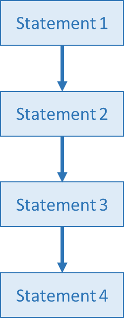
However, there are ways to execute statements using "bifurcations" and "go-back" directives that allow the programmer to control the flow of statement execution. Below we explore some of these ways of flow control.
IF statements¶
IF statements, also known as conditional statements or conditional expressions, allow programming languages to perform different computations or actions depending on whether a programmer-specified Boolean condition evaluates to TRUE or FALSE.
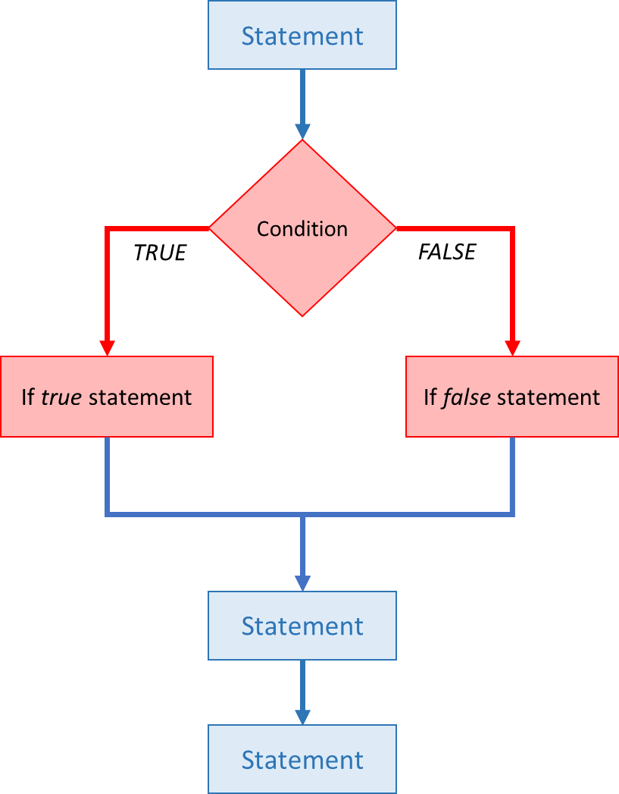
In the example shown in the diagram above, when R evaluates the Condition, if the result is TRUE, then the statement on the left is executed. On the other hand, if the result is FALSE, then the statement on the right is executed.
There are many types of IF statements. Below we review a few:
IF¶
In the simplest type of IF statement, R will execute a statement (or set of statements) if the evaluated condition is TRUE (as always). However, if the condition result is FALSE, R will simply do nothing. Take a look at the diagram below:
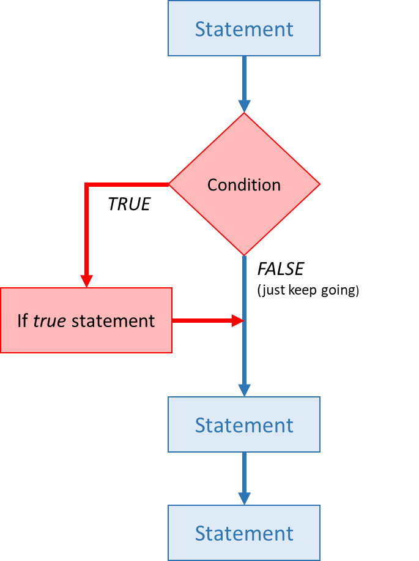
The syntax of this simplest case of IF statement is:
perform action
}
First let's do an example where the condition is TRUE. Note that first we will create a variable x, and then we will assess its value with the IF statement:
# Example of IF statement where condition is TRUE
x <- 12
if (x >= 10) {
print("x is greater than or equal to 10")
}
x
[1] "x is greater than or equal to 10"
As you can see, the condition (x >= 10) was TRUE, thus the statement print("x is greater than or equal to 10") was executed.
You probably evaluated the condition (x >= 10) in you head and know that the result is TRUE. However, if you have a more complex conditional, you can simply copy-paste the condition into the and let R do the evaluation:
(x >= 10)
Now let's try give a new value to x where the condition will result FALSE:
# Example of IF statement where condition is FALSE
x <- 5
if (x >= 10) {
print("x is greater than or equal to 10")
}
x
[1] "x is greater than or equal to 10"
As you can see, the condition (x >= 10) was FALSE, therefore R simply did nothing!
You want to see if y is negative. Which of the following will do that?
IF ... ELSE¶
In the case where you want R to execute different statements depending on the result of the conditional, you can use "IF ... ELSE" block. Take a look how it works:
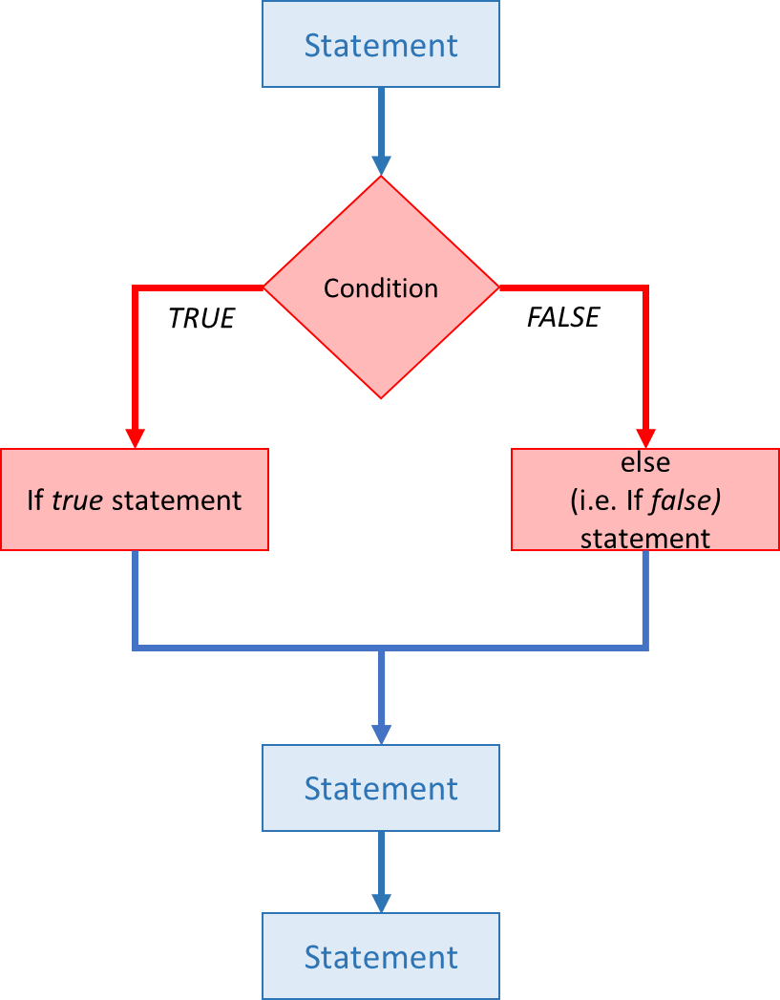
The syntax of an "IF ... ELSE" block is:
perform action
} else { # that is, if the condition is false,
perform alternative action
}
Take a look at the example below:
# Example of IF...ELSE statement where condition is FALSE
x <- 8
if (x >= 10) {
print("x is greater than or equal to 10")
} else {
print("x is less than 10")
}
[1] "x is less than 10"
As you can see, if the condition is FALSE the ELSE statement is executed... instead of simply "do nothing", like in the example above (i.e. IF example).
If the condition is TRUE, the behavior is the same as with the "simple IF statement".
# Example of IF...ELSE statement where condition is TRUE
x <- 12
if (x >= 10) {
print("x is greater than or equal to 10")
} else {
print("x is less than 10")
}
[1] "x is greater than or equal to 10"
IF ... ELSE IF ... ELSE¶
If you want to "daisy chain" multiple conditions, you can use one (or more) else if statements. Take a look at the diagram below:
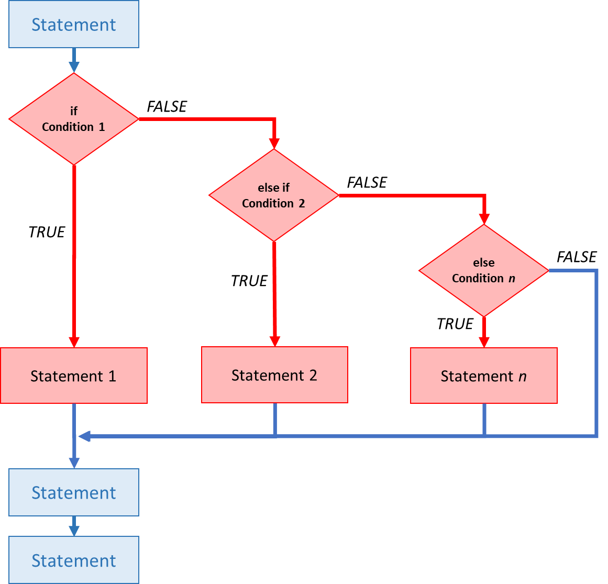
You can see that if the first condition is FALSE, then the flow is diverted to the second condition. If that result is FALSE, then the flow will be diverted to the third condition, and so on. Note that you can have many else if statements chained together as you want. This type of block ALWAYS must start with an if statement. However, it may or may not finish with an else statement depending on whether you want the last action to be "do nothing".
The syntax of an "IF ... ELSE IF ... ELSE" block is:
perform action
} else if (condition is true) { # that is, if the condition is false,
perform alternative action
} else { # that is, if the condition is false,
perform alternative action
}
Take a look at the example below:
# Example of IF...ELSE IF...ELSE statement where second condition is TRUE
x <- 8
if (x >= 10) {
print("x is greater than or equal to 10")
} else if (x > 5) {
print("x is greater than 5, but less than 10")
} else {
print("x is less than 5")
}
[1] "x is greater than 5, but less than 10"
In this case (x >= 10) was FALSE, thus the second condition (x > 5)was evaluated and returned TRUE.
Let's try a case where all conditions in the block are FALSE:
x <- 2
if (x >= 10) {
print("x is greater than or equal to 10")
} else if (x > 5) {
print("x is greater than 5, but less than 10")
} else {
print("x is less than 5")
}
[1] "x is less than 5"
Finally, for completeness, let's try an example where the first condition is TRUE:
x <- 12
if (x >= 10) {
print("x is greater than or equal to 10")
} else if (x > 5) {
print("x is greater than 5, but less than 10")
} else {
print("x is less than 5")
}
[1] "x is greater than or equal to 10"
If you need to round "numeric" variables, but do nothing if the variable ase not numeric, you should use:
If you need to round up "numeric" variables greater than 10, AND round down "numeric" variables smaller or equal to 10, you should use:
If you need to round up "numeric" variables greater than 10, AND round down "numeric" variables smaller than 10, AND do nothing with "numeric" variables equal to 10,you should use:
FOR Loops¶
If you want to iterate over a set of values, when the order of iteration is important, and perform the same operation on each, a for() loop will do the job. We saw for() loops in the shell lessons earlier. This is the most flexible of looping operations, but therefore also the hardest to use correctly. In general, the advice of many R users would be to learn about for() loops, but to avoid using for() loops unless the order of iteration is important: i.e. the calculation at each iteration depends on the results of previous iterations. If the order of iteration is not important, then you should learn about vectorized alternatives, such as the purr package, as they pay off in computational efficiency.
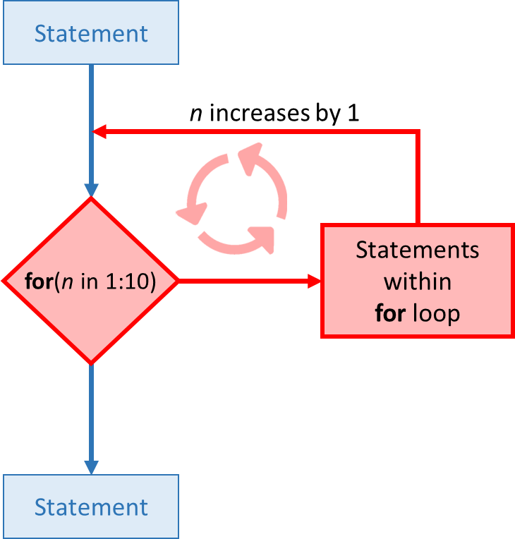
The basic structure of a for() loop is:
do a thing
}
For example:
for (i in 1:10) {
print(i)
}
[1] 1 [1] 2 [1] 3 [1] 4 [1] 5 [1] 6 [1] 7 [1] 8 [1] 9 [1] 10
The 1:10 bit creates a vector on the fly; you can iterate over any other vector as well.
We can use a for() loop nested within another for() loop to iterate over two things at once.
for (i in 1:5) {
for (j in c('a', 'b', 'c', 'd', 'e')) {
print(paste(i,j))
}
}
[1] "1 a" [1] "1 b" [1] "1 c" [1] "1 d" [1] "1 e" [1] "2 a" [1] "2 b" [1] "2 c" [1] "2 d" [1] "2 e" [1] "3 a" [1] "3 b" [1] "3 c" [1] "3 d" [1] "3 e" [1] "4 a" [1] "4 b" [1] "4 c" [1] "4 d" [1] "4 e" [1] "5 a" [1] "5 b" [1] "5 c" [1] "5 d" [1] "5 e"
We notice in the output that when the first index (i) is set to 1, the second index (j) iterates through its full set of indices. Once the indices of j have been iterated through, then i is incremented. This process continues until the last index has been used for each for() loop.
Rather than printing the results, we could write the loop output to a new object.
output_vector <- c()
for (i in 1:5) {
for (j in c('a', 'b', 'c', 'd', 'e')) {
temp_output <- paste(i, j)
output_vector <- c(output_vector, temp_output)
}
}
output_vector
- '1 a'
- '1 b'
- '1 c'
- '1 d'
- '1 e'
- '2 a'
- '2 b'
- '2 c'
- '2 d'
- '2 e'
- '3 a'
- '3 b'
- '3 c'
- '3 d'
- '3 e'
- '4 a'
- '4 b'
- '4 c'
- '4 d'
- '4 e'
- '5 a'
- '5 b'
- '5 c'
- '5 d'
- '5 e'
This approach can be useful, but ‘growing your results’ (building the result object incrementally) is computationally inefficient, where long FOR loops can slow down to a crawl. To avoid this, pre-make empty objects with the correct dimensions and let the calculations in the FOR loop to "fill up" or update the values in your pre-existing object. Let's demonstrate!
Below we will do examples:
First we will do the same FOR loop as above but with 10000 iterations. In this case output objects are NOT pre-made and instead they will "grown" inside the for loop as they need to accommodate more and more results.
Then, we will do a the same FOR loop with 10000 iterations, but we will pre-made a results matrix before the loop starts.
In both cases we will use a trick with the proc.time() function to time how long it takes each loop to finish.
Let's go to work!
# Slow FOR LOOP example
# Start the clock!
ptm <- proc.time()
output_vector <- c()
for (i in 1:10000) {
for (j in c('a', 'b', 'c', 'd', 'e')) {
temp_output <- paste(i, j)
output_vector <- c(output_vector, temp_output)
}
}
str(output_vector)
# Stop the clock
proc.time() - ptm
chr [1:50000] "1 a" "1 b" "1 c" "1 d" "1 e" "2 a" "2 b" "2 c" "2 d" "2 e" ...
user system elapsed 10.39 0.00 10.39
Then...
# FAST FOR LOOP example
# Start the clock!
ptm <- proc.time()
output_matrix <- matrix(nrow=10000, ncol=5)
j_vector <- c('a', 'b', 'c', 'd', 'e')
for (i in 1:10000) {
for (j in 1:5) {
temp_output <- paste(i, j_vector[j])
output_matrix[i, j] <- temp_output
}
}
output_vector2 <- as.vector(output_matrix)
str(output_vector)
# Stop the clock
proc.time() - ptm
chr [1:50000] "1 a" "1 b" "1 c" "1 d" "1 e" "2 a" "2 b" "2 c" "2 d" "2 e" ...
user system elapsed 0.39 0.00 0.39
How much faster was the FOR LOOP with a pre-made output object compared to the FOR LOOP with a WITHOUT pre-made output object?
As you can see the loop where we pre-made the output object ran about 20 times faster that the one where the output object needed to "grow" inside the loop.
WHILE Loops¶
Sometimes you may need needing to repeat an operation as long as a certain condition is met. You can do this with a while() loop.
do a thing
}
In the example below, the while() loop will run while the value of x is greater than zero. The value of x is re-calculated in every iteration of the while() loop (also the value of x is printed to screen):
x <- 5
while(x > 0) {
print(x)
x <- x-1
}
[1] 5 [1] 4 [1] 3 [1] 2
TRUE/FALSE: When executing long FOR LOOPS, you should pre-make empty vectors before running the loop to prevent the loop to dramatically slow down.
If you need to run a loop where you know the number of iterations required in the loop, you will use a:
If you need to run a loop where you do NOT know the number of iterations required in the loop, however you know a condition that needs to be met before the loop can finish (e.g. x > y), then you will use a:
You want to print to screen the numbers 1 to 100. Which of the following will do that?
Real-life example: NPZ model (part 1)¶
Here we will built a numerical Nutrients-Phytoplankton-Zooplankton ecosystem model (i.e. an NPZ model) with the dynamics show in the diagram below. The "currency" of the model is nitrogen (i.e. $mmol N m^{-3}$) and the state variables are Nutrients ($N$), Phytoplankton ($P$) and Zooplankton ($Z$).
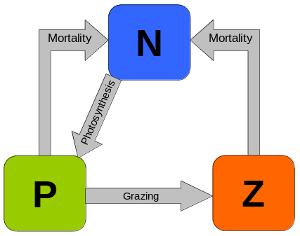
In numerical models the programmer has to specify two things:
- Mathematical equations describing ecosystem processes like photosynthesis, mortality, grazing, etc., and
- Initial conditions which represent the state of the ecosystem (i.e. concentrations of Phytoplankton, Zooplankton and Nutrients) at the beginning of the simulation.
The essence of these numerical models is a FOR LOOP where the Mathematical equations are used to calculate the future state of the model (i.e. the concentrations of Phytoplankton, Zooplankton and Nutrients) based on the present state. For every iteration of the FOR LOOP, the model estimates the state of the model at very small step in the future (i.e. only a few seconds into the future). In a a typical model run, the FOR LOOP can go around hundreds of thousands of times, effectively modelling years of ecosystem dynamics.
Let's take as an example the concentration of Phytoplankton, $P$, where the present concentration is $P_t$ and the future concentration is $P_{t+1}$.
- In the first iteration of the FOR LOOP, the value of the present concentration $P_t$ is used to calculate the future concentration, $P_{t+1}$
- At the beginning of the second iteration of the FOR LOOP, the value of present concentration $P_t$ is updated from the previous calculation (i.e. New $P_t$ = the old $P_{t+1}$). Then, a new $P_{t+1}$ is calculated, and so on...
- Note that using the previous $P_t$ to calculate the new $P_{t+1}$ works fine in all iterations except the first one!. In the first iteration the value of $P_t$ is "initialized" with an "initial condition" value specified by the programmer.
Generic equations¶
I teach a whole course on Ecosystem Modelling, where students learn how to design equations to program the model to do what they what it to do. However, in the interest of time, here I will simply give you the equations. As a programmer, your job is to get the equations supplied by the modeller and turn them into R code.
Using the diagram above as a reference, the following generic equations describe the dynamics among the Nutrients ($N$), Phytoplankton ($P$) and Zooplankton ($Z$) state variables:
(1) $$ \frac{\partial P}{\partial t} = photosynthesis - grazing - mortalityP $$
(2) $$ \frac{\partial N}{\partial t} = mortalityP + mortalityZ - photosynthesis $$
(3) $$ \frac{\partial Z}{\partial t} = grazing - mortalityZ $$
Continuous equations¶
Using the "generic equations" above, we can define actual partial differential equations to describe the different ecosystem processes and flows of biomass among the different state variables (see table below for symbols and units):
(4) $$ \frac{\partial P}{\partial t} = \mu L^N P - \gamma L^P Z - m_P P$$
(5) $$ \frac{\partial N}{\partial t} = m_P P + m_ZZ - \mu L^N P $$
(6) $$ \frac{\partial Z}{\partial t} = \gamma L^P Z -m_ZZ $$
(7) $$L^N = \frac{N}{K+N}$$
(8) $$L^P = 1-e^{-\Lambda P}$$
Note that equations 1, 2 and 3 are equivalent to equations 4, 5, and 6, respectively. We just replaced the "process terms" with the actual mathematical terms representing those processes.
Table of symbols and units:
| Symbol | Units | Description |
|---|---|---|
| $P$ | $mmol N m^{-3}$ | phytoplankton concentration |
| $N$ | $mmol N m^{-3}$ | nutrients concentration |
| $Z$ | $mmol N m^{-3}$ | zooplankton concentration |
| $L^N$ | dimensionless | Limitation due to (low) nutrients on phytoplankton (see Eq. 7) |
| $L^P$ | dimensionless | Limitation due to (low) phytoplankton on zooplankton (see Eq. 8) |
| $K$ | $mmol N m^{-3}$ | Half-saturation for nutrient absorption by phytoplankton |
| $t$ | $days$ | time |
| $\Lambda$ | $mmol N^{-1} m^3$ | Initial slope of ingestion saturation of zooplankton |
| $m_P$ | $d^{-1}$ | mortality rate of phytoplankton |
| $m_Z$ | $d^{-1}$ | mortality rate of zooplankton |
| $\mu$ | $d^{-1}$ | growth rate of phytoplankton |
| $\gamma$ | $d^{-1}$ | growth rate of zooplankton |
Discrete equations¶
The model equations above (i.e. Equations 4 to 8) need to be discretized to convert them into a form that can be processed by computers. We won't talk much about how the discretization process works. We only need to understand that, with some mathematical assumtions, Equations 4 to 8 are converted into Equations 9 to 13 below:
(9) $$ P_{t+1} = P_t + \left\{ \left[ \mu L^N_t P_t - \gamma L^P_t Z_t - m_P P_t \right] \Delta t \right\} $$
(10) $$ N_{t+1} = N_t + \left\{ \left[ m_P P_t + m_Z Z_t - \mu L^N_t P_t \right] \Delta t \right\} $$
(11) $$ Z_{t+1} = Z_t + \left\{ \left[ \gamma L^P_t Z_t -m_ZZ_t \right] \Delta t \right\} $$
(12) $$L^N_t = \frac{N_t}{K+N_t}$$
(13) $$L^P_t = 1-e^{-\Lambda P_t}$$
As you can see, this "discrete equations" are what we need to calculate the future using the present. For example, take a look at Equation 9, where we estimate the value of future value of Phytoplankton, $P_{t+1}$, using only the values of the present state (i.e. $P_t$, $Z_t$ and $N_t$).
Transferring equations to computer code¶
It is time to convert the model equation above into R code. There are some steps that we need to do before we code the actual model equations, and then there is plotting code we need to do after the model equations. By the time we finish our model code should look a bit like the diagram below:
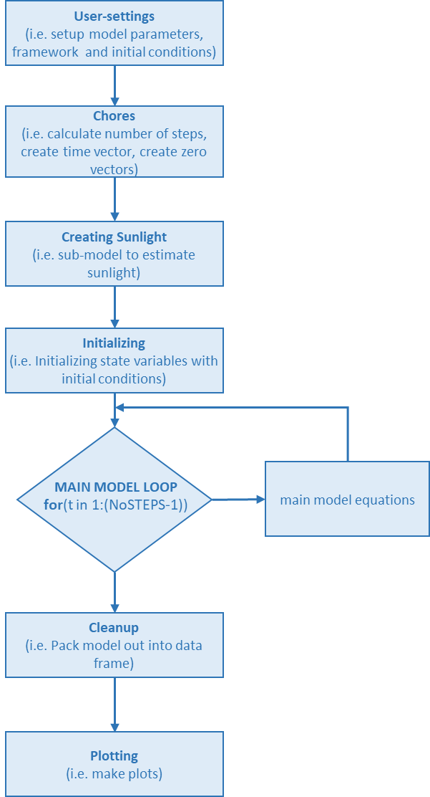
Note that we will NOT code the model linearly from start to end. The coding process involved a lot of jumping around... code a bit from the beginning, then jump and code a bit in the middle, then jump cade a line and the end, then jump back to beginning for a few more lines of code, and so on. In real-life coding, you start with the bones and then proceed to add flesh little by little until the end. In the sections below, we will replicate the process of coding that a programmer would follow. Let's start with an empty file!
In RStudio, create a new R script, name it NPZmodel.r and make sure you save it in Desktop\Lab5. Here on you will be required to copy-paste bits of code into your NPZmodel.r file. We will simulate the normal process that someone may follow in the development of a new model from scratch.
Roughly speaking, the steps that we need to follow are the following:
- Create empty vectors for each variable
- Create the FOR LOOP where we will include Equations 9 to 13
- Graph the results
There are many intermediate steps in between the steps above (see above diagram), however we can figure those out as we go.
Creating the "time" vector¶
The first step is to create a time vector. This will be a long column that starts at 0 and ends in the number of days that we want our model to run for (e.g. 365 days). Note that length of the vector will depend on the model's "time-step", which is how much forward in time the model will advance in ever iteration of the FOR LOOP. Remember that for the model to work properly the time-step needs to be very small, in the order of a few seconds.
Quickly Googleing "Create vector of equally spaced numbers in R" reveals that we need to use the seq() and a quick look at the help file of the function (i.e. ?seq) shows that we need 3 input arguments:
from =, which is the starting point of the vector, in our case:0to =, which is the ending point of the vector. In our case, for example, we could make this365if we want to run the model for a yearlength =, which the number of steps between the starting and ending points. We need to calculate this using the "time-step"
Type the following in your NPZmodel.r file, and click :
# User settings ----------------------------------------
# Framework
days <- 10 # number of days of experiment run (units: days)
dt <- 0.01 # time-step (units: days)
# End of User settings ---------------------------------
# Chores (calculate number of steps, create time vector, create zero vectors, ...)
NoSTEPS <- as.integer(days / dt) # Calculates the number of steps by dividing days by dt and rounding down
time <- seq(from = 0, to = days, length = NoSTEPS) # Create time vector of equally spaced numbers from zero to "days"
As you can see, in the first couple of line we define days and dt. The modeller (i.e. you) can change these parameters at any time. For example, if you want to run the model for 10 years just change to days <- 365 * 10... or if you want to make the "time-step" smaller, simply change to dt <- 0.001.
It is a good practice to keep at the top of your script all the parameters that are ment to be "adjusted" by the modeller. These first few lines of code are like "knobs" that the modeller can adjust before running the model.
Note that we needed to do NoSTEPS <- as.integer(days / dt) to calculate the number of steps in the run, which was then used as the length = argument when making the time vector.
As you can see, the starting and focal point was to make the time vector via time <- seq(from = 0, to = days, length = NoSTEPS). The rest of the code was just to calculate all the arguments needed by the function seq().
Let's take a look at our newly created time vector:
str(time)
head(time)
tail(time)
num [1:1000] 0 0.01 0.02 0.03 0.04 ...
- 0
- 0.01001001001001
- 0.02002002002002
- 0.03003003003003
- 0.04004004004004
- 0.05005005005005
- 9.94994994994995
- 9.95995995995996
- 9.96996996996997
- 9.97997997997998
- 9.98998998998999
- 10
How many columns are in the time vector?
How many elements are in the time vector?
What is the first number in the time vector?
What is the last number in the time vector?
What are the units of the time vector?
Creating empty vectors¶
The second step is to create an empty vector for every model variable (i.e. N, P, Z, time and others).
You should remember from the FOR LOOPS section above, that it is very important to pre-make empty vectors to avoid the loop to drastically slow down!!. During the FOR LOOP, the values of the empty vectors will be later filled out.
The function to create empty vectors is numeric(). If you did not know this, you could have Googled "how to create an empty vector in R" as a starting point.
A quick ?numeric to read the functions help file reveals that we just need one argument: length of vector. This is great because we already calculated this (i.e. NoSTEPS).
We need one empty vector for each of the equations 9 to 13. Go ahead and copy-paste the following at the end of the # Chores section of your code in your NPZmodel.r file, and click :
P <- numeric(NoSTEPS) # Make Phytoplankton "empty" vector by making a vector array of zeros (size: NoSTEPS rows by ONE column) (units: mmolN m^-3)
N <- numeric(NoSTEPS) # Make Nutrients "empty" vector (same process as above) (units: mmolN m^-3)
Z <- numeric(NoSTEPS) # Make Zooplankton "empty" vector (same process as above) (units: mmolN m^-3)
L_N <- numeric(NoSTEPS) # Make "Limitation of N on Phytoplankton" empty vector (same process as above) (units: dimensionless)
L_P <- numeric(NoSTEPS) # Make "Limitation of P on Zooplankton" empty vector (same process as above) (units: dimensionless)
Let's take a look at one our newly created empty vectors:
P
- 0
- 0
- 0
- 0
- 0
- 0
- 0
- 0
- 0
- 0
- 0
- 0
- 0
- 0
- 0
- 0
- 0
- 0
- 0
- 0
- 0
- 0
- 0
- 0
- 0
- 0
- 0
- 0
- 0
- 0
- 0
- 0
- 0
- 0
- 0
- 0
- 0
- 0
- 0
- 0
- 0
- 0
- 0
- 0
- 0
- 0
- 0
- 0
- 0
- 0
- 0
- 0
- 0
- 0
- 0
- 0
- 0
- 0
- 0
- 0
- 0
- 0
- 0
- 0
- 0
- 0
- 0
- 0
- 0
- 0
- 0
- 0
- 0
- 0
- 0
- 0
- 0
- 0
- 0
- 0
- 0
- 0
- 0
- 0
- 0
- 0
- 0
- 0
- 0
- 0
- 0
- 0
- 0
- 0
- 0
- 0
- 0
- 0
- 0
- 0
- 0
- 0
- 0
- 0
- 0
- 0
- 0
- 0
- 0
- 0
- 0
- 0
- 0
- 0
- 0
- 0
- 0
- 0
- 0
- 0
- 0
- 0
- 0
- 0
- 0
- 0
- 0
- 0
- 0
- 0
- 0
- 0
- 0
- 0
- 0
- 0
- 0
- 0
- 0
- 0
- 0
- 0
- 0
- 0
- 0
- 0
- 0
- 0
- 0
- 0
- 0
- 0
- 0
- 0
- 0
- 0
- 0
- 0
- 0
- 0
- 0
- 0
- 0
- 0
- 0
- 0
- 0
- 0
- 0
- 0
- 0
- 0
- 0
- 0
- 0
- 0
- 0
- 0
- 0
- 0
- 0
- 0
- 0
- 0
- 0
- 0
- 0
- 0
- 0
- 0
- 0
- 0
- 0
- 0
- 0
- 0
- 0
- 0
- 0
- 0
- ...
- 0
- 0
- 0
- 0
- 0
- 0
- 0
- 0
- 0
- 0
- 0
- 0
- 0
- 0
- 0
- 0
- 0
- 0
- 0
- 0
- 0
- 0
- 0
- 0
- 0
- 0
- 0
- 0
- 0
- 0
- 0
- 0
- 0
- 0
- 0
- 0
- 0
- 0
- 0
- 0
- 0
- 0
- 0
- 0
- 0
- 0
- 0
- 0
- 0
- 0
- 0
- 0
- 0
- 0
- 0
- 0
- 0
- 0
- 0
- 0
- 0
- 0
- 0
- 0
- 0
- 0
- 0
- 0
- 0
- 0
- 0
- 0
- 0
- 0
- 0
- 0
- 0
- 0
- 0
- 0
- 0
- 0
- 0
- 0
- 0
- 0
- 0
- 0
- 0
- 0
- 0
- 0
- 0
- 0
- 0
- 0
- 0
- 0
- 0
- 0
- 0
- 0
- 0
- 0
- 0
- 0
- 0
- 0
- 0
- 0
- 0
- 0
- 0
- 0
- 0
- 0
- 0
- 0
- 0
- 0
- 0
- 0
- 0
- 0
- 0
- 0
- 0
- 0
- 0
- 0
- 0
- 0
- 0
- 0
- 0
- 0
- 0
- 0
- 0
- 0
- 0
- 0
- 0
- 0
- 0
- 0
- 0
- 0
- 0
- 0
- 0
- 0
- 0
- 0
- 0
- 0
- 0
- 0
- 0
- 0
- 0
- 0
- 0
- 0
- 0
- 0
- 0
- 0
- 0
- 0
- 0
- 0
- 0
- 0
- 0
- 0
- 0
- 0
- 0
- 0
- 0
- 0
- 0
- 0
- 0
- 0
- 0
- 0
- 0
- 0
- 0
- 0
- 0
- 0
- 0
- 0
- 0
- 0
- 0
- 0
As you can see, P is just a bunch of zeros.
How many columns are in the N vector?
How many elements are in the Z vector?
What is the last number in the P vector?
What are the units of the P vector?
Let's pay special attention to the first number of our main state variables:
What is the first number in the N vector?
What is the first number in the P vector?
What is the first number in the Z vector?
Using Checkpoints¶
CHECKPOINTS (like the one in the yellow link below) are text files containing the R code that you should have in your NPZmodel.r file up to this point. As you continue down the lab, the code within CHECKPOINTS grows incrementally.
Compare your code against CHECKPOINTS using "Diffchecker"¶
CHECKPOINTS are great to compare against your own code to see if you did everything correctly. You can use https://www.diffchecker.com/ to compare your code against the CHECKPOINT's code. Simply copy-paste your code on the left panel in Diffchecker and copy-paste the CHECKPOINT's code in the right panel in Diffchecker, then click on the "Find difference" button.
Additionally, if you get a bit lost, you can always click on an earlier "CHECKPOINT" link, use diffchecker to see where you went wrong, and the copy-paste the CHECKPOINT's contents to your file... that will get you all caught up, without having to redo the entire lab.
Basic plotting¶
The next step is to do some basic plots. This is useful to see how our state variables change as we start adding more and more code to your NPZmodel.r file.
We could just make our plot using the built-in plotting functions in R. However, if we want to use ggplot2, we need to two things:
(1) We import the ggplot2 package by inserting the following at the top of your NPZmodel.r file. By convention, all package imports are done at the top of the file to allow future readers (including the future you) to easily learn what packages are needed to run your code.
library(ggplot2)
(2) We need to "pack" our vectors into a data frame, since ggplot2 likes to use data frames as input. We do this by inserting the following at the end of your NPZmodel.r file. Note that we also added a print statement to let us know when the model is finished.
# For cleanliness, let's pack everything into a data frame
output <- data.frame(time=time,
N=N,
P=P,
Z=Z)
# Print to screen
print("Model run is done!")
[1] "Model run is done!"
Now we are ready to use ggplot2 to make our graphs. We do this by inserting the following at the end of your NPZmodel.r file. When you are done, click to run your model.
# Plotting ---------------------------------------------------------------------
library(ggplot2)
# Plot 1: Main variables
ggplot(data = output, aes(x=time)) +
geom_line(aes(y = P, color="P")) +
geom_line(aes(y = N, color="N")) +
geom_line(aes(y = Z, color="Z")) +
labs(x = "time (days)",
y = expression(Nitrogen~(mmol~N~m^-3))) +
scale_color_manual("Variables",
breaks = c("P", "N", "Z"),
labels = c("P", "N", "Z"),
values = c("green", "blue", "red"))
![No description has been provided for this image](data:image/png;base64,iVBORw0KGgoAAAANSUhEUgAABtYAAAPoCAMAAAB9EDofAAAAaVBMVEUAAAAAAP8A/wAzMzNN
TU1oaGh8fHyDg4OMjIyVlZWampqjo6Onp6evr6+ysrK5ubm9vb3BwcHHx8fJycnQ0NDR0dHY
2NjZ2dne3t7h4eHk5OTp6enq6urr6+vv7+/w8PD19fX/AAD///+mcvkXAAAACXBIWXMAACZy
AAAmcgEhK5fuAAAgAElEQVR4nO3dbVsa69KubZ4125eoMYkxwxizoov//yMfUJEGAQ8or+7S
OvYP9x3Fl9rO7lHnBBuYTCVJ+jQmYw8gSdL7sdYkSZ+ItSZJ+kSsNUnSJ2KtSZI+EWtNkvSJ
WGuSpE/EWpMkfSKD1NrDz/Ou677+9/DmLV3PW98rSdK6IWrt98lzUZ38fuOWv69qbfv3SpL0
ygC19q9XVf923/Jrvda2f68kSa8NUGtfZ3e1fj1MH37N7nj92H3Lj677Db9XkqTX2tfaw8sd
rb8vfzDbdsv52n2y7d8rSdIG7Wvtv+X9rG+rd8Ze37LeXdu/V5KkDdrXWu+Bxd+rjyS+uuVf
132F3ytJ0gbta+1r1/19/uff1dp6dcu8uh5+fum6818Pb3yvJEkbtK+1k94Di113suuWX7NC
O+lfz7/9eyVJ2qB9rXUr1dTtuuVr//r+9b+19f/9vxctJ5ckfTipam125+zrn/lHf+YX9j9Y
a5KkPaWqtZ5Zr/201iRJe8paa3+67nz3Vzz5vwcLfXMzCWcyKMigIIOCoguurFSXjPQtHpXc
/hWPRjplmkk4k0FBBgUZFBRdcGWlusC/b3ENyRsX+I90yjSTcCaDggwKMigouuDKSvV07L7H
O2dvPx17pFOmmYQzGRRkUJBBQdEFV1b7Wuv10ayl/tt1y0nXPSxv+7brexdGOmWaSTiTQUEG
BRkUFF1wZQ35Usfzd5l52HXLt8fLHx+dP95P2/69CyOdMs0knMmgIIOCDAqKLriyBnhjmm+9
N5f5uvOW+cv0/5zX2J/zxwshd33vs5FOmWYSzmRQkEFBBgVFF1xZA9Ra/y2vn+56La7Vf3XL
j+XHJw+bv3fNSKdMMwlnMijIoCCDgqILrqwBam3+F7L+Cz32noL26pafi0+c/9vyFWtGOmWa
STiTQUEGBRkUFF1wZQ1Ra9OHn+fzpvq5+OPY8pnV67dM//2YfeLk2++t37tmpFOmmYQzGRRk
UJBBQdEFV9YgtdbQSKdMMwlnMijIoCCDgqILrixrLZeEMxkUZFCQQUHRBVeWtZZLwpkMCjIo
yKCg6IIry1rLJeFMBgUZFGRQUHTBlWWt5ZJwJoOCDAoyKCi64Mqy1nJJOJNBQQYFGRQUXXBl
WWu5JJzJoCCDggwKii64sqy1XBLOZFCQQUEGBUUXXFnWWi4JZzIoyKAgg4KiC64say2XhDMZ
FGRQkEFB0QVXlrWWS8KZDAoyKMigoOiCK8tayyXhTAYFGRRkUFB0wZVlreWScCaDggwKMigo
uuDKstZySTiTQUEGBRkUFF1wZVlruSScyaAgg4IMCoouuLKstVwSzmRQkEFBBgVFF1xZ1lou
CWcyKMigIIOCoguuLGstl4QzGRRkUJBBQdEFV5a1lkvCmQwKMijIoKDogivLWssl4UwGBRkU
ZFBQdMGVZa3lknAmg4IMCjIoKLrgyrLWckk4k0FBBgUZFBRdcGVZa7kknMmgIIOCDAqKLriy
rLVcEs5kUJBBQQYFRRdcWdZaLglnMijIoCCDgqILrixrLZeEMxkUZFCQQUHRBVeWtZZLwpkM
CjIoyKCg6IIry1rLJeFMBgUZFGRQUHTBlWWt5ZJwJoOCDAoyKCi64Mqy1nJJOJNBQQYFGRQU
XXBlWWu5JJzJoCCDggwKii64sqy1XBLOZFCQQUEGBUUXXFnWWi4JZzIoyKAgg4KiC64say2X
hDMZFGRQkEFB0QVXlrWWS8KZDAoyKMigoOiCK8tayyXhTAYFGRRkUFB0wZVlreWScCaDggwK
MigouuDKstZySTiTQUEGBRkUFF1wZVlruSScyaAgg4IMCoouuLKstVwSzmRQkEFBBgVFF1xZ
1louCWcyKMigIIOCoguuLGstl4QzGRRkUJBBQdEFV5a1lkvCmQwKMijIoKDogivLWssl4UwG
BRkUZFBQdMGVZa3lknAmg4IMCjIoKLrgyrLWckk4k0FBBgUZFBRdcGVZa7kknMmgIIOCDAqK
LriyrLVcEs5kUJBBQQYFRRdcWdZaLglnMijIoCCDgqILrixrLZeEMxkUZFCQQUHRBVeWtZZL
wpkMCjIoyKCg6IIry1rLJeFMBgUZFGRQUHTBlWWt5ZJwJoOCDAoyKCi64Mqy1nJJOJNBQQYF
GRQUXXBlWWu5JJzJoCCDggwKii64sqy1XBLOZFCQQUEGBUUXXFnWWi4JZzIoyKAgg4KiC64s
ay2XhDMZFGRQkEFB0QVXlrWWS8KZDAoyKMigoOiCK8tayyXhTAYFGRRkUFB0wZVlreWScCaD
ggwKMigouuDKstZySTiTQUEGBRkUFF1wZVlruSScyaAgg4IMCoouuLKstVwSzmRQkEFBBgVF
F1xZ1louCWcyKMigIIOCoguuLGstl4QzGRRkUJBBQdEFV5a1lkvCmQwKMijIoKDogivLWssl
4UwGBRkUZFBQdMGVZa3lknAmg4IMCjIoKLrgyrLWckk4k0FBBgUZFBRdcGVZa7kknMmgIIOC
DAqKLriyrLVcEs5kUJBBQQYFRRdcWdZaLglnMijIoCCDgqILrixrLZeEMxkUZFCQQUHRBVeW
tZZLwpkMCjIoyKCg6IIry1rLJeFMBgUZFGRQUHTBlWWt5ZJwJoOCDAoyKCi64Mqy1nJJOJNB
QQYFGRQUXXBlWWu5JJzJoCCDggwKii64sqy1XBLOZFCQQUEGBUUXXFnWWi4JZzIoyKAgg4Ki
C64say2XhDMZFGRQkEFB0QVXlrWWS8KZDAoyKMigoOiCK8tayyXhTAYFGRRkUFB0wZVlreWS
cCaDggwKMigouuDKstZySTiTQUEGBRkUFF1wZVlruSScyaAgg4IMCoouuLKstVwSzmRQkEFB
BgVFF1xZ1louCWcyKMigIIOCoguuLGstl4QzGRRkUJBBQdEFV5a1lkvCmQwKMijIoKDogivL
Wssl4UwGBRkUZFBQdMGVZa3lknAmg4IMCjIoKLrgyrLWckk4k0FBBgUZFBRdcGVZa7kknMmg
IIOCDAqKLriyrLVcEs5kUJBBQQYFRRdcWdZaLglnMijIoCCDgqILrqyPXmuSJPV89Fob6X8J
NZNwJoOCDAoyKCi64Mqy1nJJOJNBQQYFGRQUXXBlWWu5JJzJoCCDggwKii64sqy1XBLOZFCQ
QUEGBUUXXFnWWi4JZzIoyKAgg4KiC64say2XhDMZFGRQkEFB0QVXlrWWS8KZDAoyKMigoOiC
K8tayyXhTAYFGRRkUFB0wZVlreWScCaDggwKMigouuDKstZySTiTQUEGBRkUFF1wZVlruSSc
yaAgg4IMCoouuLKstVwSzmRQkEFBBgVFF1xZ1louCWcyKMigIIOCoguuLGstl4QzGRRkUJBB
QdEFV5a1lkvCmQwKMijIoKDogivLWssl4UwGBRkUZFBQdMGVZa3lknAmg4IMCjIoKLrgyrLW
ckk4k0FBBgUZFBRdcGVZa7kknMmgIIOCDAqKLriyrLVcEs5kUJBBQQYFRRdcWdZaLglnMijI
oCCDgqILrixrLZeEMxkUZFCQQUHRBVeWtZZLwpkMCjIoyKCg6IIry1rLJeFMBgUZFGRQUHTB
lWWt5ZJwJoOCDAoyKCi64Mqy1nJJOJNBQQYFGRQUXXBlWWu5JJzJoCCDggwKii64sqy1XBLO
ZFCQQUEGBUUXXFnWWi4JZzIoyKAgg4KiC64say2XhDMZFGRQkEFB0QVXlrWWS8KZDAoyKMig
oOiCK8tayyXhTAYFGRRkUFB0wZVlreWScCaDggwKMigouuDKstZySTiTQUEGBRkUFF1wZVlr
uSScyaAgg4IMCoouuLKstVwSzmRQkEFBBgVFF1xZ1louCWcyKMigIIOCoguuLGstl4QzGRRk
UJBBQdEFV5a1lkvCmQwKMijIoKDogivLWssl4UwGBRkUZFBQdMGVZa3lknAmg4IMCjIoKLrg
yrLWckk4k0FBBgUZFBRdcGVZa7kknMmgIIOCDAqKLriyrLVcEs5kUJBBQQYFRRdcWdZaLgln
MijIoCCDgqILrixrLZeEMxkUZFCQQUHRBVeWtZZLwpkMCjIoyKCg6IIry1rLJeFMBgUZFGRQ
UHTBlWWt5ZJwJoOCDAoyKCi64Mqy1nJJOJNBQQYFGRQUXXBlWWu5JJzJoCCDggwKii64sqy1
XBLOZFCQQUEGBUUXXFnWWi4JZzIoyKAgg4KiC64say2XhDMZFGRQkEFB0QVXlrWWS8KZDAoy
KMigoOiCK8tayyXhTAYFGRRkUFB0wZVlreWScCaDggwKMigouuDKstZySTiTQUEGBRkUFF1w
ZVlruSScyaAgg4IMCoouuLKstVwSzmRQkEFBBgVFF1xZ1louCWcyKMigIIOCoguuLGstl4Qz
GRRkUJBBQdEFV5a1lkvCmQwKMijIoKDogivLWssl4UwGBRkUZFBQdMGVZa3lknAmg4IMCjIo
KLrgyrLWckk4k0FBBgUZFBRdcGVZa7kknMmgIIOCDAqKLriyrLVcEs5kUJBBQQYFRRdcWdZa
LglnMijIoCCDgqILrixrLZeEMxkUZFCQQUHRBVeWtZZLwpkMCjIoyKCg6IIry1rLJeFMBgUZ
FGRQUHTBlWWt5ZJwJoOCDAoyKCi64Mqy1nJJOJNBQQYFGRQUXXBlWWu5JJzJoCCDggwKii64
sqy1XBLOZFCQQUEGBUUXXFnWWi4JZzIoyKAgg4KiC64say2XhDMZFGRQkEFB0QVXlrWWS8KZ
DAoyKMigoOiCK8tayyXhTAYFGRRkUFB0wZVlreWScCaDggwKMigouuDKstZySTiTQUEGBRkU
FF1wZVlruSScyaAgg4IMCoouuLKstVwSzmRQkEFBBgVFF1xZ1louCWcyKMigIIOCoguuLGst
l4QzGRRkUJBBQdEFV5a1lkvCmQwKMijIoKDogivLWssl4UwGBRkUZFBQdMGVZa3lknAmg4IM
CjIoKLrgyrLWckk4k0FBBgUZFBRdcGVZa7kknMmgIIOCDAqKLriyrLVcEs5kUJBBQQYFRRdc
WdZaLglnMijIoCCDgqILrixrLZeEMxkUZFCQQUHRBVeWtZZLwpkMCjIoyKCg6IIry1rLJeFM
BgUZFGRQUHTBlWWt5ZJwJoOCDAoyKCi64Mqy1nJJOJNBQQYFGRQUXXBlDVJrDz/Pu677+t/D
27f8/fal606+/V583PVs+tEjnTLNJJzJoCCDggwKii64soaotd8nz7108vutW74uKuzr08d/
rbXRGRRkUJBBQdEFV9YAtfav10z/dt/ydfnx+eNX/LLWRmdQkEFBBgVFF1xZA9TarKtOfj1M
H37N7pr92HnL71l3/Zj1279vs3/8N/+KH123fg9v1UinTDMJZzIoyKAgg4KiC66s9rX28HIn
7e/aPa5Xt3x7LrPHfz3eXTtfv4O3bqRTppmEMxkUZFCQQUHRBVdW+1r7b3kf7dvqfa9Xt5y8
1N7DcwNueehxaaRTppmEMxkUZFCQQUHRBVdW+1rrPY74e/VRyO23LPrs38u1I9uMdMo0k3Am
g4IMCjIoKLrgympfa1+77u/zP/+uttT2W+a19mX61HYPP7903fmv108OeDTSKdNMwpkMCjIo
yKCg6IIrq32tnfQeR+y6E3TLvM9+Th8vhDw/2fLkgCcjnTLNJJzJoCCDggwKii64strXWrdS
Xh26ZfqlO5nfPfvav76/12v/e9FqaknSh5Sz1n48XxI5u6f29c/8H3/mzwVYPg5prUmSNkpZ
az/WLyCZPt5x+/nygbUmSdooY61tarXpn8ULj6wa6XHrZhLOZFCQQUEGBUUXXFkJLxnZ2Grb
nsI20inTTMKZDAoyKMigoOiCKyvfBf7fNreatTYWg4IMCjIoKLrgysr2dOx/X15eQGvN2lMA
no10yjSTcCaDggwKMigouuDKal9rvS77sVpZG275d9Kd/Fl+xUnXPSy/+NuGnz7SKdNMwpkM
CjIoyKCg6IIra8iXOp6/D83DzlvmrdZ/aeNvy8sfzze/lv9Ip0wzCWcyKMigIIOCoguurAHe
mOZb7+1nvu6+5ctqqz2+sv/P+Wf+nG++ENJaa8+gIIOCDAqKLriyBqi1/jtcP5XW4uqP9Vv+
67+oyOOX/Fh+eLLxVSFHOmWaSTiTQUEGBRkUFF1wZQ1Qa4/vDrryuo4vFzWu3XL+qtamP1/e
LXvz+66NdMo0k3Amg4IMCjIoKLrgyhqi1qYPP+eFdf5zcX9rea3+6i3d61qb/vsx+4qTb9ve
I3ukU6aZhDMZFGRQkEFB0QVX1iC11tBIp0wzCWcyKMigIIOCoguuLGstl4QzGRRkUJBBQdEF
V5a1lkvCmQwKMijIoKDogivLWssl4UwGBRkUZFBQdMGVZa3lknAmg4IMCjIoKLrgyrLWckk4
k0FBBgUZFBRdcGVZa7kknMmgIIOCDAqKLriyrLVcEs5kUJBBQQYFRRdcWdZaLglnMijIoCCD
gqILrixrLZeEMxkUZFCQQUHRBVeWtZZLwpkMCjIoyKCg6IIry1rLJeFMBgUZFGRQUHTBlbVH
rd1dXZx2k5nu9OLqtt1IexnplGkm4UwGBRkUZFBQdMGVRWvt9uKx0Za6i5umg0EjnTLNJJzJ
oCCDggwKii64slitXR9NNji6bjwcMNIp00zCmQwKMijIoKDogiuL1NrtxlJ7LLbR77GNdMo0
k3Amg4IMCjIoKLrgygK1drat1ObO2o+400inTDMJZzIoyKAgg4KiC66sN2vt7umuWnf6/er2
9v75k7e319/Pnm+4azzhbiOdMs0knMmgIIOCDAqKLriy3qq1u/mVImfX9xtvvJlfR9KN+he2
kU6ZZhLOZFCQQUEGBUUXXFlv1Nqs1brvu75gfjHJmL020inTTMKZDAoyKMigoOiCK2t3rc1a
7fKtn3DVTUZ8HHKkU6aZhDMZFGRQkEFB0QVX1u5aO+7ApY53x907DXOAkU6ZZhLOZFCQQUEG
BUUXXFk7a+0SXg9yPN71kCOdMs0knMmgIIOCDAqKLriydtXaHb3K8b4b7bW0Rjplmkk4k0FB
BgUZFBRdcGXtqrVTfC3Izek7jHKQkU6ZZhLOZFCQQUEGBUUXXFm+gn8uCWcyKMigIIOCoguu
LGstl4QzGRRkUJBBQdEFV9ZbtXZ/cTSZ8EcjBzfSKdNMwpkMCjIoyKCg6IIra1ut3Z5OJhf3
Ty8ykuClH7ca6ZRpJuFMBgUZFGRQUHTBlbWl1q6fXu/x/mhydjed3hxPLoYdCxvplGkm4UwG
BRkUZFBQdMGVtbnW7ieTq+n0++R4cTfteJLl7bDXjHTKNJNwJoOCDAoyKCi64MraXGsXk8cX
gjybTJ5f4/gm68OQI50yzSScyaAgg4IMCoouuLI219rRU53dTI5fvm7EF8jaZaRTppmEMxkU
ZFCQQUHRBVfW5lqbPH96crr+mWxGOmWaSTiTQUEGBRkUFF1wZb1Ra8frn8lmpFOmmYQzGRRk
UJBBQdEFV9bmtnq5QmRxocjdsuByGemUaSbhTAYFGRRkUFB0wZW1uda+r18hcjbZ+Wai4xnp
lGkm4UwGBRkUZFBQdMGVteWxxW5ydr/86P4s6xUj1lp7BgUZFGRQUHTBlbWl1uavLtL7ogl9
i5rBjXTKNJNwJoOCDAoyKCi64MraeiXI5dHy393F/bYvG9tIp0wzCWcyKMigIIOCoguurKQX
OGIjnTLNJJzJoCCDggwKii64sqy1XBLOZFCQQUEGBUUXXFmg1lI330inTDMJZzIoyKAgg4Ki
C64say2XhDMZFGRQkEFB0QVXlrWWS8KZDAoyKMigoOiCK8tayyXhTAYFGRRkUFB0wZVlreWS
cCaDggwKMigouuDKstZySTiTQUEGBRkUFF1wZVlruSScyaAgg4IMCoouuLKstVwSzmRQkEFB
BgVFF1xZ1louCWcyKMigIIOCoguuLGstl4QzGRRkUJBBQdEFV5a1lkvCmQwKMijIoKDogivL
Wssl4UwGBRkUZFBQdMGVZa3lknAmg4IMCjIoKLrgyrLWckk4k0FBBgUZFBRdcGWl7ixgpFOm
mYQzGRRkUJBBQdEFV5a1lkvCmQwKMijIoKDogivLWssl4UwGBRkUZFBQdMGVtUet3V8eT1a1
Gwsb6ZRpJuFMBgUZFGRQUHTBlcWr6bqbrGs4FzXSKdNMwpkMCjIoyKCg6IIrC1fT/etWs9be
X8KZDAoyKMigoOiCKwtX0+Wsxi7vWo5ykJFOmWYSzmRQkEFBBgVFF1xZuNaOJ5OzloMcaKRT
ppmEMxkUZFCQQUHRBVcWrrXZnbV899WstQEYFGRQkEFB0QVX1j611nKOQ410yjSTcCaDggwK
MigouuDKwl3VWWtDSDiTQUEGBRkUFF1wZeGuuphMblsOcqCRTplmEs5kUJBBQQYFRRdcWbjW
bieTi5aDHGikU6aZhDMZFGRQkEFB0QVXFn9k8XIyuW44yIFGOmWaSTiTQUEGBRkUFF1wZe3x
B7OL2f21dI9DjnTKNJNwJoOCDAoyKCi64Mra5zqQ9ZeEzHANyUinTDMJZzIoyKAgg4KiC64s
Xk23vibkABLOZFCQQUEGBUUXXFm+JmQuCWcyKMigIIOCoguurH0u8E/4pzVrrT2DggwKMigo
uuDKwrV2NJl8bznIgUY6ZZpJOJNBQQYFGRQUXXBl7fPiWfctBznQSKdMMwlnMijIoCCDgqIL
rixfEzKXhDMZFGRQkEFB0QVX1j4PQrac41AjnTLNJJzJoCCDggwKii64sva5ZOSm5SAHGumU
aSbhTAYFGRRkUFB0wZXFL/CfTE5bDnKgkU6ZZhLOZFCQQUEGBUUXXFn8kcXryeSq4SAHGumU
aSbhTAYFGRRkUFB0wZW1xx/MZr12ep3tHbJHOmWaSTiTQUEGBRkUFF1wZe1zJaSvMtJewpkM
CjIoyKCg6IIry1rLJeFMBgUZFGRQUHTBlWWt5ZJwJoOCDAoyKCi64MrKUE0RI50yzSScyaAg
g4IMCoouuLKstVwSzmRQkEFBBgVFF1xZ1louCWcyKMigIIOCoguuLGstl4QzGRRkUJBBQdEF
V5a1lkvCmQwKMijIoKDogivLWssl4UwGBRkUZFBQdMGVZa3lknAmg4IMCjIoKLrgyrLWckk4
k0FBBgUZFBRdcGVZa7kknMmgIIOCDAqKLrgDHU0m66/9ezeZHLFv3v0yHRtvff9X9rDWckk4
k0FBBgUZFBRdcAe6nEwu3/7UFtbaOxjplGkm4UwGBRkUZFBQdMEdaHbXrFv7VPf6DtwW1pok
KZnjyeRm5RM3k8nxu/xkaw0Z6X8JNZNwJoOCDAoyKCi64A51NZlcrHzi4r3eQ9paQ0Y6ZZpJ
OJNBQQYFGRQUXXCHul8vmtnH94Gft/KD4Cdjv+adf97QRjplmkk4k0FBBgUZFBRdcAc7nUyu
ex9eTyankR+3ZK0hI50yzSScyaAgg4IMCoouuINdr/4t7bjfctdnR7Me6k6Xj0rOa+nubPYt
l9PVjtr8pdPr2c87urhd/eTC1axSZz+pd+fw+rSbff1Zv2ff8natbXr/UN9GtJWEMxkUZFCQ
QUHRBXe4lUcd+49JXncv67+7WX7x9PHTZ9N+R2370tPnT778+W7Tj+8WLXZ3tPghx/BazKm1
lk3CmQwKMijIoKDogjvcxWTy/eWDy6fCmrvu7//uuflm/3yqqutpr6O2fenZyycXP7TXhL1v
eX6eXNf7IXh8ay2XhDMZFGRQkEFB0QV3uJv+q4ocvVzvP7/fdvr479uL5f2tx7tSt7NSev7g
jS+dHM8+fTsvwquXTz7943Z+4/yn3Mxvffzmi+c7bvfz+3Grl2fucGA1XXUT/LTzpkY6ZZpJ
OJNBQQYFGRQUXXABswW/+OPX7fJ+0mXv2pGrl+br3RtbdtTWL13cSbt4+bEvtXa0bK7Ftyxf
yIu/fteBtXY/79Kj27e/sL2RTplmEs5kUJBBQQYFRRdcwMWyYXr/XHm1yJc2mvTvRy0+u/VL
Xx5KPFpciLK49aZ/weXZ0921wx4UPOR70txVm1prAzAoyKAgg4KiCy6g9wJavTtuK/pddfP6
s9u+9KU5Xp703buDt/w5N0+37vPQY+/37f0die6qTa21ARgUZFCQQUHRBRfxcl/qetODf3c3
l0f9rlpeNvmq1ta/9KU6bhfPIljcerryrU933eZ/l+vOrvd8MvjetfZ9/ujo97e/biAjnTLN
JJzJoCCDggwKii64iJfLH8/WHpq7uTx9ueb+6TMrTdb/AH5p7/+/uibx/vlKyKNLfnn/3rV2
dzzZ6/kDzY10yjSTcCaDggwKMigouuAi7p/vgy3+/7Orbq13pltrDX/prlqb3r38lCP+hOz9
ai3ZXbWptTYAg4IMCjIoKLrgQo6fLsC/WnnBkctFxZxd3b1Ra/xLd9ba04uSPDmbQvvUWrq7
alNrbQAGBRkUZFBQdMGFPF9if9R/8f75E8uOvt88dcDurkJf2q18cuXGFdcXTw9m0rtUe9Ra
vrtqU2ttAAYFGRRkUFB0wYXMH328m18R2XsM8mzTpfyba23rl/YvGTldufV4yyWXj+6+d/yJ
a7jWMt5Vm1prAzAoyKAgg4KiCy7m8VqRy5WH/vodd/PmI4ubv/Tlvt/l4lqUxa0Xu583drf9
3tw6+nUp76pNrbUBGBRkUJBBQdEFF/N4Zf/RylvU9IvlmP3B7NWXvtzj6hZPU1vcet1/2cfn
+3JHvXZ871q7nT+yefo+byT3vkY6ZZpJOJNBQQYFGRQUXXBBs965Xq2Sbnln6+KNyxu3funi
scmz/itqPf3jaHl5yvwCyOun713cW7zi7/qGam1+TUv3Pm/6/d5GOmWaSTiTQUEGBRkUFF1w
QY91tPIiH/PPfJ/dvbm7erqEY+2CkP4HW7901lOzf98cL//M9vL9N49Fc//8h7THhptfefL4
ituEWtcAACAASURBVMl38wcM6SX+oNby3lWbWmsDMCjIoCCDgqILLujmsYRuep+5X3kq2qKX
Ntba1i+9fPnU97VvWRTpk+6pCC97n8Jv0f12rSW+qza11gZgUJBBQQYFRRdc1LyZVt/k7Gb5
5Oibo0Uxbay17V+66K6rV9/Sfwr3y+WJy17jLw7p+63lknAmg4IMCjIoKLrgoi5fd8n95eMl
8Rc3j3fmVl/Tce2DrV86f3710cWWl5G8enzN4bPew413zz9nj9chttZySTiTQUEGBRkUFF1w
ZVlruSScyaAgg4IMCoouuLIyVFPESKdMMwlnMijIoCCDgqILrixrLZeEMxkUZFCQQUHRBVeW
tZZLwpkMCjIoyKCg6IIry1rLJeFMBgUZFGRQUHTBlWWt5ZJwJoOCDAoyKCi64Mqy1nJJOJNB
QQYFGRQUXXBlWWu5JJzJoCCDggwKii64sqy1XBLOZFCQQUEGBUUXXFnWWi4JZzIoyKAgg4Ki
C64say2XhDMZFGRQkEFB0QVXlrWWS8KZDAoyKMigoOiCK8tayyXhTAYFGRRkUFB0wZVlreWS
cCaDggwKMigouuDKstZySTiTQUEGBRkUFF1wZVlruSScyaAgg4IMCoouuLKstVwSzmRQkEFB
BgVFF1xZvo1oLglnMijIoCCDgqILrixrLZeEMxkUZFCQQUHRBVeWtZZLwpkMCjIoyKCg6IIr
K0M1RYx0yjSTcCaDggwKMigouuDKstZySTiTQUEGBRkUFF1wQ+/UNF1qreWScCaDggwKMigo
uuCG3qnW2jsJHYDI8Wsk4UwGBRkUZFBQdMENvVOttXcSOgCR49dIwpkMCjIoyKCg6IIbeqd+
0Fq7vjieXwF5enHdaJy9hQ5A5Pg1knAmg4IMCjIoKLrght6pH7LWbo6W1/Z3V81G2kvoAESO
XyMJZzIoyKAgg4KiC27onfoRa+1i9UlrF+2G2kPoAESOXyMJZzIoyKAgg4KiC27onfoBa+1q
fh/t8nb+z9vLbvZBivtroQMQOX6NJJzJoCCDggwKii64oXfqx6u1+1mTHS8/PJ51XIt59hU6
AJHj10jCmQwKMijIoKDoght6p368Wvs+mRz1Pz7KcXctdAAix6+RhDMZFGRQkEFB0QU39E79
eLV2OpmsXP54PZmcvv84ewsdgMjxayThTAYFGRRkUFB0wQ29Uz9erb16ZWNf6riFhDMZFGRQ
kEFB0QU39E611t5J6ABEjl8jCWcyKMigIIOCogtu6J1qrb2T0AGIHL9GEs5kUJBBQQYFRRfc
0Dv149Waf1sbRMKZDAoyKMigoOiCG3qnfrxa23Al5OX7j7O30AGIHL9GEs5kUJBBQQYFRRfc
0Dv149Xa6+etTe5bDLSn0AGIHL9GEs5kUJBBQQYFRRfc0Dv149WarzIyiIQzGRRkUJBBQdEF
N/RO/YC15mtCDiHhTAYFGRRkUFB0wQ29Uz9irU1vumWpHd00G2kvoQMQOX6NJJzJoCCDggwK
ii64oXfqh6y1+futnfp+a00lnMmgIIOCDAqKLrihd+q2X9p7kO/4Yog7RBmeexYROgCR49dI
wpkMCjIoyKCg6IIbeqeCWpsM8sQway2XhDMZFGRQkEFB0QU39E5ltda/or4Ray2XhDMZFGRQ
kEFB0QU39E7dUWuLf96dTdZe2KMFay2XhDMZFGRQkEFB0QU39E4FtfZ4RX3zhyGttVwSzmRQ
kEFBBgVFF9zQOxXV2v0Arya8xy+4vzxee4y03VhY6ABEjl8jCWcyKMigIIOCogtu6J2Kam2I
F8nnv+C6m6xrOBcVOgCR49dIwpkMCjIoyKCg6IIbeqfSe2vdwbNBe70mpLXWXMKZDAoyKMig
oOiCG3qnolo7m0zODp4NwtV0ORvt8q7lKAcJHYDI8Wsk4UwGBRkUZFBQdMFFdur/2dOuX7qs
tfub+Qt63B48G4Rr7XiAjj3ASKdMMwlnMijIoCCDgqILLrJT37nWhn054X3eHTvffTVrbQAG
BRkUZFBQdMFFdmq7WhvgRfL3qbWWcxxqpFOmmYQzGRRkUJBBQdEFN/ROBbV2OshfsnBXddba
EBLOZFCQQUEGBUUX3NA7lV3gPwD86y4G+EPfAUIHIHL8Gkk4k0FBBgUZFBRdcEPv1I9Xa7dZ
3jh0VegARI5fIwlnMijIoCCDgqILbuid+vFqbX6Ff5p3WVsKHYDI8Wsk4UwGBRkUZFBQdMEN
vVM/YK3NH4a8SPc4ZOgARI5fIwlnMijIoCCDgqILbuid+hFrbbr+kpAZriEJHYDI8Wsk4UwG
BRkUZFBQdMENvVM/YK3d+pqQA0g4k0FBBgUZFBRdcEPv1I9Xa74m5CASzmRQkEFBBgVFF9zQ
O/Xj1drFJOOf1qy19gwKMijIoKDoght6p368WjuaTL63HORAoQMQOX6NJJzJoCCDggwKii64
oXdq4Je+r31ePOu+5SAHCh2AyPFrJOFMBgUZFGRQUHTBDb1TP2SttZzjUKEDEDl+jSScyaAg
g4IMCoouuKF36sertSNrbQgJZzIoyKAgg4KiC27onfrxau1iMrlpOciBQgcgcvwaSTiTQUEG
BRkUFF1wQ+/Uj1dr95PJactBDhQ6AJHj10jCmQwKMijIoKDoght6p368WpteTyZXDQc5UOgA
RI5fIwlnMijIoCCDgqILbuid+gFrbd5rp9fZ3iE7dAAix6+RhDMZFGRQkEFB0QU39E79eLX2
+jVGUlxDEjoAkePXSMKZDAoyKMigoOiCG3qnWmvvJHQAIsevkYQzGRRkUJBBQdEFN/ROtdbe
SegARI5fIwlnMijIoCCDgqILbuid+vFqLeLh53nXdV//e3j7lrc/sSp0ACLHr5GEMxkUZFCQ
QUHRBXeY4MQZDFFrv0+6Jye/37rl7U+sCR2AyPFrJOFMBgUZFGRQUHTBHSY4cQYD1Nq/bunf
7lve/sS60AGIHL9GEs5kUJBBQQYFRRfcYYITZzBArX2d3dX69TB9+DW74/Vj9y1vf2Jd6ABE
jl8jCWcyKMigIIOCogvuMMGJM2hfaw8vd7T+zv6185a3P/FK6ABEjl8jCWcyKMigIIOCogvu
MMGJM2hfa/8t72d967rfu255+xOvhA5A5Pg1knAmg4IMCjIoKLrgDhOcOIM9au3+8viQC/x/
LPvo9+ojia9uefsTr4QOQOT4NZJwJoOCDAoyKCi64A4TnDiDPV4TsjvseWtfu+7v8z//dt3X
Xbe8/YlXQgcgcvwaSTiTQUEGBRkUFF1whwlOnAF/Bf/Xrca+96T3R7GuO9l1y9ufeCV0ACLH
r5GEMxkUZFCQQUHRBXeY4MQZ4Fq7nNXY5SEvdNytVFO365a3P/Hsfy8OGGjh/0lSYoH1drhK
tXY8mZwd9BusNUk6QGC9Ha5Src3urB32pjTWmiQdILDeDles1g77DS1qbSl0ACLHr5GEMxkU
ZFCQQUHRBXeY4MQZ4K7qDq01LxnZR8KZDAoyKMigoOiCO0xw4gxwV11MJrcH/QYv8N9HwpkM
CjIoyKCg6II7THDiDHCt3U4mFwf9Bp+OvY+EMxkUZFCQQUHRBXeY4MQZ8EcWLyeT60N+Q6+P
Zi31365b3v7EK6EDEDl+jSScyaAgg4IMCoouuMMEJ85gjz+YXczurx3wOOTy5Yrn7zLzsOuW
tz/xSugARI5fIwlnMijIoCCDgqIL7jDBiTPY5zqQ9ZeEhN/7rffmMl933/L2J9aFDkDk+DWS
cCaDggwKMigouuAOE5w4A15rtwe+JuTje8qsvhXo4lr9V7e8/Yl1oQMQOX6NJJzJoCCDggwK
ii64wwQnzqD9a0I+/oXsycnz9R8vT0F7dcvbn1gTOgCR49dIwpkMCjIoyKCg6II7THDiDPa5
wP+gP63NPfw8nxXT+c/FH8eWz6xevwV8YlXoAESOXyMJZzIoyKAgg4KiC+4wwYkzwLV2NJl8
bznIgUIHIHL8Gkk4k0FBBgUZFBRdcEPv1I9Xa7M7a/ctBzlQ6ABEjl8jCWcyKMigIIOCogtu
6J36IWut5RyHCh2AyPFrJOFMBgUZFGRQUHTBDb1TP16tHVlrQ0g4k0FBBgUZFBRdcEPv1I9X
axeTyU3LQQ4UOgCR49dIwpkMCjIoyKCg6IIbeqd+vFq7n0xOWw5yoNABiBy/RhLOZFCQQUEG
BUUX3NA7ddsvnfSvNxziz1n8N1xPJlcNBzlQ6ABEjl8jCWcyKMigIIOCogtu6J26o9a6/gcH
j0bt8RtmvXZ6fdg7ZLcTOgCR49dIwpkMCjIoyKCg6IIbeqfuqLXl+7+kqrXXrzGS4hqS0AGI
HL9GEs5kUJBBQQYFRRfc0Dt1V61N7pYfHDwaZa3lknAmg4IMCjIoKLrght6pO2vtdPnBwaNR
1louCWcyKMigIIOCogtu6J26o9bOXt6uM1WtJRU6AJHj10jCmQwKMijIoKDoght6p+6otfvJ
5Ojlg4NHo6y1XBLOZFCQQUEGBUUX3NA7dUetTb8vLvK31t4WOgCR49dIwpkMCjIoyKCg6IIb
eqfuqrVpN+nuXz5ozFrLJeFMBgUZFGRQUHTBRXbq/7enXb/0scmuJ5Ozlw8a2/UbTvGrZV2P
9gIkI50yzSScyaAgg4IMCoouuMhOffdamx5PJrfT8WvttttxY9/dZLRnaY90yjSTcCaDggwK
MigouuAiO/X9a+12Mjmejl9r07Nj9DPuust3meUQI50yzSScyaAgg4IMCoouuKF36u5am79c
/nWCWpt2x+Bu2HXH2q+J0AGIHL9GEs5kUJBBQQYFRRfc0Dv1jVq77+YvDTl+rd1Nujdf3vhy
0o34QpGhAxA5fo0knMmgIIOCDAqKLrihd+obtfZ0kf/4tTa/euXoesft99+7UVvNWmvPoCCD
ggwKii64oXfqW7U2fzPq+wS1Nu+1SXex+ZLI+6uz+a2jvqh/6ABEjl8jCWcyKMigIIOCogtu
6J36Zq3N3wUmQ61N77rHl388Ovt+fXu7+Nzt7ffL06cbyF/fGgodgMjxayThTAYFGRRkUFB0
wQ29U9+stenpMC8mDH7D2aZXOV64ePv7mwodgMjxayThTAYFGRRkUFB0wQ29U9+utbs0tTa9
OdpWake3b393W6EDEDl+jSScyaAgg4IMCoouuKF36tu1Nr/IP0mtTafXG4tt58UkAwkdgMjx
ayThTAYFGRRkUFB0wQ29U0GtTbs8tTa7x3bRrXZadzH6PbW50AGIHL9GEs5kUJBBQQYFRRfc
0DuV1Nr3TLU2c/v94ukyke704mrcC0WWQgcgcvwaSTiTQUEGBRkUFF1wQ+/UwC99X76Cfy4J
ZzIoyKAgg4KiC27onWqtvZPQAYgcv0YSzmRQkEFBBgVFF9zQO9VaeyehAxA5fo0knMmgIIOC
DAqKLrihd6q19k5CByBy/BpJOJNBQQYFGRQUXXBD71Rr7Z2EDkDk+DWScCaDggwKMigouuCG
3qnW2jsJHYDI8Wsk4UwGBRkUZFBQdMENvVOttXcSOgCR49dIwpkMCjIoyKCg6IIbeqdaa+8k
dAAix6+RhDMZFGRQkEFB0QU39E611t5J6ABEjl8jCWcyKMigIIOCogtu6J1qrb2T0AGIHL9G
Es5kUJBBQQYFRRfc0DvVWnsnoQMQOX6NJJzJoCCDggwKii64oXeqtfZOQgcgcvwaSTiTQUEG
BRkUFF1wQ+9Ua+2dhA5A5Pg1knAmg4IMCjIoKLrght6p1to7CR2AyPFrJOFMBgUZFGRQUHTB
Db1TrbV3EjoAkePXSMKZDAoyKMigoOiCG3qnfshauzpde3vsZlNxoQMQOX6NJJzJoCCDggwK
ii64oXfqB6y1u7W3x7bWWkg4k0FBBgUZFBRdcEPv1A9Ya69bzVp7fwlnMijIoCCDgqILbuid
+vFq7fusxk5vWo5ykNABiBy/RhLOZFCQQUEGBUUX3NA79ePV2vGs1VoOcqDQAYgcv0YSzmRQ
kEFBBgVFF9zQO/Xj1drsztpdy0EOFDoAkePXSMKZDAoyKMigoOiCG3qnfshaaznHoUIHIHL8
Gkk4k0FBBgUZFBRdcEPv1I9Xa521NoSEMxkUZFCQQUHRBTf0Tv14tXbmg5BDSDiTQUEGBRkU
FF1wQ+/Uj1dr15PJRctBDhQ6AJHj10jCmQwKMijIoKDoght6p368WpueTibXDQc5UOgARI5f
IwlnMijIoCCDgqILbuid+gFrbd5rFzf37UY5SOgARI5fIwlnMijIoCCDgqILbuid+vFq7fVr
jKS4hiR0ACLHr5GEMxkUZFCQQUHRBTf0TrXW3knoAESOXyMJZzIoyKAgg4KiC27onWqtvZPQ
AYgcv0YSzmRQkEFBBgVFF9zQO/Xj1VpSoQMQOX6NJJzJoCCDggwKii64oXeqtfZOQgcgcvwa
STiTQUEGBRkUFF1wQ+9Ua+2dhA5A5Pg1knAmg4IMCjIoKLrght6p1to7CR2AyPFrJOFMBgUZ
FGRQUHTBDb1TP2it3VycPl0pcprlmdmhAxA5fo0knMmgIIOCDAqKLrihd+qHrLWbo5cLICeT
4xyvEBk6AJHj10jCmQwKMijIoKDoght6p37EWrvsXdc/+79dil4LHYDI8Wsk4UwGBRkUZFBQ
dMENvVM/YK1dz6rs7Ob5fdduu9n9tXZTcaEDEDl+jSScyaAgg4IMCoouuKF36uZfOsLTnfHv
uJ8V2dX05e1E77ocr3wcOgCR49dIwpkMCjIoyKCg6IIbeqd+vFq7nExOH7/heazvs/tujWba
R+gARI5fIwlnMijIoCCDgqILbuid+vFq7XgyuXn8huex7iaTo0Yz7SN0ACLHr5GEMxkUZFCQ
QUHRBTf0Tn3zl84f8xvibTv3eU3Ilf8/HaZ23xI6AJHj10jCmQwKMijIoKDoght6p775S4+f
H/NrzVrLJeFMBgUZFGRQUHTBDb1T3/qlp0NdaHhwrd1bay0knMmgIIOCDAqKLrihd+obv/Ri
MumGeR9qXE2nz1c+LtrsaqC7k28IHYDI8Wsk4UwGBRkUZFBQdMENvVN3/9L5U8QGerIzrrWr
5/uPi1p7vt5/bKEDEDl+jSScyaAgg4IMCoouuKF36s5fejsZ7jlh/IHE52tYnmvteHZ/stVM
+wgdgMjxayThTAYFGRRkUFB0wUV26v/b01u/dP5M58uDZ9rTfq8ycvr0KiO3l7MRU9xZs9ba
MyjIoCCDgqILLrJT37vWjoe5tP/JHpd9XK8+qW64GXcZ6ZRpJuFMBgUZFGRQUHTBRXbqO9fa
8aCvtrjP1Yy3R8tSO7ppNtJeRjplmkk4k0FBBgUZFBRdcEPv1O2/9GLYP1rt+X5rl/P3W5sc
X2R4OchHoQMQOX6NJJzJoCCDggwKii64oXfq1l96NfA7vmR47llE6ABEjl8jCWcyKMigIIOC
ogtu6J267ZfeDHgR5CNrLZeEMxkUZFCQQUHRBTf0Tt3yS+8GfzaYtZZLwpkMCjIoyKCg6IIb
eqdu+aVHg19gaK3lknAmg4IMCjIoKLrght6pm3/psBdBPrLWckk4k0FBBgUZFBRdcEPv1I2/
9GKEtzDb56WOXzk+/T7k5S2bhA5A5Pg1knAmg4IMCjIoKLrght6pG3/p6944eDIsVGtzI7/e
cegARI5fIwlnMijIoCCDgqILbuid+nlqbfCHTVeFDkDk+DWScCaDggwKMigouuCG3qkfr9ae
nih+eTv/1+3V0dMTEe6+dyPfXwsdgMjxayThTAYFGRRkUFB0wQ29UwO/9H3xWpu12tnKR5P5
O8LNn5Jw+/5jYaEDEDl+jSScyaAgg4IMCoouuKF36sertZu1hxtPn99m4Pu4L3ocOgCR49dI
wpkMCjIoyKCg6IIbeqd+vFo7m0xWXt345vmyzbtx/7oWOgCR49dIwpkMCjIoyKCg6IIbeqd+
vFp79Ze+xScG+RPgVqEDEDl+jSScyaAgg4IMCoouuKF3qrX2TkIHIHL8Gkk4k0FBBgUZFBRd
cEPv1I9Xa92WByGttXeVcCaDggwKMigouuCG3qkfr9Yu1q7kP32+VOR2hJdG6QkdgMjxayTh
TAYFGRRkUFB0wQ29Uz9erc3qq3/J4/wC/8cL+8+8EvI9JZzJoCCDggwKii64oXfqx6u1xyI7
uuo9HXt+ff/998nag5MDCx2AyPFrJOFMBgUZFGRQUHTBDb1TP2CtPfZaz+N9tPFfPUuS9G5q
1dr0+mhZakdPd9Fm/+pGfRH/0AGIHL9GEs5kUJBBQQYFRRfc0Dv1Q9badHpzefr4qv2Xi8cd
J0dj/mFtaq0NwKAgg4IMCoouuKF36gettXxCByBy/BpJOJNBQQYFGRQUXXBD71Rr7Z2EDkDk
+DWScCaDggwKMigouuCG3qnW2jsJHYDI8Wsk4UwGBRkUZFBQdMENvVOttXcSOgCR49dIwpkM
CjIoyKCg6IIbeqd+0Fq7vjh+vGTk4rrROHsLHYDI8Wsk4UwGBRkUZFBQdMENvVM/ZK3d9C7w
766ajbSX0AGIHL9GEs5kUJBBQQYFRRdcWcGnY49upFOmmYQzGRRkUJBBQdEFVxavtav5fbTL
pxfPuuxmH6S4vzbSKdNMwpkMCjIoyKCg6IIrC9fafbfyMlnHs45rMc++Rjplmkk4k0FBBgUZ
FBRdcGXhWvu+9gY0Rznuro10yjSTcCaDggwKMigouuDKwrV2OpmsXP54vfb+ayMZ6ZRpJuFM
BgUZFGRQUHTBlYVr7dWbYI/7rtgLI50yzSScyaAgg4IMCoouuLKstVwSzmRQkEFBBgVFF1xZ
1louCWcyKMigIIOCoguuLP+2lkvCmQwKMijIoKDogisrciXk5fuPs7eRTplmEs5kUJBBQQYF
RRdcWYHnrU3uWwy0p5FOmWYSzmRQkEFBBgVFF1xZvspILglnMijIoCCDgqILrixfEzKXhDMZ
FGRQkEFB0QVX1l6v4N8tS+3optlIexnplGkm4UwGBRkUZFBQdMGVte/7rZ36fmtNJZzJoCCD
ggwKii64sjI89yxipFOmmYQzGRRkUJBBQdEFV5a1lkvCmQwKMijIoKDogisL19rlWZoHHvtG
OmWaSTiTQUEGBRkUFF1wZeFaO157lZEkRjplmkk4k0FBBgUZFBRdcGUd/pqQOYx0yjSTcCaD
ggwKMigouuDKstZySTiTQUEGBRkUFF1wZeGuOptMblsOcqCRTplmEs5kUJBBQQYFRRdcWbjW
7rrJcYYXgVwz0inTTMKZDAoyKMigoOiCK2uPRxZPJ93FTbZmG+mUaSbhTAYFGRRkUFB0wZW1
z9/WXmk5GDTSKdNMwpkMCjIoyKCg6IIry1rLJeFMBgUZFGRQUHTBlWWt5ZJwJoOCDAoyKCi6
4MrKUE0RI50yzSScyaAgg4IMCoouuLKstVwSzmRQkEFBBgVFF1xZ1louCWcyKMigIIOCoguu
LGstl4QzGRRkUJBBQdEFV9bBL551P5mcvvs0+xvplGkm4UwGBRkUZFBQdMGVdfhrQnolZAsJ
ZzIoyKAgg4KiC64say2XhDMZFGRQkEFB0QVX1sG1dmGttZBwJoOCDAoyKCi64Mp6u5ouNz0R
+9HZAPO9ZaRTppmEMxkUZFCQQUHRBVcWuMd1tK3WMrxRzUinTDMJZzIoyKAgg4KiC64sUGu3
GzutO71pP93bRjplmkk4k0FBBgUZFBRdcGX57ti5JJzJoCCDggwKii64sqy1XBLOZFCQQUEG
BUUXXFnWWi4JZzIoyKAgg4KiC66slF21h5FOmWYSzmRQkEFBBgVFF1xZ1louCWcyKMigIIOC
oguuLGstl4QzGRRkUJBBQdEFV9bbtfb8RzXfHXsQCWcyKMigIIOCoguuLGstl4QzGRRkUJBB
QdEFV5a1lkvCmQwKMijIoKDogisrQzVFjHTKNJNwJoOCDAoyKCi64Mqy1nJJOJNBQQYFGRQU
XXBlWWu5JJzJoCCDggwKii64sqy1XBLOZFCQQUEGBUUXXFnWWi4JZzIoyKAgg4KiC64say2X
hDMZFGRQkEFB0QVXFrrAf5sB5nvLSKdMMwlnMijIoCCDgqILrixrLZeEMxkUZFCQQUHRBVeW
tZZLwpkMCjIoyKCg6IIr68BquupmrXb5vqMcZKRTppmEMxkUZFCQQUHRBVfWQbV2fzortaPb
957lECOdMs0knMmgIIOCDAqKLriyDqm1NHfVptbaAAwKMijIoKDogitr/1pLdFdtaq0NwKAg
g4IMCoouuLL2rrXv82tFvrcY5SAjnTLNJJzJoCCDggwKii64svastbvjWakd37WZ5RAjnTLN
JJzJoCCDggwKii64svartWR31abW2gAMCjIoyKCg6IIra59aS3dXbWqtDcCgIIOCDAqKLriy
9qi1fHfVptbaAAwKMijIoKDogisL11rGu2pTa20ABgUZFGRQUHTBlUVrLeVdtam1NgCDggwK
MigouuDKYrV2ezQrtdP7xrMcYqRTppmEMxkUZFCQQUHRBVcWqrXLWal1V61HOchIp0wzCWcy
KMigIIOCoguuLFBree+qTa21ARgUZFCQQUHRBVfW27WW+K7a1FobgEFBBgUZFBRdcGX5fmu5
JJzJoCCDggwKii64sqy1XBLOZFCQQUEGBUUXXFnWWi4JZzIoyKAgg4KiC66sDNUUMdIp00zC
mQwKMijIoKDogivLWssl4UwGBRkUZFBQdMGVZa3lknAmg4IMCjIoKLrgyrLWckk4k0FBBgUZ
FBRdcGVZa7kknMmgIIOCDAqKLriyrLVcEs5kUJBBQQYFRRdcWdZaLglnMijIoCCDgqILrixr
LZeEMxkUZFCQQUHRBVeWtZZLwpkMCjIoyKCg6IIry1rLJeFMBgUZFGRQUHTBlWWt5ZJwJoOC
DAoyKCi64Mqy1nJJOJNBQQYFGRQUXXBlWWu5JJzJoCCDggwKii64sqy1XBLOZFCQQUEGbNmy
tAAAHLlJREFUBUUXXFnWWi4JZzIoyKAgg4KiC64say2XhDMZFGRQkEFB0QVX1iC19vDzvOu6
r/89vH3L329fuu7k2+/Fx13Pph890inTTMKZDAoyKMigoOiCK2uIWvt98txLJ7/fuuXrosK+
Pn3811obnUFBBgUZFBRdcGUNUGv/es30b/ctX5cfnz9+xS9rbXQGBRkUZFBQdMGVNUCtzbrq
5NfD9OHX7K7Zj523/J51149Zv/37NvvHf/Ov+NF16/fwVo10yjSTcCaDggwKMigouuDKal9r
Dy930v6u3eN6dcu35zJ7/Nfj3bXz9Tt460Y6ZZpJOJNBQQYFGRQUXXBlta+1/5b30b6t3vd6
dcvJS+09PDfglocel0Y6ZZpJOJNBQQYFGRQUXXBlta+13uOIv1cfhdx+y6LP/r1cO7LNSKdM
MwlnMijIoCCDgqILrqz2tfa16/4+//Pvakttv2Vea1+mT2338PNL153/ev3kgEcjnTLNJJzJ
oCCDggwKii64strX2knvccSuO0G3zPvs5/TxQsjzky1PDngy0inTTMKZDAoyKMigoOiCK6t9
rXUr5dWhW6ZfupP53bOv/ev7e732vxetppYkfUg5a+3H8yWRs3tqX//M//Fn/lyA5eOQ1pok
aaOUtfZj/QKS6eMdt58vH1hrkqSNWtXa8pVB9q+1Ta02/bN44ZFVIz1u3UzCmQwKMijIoKDo
giurfa3tfcnIxlbb9hS2kU6ZZhLOZFCQQUEGBUUXXFnta23fC/y/bW41a20sBgUZFGRQUHTB
lZXt6dj/vry8gNaatacAPBvplGkm4UwGBRkUZFBQdMGV1b7Wel32Y7WyNtzy76Q7+bP8ipOu
e1h+8bcNP32kU6aZhDMZFGRQkEFB0QVX1pAvdTx/H5qHnbfMW63/0sbflpc/nm9+Lf+RTplm
Es5kUJBBQQYFRRdcWQO8Mc233tvPfN19y5fVVnt8Zf+f88/8Od98IaS11p5BQQYFGRQUXXBl
DVBr/Xe4fiqtxdUf67f8139Rkccv+bH88GTjq0KOdMo0k3Amg4IMCjIoKLrgyhqg1h7fHXTl
dR1fLmpcu+X8Va1Nfy4+Ot/8vmsjnTLNJJzJoCCDggwKii64soaotenDz3lhnf9c3N9aXqu/
ekv3utam/37MvuLk27b3yB7plGkm4UwGBRkUZFBQdMGVNUitNTTSKdNMwpkMCjIoyKCg6IIr
y1rLJeFMBgUZFGRQUHTBlWWt5ZJwJoOCDAoyKCi64Mqy1nJJOJNBQQYFGRQUXXBlWWu5JJzJ
oCCDggwKii64sqy1XBLOZFCQQUEGBUUXXFnWWi4JZzIoyKAgg4KiC64say2XhDMZFGRQkEFB
0QVXlrWWS8KZDAoyKMigoOiCK8tayyXhTAYFGRRkUFB0wZVlreWScCaDggwKMigouuDKstZy
STiTQUEGBRkUFF1wZVlruSScyaAgg4IMCoouuLKstVwSzmRQkEFBBgVFF1xZ1louCWcyKMig
IIOCoguuLGstl4QzGRRkUJBBQdEFV5a1lkvCmQwKMijIoKDogivLWssl4UwGBRkUZFBQdMGV
Za3lknAmg4IMCjIoKLrgyrLWckk4k0FBBgUZFBRdcGVZa7kknMmgIIOCDAqKLriyrLVcEs5k
UJBBQQYFRRdcWdZaLglnMijIoCCDgqILrixrLZeEMxkUZFCQQUHRBVeWtZZLwpkMCjIoyKCg
6IIry1rLJeFMBgUZFGRQUHTBlWWt5ZJwJoOCDAoyKCi64Mqy1nJJOJNBQQYFGRQUXXBlWWu5
JJzJoCCDggwKii64sqy1XBLOZFCQQUEGBUUXXFnWWi4JZzIoyKAgg4KiC64say2XhDMZFGRQ
kEFB0QVXlrWWS8KZDAoyKMigoOiCK8tayyXhTAYFGRRkUFB0wZVlreWScCaDggwKMigouuDK
stZySTiTQUEGBRkUFF1wZVlruSScyaAgg4IMCoouuLKstVwSzmRQkEFBBgVFF1xZ1louCWcy
KMigIIOCoguuLGstl4QzGRRkUJBBQdEFV5a1lkvCmQwKMijIoKDogivLWssl4UwGBRkUZFBQ
dMGVZa3lknAmg4IMCjIoKLrgyrLWckk4k0FBBgUZFBRdcGVZa7kknMmgIIOCDAqKLriyrLVc
Es5kUJBBQQYFRRdcWdZaLglnMijIoCCDgqILrixrLZeEMxkUZFCQQUHRBVeWtZZLwpkMCjIo
yKCg6IIry1rLJeFMBgUZFGRQUHTBlWWt5ZJwJoOCDAoyKCi64Mqy1nJJOJNBQQYFGRQUXXBl
WWu5JJzJoCCDggwKii64sqy1XBLOZFCQQUEGBUUXXFnWWi4JZzIoyKAgg4KiC64say2XhDMZ
FGRQkEFB0QVXlrWWS8KZDAoyKMigoOiCK8tayyXhTAYFGRRkUFB0wZVlreWScCaDggwKMigo
uuDKstZySTiTQUEGBRkUFF1wZVlruSScyaAgg4IMCoouuLKstVwSzmRQkEFBBgVFF1xZ1lou
CWcyKMigIIOCoguuLGstl4QzGRRkUJBBQdEFV5a1lkvCmQwKMijIoKDogivLWssl4UwGBRkU
ZFBQdMGVZa3lknAmg4IMCjIoKLrgyrLWckk4k0FBBgUZFBRdcGVZa7kknMmgIIOCDAqKLriy
rLVcEs5kUJBBQQYFRRdcWdZaLglnMijIoCCDgqILrixrLZeEMxkUZFCQQUHRBVeWtZZLwpkM
CjIoyKCg6IIry1rLJeFMBgUZFGRQUHTBlWWt5ZJwJoOCDAoyKCi64Mqy1nJJOJNBQQYFGRQU
XXBlWWu5JJzJoCCDggwKii64sqy1XBLOZFCQQUEGBUUXXFnWWi4JZzIoyKAgg4KiC64say2X
hDMZFGRQkEFB0QVXlrWWS8KZDAoyKMigoOiCK8tayyXhTAYFGRRkUFB0wZVlreWScCaDggwK
MigouuDKstZySTiTQUEGBRkUFF1wZVlruSScyaAgg4IMCoouuLKstVwSzmRQkEFBBgVFF1xZ
1louCWcyKMigIIOCoguuLGstl4QzGRRkUJBBQdEFV5a1lkvCmQwKMijIoKDogivLWssl4UwG
BRkUZFBQdMGVZa3lknAmg4IMCjIoKLrgyrLWckk4k0FBBgUZFBRdcGVZa7kknMmgIIOCDAqK
LriyrLVcEs5kUJBBQQYFRRdcWdZaLglnMijIoCCDgqILrixrLZeEMxkUZFCQQUHRBVeWtZZL
wpkMCjIoyKCg6IIr66PXmiRJPR+91kb6X0LNJJzJoCCDggwKii64sqy1XBLOZFCQQUEGBUUX
XFnWWi4JZzIoyKAgg4KiC64say2XhDMZFGRQkEFB0QVXlrWWS8KZDAoyKMigoOiCK8tayyXh
TAYFGRRkUFB0wZVlreWScCaDggwKMigouuDKstZySTiTQUEGBRkUFF1wZVlruSScyaAgg4IM
CoouuLKstVwSzmRQkEFBBgVFF1xZ1louCWcyKMigIIOCoguuLGstl4QzGRRkUJBBQdEFV5a1
lkvCmQwKMijIoKDogivLWssl4UwGBRkUZFBQdMGVZa3lknAmg4IMCjIoKLrgyrLWckk4k0FB
BgUZFBRdcGVZa7kknMmgIIOCDAqKLriyrLVcEs5kUJBBQQYFRRdcWdZaLglnMijIoCCDgqIL
rixrLZeEMxkUZFCQQUHRBVeWtZZLwpkMCjIoyKCg6IIry1rLJeFMBgUZFGRQUHTBlWWt5ZJw
JoOCDAoyKCi64Mqy1nJJOJNBQQYFGRQUXXBlWWu5JJzJoCCDggwKii64sqy1XBLOZFCQQUEG
BUUXXFnWWi4JZzIoyKAgg4KiC64say2XhDMZFGRQkEFB0QVXlrWWS8KZDAoyKMigoOiCK8ta
yyXhTAYFGRRkUFB0wZVlreWScCaDggwKMigouuDKstZySTiTQUEGBRkUFF1wZVlruSScyaAg
g4IMCoouuLKstVwSzmRQkEFBBgVFF1xZ1louCWcyKMigIIOCoguuLGstl4QzGRRkUJBBQdEF
V5a1lkvCmQwKMijIoKDogivLWssl4UwGBRkUZFBQdMGVZa3lknAmg4IMCjIoKLrgyrLWckk4
k0FBBgUZFBRdcGVZa7kknMmgIIOCDAqKLriyrLVcEs5kUJBBQQYFRRdcWdZaLglnMijIoCCD
gqILrixrLZeEMxkUZFCQQUHRBVeWtZZLwpkMCjIoyKCg6IIry1rLJeFMBgUZFGRQUHTBlWWt
5ZJwJoOCDAoyKCi64Mqy1nJJOJNBQQYFGRQUXXBlWWu5JJzJoCCDggwKii64sqy1XBLOZFCQ
QUEGBUUXXFnWWi4JZzIoyKAgg4KiC64say2XhDMZFGRQkEFB0QVXlrWWS8KZDAoyKMigoOiC
K8tayyXhTAYFGRRkUFB0wZVlreWScCaDggwKMigouuDKstZySTiTQUEGBRkUFF1wZVlruSSc
yaAgg4IMCoouuLKstVwSzmRQkEFBBgVFF1xZ1louCWcyKMigIIOCoguuLGstl4QzGRRkUJBB
QdEFV5a1lkvCmQwKMijIoKDogivLWssl4UwGBRkUZFBQdMGVZa3lknAmg4IMCjIoKLrgyrLW
ckk4k0FBBgUZFBRdcGVZa7kknMmgIIOCDAqKLriyrLVcEs5kUJBBQQYFRRdcWdZaLglnMijI
oCCDgqILrixrLZeEMxkUZFCQQUHRBVeWtZZLwpkMCjIoyKCg6IIry1rLJeFMBgUZFGRQUHTB
lWWt5ZJwJoOCDAoyKCi64Mqy1nJJOJNBQQYFGRQUXXBlWWu5JJzJoCCDggwKii64sqy1XBLO
ZFCQQUEGBUUXXFnWWi4JZzIoyKAgg4KiC64say2XhDMZFGRQkEFB0QVXlrWWS8KZDAoyKMig
oOiCK8tayyXhTAYFGRRkUFB0wZVlreWScCaDggwKMigouuDKstZySTiTQUEGBRkUFF1wZVlr
uSScyaAgg4IMCoouuLKstVwSzmRQkEFBBgVFF1xZ1louCWcyKMigIIOCoguuLGstl4QzGRRk
UJBBQdEFV5a1lkvCmQwKMijIoKDogivLWssl4UwGBRkUZFBQdMGVZa3lknAmg4IMCjIoKLrg
yrLWckk4k0FBBgUZFBRdcGVZa7kknMmgIIOCDAqKLriyrLVcEs5kUJBBQQYFRRdcWdZaLgln
MijIoCCDgqILrixrLZeEMxkUZFCQQUHRBVeWtZZLwpkMCjIoyKCg6IIry1rLJeFMBgUZFGRQ
UHTBlWWt5ZJwJoOCDAoyKCi64Mqy1nJJOJNBQQYFGRQUXXBlWWu5JJzJoCCDggwKii64sqy1
XBLOZFCQQUEGBUUXXFnWWi4JZzIoyKAgg4KiC66sQWrt4ed513Vf/3t485au563vfTTSKdNM
wpkMCjIoyKCg6IIra4ha+33yXFQnv9+45e+rWtv+vU9GOmWaSTiTQUEGBRkUFF1wZQ1Qa/96
VfVv9y2/1mtt+/c+G+mUaSbhTAYFGRRkUFB0wZU1QK19nd3V+vUwffg1u+P1Y/ctP7ruN/ze
ZyOdMs0knMmgIIOCDAqKLriy2tfaw8sdrb8vfzDbdsv52n2y7d+7MNIp00zCmQwKMijIoKDo
giurfa39t7yf9W31ztjrW9a7a/v3Lox0yjSTcCaDggwKMigouuDKal9rvQcWf68+kvjqln9d
9xV+78JIp0wzCWcyKMigIIOCoguurPa19rXr/j7/8+9qbb26ZV5dDz+/dN35r4c3vndhpFOm
mYQzGRRkUJBBQdEFV1b7WjvpPbDYdSe7bvk1K7ST/vX82773fy8aDi5J+nja11q3Uk3drlu+
9q/vX/9bW//f71FrdiJkUJBBQQYFGdSBUtXa7M7Z1z/zj/7ML+x/sNZSMCjIoCCDggzqQKlq
rWfWaz93f0WUpwxkUJBBQQYFGdSBWtXa8qVCDqu1P113bq2lYFCQQUEGBRnUgdrX2h6XjKz9
gDe+IshTBjIoyKAgg4IM6kDta22PC/zXfgC5wP9wnjKQQUEGBRkUZFAHSvV07L7HO2dvPx37
cJ4ykEFBBgUZFGRQB2pfa70+mrXUf7tuOem6h+Vt33Z9b5ynDGRQkEFBBgUZ1IGGfKnj+bvM
POy65dvj5Y+Pzh/vp23/3jhPGcigIIOCDAoyqAMN8MY033pvLvN15y3zl+n/Oa+xP+ePF0Lu
+t4wTxnIoCCDggwKMqgDDVBr/be8frrrtbhW/9UtP5Yfnzxs/l5JkrYboNbmfyHrv9Bj7ylo
r275ufjE+b8tXyFJ0nZD1Nr04ef5vKl+Lv44tnxm9fot038/Zp84+fZ76/dKkrTdILUmSdIw
rDVJ0idirUmSPhFrTZL0iVhrkqRPxFqTJH0iZWrt6YkCX/97/USB7beU9Pfbl9WnWCz0nhn/
vu989zHtiMMzaqlbtfW2kcZL428/ApdVUJVa+32y7Wnd228p6etiz6y/Vtlfl1Dfjjg8o3p2
1JpnVM95LwKXVVSRWvvX+w/oH7ylpK/LNM5Xb/nlEurbHodnVN9qq62cU55RS+e9CFxWYUVq
7WvvJZN/wFsqmr9W2Y/ZfzD/vnXrbwTUe+877YrDM2qLX2vvb+8Z9eK83+wuq7AatbZ8g5u/
a//DcPstJX17KbNv63fXzv0fiH1b4/CM2uL3emKeUc/+nPTvsLqs4mrU2n/L/3HzbfV/Im6/
paSTlf+4Vm7yP6QVW+PwjNrs76v3AfaMejK/D/Z7GYbLKq5GrfUe7vi9evd9+y3VrS2df+/+
hncf2vY4PKM2O1kPzDPq2SyHf73/3FxWcTVqbfa/h/4+//Pv6n9M22+pruu+9D+c/3f08PNL
153/8uLiXXF4Rm309fkdFJc8o559mXfVstZcVnE1au2kd8+jW/nD9fZbipstnZ/9j3/N1s+J
FxcvbI/DM2qT/7ru19qnPKP6lrXmsoqrUWvdyvnQoVuK+7L2v657V/77sP6uODyjNjlZve8/
5xnVtzxVXFZx1ppnyiY/1v/AP/tfil//zP/xZ/4X7tqPGk13xeEZtcHPDcXlGdVnrb0na80z
ZYMfu/4i/XXt8cni1uLwjHrtoXt9Z63PM8pae1fWmmfKaztbbfrn1SuQlLYWh2fUa2898doz
ylp7VzVqzb/C7mV3q/mf1JrVODyjXjt5KwfPKC8ZeU81as1rZvfx7a3nxLiEVqzG4Rn1yttP
svKM8gL/91Sj1nyGI/fvy6uXg1jn/1JcsRqHZ9Qrs/+d9Gf3V3hG+XTs91Sj1nonwdolfttv
KerfSXeyaQeddN3iYrVZZt+GHCmj7XF4Rr2yubQ8o/qWteayiqtRa8vXCJ2/tcMDuqWmeatt
fP3Zb8uL1c59mtGOODyj1v3ZXFqeUX2bXurYZXWoGrU2/0/o5R0dvsJbSvqypdUeXzP85/ym
P+detrYzDs+oNT9fv8LInGdUX++viy6rsCK11n8j3qe1vTiNXt9S2X/9V354Cmjx/38sP1/+
ubPTTXF4Rm3Ru9LhkWfUBr1ac1mFFam1x/fHfPoP6PnRjpfT6NUtlZ1vr7X5/+h+cu5/UdMN
cXhGbXGytoM9ozbo1ZrLKqxKrU0ffs5X9vnPxf8sXJ5G67dUttJqa7U2/fdjFtTJN/+DerIe
h2fUFt3a1fueURushOSyCipTa5KkCqw1SdInYq1Jkj4Ra02S9IlYa5KkT8RakyR9ItaaJOkT
sdYkSZ+ItSZJ+kSsNUnSJ2KtSZI+EWtNkvSJWGuSpE/EWpMkfSLWmiTpE7HWJEmfiLWmYi4X
/5hM3vHsv5mcvv7ke/yG08lN+GdIpVhrKuX26OWUf9da6ya3rz/5Hr/hdtK9/UWSlqw1ldJr
mvestYtNd9be5zecTi7iP0QqxFpTKe96F+3F3WTTnbX3+WW3k8ld/KdIdVhrKqVNrZ1uvLP2
Tr9syw+XtJm1plKa1NrsDtXG6zre55fdbL4rKGkza02lNKm1i8lRy1925F/XpD1Ya6pj8uL5
o5dPT6f3F0eTydHF/fwTtxfdZHJ8ed//3qvTyavPPbufTC77H9/Of9Tx9WqtXZ/NPjnpTq+e
Pz6eTK5fbrybLK53vD6d/eqjs+vej5teTiabfq2kjaw11bGj1q6fb+huH2vk6d/LcrnuXn/u
xdXqo4SLbz/t1drL989+ws3im8763/J4h+zuaPFVx73LRG4nk6upJMhaUx3ba+162TrTi+W/
F3eSljev3TF7dLzyWOPy289efkP/+59/6n3/rtzR8x/nut5Xrcx9/E4JSAVYaypl0/PWnu5b
zXrl/vv8ftLsntPsztfd2bLCbidPDypOb+aPRK5fHXI/6V+qeDXvs9ldrZvjl/58rLDTx2+7
nZfe01/Kjpf3wRaPQV483xu8n9+56/097dRHISXOWlMp22rtuWEe72o9P854+XIn6WhZMrPW
Wr885GYy+b78aFlIFy+1dtkrvpcfcLW8D7Z4DPLo5Slqdyu/5nLLlZaSNrDWVMqWWlu0zu1k
2WB3iy+46d8dO3tVMd/7F3/c9PqoW/yAo/4zqvt34e5fvvBubbgV1yvFKWkna02lbKm1694n
b9e/YOXO0s1k/XL70/4VIxe9yzsuN9bUyydPFw9yvlRh9+pnP7md+IxsCbPWVMqWWrvbcPvL
v09X2ulVxRz374v1O+72Va3d3Vwe9a8jeWqzi0W/zR+27M6uX/0d7c5rRiTOWlMpW2pt0+0v
/56s2/ojd3xwc3l6tPb9izpdPAY5vX++EvLocu1VILc9OinpNf9rUSkj1dpVt+H7z54ec+z9
Oe7u5cuOVp4fZ61JnP+1qJRxam3xDO2js6u75VdcP13Xf9Z/tvX18eKXLJ+sba1J+/C/FpVy
YK3BH7nlg/kf2Y6+39xtmODm8f+u/DXt+uLp0crvr3+QpLf5X4tKOaTWjne/hP5K52y8ZOSs
f4Vj78sv5vfJrjdcD3L3vVt54pq1JnH+16JSDqm1i02vmLV02r8S8rL3tVe9u3sv98duer/h
8d9nG1/x8a4/yJ0X+EuctaZSDqm16/4rNL5+DtnK89Zuel97NNnwKOZx/4Pu6dUo75ff8FJ/
/S/zeWvSHqw1lXJIrc3rZvE44fxaxbUX8f++cnfr6OVij+WLZ3XLr1h+8vmjo97FIRfLf1/1
m+zKVxmROGtNpTy9kMfjfSJea/MHC7ur++e/ea3/Jexm5THK+dce38zuYZ0uL5qcd9n3+bdf
PV0Mctf/4l5Nzv8Y9/iSyHff+5/2NSGlfVhrKuV0eYk+r7Xem83M+m3tqdLr7xtz+fKVLy+e
db/yrLX+Y5bd6vMFLntf1HvYcfWdbyTt5H8uKuXmoFrrPZ36+FWrrbfO9+evvOjd3Vs+zfrm
qP+I4rwv+09QW/Za/8Uhfe0saQ/Wmmq5PVvcE9qn1mbFNr+fd3S24c2x53/6WnmM8H7+xLP5
+7Mtf8D95fxSkeOLm8diXZbU3WTtT3V3z1/Yf0bBje+OLe3BWpOitrzwPnC/+jbYm134GKS0
B/97kaIuQDdtdkUasTu4NaWKrDUp6vbVRf/UypvabHENvkbSC2tNCjs98OnS6HnWh/5wqShr
TQq7PeAO1ewbrrvdrzb59HXgayQtWWtS3MX+f/56uo7/7M2vO+BHS6VZa9I76Pa+u/b0LLg3
v+zu4MtRpKKsNekd3Oz9B7DT+XuwkS/zdbOkvVhrkqRPxFqTJH0i1pok6ROx1iRJn4i1Jkn6
RKw1SdInYq1Jkj4Ra02S9IlYa5KkT8RakyR9ItaaJOkTsdYkSZ+ItSZJ+kSsNUnSJ2KtSZI+
EWtNkvSJWGuSpE/k/weSOJ3ySxOKIgAAAABJRU5ErkJggg==)
As you can see, all your state variables are zeros. You can only see the last line plotted in the graph (i.e. the red line, which is Z). The other two lines (P and N) are underneath Z and thus you cannot see them.
The code in your NPZmodel.r file should look like the checkpoint below:
Initializing with initial conditions¶
Here is where we "kickstart" our model by telling what are the state variable concentrations at the start of the simulation. For this we need to:
(1) Insert 3 new parameters near the top of our NPZmodel.r file, in the "User settings" section, right below # Framework. Again, these parameters are designed to be tweaked by the modeller just before running the model, so it makes sense to keep these parameters near the top, where they are easy to find.
# Initial conditions
Pinitial <- 4 # initial phytoplankton concentration (units: mmolN m^-3)
Ninitial <- 10 # initial nutrients concentration (units: mmolN m^-3)
Zinitial <- 2 # initial zooplankton concentration (units: mmolN m^-3)
(2) Now we need to use our new parameters to actually initialize the model state variables. Insert the following code just below the # Chores section of your NPZmodel.r file. When you are done, click to run your model.
# Initializing with initial conditions -----------------------------------------
P[1] <- Pinitial # Initializing phytoplankton vector
N[1] <- Ninitial # Initializing nutrients vector
Z[1] <- Zinitial # Initializing zooplankton vector
You should see a plot like the one below. Note that the lines are not only zeros!
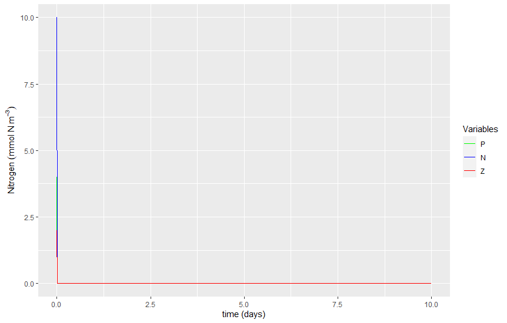
To actually see what is in the first few rows of each state variable, do the following:
N[1:15]
P[1:15]
Z[1:15]
- 10
- 0
- 0
- 0
- 0
- 0
- 0
- 0
- 0
- 0
- 0
- 0
- 0
- 0
- 0
- 4
- 0
- 0
- 0
- 0
- 0
- 0
- 0
- 0
- 0
- 0
- 0
- 0
- 0
- 0
- 2
- 0
- 0
- 0
- 0
- 0
- 0
- 0
- 0
- 0
- 0
- 0
- 0
- 0
- 0
Once again, let's pay special attention to the first number of our main state variables:
What is the value of the FIRST element of the N?
What is the value of the FIRST element of the P?
What is the value of the FIRST element of the Z?
As you can see, your state variables had been "initialized" with the values of Ninitial, Pinitial and Zinitial.
The code in your NPZmodel.r file should look like the checkpoint below:
Parameters¶
Before we code the main model equations, we should add to our code the needed model parameters. Just like the "Initial Conditions" and the "Framework" parameters, we should add the model parameters near the top of our script, in the "knob tweaking" section, so that you can quickly find (and change if needed) the user-configurable settings.
Insert the following code in the "User settings"... between the # Framework and # Initial conditions sections in your sections in your NPZmodel.r file.
# Parameters
mu <- 0.5 # growth rate of phytoplankton (units: d^-1)
K <- 1 # half-saturation for nutrient absoption by phytoplankton (units: mmolN m^-3)
gamma <- 0.4 # growth rate of zooplankton (units: d^-1)
Lambda <- 0.1 # initial slope of ingestion saturation of zooplankton (units: mmol N^-1 m^3)
alpha <- 0.004 # initial slope of P vs I curve (units: {mmolN m^-3}^-1)
mP <- 0.07 # mortality rate of phytoplankton (units: d^-1)
mZ <- 0.03 # mortality rate of zooplankton (units: d^-1)
Main Model Loop¶
Ok! Now comes the moment of truth! We need to write the Main Model Loop... where the model runs and replaces all the zeros in our N P Z vectors for the actual modeled values.
Insert the following code below the # Initializing with initial conditions section (right above the # For cleanliness, let's pack everything into a data frame section) in your NPZmodel.r file.
# ******************************************************************************
# MAIN MODEL LOOP **************************************************************
for (t in 1:(NoSTEPS-1)) {
L_N[t] <- N[t]/(K+N[t]) # Calculate Limitation due to (low) nutrients on phytoplankton. Eq. 12
L_P[t] <- 1-exp(-Lambda*P[t]) # Calculate Limitation due to (low) phytoplankton on zooplankton. Eq. 13
# Estimate model state at time t+1
P[t+1] <- P[t] + (((mu*L_N[t]*P[t]) - (gamma*L_P[t]*Z[t]) - (mP*P[t])) * dt) # Eq. 9
N[t+1] <- N[t] + (((mP*P[t]) + (mZ*Z[t]) - (mu*L_N[t]*P[t])) * dt) # Eq. 10
Z[t+1] <- Z[t] + (((gamma*L_P[t]*Z[t]) - (mZ*Z[t])) * dt) # Eq. 11
}
# end of main model LOOP********************************************************
# ******************************************************************************
It is essential you take some time to compare the code above to the Discretized Equations below. For your convenience, I copy-pasted the Discretized Equations just below, so it is easy for you to do the comparison. See how the code above is an exact copy (in R) of those equations. Note that in R all brackets to separate equation terms are "round brackets"; also see how to express the t subindices in R, we simply point (using square brackets) to the index t in the arrays.
(9) $$ P_{t+1} = P_t + \left\{ \left[ \mu L^N_t P_t - \gamma L^P_t Z_t - m_P P_t \right] \Delta t \right\} $$
(10) $$ N_{t+1} = N_t + \left\{ \left[ m_P P_t + m_Z Z_t - \mu L^N_t P_t \right] \Delta t \right\} $$
(11) $$ Z_{t+1} = Z_t + \left\{ \left[ \gamma L^P_t Z_t -m_ZZ_t \right] \Delta t \right\} $$
(12) $$L^N_t = \frac{N_t}{K+N_t}$$
(13) $$L^P_t = 1-e^{-\Lambda P_t}$$
When you are done comparing equations to code... and inserting the code above to your NPZmodel.r file, click to run your model. You should see a plot like the one below. Note that the lines are not only zeros anymore!
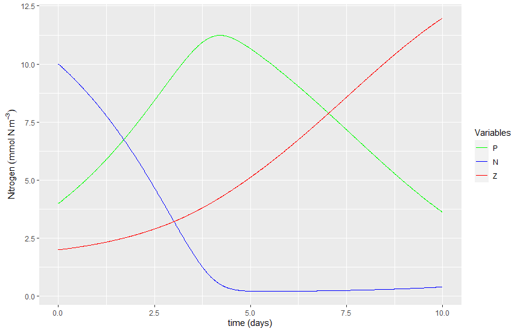
Note that the concentration of Phytoplankton increased steadily for the first 5 days, until Nutrients ran out. That is, also about day 5 the concentration of N was decreased to near zero. After day 5, the concentration of Phytoplankton started to decline because it was consumed (faster than what they could grow) by the ever growing zooplankton, which continued to grow exponentially until the end of the experiment (day 10).
What was the last concentration of Phytoplankton (in mmolN m^-3) observed in this modelling experiment (i.e. at day 10)?
What was the last concentration of Zooplankton (in mmolN m^-3) observed in this modelling experiment (i.e. at day 10)?
What was the last concentration of Nutrients (in mmolN m^-3) observed in this modelling experiment (i.e. at day 10)?
What was the maximum concentration of Phytoplankton (in mmolN m^-3) observed in this modelling experiment?
What was the minimum concentration of Nutrients (in mmolN m^-3) observed in this modelling experiment?
How many times was the code inside the "MAIN MODEL LOOP" executed?
The code in your NPZmodel.r file should look like the checkpoint below:
Adding sunlight¶
To add more realism to our model, we could create "virtual sunlight" and then add a limitation of phytoplankton as a function of sunlight.
To create our "virtual sunlight" we'll use a "quick and dirty" trick using sinusoidals, a FOR loop and an IF statement. The steps are shown below:
Sunlight can be expressed as the sum of two sinusoidals, one representing daily oscillations of sunlight, and the other representing yearly oscillations of sunlight:
(14) $$ I = I_{MaxDaily} sin(\omega_{day} t) + I_{MaxYearly} sin(\omega_{year} t)$$
where $I$ is solar irradiance ($\mu mol m^{-2} s^{-1}$), $t$ is time ($days$) and $\omega_{day}$ and $\omega_{year}$ are angular frequencies ($radians * day^{-1}$), which are related to the period, $T$ ($days$) as follows:
(15) $$ \omega = \frac{2 \pi}{T}$$
We will use these equations inside a FOR loop to estimate sunlight at the precise discrete times of our simulation. However, note that the sinusoidal method above produces "negative" sunlight at night, so we'll use an IF statement to make any negative sunlight into zero.
First, we have to make an empty vector for sunlight (i.e. I), otherwise the FOR loop will dramatically slow down.
so... insert the following at the bottom of the # Chores section in your NPZmodel.r file:
I <- numeric(NoSTEPS) # Make Light (I) "empty" vector (same process as above)
Time to insert our "sunlight sub-model"!
Insert the following code below the # Chores section in your NPZmodel.r file. When you are done, click to run your model.
# Creating sunlight ------------------------------------------------------------
for (i in 1:length(I)) {
I[i] <- 600 * sin((2 * pi * time[i])/1) + 500 * sin((2*pi*time[i])/365) # Eq 14
# We can't have negative light. Make negative values equal to zero
if (I[i] < 0) {
I[i] <- 0
}
}
Let's do a quick plot to see if it worked:
plot(time, I, type = "l")
![No description has been provided for this image](data:image/png;base64,iVBORw0KGgoAAAANSUhEUgAABtYAAAPoCAMAAAB9EDofAAAAMFBMVEUAAABNTU1oaGh8fHyM
jIyampqnp6eysrK9vb3Hx8fQ0NDZ2dnh4eHp6enw8PD////QFLu4AAAACXBIWXMAACZyAAAm
cgEhK5fuAAAgAElEQVR4nO3d61riyhZGYU+Nh/Zw/3e7GnSJKKghSdWXmXc8+8fudllzEKRG
AzFcvAAAUIaL3gIAAEyHrAEACiFrAIBCyBoAoBCyBgAohKwBAAohawCAQsgaAKAQsgYAKISs
AQAKIWsAgELIGgCgELIGACiErAEACiFrAIBCyBoAoBCyBgAohKwBAAohawCAQsgaAKAQsgYA
KISsAQAKIWsAgELIGgCgELIGACiErAEACiFrAIBCyBoAoBCyBgAohKwBAAohawCAQsgaAKAQ
sgYAKISsAQAKIWsAgELIGgCgELIGACiErAEACiFrAIBCyBoAoBCyBgAohKwBAAohawCAQsga
AKAQsgYAKISsAQAKIWsAgELIGgCgELIGACiErAEACiFrAIBCyBoAoBCyBgAohKwBAAohawCA
QsgaAKAQsgYAKISsAQAKIWsAgELIGgCgELIGACiErAEACiFrAIBCyBoAoBCyBgAohKwBAAoh
awCAQsgaAKAQsgYAKISsAQAKIWsAgELIGgCgELIGACiErAEACiFrAIBCyBoAoBCyBgAohKwB
AAohawCAQsgaAKAQsgYAKISsAQAKIWsAgELIGgCgELIGACiErAEACiFrAIBCyBoAoBCyBgAo
hKwBAAohawCAQsgaAKAQsgYAKISsAQAKIWsAgELIGgCgELIGACiErAEACiFrAIBCyBoAoBCy
BgAohKwBAAohawCAQsgaAKAQsgYAKISsAQAKIWsAgELIGgCgELIGACiErAEACiFrAIBCyBoA
oBCyBgAohKwBAAohawCAQsgaAKAQsgYAKISsAQAKIWsAgELIGgCgELIGACiErAEACiFrAIBC
yBoAoBCyBgAohKwBAAohawCAQsgaAKAQsgYAKISsAQAKIWsAgELIGgCgELIGACiErAEACiFr
AIBCyBoAoBCyBgAohKwBAAohawCAQsgaAKAQsgYAKISsAQAKIWsAgELIGgCgELIGACiErAEA
CiFrAIBCyBoAoBCyBgAohKwBAAohawCAQsgaAKAQsgYAKISsAQAKIWsAgELIGgCgELIGACiE
rAEACiFrAIBCyBoAoBCyBgAohKwBAAohawCAQsgaAKAQsgYAKISsAQAKIWsAgELIGgCgELIG
ACiErAEACiFrAIBCyBoAoBCyBgAohKwBAAohawCAQsgaAKAQsgYAKISsAQAKIWsAgELIGgCg
ELIGACiErAEACiFrAIBCyBoAoBCyBgAohKwBAAohawCAQsgaAKAQsgYAKISsAQAKIWsAgELI
GgCgELIGACiErAEACiFrAIBCyBoAoBCyBgAohKwBAAohawCAQtTJ2gUAIJdmMWg1aG5632EA
gG9pVYNGc2an3b8EAACDkbWhyBoABCNrQ5E1AAhG1k7S+2VbAMBwZO0ksgYAy0PWhiJrABCM
rA1F1gAgGFkbiqwBQDCyNhRZA4BgZG0osgYAwcjaUGQNAIKRtaHIGgAEI2tDkTUACEbWhiJr
ABCMrA1F1gAgGFkbiqwBQDCyNhRZA4BgZG0osgYAwcjaUGQNAIKRtaHIGgC85H5Kl6wNJfWe
BICGyJqsAUAdtjth6G4oa0MJvSMBoCGyJmsAUIfdRhi6G8raUELvSABox+tGmLkdytpQMu9H
AOsh4GQNWXuRNQCYhoBzEN8EunscRdaGknk/AlgL26j13odkbTeo0ZzZybwfAayFgHMQ38dH
7oeyNpTIuxHAapC1H5C1oUTejQDWQsLJGrL2OqjRnNmJvBsBrIWorEVuiLI2lMR7EUATAs5B
lLUfkbWhJN6LAJoQkLWIcxBl7XVQozmzk3gvAmhBwMka7/N7enyc3ft4HEHWhhJ4JwJoQkDW
Ik7WkLW3QY3mzE7gnQigCQHX9414+U/W3gY1mjM7gXcigBY4WePI6MAdUdaGEngnAiug/8ka
snZsdP+75QuyNpTAOxGoT8A5iGFZ6ygia2+DGs2ZncA7EShP0OV9+3rI2s/I2lAC70SgPAHn
IEZkLSMoB5N73y1fkbWh5N2HQH2cg/h1dDeNw8F5W6KsDSXvPgTqI2tfR8vaCWRtKHn3ITAz
/X/os07WkLXTf0pA1oaSdx8C8xJzDqKTNWTtN8jaUPLuQ2BWLgLOrZe1I5Nl7QT1s/Z0v7m5
2j0wL65vNnePY9fLuw+BOXk9tT7jQoiylnAO4qexeVti8aw9374Vbc/lZlzZ8u5DYE4CTtaI
u76vrPW3+IbaWfvzuWmv/BmzZt59CMxJwNkaTtY4PlnWjlM6a9fHq3ZxcT1i0bz7EJgTWfs6
et3vasna+6BGcz5ws0vY1e3D4/PrXzw//r19Td3N+avm3YcoTP8ft4S3teJe/pO1AI3TFM7a
0+6dtC9vpD3u3m07//21uLsQhck5B1HWZO3U1O4/o58pnLXbbdWO/P3z5b8vbM5eNu4uRF0u
As6tl7Vjk3tpyNpvKJy17cuND8e+8DDq3bW4uxBl2SXNOYiydmqurB2ncNZO/zt31L+A4+5C
lCXgZA1ZOz45410tWTuOrA1f9uxvBQYRkDXnIB6fnJG1Phpfh6ZtirI2fNmzvxVLov8d7V2t
I5NXfbKGrP2Owlnz3hpG0P9cDVk7OnnN72rJ2u8onLWNMyFxNs5B/DJb1vpbyNqvKJy1x931
RPzeGs4g4RxEWTs6ec1ZyzhZQ9b2gxrN+cDrVUauD64ycucqI/gFASdryNrxybLW2yPD4jsq
Z+30NSEvn89fNO0exBxEZS3kJMR1Z83Lf9/NDNsVS2ft1BX8b0ZULe0OLEn/Q/x2L6/+3PqI
cxBl7fRQWTtG7ay9PG4uvzxT83lr6XQ/VyPi5b+4rK365T9Z+3Zk90fsIcWz9o/Hu83N26uR
1zebe5+OHY9zED8Pl7X+FrL23cjeD9hP1M/a1ITdgfXYNq33QZa1Y5NlrbeGrP0OWRtK2B1Y
jtdnaiEnazgHMS9rKw5KxrtasvZhUKM5sxN2B5bDOYhfR4dkLeSJkqz11ZC1D4MazZmdsDuw
HAnnIKZlrZ9GQta8/PfdTFk7Qv2sPd1vbq7eTxm5c8rIdwTcuISseVfr+GBZ66wha7+jeNae
b6+c4P97+p+CGPGulqydGCxrfTUygpJh8S21s3bi17H/jFkz7A6cFKfWfx6+8qxlFsXzJBbf
UzprJy+edf7H0sTdgVOyvWm9uyZrRydnnKwha301MoKSYfEtlbP2eqnjq4NLHd+61PFJok6t
DzlZQ9a+/XMPhxSL1Qbl6MSsbbFw1p5276T5YJpfk3CyRlrW1v2ulqx9NzMjKBkWYdti4azd
XizqY0T7/1jI2pHRstZbQ9a+nZhhIWut2L7c+HDsCw+j3l2b6Yj1P1kjImtx72qtOmve1cqy
iMja8YHdd68DCmftdCh+l5BT55vMckucg/h5uKx998cuDrLW2ULWfomsffv9DbPW/SdD1o5O
XvHLf7L27cQMi+YasvZxUKM5HyaOzNrJZc/+1h9WDclaVw9ZOzFW1rpqyNoP82StEUt6b223
qKw5WePkWFnrqiFrP8yTtUZsFnQm5OuifX80ZO3o4BVn7evMDIuQoGRYyNoRCmftcXc9kUX8
3trbmiFZC3n9LyRrnTwys+ZkjTgLWTtC4ay9XWXk+uAqI3eRVxlJyNqH4bL2zR/7SMhaX4uI
rEUE5cQ4WWvGyWtCXj6fv+gMR+z/JVeftYiX/2Ttm5my1lFD1n5L6ayduoL/zYiqzZm1rj8b
CU+UIrKWEJQMi9igZFjIWj+LH6idtZfHzeWXZ2p5n7cma0fnylpnC1n7fqKsdbP4geJZ+8fj
3ebm7dXI65vNfeKnYydk7WC0rHXX+DLVy39pFrLWz+IH6mdtaubMWsjJGiFZCwlKhoWsxVnI
WkeN75G1ochaI4mUoHSx+DpU1npqRFjI2m+RtaFMf8Q+rChr3/yxj4Ss9bWICEqGRULWTk6T
tUUza9ZCgpJhIWudNWTt+3kZz5Nk7SvrydrT7fbXs6/+HL1M5ABkrZVFSNa6aMjatxNlrZeG
rB0OajTnE/c3r5eFfL7Zn+F/N2rFNWQtJCgZFqvNmpM1fpgna70sfqJ21u4u3z6C5ung19fO
v3z/i6y1kwixkLWuGhEWsvbjMFlrxeb/T/18+vRL2WO6JmutJEIsvPzXVSPCQtZ+HpbUtcpZ
u33/MOvdr2PfbN9Ve37YXcD//M+lkbVmEk7W6GsREZQMC1n7eZisNeH59Y2059fPDd2XbPcc
7vyrQspaKwlZ62sREZQMixPz2mrI2q8pnLXtk7XLp+3/+3P4UTTbs0duz1528iN2sKCs9daQ
tW8nylovjYx3tWTtcFCjOXu2rzy+nvS4fWft7/4Lf0e9uzZv1nr9cMja6ZkZWROUfhbZz5My
LGSt0cT31xrf3mE7+MqIZcdp/bBgRlAyLGStq0ZwUSIkVhmUDIufKJ61z//v+J8HLjvK6qcF
M4KSYbHarEU8T0ouSoSErHWz+IlVZO1a1gY5pFiEPE+StY4aCe9qyVqaxU8Uztr2zJDXT1fb
njzytP/CU9R7a97VirKQtR8Gyloni4ygfDMrqGuFs3b7fsLj8/vJIzvuRv3imqw1kwjJWkhQ
MixkrZeFrP2ewlnbPim7fD0B8l/hLvd/f/n+NO4cZK2ZhKx11YiwiM5aSFAyLGStDX/2v4V9
vX/ZcVe1m9Pf9ROy1kxC1rpqRFgkZC09KA0tvhsla23YXSfrcvPwuLu0yNXD88vL4+4aI5dP
P3/zKWStmYSs9dSIfuUtQkLWemn8ROmsPV1dHOfvz997komPWERQUoviZI2OGtFFiZBIyVpD
DVn7NKjRnEM2x6J2NeK5mqy1lAgJSoaFrKVJyFonix8pnrWX583l56iN+xRRWWvnsNagZFhk
FyUjKBkWsvaZ6ln7x+Pd5ub11cjLmz/3o56pbamYtYTnSbIWZiFrP8/KsJC1z6wgaxMja+0k
ZK2jhqz9PCvDQtY+I2tDkbV2ErLWUUPWfjGroUaEhax9GtRozuzMnbWQkzUyihIhsc6X/yIs
PE/61aS1WfyIrA1F1hpKhDxPWmPWwp8nZVisLSjfDpK1BSNr7RxWaiFrP8/KsJC1HhY/I2tD
kbV2DikWK3z5T9Z+NUvWOlj8jKwNpWDWvPz30zxZ62MREZQMC1kbgKwNZdojdmQ1WYuzkLVO
FhFBybCQtQHI2lBmz5qTNeIsZK2TRURQMizysxbUNVkbiqw1lAixkLVOFhFBybCQtQHI2lBk
raHEKoMSYRGxlWdYRAQlw0LWPg9qNGd2ZK2hxBqDkmEREZQMi4igRFj8MEfWlku9rHn578dp
67OICEqGRUJQMixk7cugRnNmR9ZaWqwwKBkWEUHJsEgIyg+TGmnI2pdBjebMjqy1tFhhUDIs
IoKSYSFrvxwja8tlLVlrrRFhkRCUb6atLSgZFrL2yzGytlxkrbCFrP1i1NosZO2XY2Rtucha
YQtZ+8WotVnI2i/HyNpykbWWEmu0OD1MUNIsGm6gARay9mVQozmzI2stJdZoIWu/mZRhIWvt
LX6BrA1l0iN2fDEv/6VZNNWQtd9MyrBopvH9HFk7RNaGImstJUIsZK2Lhaz9co6sHSJrQ5G1
lhIhFrLWxSIiKBkWsjYEWRuKrLWUCLGQtS4WEUHJsJC1IcjaUGStpUSIhax1sYgISoaFrA1B
1oYiay0lGmtEWMjarybJWnMLWfsyqNGc2SmXNc+TfjFLUNIsZK29hax9GdRozuxMecSinydl
WMhaF4uIrZzFb+dkZC2na7I2FFlraiFrXSwitvIMi4igZFjI2pdBjebMjqw1tZC1LhYRQcmw
iAhKhoWsfRnUaM7srCZrTtboYyFrWRZLCEobix+nyNpikbW6FrL2q0kZWcsoSoREIw1Z+zqo
0ZzZkbW6FulZCwlKhkVGUSIkZO0TsjYUWatrIWu/GpRhkVGUCAlZ+4SsDWXCI+ZkjV/MWpvF
AoKSYZFRlAgJWfuErA2lQdY8T+pj4V2tJVlkFCVCQtY+IWtDkbWmEiFZC9nKMyxC9vI1Wcja
IGRtKLLWVELW8ixWFZQMi2VkLaZrsjaU9WQtoygREilBybAQlHVayNrXQY3mTMfFKSacMPQL
cxBelAiJlKBkWMhaa4uMl/9k7eugRnOmQ9YiihIhsbagZFgsoigREiEWsrZYZK2tREMLWcuy
WERRIiTaaGRY/AZZG0qLrK0uKBkWspZlsYiiREjI2iGyNhRZaysREpQMC1lrrrEICVk7RNaG
ImttJUKCkmEREpQMi4yiREjI2iGyNhRZayuxsqBkWETs5RkWEWdrZAQlw+I3yNpQVpS1jKJE
SMhae42IoGRYZAQlw+I3yNpQZG2NErLWXkNQFmeR0jVZG4qsrVFC1tpryNriLGRtqchaY4l1
BSXjbA1Z+/0MFo01foGsDWW6IxYRlAwLWfvtHFlra7GUoDSw+M0IWVsoxbImKIuykLXGFhFB
yXieJGtHBjWaMzuy1liCRXsNWfv9jAwLWfuIrA1F1hpLrMsiIigZFrI2ZIasfUDWhiJrjSVC
LARllRayNmiCrC0UWWssEWIha40tBCXMQtaODGo0Z3ZkrbFEiIWsNbaQtTALWTsyqNGc2ZG1
xhIhFrLW2ELWwixk7cigRnNmR9YaS6ScrSFrbS1kLcxC1o4MajRndiY7YgsISoaFrLW2kLUh
M9YSlAyLXyFrQ5G11hay1tpiIVnzPGmFFr9C1oYia60t1hSUDAtZy7KICMqvBsjaQpG11hZr
CkqGhaxlWcjaQGRtKGvKmpf/1mkha1kWsjYQWRuKrBW1iAhKhEXEVs5i2ARZ+4CsDUXWilok
BCXDImIrZzFsgqx9QNaGImtFLRKCkmERsZWzGDZB1j4ga0OZ6og5WSPMIiEoGRYRW3mGRURQ
Mixk7digRnNmp03WVhWUDIuEoGScrRERlAyLiKBkWPxuQEbXZG0ostZagkVjjYigZFhEBCXD
QtaODWo0Z3ZkrbUEi8YaEUHJsIgISoaFrB0b1GjO7MhaawkWjTUigpJhERGUDAtZOzao0ZzZ
kbXWEmuy+HnIWoKSYRERlIizNX65vKwtE1lrLRFi0URD1rIsZG3g8rK2TGSttUSIhayt0ELW
Bi4va8tE1lpLhFjI2gotZG3g8rK2TGSttUSIhaw1tRCULAtZOzqo0ZzZkbXWEilna8haSwtZ
y7KQtaODGs2ZnVJZ8zwpzELWhkzIsJC1dha/RNaGImvNLWStrYWsDZsga80sfomsDUXWmlus
JygZFovJ2jqC8sv1ZW2PrA1F1ppbrCcoGRaylmUha0ORtaGsKmte/lujhaxlWcjaUOpn7el+
c3N1seP6ZnP3OHY9WatpIShZFhFBybCQtaEUz9rz7VvR9lxuxpVN1mpayNqQCRkWstbOQtaO
Dmo054A/n5v2yp8xa8paTQtZGzRhHUHJsJC1oZTO2vXxql1cXI9YdKIjFrGVsxgyQ9ZaarAY
uL6s7amctZtdwq5uHx6fX//i+fHv7Wvqbs5fVdZqWsjaoAnrCEqGhawNpXDWnnbvpH15I+1x
927b+e+vyVpNC1kbNGEdQcmwkLWhFM7a7bZqR/7++fLfFzZnLytrzSXWYxFxtkbEVp5hERGU
DAtZOzqo0Zw925cbH4594WHUu2uy1lxiPRaylmUREZQMi98uH9G1wlnbvtY49Cu/Wvbsbx20
jKw1tYh4+U/Whg6I2MtlrZ3G75C14cue/a2DlsnIWsZeHiERYhESlAyLjL08QiLEQtbmnihr
4y0y9vIIiZStnEU7jQVJhFjI2sx4b20Ci4yiREikbOUs2mksSGJmjV8vLmvzsnEm5HiLjKJE
SKRs5RkW3lAKk5C1DxTO2uPueiKL/b01Z2uESaQEJcNC1sIkZO0DhbP2dpWR64OrjNwt5ioj
IXv5WixkbeCAjL08wiJCQtY+UDlrp68Jefl8/qKyVtJC1gYOyNjL12Aha4MpnbVTV/C/GVE1
WatpsZyseflvZRayNpjaWXt53Fx+eaaW8XlrsjZkwkosIoKSYSEoWRaydnxQozlfeLzb3Ly9
Gnl9s7lP+XRsWRsyISMoGRay1swiIigZFr9fPKFr9bM2NSvLWsZeHiERYiFrzTQiJDIsZO34
oEZzZkfW1ioRYiFrzTQWJRFiIWuLRNbWKrGSoGRYLKooERIhFrK2SGRtrRIrCUqGxaKKEiEx
r0aGRZxDt9v6dL+5uXo/ZeQu5JSRiL08w2IxEoLSUCPCYlESstbBoc9tfb69yjzBP2Ivz7BY
jISsNdSIsFiUhKx1cOhyW0/8OvafMWsWytqCzpNYRVAyLCL28gyLRUnIWgeHHrf15MWzzv9Y
GlmraRERlAyLZe3l9S0ygpJhEefQ4ba+Xur46uBSx7chlzqWtWHrs2imIWtZFhlBybCIc2h/
W59276SFfjCNrA1bn0UzDVkbvjaLNhZxDu1v6+1F8MeIytqw9Vk005C14WuzaGMR59D+tm5f
bnw49oWHUe+uyVoHCRbtNGRt+NosGmmkKbS/qdvXGod+5fN/dZRp5Kb5b2aXCNnKWTTTkLXh
a7NopJGmIGufFp/mv5ldImQrz7BYQ1AyLGRtsRayNu/EkVk7uezZ3zpwFVlLs1hDUDIsZG2x
FrI2K8nvrUUEJcNC1gavvgILWTtn7fk0hqwsa3OyCT4TUlAWaSEoq7KQtbNWlrU5edxdTyTz
99Zkbej6M2tEWMhaloWsnbWyrM3K61VGrg+uMnKXcZURWRu6vqw1shCUxVrIWnOFHjf15DUh
L5/PX1TWeljIWisLWTtn7Rk1Iixk7cSgRnMOOHEF/5sRVZO1Lhay1spC1s5ZW9ZaWOQp9Lmp
j5vLL8/UEj5vbUFZE5R1WcjaOWvLWguLPIVuN/XxbnPz9mrk9c3mPuPTsWUtyyIiKBkWsnbO
2rLWwiJPof9NnQhZK2gREZQMi4VlrXxQMixk7cSgRnNmR9YKWkQEJcNC1rIsMoKSYZGn0P+m
TsQURyxiK2cxfPX6QcmwiAhKhkVGUDIs8hT639SJkLWCFrKWZRERlAyLjKBkWOQp9L+pL9tb
O/72ylpBC1k7Y+3qQcmwyAhKhkWeQv+b+iJrLEauLmttNFictfJsFoMWlrXGyBqLUavLWhsN
FmetLGutFfrf1BdZC7SICEqGhayxGLeyrLVWaH9TT3669biPuJa1HhJrsPj94tW3chbnrSxr
rRVkbfgasrYqC1ljMW5lWWutIGvD15C1VVnIWpZFRFAyLGTt1KBGc/b8/XKVY1nLs4gISoaF
rGVZRAQlw0LWTg1qNOcjb58j+rSXcMpImkVEUJZ2tkb1oGRYRAQlw2LYwv27VjprL/e7J2yX
9+8SspZmIWtnLM2ihUVEUDIsZO3UoEZzDnl+fcL2/+eGylqchaydsTSLFhYRQcmwkLVTgxrN
+cz9rmuXD68SspZmIWtnLM2ihUVEUDIsZO3UoEZzvvD0+hmif3YSsjZ89QyLkLM1qm/lLM5b
OcNiNg1ZOzWo0Zwj3L0+Yfsra2etnmEhaywaW8jamcvKWhPen7DJ2hmrZ1jIGovGFrJ25rKy
1ojbXdeuZO2M1TMsZG1FFssLSoaFrLU26HxLH69G/x72G6vLWv2gZFhEBCXDQlCyLGTt5KBG
c05yK2tnrl4+KAPWrh6UDAtZy7KQtZODGs05zdvFtMYuI2v1LGQty0LWsixk7eSgRnO+44+s
nbO6rDWxiAhKhoWsZVnI2slBjebMzgRHzMkaYRaylmWRsJWzOHtZWVseDbO2gqBkWMhalkXC
Vs7i7GVlbXnIWj0LWcuySNjKQyyGrStrjQ2639KpkLV6FrKWZRERlAwLWTsHWRuKrNWzkLWz
Vq4dlAwLWTsHWRuKrNWzkLWzVq4dlAwLWTsHWRuKrHWRqG8hayzGritrjQ2639KpkLUuEvUt
ZI3F2HVlrbFB91s6FevLWsZeLmstNCK2chbnritrjQ0+z7n4lkZS5yBrK5YIsSi+lbM4d11Z
a2wga2csIWthEiEWxbdyFueuK2uNDWTtjCVkLUwixKL4Vp5hERGUDAtZOznoy2BZazIs22Jh
EtW38iVaZOzlsja7RaJB91s6FbK2YomUrZzF/BoREhkWQ5ft3jVZG4qsrVgiZStnMb9GhESG
haydHNRozuxUydrS3lCKkEjZylnMr7FAiRALWVseslbOQtbOXNhTlCyJEAtZWx6yVs5C1s5c
WNayJObSyLBIFOh9QydD1vpIVLeQtTCLBUrMpDF4UVlbHLLWR6K6haydu2yERYSErLUW6H1D
J2OFWcvYRWWtgUaEhaydvaystRXofUMnQ9bWLBFiIWsrsZC1s5C1ocjamiVCLGRtJRaydhay
NhRZW7NEiIWsrcRC1s5C1oYy/ohF7OUZFouTKB6UDItF7uWyNrNFpEDvGzoZsrZmieJBybBY
5F4uazNbRAr0vqGTIWtrligelAyLRe7lsja3RuJ8WTtrhYy9PMIiQqJ4UDIsFrmXR0iEWMja
4pC1ahYRW3mGRcRenmGxSIkQC1lbHLJWzSIiKBkWEXt5hsUiJebRyLCInC9rZ60gKCwaWkTs
5RkWi5SQtcbzZe2sFWSNRUOLiL08w2KRErLWeL6snbWCrLFoqLHMvTzCIkJC1hrPl7WzVpA1
Fg01lrmX17XICEqGReR8WTtrBVlj0VBD1rIsMoKSYRE5X9bOWkHWWDTUkLUsi4ygZFhEzpe1
sxaQtTSLkLM1ZG1ei4ytnMV5yNpQZK2TRIhF5aBkWMgai5HI2lBkrZNEiEXloGRYyBqLkcja
SS5OMXrduf7j2dZlMbtGRFAyLGRt8Ra9uyZrJ5G1MAvvaq3DQtYWbyFrS0PWelnI2twWEUHJ
sFhqUDIsZG1pyFovC1mb2yIiKBkWgpJmETle1s5aICMoGRayNrdFRFAyLGQtzSJyvKydte9J
vmMAACAASURBVICgrMRC1rIsZG3UirK2MGSNRX8JQWHRSkPWvhnUaM7syFoxi4igZFjI2pg1
q778J2vfDGo0Z3ZkrZhFRFAyLGRtzJqyNqdF5nhZO+/7KwclwyIiKBkWsjZmTVmb0yJzvKyd
9/2Vg5JhERGUDAtZG7OmrM1pkTle1s77/spBybAQlCyLiK2cxbgVZW1hyFoxC1nLsojYylmM
W1HWFoasFbOQtSyLiK2cxbgVZW1hyFoxC1nLsojYyjMsMoKSYZE5XtbO+/7KQcmwkLURa1YN
SoZFRlAyLDLHy9p53y8oq7CQNRbTrFjVInO8rJ33/bK2CgtZYzHNilUtMsfL2nnfL2ursJA1
FtOsWNUic7ysnff9srYKi+GLVt3KWYxbcXKLsxaUtYUha70kKlvIGotpVpS1luNl7bzvl7VV
WMgai2lWlLWW42XtvO+XtTSLkLe1qm7lLMatKGstx8vaed8va2kWsrYCi4igZFjI2neDGs2Z
HVnrJRFiUXYrZzFuxaIWsvbdoEZzZqdE1pYZlAyLsls5i3ErFrWQte8GNZozO7LWzSLkbI2q
WzmLcSsWtThvwb5dk7WhyFo3C1lj0cgiIigZFrL23aBGc2ZH1rpZyBqLRhYRQcmwkLXvBjWa
Mzuy1s1C1lg0sogISoaFrH03qNGc2Vll1uoGJcMiYitnMW7FDIvJNWTtu0GN5syOrLHo78Bi
XgtZG7merC0LWWPR36GuxXKDkmExtcaZy8naspC1WhbD16walAwLQcmykLVvBzWaMzsjj1jE
Vs5izJpVg5JhIWtZFrL27aBGc2ZH1mpZyFqWhaxlWcjat4MazZkdWatlIWtZFrKWZSFr3w5q
NGd2ZK2WhaxlWSRs5SxGLydry0LWalnIWpZFwlbOYvRysrYsZK2fRcZeHiFR1iJhK2cxejlZ
Wxay1s8iYy+PkChrkbCVsxi9nKwtC1nrZ5Gxl0dICEp9i/PWkzVZG46sdZMIKUqEhKzVt5C1
c5G1oawza2X3codi3Io1g5JhIWvnUj9rT/ebm6uLHdc3m7vHsevJWj+JDIsICVmrbyFr51I8
a8+3b0Xbc7kZVzZZ6yeRYREhUXUrZzF2PVmrnrU/n5v2yp8xa8paP4mMpygZh6LoVs5i7Hqy
Vjxr18erdnFxPWLR1lkLOVsjYy+XtRk1IrZyFmPXk7XaWbvZJezq9uHx+fUvnh//3r6m7ub8
VWWtn0RG1qpaRGzlLMauJ2uls/a0eyftyxtpj7t3285/f03W+klUDUqGRcRWzmLserJWOmu3
26od+fvny39f2Jy9rKz1kxAUFk00IiQyLGTt20GN5uzZvtz4cOwLD6PeXauQtYigZFjIWgWL
jL1c1mazSJ3e/lZuX2sc+pVfLXv2t5737VWDstyiREiwmFEjQiLDQta+HdRozoeJsjbhkhkW
GbtohASLGTUiJDIszl2ua9dkbfiyZ3/red+eEZQMi4xdNEIixMJePptEhoWsfTuo0Zw93lub
csmMd7Uy9vIIiRALe3mYRIiFrM3ExpmQUy6ZsYtGWERIhFjIWphEiIWszcTj7noifm9toiUz
dtEIiwiJEAtZC5OYWiPDInV4hxv5epWR64OrjNy5ysiZS2bsohEWERJFg5JhsWAJWWs5vMeN
PHlNyMvn8xeVtY4SGZtoxqHIOBYhe3mERYTExBpnLyZrs3HiCv43I6o28ohFBCXDIqIoERIZ
u2iGxZKzVvF5kqx9P6jRnEMeN5dfnql1/by1iKBkWEQUJWIrZzF6uYoWsnY2xbP2j8e7zc3b
q5HXN5v7zp+OHRGUDAtZYzHZchUtZO1s6mdtamSto0TNrZzF6OUqWsja2cjaUApkLSIoGRYR
WzmL8ctF7OWyNpNF7HBZO/u7awYlwyJiK2cxfrmIvVzWZrKIHS5rZ393zaBkWERs5SzGLxex
l8vaXBqps7vdxqf7zc3V+ykjd04ZCQlKhkXEVs5i/HIRe7mszaWROrvPbXy+vXKC/zQLltxE
WYxfzl6eJRFiIWuzceLXsf+MWVPWOkqwmM8iYi/PsFi0RIiFrM3FyYtnnf+xNLLWVYLFfBYR
e3mGxaIlptXIsIid3eE2vl7q+OrgUse3nS91LGvj1mMxm0bEXp5hsWgJWSudtafdO2lhH0wj
a+PWYzGbRsRenmGxaAlZK52124vAjxGVtXHrsZhNY9l7eYRFhISslc7a9uXGh2NfeBj17tqo
IxYRlAyLJQclw0LWSltkBCXDInZ2+9u4fa1x6Fc+/1dHGeXU6pviLQQlzELWsiwygpJhETtb
1l7XbPVN8RayFmYha1kWGUHJsIidvbysnVz27G8VlCIWFYOSYSEoLCagcNa8tzbpeixm04gI
SoaFrLGYgMJZ2wSeCSlrY9fz8l9pC1ljMQGFs/a4u55I1u+tydrY9WSttIWslbHo2bXCWXu7
ysj1wVVG7vpeZUTWxq4na6UtZK2MhazNxMlrQl4+n7+orPW0kLW5LCKCkmGx9KBkWMjaXJy4
gv/NiKqtNmslg5JhIWtZFksPSoaFrM3G4+byyzO1np+3JmssplutXlAyLAQlzSJ2dLeb+Hi3
uXl7NfL6ZnPf99OxZY3FdKvVC0qGhaylWcSO7ncTJ6Z91kpu5RkWEUHJsBCUMhYTaoxZSdYW
RIc7umJQMiwigpJhIWtlLGRN1oYia4UsIoKSYSFrU6xV7eU/WfthUKM5syNrhSwigpJhIWtT
rCVrc1jkju5zE59vry8uLv98ujRkt0sdR2zlLMavVtBC1qZYS9bmsMgd3eUm3r+f1f/3wEXW
WIxarV5QMiwitnIW06wka/Ow+fDrah+vbSxrLMatVi8oGRYRWzmLaVaStVm4v/jIh4+ikTUW
41arF5QMi4itnMU0K8naLOwuMHL7/PLycHPYNVljMW61ekHJsIjYyllMs5KszcH200L//xzR
u4OuyVp/i4igZFgICotpV6pmkTu6/U388/EdtYeP76/JWn+LiKBkWMgai2lXqmaRO7r9Tbw6
+LTQj12Ttf4WEUHJsJA1FtOuVM0id3T7m/gpXh9ek5S1/hYRQcmwkDUW065UzSJ3dPesvb6/
9nTsKwOXHaPUfGSqRURQMizOX6zaVs5impWqWeSO7p+13a+xXR79yrBlxyg1H5lqERGUDAtZ
YzHtSpNZjFpI1uZg+yFrf7/8zfZ0SFnrbxERlAwLWWMx7UqyVjdr2zMh/xz+1dVr12Stv0VE
UJb+tla1rZzFNCvJWt2sffy9tTced7++9iRr/S1kbYK1qm3lLKZZSdbqZu31KiObp49/tb+e
1tmrLj5ryw5KhkW5TZRFmoWsLWF0h5v49zVgVx//biNryw5KhkW5TZTFNCsVs5C1nwY1mvOR
zZdr9++7dvaistbVIuRsjWpbOYtpVipmIWs/DWo054D7yy9vr73++pqsLdVC1ljMbBERlAwL
WftpUKM5n7i/uXj+9FdPN7K2XAtZYzGzRURQMizGLdSva9WzdpTHzZWsLdRC1ljMbLH8oGRY
yNqCWG3W6gUlwyJiK2cxzUoZQcmwkLUFIWss6m3lLKZZKSMoGRaytiBkjUW9rZzFNCsVC0qG
RfBkWRvxveW2chaTLMViDgtZC7MInixrGZsoi0nWqraVZ1hEBCXDIiIoI5eRteUga3UsZC3L
IiIoGW9rydoiJstayFbOYoq1qgUlw0LWJlpH1loNajRndmStjoWsZVnI2kTryFqrQY3mzI6s
1bGQtSwLWZtoHVlrNajRnNmRtb4WGXt5hEQ5i4igZFjI2iImy9rig5JhkbGXR0iUs4gISoaF
rC1isqwtPigZFhl7eYREOYuIoGRYyNoiJsva4oOSYZGxl0dIhFgUC0qGhawtYrKsCco0S0VY
REh4nlTWIiMoGRbJk2VN1qZZKsIiQkLWylpkBCXDInmyrMnaNEtFWERIyFpZi4ygZFgkT5Y1
WZtmqQiLCIliWzmLyZYpZZE8WdZCdtEMC1mbZKlSWzmLyZYpZZE8WdZCdtEMi4isRUjIGovJ
lyllkTxZ1kKCkmERUZQICVkrZTGRRkZQMiySJ8taSFAyLCKKEhGUDIsCQcmwkLXJLZIny1pI
UDIsZC3LokBQMixkbXKL5MmyJihpFoLCYvKFZG1qi+TJsiZrEy0VsX9FSLCYQSNiL4+QCLFI
nixrsjbRUhG7aIQEixk0IvbyCIkQi+TJsiZrEy0VsYtGSLCYQSNiL4+QCLFInixrsjbRUhG7
aIREiMVkGhEWEXt5hMToZbp1TdaGsuKsheyiERYREiEWsja5RYSErP08qNGc2ZG1zhIZFhES
IRayNrlFhISs/Tyo0ZzZkbXOEhkWERIhFrI2uUWEhKz9PKjRnNmRtc4SGRYREsWCkmERUZSM
oGRYJA+WtYxdNMMiImsREhlbOYvJlqkUlAyL5MGylhGUDIuIokRIZGzlGRYRQcmwiAjK6EVk
bTHIWmeJjK0841BkHItSQalRlAgJWVsOstZZotZWzmKyZTIsMooSISFry0HWOkvU2spZTLZM
hkVGUSIkZG05LDxrEUHJsIjYyllMtkyGRUZRIiRkbTnIWhWLiK2cxXTLFNrLHYplDJY1WQuz
iNjKWUy3TKG93KFYxmBZk7Uwi4itnMV0yxTayx2KZQxeXtYuTnH+gmNkzv/e6RaqZRGxlZew
mEjDXj7ZIhES/bomayeRtdksKmzlpSwidtEMC1mbcBFZWwqy1lmCxfQWEbtohkVE1iIkZO0X
gxrNmR1Z6yzBYnqLiKBkWEQUJUJC1n4xqNGc2ZG1zhIspteICEqGRURRMoKSYRE9V9YigpJh
USEoGRaVgpJhIWthFtFzZS0iKBkWFYKSYSEoJS0ygpJhET1X1iKCkmFRISgZFrJW0iIjKBkW
0XNlLSIoGRaCEmYha1kWGUHJsIieK2sRQcmwkLUwC1nLssgISoZF9FxZE5RSFpWCkmEREZQM
i4ygZFhEz5U1WZtqHc+TSloICouJlpC1ochabwtZq2khaywmWkLWhiJrvS1kraaFrLGYaAlZ
G4qs9baQtZoWslbOotcNkbWhrDlrpYKSYSEoWRZVgpJhIWtLQdZYTGgha1kWVYKSYSFrS0HW
WExoIWtZFlWCkmEha0uhT9ZKbeUsplulTlAyLAQlbAlZa8K5RyxiE2Ux3SqFLCKCkmEha2FL
yFoTZK2IRURQMiwEpZxFmSVkrQmyVsQiIigZFrI25RpVlsg4nLLWBFkrYhERlAwLWZtyjSpL
ZBxOWWuCrBWxiAhKhoWsTblGlSUyDqesNUHWilgISpZFlX24zBIZh1PWmiBrRSxkLcsiYiu3
xKQSsrYUZK2IhaxlWURs5ZaYVKLXT5asDUXWiljIWpZFxFZuiUklZG0pyFoRC1mbcJGIfdgS
ky4ha78Y1GjO7Mhab4lKFhFZi9hELZG2RMSPlqy1QdZ6S1SykDVLzCJRxULW2iBrvSUqWcia
JWaRqGIha22Qtd4SlSwiNh9LhC0REZQMC1lrg6z1lqhkEbH5WCJsiYigZFjIWhtkrbdEJYuI
zccSYUtEBCXDQtbaIGu9JSpZRGw+lghbYsFBybCQtaHIWm+JEIuMzSdjH7bEpEtE/GTJ2m8G
NZozO7LWWyLEImPzydiHLTHpEhE/WbL2m0GN5szOorNWIygZFhk7oCUKLiFrIxeQtaHIWneL
RT/iLJG8RERQMiyW/CCTtaHIWneLRT/iLJG8RERQMiwiHmRnfr+sDUXWultkPOIy9mFLTLpE
RFAyLCIeZLLWCFnrbpHxiMvYhy0x6RIRQcmwiHisy1ojVp21OkHJsLBE2BIRQcmwiNhxZK0R
ssZiMgtLhC1RJygZFrK2EGSNxWQWlghbQtamtZC1hdApa5V+1llYInSJOlnL2HBkbSH0OtBl
tnIWlohdQtayLGStEbJWwyJiC7TElBJVLCKCkmEha42QtRoWEVugJaaUCLFYdVAyLGRtKLJW
wyJiC7TElBIhFrLW3ULWhiJrNSwitkBLTCkRYiFr3S1kbSiyVsMiYgu0xJQSIRay1t1C1oYi
a/0tymzElphSosrPt6yN/XZZG4qs9bcosxFbYkqJKj/fsjb222VtKLLW36LMRmyJKSWq/HzL
2thvl7WhyFp/izIbcZklqvxkRVjI2thvl7WhrDtrIbtoxBIREhm3o8zPd4SFrI39dlkbiqxZ
Ikgi43aU+flOsFh0UDIsZG0osmaJIImM21Hm5zvBYtFBybCQtaF0O9AR74BkbMQZS0RIFNnK
WUzssG4LWRuKrFkiSKLIVs5iYod1W8jaUGStxBIREhn3acJWXspi5CqLDkqGhawNRdZKLBEh
kXGfFgpKhoWs9baQtaHIWoklyhzNkK08w2L0KgkWiw5KhoWsDUXWSixR5miGBCXDQtYmW2bR
FvWz9nS/ubm62HF9s7l7HLvekrMWsUTEVs5iWokaQcmwWHRQMiyKZ+359q1oey4348oma91X
mGKROkHJsCgRlIy9PEJi2Ra1s/bnc9Ne+TNmTVnrvsIUi9TJWo2gZFhE7OUREhkW53536axd
H6/axcX1iEVlrfsKUywiayzmkpC1qZaRta/c7BJ2dfvw+Pz6F8+Pf29fU3dz/qqy1n2FKRaJ
sIjYyllMLSFrU60ja1942r2T9uWNtMfdu23nv7+24KxFbOUsJpZgMdkqEVu5rI3/5sJZu91W
7cjfP1/++8Lm7GVlrfcCdSwStnIWUzuEWMhaA9pnbfty48OxLzyMendN1novUMciYStnMbVD
iMVFhMW4hWTt68ST9+vpr3z+r45yps1Z3/YbnwGMdZhGg8WUEiwmtJjCgcWEGufOnEj+x0GN
5nyYePKg/O5wTXqkpznxbizjHVhMajGFBIvpLCZxSLHoEpSJLc6eOZX9T4Mazfkw8eRRGXWn
NTtiAIDhFM5a1ntrAIAWFM7a5iLpTEgAQAsKZ+1x+1rjdcrvrQEAWlA4a29XGbk+uMrIXa+r
jAAAWlA5a6evCXn5fP6isgYAwZTO2qkr+N+MqJqsAUAytbP28ri5/PJMrc/nrQEAWlA8a/94
vNvcvL0aeX2zue/16dgAgBbUz9rUyBoABCNrQ5E1AAhG1oYiawAQjKwNRdYAIBhZG4qsAUAw
sjYUWQOAYGRtKLIGAMHI2lBkDQCCkbWhyBoABCNrQ5E1AAhG1oZy6lMBAAARtKpBozmz0/v+
AgB8S6saNJoTipcu33Eo9jgW7zgUexyLPdnHIlpufrLvnKY4FHsci3ccij2OxZ7sYxEtNz/Z
d05THIo9jsU7DsUex2JP9rGIlpuf7DunKQ7FHsfiHYdij2OxJ/tYRMvNT/ad0xSHYo9j8Y5D
scex2JN9LKLl5if7zmmKQ7HHsXjHodjjWOzJPhbRcvOTfec0xaHY41i841DscSz2ZB+LaLn5
yb5zmuJQ7HEs3nEo9jgWe7KPRbTc/GTfOU1xKPY4Fu84FHsciz3ZxyJabn6y75ymOBR7HIt3
HIo9jsWe7GMRLTc/2XdOUxyKPY7FOw7FHsdiT/axiJabn+w7pykOxR7H4h2HYo9jsSf7WETL
zU/2ndMUh2KPY/GOQ7HHsdiTfSyi5eYn+85pikOxx7F4x6HY41jsyT4W0XLzk33nNMWh2ONY
vONQ7HEs9mQfi2i5+cm+c5riUOxxLN5xKPY4Fnuyj0W03Pxk3zlNcSj2OBbvOBR7HIs92cci
Wm5+su+cpjgUexyLdxyKPY7FnuxjES03P9l3TlMcij2OxTsOxR7HYk/2sYiWm5/sO6cpDsUe
x+Idh2KPY7En+1hEy81P9p3TFIdij2PxjkOxx7HYk30souXmJ/vOaYpDscexeMeh2ONY7Mk+
FtFy85N95zTFodjjWLzjUOxxLPZkH4toufnJvnOa4lDscSzecSj2OBZ7so9FtBwAAMOQNQBA
IWQNAFAIWQMAFELWAACFkDUAQCFkDQBQCFkDABRC1gAAhZA1AEAhZA0AUAhZAwAUQtYAAIWQ
NQBAIWQNAFAIWQMAFELWAACFkDUAQCFkDQBQCFkDABRC1gAAhZA1AEAhZA0AUAhZAwAUQtYA
AIWQNQBAIWQNAFAIWQMAFELWAACFkDUAQCFkDQBQCFkDABRC1gAAhZA1AEAhVpy1x831xcXF
9e1Tb5H+PPzZHoqrPw+9RWL4++949HboztPtze4R8txbJIC/r7vF5rG3SFeuvjwqMnfR9T52
t4/YV256q3Tm7+X7obi87y0TwqWsvfx5/7G47a3Sm6dru8U/7r48KkJ30dU+dvc/p//+rdFb
piubi49seutEsHu09pboy9OVn4r/ebr8cCwus56YNOThy6MidRdd62P3z8VH/vTW6cj9xSGe
r/1/THpb9OXq4KfirrdOVw6PRdL+3ZLHy8+PithddKWP3cfdP7u2byU97O6rFb97sLv9f/6+
bF8mv1j5sXjj+VLWtj8Ll7eP/w7G3fZoXPb26cnuXzl/tu+qPe428nW+Bf1w8flRkbuLrvSx
u/nwj67tPbLeNw/uPz5Odz+56z0W/3Pz5QG8Op63B+Dv6//fvQS35ifx1x9eht12LeptpFbc
Xnx5VOTuoit97G7vhP/Padr+m+Oqq01Pbi4+vnNyu+LXWN65//oAXh2bjz8Wd2vdyt/4+Ezk
eZ0/GY/b12E/vwiZu4uu8B56eb0P9rv39h5b7dvAFwc3fqUP2gOeLmRtu2PtX3d8XvmrkAc/
DKv8ydi9fnH1dHjbg3fR9d1DW+4OnjHfrvk1lueHzcd/ZK3yQXvI7vdwVn4cHi9Wf/bjB64+
PVvLeVbSirczQg4fFcG76Dofu5uD930fPIbfWfm/y19eH6yXTyvP2t1qT4w4xt2H0/w2Ue8h
teJfyh9fPmcteBdd52P35sOLwq//NF3zWwcfeMg6T7cDu6Ddr/1Z6+b1AfJ8++9p66WLz1wd
nAm5wn/3Xb3+CBw+KoJ30XU+dq8PzkZd5+sKR7lZ/b/Sr18fnSvP2s3u5v9/8tvFdcybJn14
Ovi14/UejMNHRfAuus7H7qdNa+V72J67df5b9APbnfzyefU/EtunJx8vIbHeK2u88fD/wbiK
ef+oA4ePiuBdNEakKcF3SE92v7b2t7dFT3a/YLp9urryH4ntzT+4qNplzq/a9uBxfz2NPys+
ErIWTfAd0pFd1WLe9e3C1f/vLa78R+KtZXfbJ2l/d2d3x7xt0oO7j4Vf8av0shZN8B3Sj13V
1v272LfvL8Ku/Efi4uBnYfe8bcUvQ77+e293yshm1S9oyFo0wXdIN+5U7e9+z1r5j8TuXaT9
H7fP19Z3Vvv/7C4R+vH6cqt9+1nWogm+Q3qxUbXdxYDefr1h5T8Sn15re1j1q5Aff23tNfFr
PW1E1qL5emrqyjf017Pe1v2+2u4qtv8/RUl6jHbg8uLweuyrPhw3B687/l1x4g9/DIJ30XX+
sAb/ImEXdhcyXXvVXi6O0NupEzefbvqKD0X0s5LGHN704F10nXfQ5su/v1a9pd+v/ASvN2Tt
nT+ytkfW/ufwpgfvouu8g7b7+P7zfm8v1v3pv7u31Vb/C7ey9oH7g3+IZ11Bojmy9j+HNz14
F13nHXT4kQrXh4/hteFkkTdk7Z2nw396r/tSoYf7w98VJ/7wERG8i670cfv5A/BWe8quE/uP
s+Kk7Tj89KyrVb9GfXjR/s1F0Ittjfn0qMjdRVf62N3+bF69nsXzfLXin9O3K9ar2mfWnrW7
j69Lb6K2rOa8X1Fty+5Xs2OelTTm06Midxdd6WN395N6uf1Rfbhc88/p2+feel/tM2vP2u4J
2seLZ8W8bdKB16uHbc+OeL3KSMwJf6359KjI3UXX+ti9OXgHZb3vGzx6P+koqz8OT4c/E6t+
Pr+7zMie9Z5d9flREbuLrvWxe/CTuuLH7MFl2mXtHcfhr0fIO08fj8V6q/blURG7i672sfu8
/5fGal9TeHl9rUnWvuI4vDztHyE5b5p04sOxuFlv1b4+KlJ30RU/dh8323NSrzc5rwh34EjV
VvwjscdxeHl/hNyu+BPG3rFbvBx9VGQeF49dAEAhZA0AUAhZAwAUQtYAAIWQNQBAIWQNAFAI
WQMAFELWAACFkDUAQCFkDQBQCFkDABRC1gAAhZA1AEAhZA0AUAhZAwAUQtYAAIWQNQBAIWQN
AFAIWQMAFELWAACFkDUAQCFkDQBQCFkDABRC1gAAhZA1AEAhZA0AUAhZAwAUQtYAAIWQNQBA
IWQNAFAIWQMAFELWAACFkDUAQCFkDQBQCFkDABRC1gAAhZA1AEAhZA0AUAhZAwAUQtYAAIWQ
NQBAIWQNAFAIWQMAFELWAACFkDUAQCFkDQBQCFkDABRC1gAAhZA1AEAhZA0AUAhZAwAUQtYA
AIWQNQBAIWQNAFAIWQMAFELWAACFkDUAQCFkDQBQCFkDABRC1gAAhZA1AEAhZA0AUAhZAwAU
QtYAAIWQNQBAIWQNAFAIWQMAFELWAACFkDUAQCFkDejB3///z8U/eooA1fCAAtrzePP+yJM1
YFo8oIDm/PmQMlkDpsUDCmjOhawBs+EBBTRHyoD58OACmiNrwHx4cAHNkTVgPjy4gOZ8m7X7
m39fvbnf/f/n2+uLi8s/Dwf/wfPt9r+43jzO6ggsFVkD2nLxzvsf9194+Xv59sXrf39ze/Hh
D/9z9/79f5q7AwtA1oC2fJu1h/1Xr182+z/cvH/7zcWH/+S5xw0AspE1oC3fZu3y4vrvy8vz
n13K/v3v3x+ediH7/6ok29RdPvzL2cPVp2dxAHbIGtCc47+3tkvd5vX/33z+w9v//fuhZdv2
3TUyBpaDrAHNOZ21y7e/3ebr4urDH95a9u8p2uX7K4+X+/8ewP/IGtCc01m7ffvb5+0f7r/8
N08f/pPXk0cOT5IEIGtAe05n7fHjXz99+W/uPv4nL4/7FycB/I+sAc05nbXnY//JppPr8gAA
AjpJREFU/g83Fwe/8OakEeArsgY053TWjv4n+z9cXXyhkTKwGDwogOacnbWvVfMIBj7hQQE0
R9aA+fCgAJozKmuNHIGl4jECNGdU1lwwC/gWWQOac3bWtmdC/n0B8A2yBjTn7Kxtrwi5/3Xs
l8fre8/dgE/IGtCcs7O2vYzWh+tl3fhwGuALsgY05+ysbS8Dub+88f2Fi2cBX5A1oDnnZ21b
sv9Ttv1stqsXAIfIGtCc691zrteLOw7L2usn1myeXl7+HnwMG4D/kTWgOW8fe71r0sCs7ZL4
jpcggS/IGtCc58tdlHZX3x+atZfb96hdeq4GfEXWgA5sthct3p3FODhrL8+329cfr/54qgYc
Q9YAAIWQNQBAIWQNAFAIWQMAFELWAACFkDUAQCFkDQBQCFkDABRC1gAAhZA1AEAhZA0AUAhZ
AwAUQtYAAIWQNQBAIWQNAFAIWQMAFELWAACFkDUAQCFkDQBQCFkDABRC1gAAhZA1AEAhZA0A
UAhZAwAUQtYAAIWQNQBAIWQNAFAIWQMAFELWAACFkDUAQCFkDQBQCFkDABRC1gAAhZA1AEAh
ZA0AUAhZAwAUQtYAAIWQNQBAIWQNAFAIWQMAFELWAACFkDUAQCFkDQBQCFkDABRC1gAAhZA1
AEAhZA0AUAhZAwAUQtYAAIWQNQBAIWQNAFAIWQMAFELWAACFkDUAQCFkDQBQCFkDABRC1gAA
hZA1AEAhZA0AUAhZAwAUQtYAAIWQNQBAIWQNAFCI/wC987uzHCQJcgAAAABJRU5ErkJggg==)
Woo-hoo!!! We got sunlight!
What is the value of I during night time?
Now that we created "artificial sunlight", we can use light to limit the growth of phytoplankton. Again, we won't go into the modelling details here. As a programmer, you only need the new equations to be able to modify the model.
First we need a new "limitation" to impose the effect of low light on phytoplankton growth, lets use the following:
(16) $$L^I = 1-e^{-\alpha P}$$
where $L^I$ (dimensionless) is the limitation due to (low) light on phytoplankton and $\alpha$ is the initial slope of the $PI$ curve (i.e. a parameter calculated in the lab with phytoplankton cultures).
...then we can modify equations (9) and (10) to include the new $L^I$ limitation:
(9) $$ P_{t+1} = P_t + \left\{ \left[ \mu L^N_t L^I_t P_t - \gamma L^P_t Z_t - m_P P_t \right] \Delta t \right\} $$
(10) $$ N_{t+1} = N_t + \left\{ \left[ m_P P_t + m_Z Z_t - \mu L^N_t L^I_t P_t \right] \Delta t \right\} $$
Add the $L^I_t$ vector to our code by copy-pasting the following at the bottom of #Chores section:
L_I <- numeric(NoSTEPS) # Make "Limitation of I on Phytoplankton" empty vector (same process as above)
Then, inside the # MAIN MODEL LOOP section...
(1) Add the following underneath the statement were we created L_P[t] (i.e. Eq. 13):
L_I[t] <- 1-exp(-alpha*I[t]) # Calculate Limitation due to (low) light on phytoplankton Eq. 16
(2) replace the "old" phytoplankton equation (i.e. Eq. 9) for the new equation that includes the light limitation:
P[t+1] <- P[t] + (((mu*L_N[t]*L_I[t]*P[t]) - (gamma*L_P[t]*Z[t]) - (mP*P[t])) * dt) # Eq. 9
...and
(3) replace the "old" nutrients equation (i.e. Eq. 10) for the new equation that includes the light limitation:
N[t+1] <- N[t] + (((mP*P[t]) + (mZ*Z[t]) - (mu*L_N[t]*L_I[t]*P[t])) * dt) # Eq. 10
When you are done inserting the code above to your NPZmodel.r file, click to run your model. You should see a plot like the one below. Note that Phytoplankton only grows during the day, thus causing a "steps" pattern in the P and N time-series.
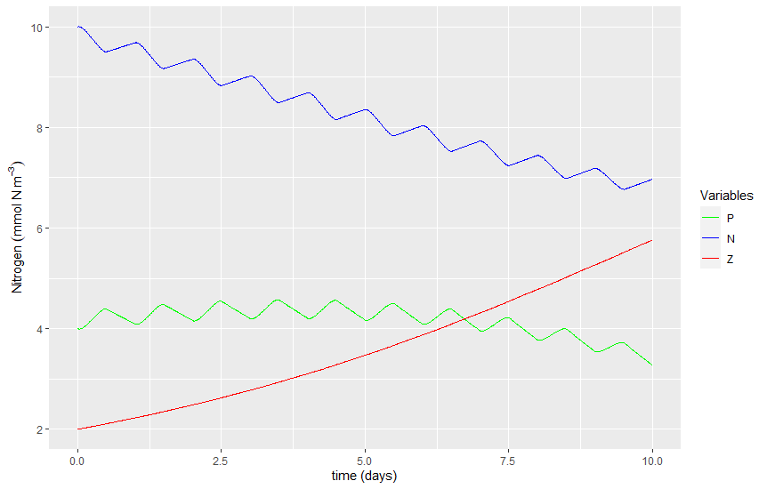
Two-year simulation¶
In the graph above, the daily sunlight cycle is very apparent. However, the yearly cycle is not. Let's do a two-year simulation...
In the # Framework section, locate the line where we create the days variable, which sets the duration of the simulation. Then change it to 2 years by doing the following:
days <- 365 * 2 # number of days of experiment run (units: days)
When you are done adjusting the variable days in your NPZmodel.r file, click to run your model. You should see a plot like the one below. Note the complexity of the ecosystem dynamics reproduced by this numerical model!
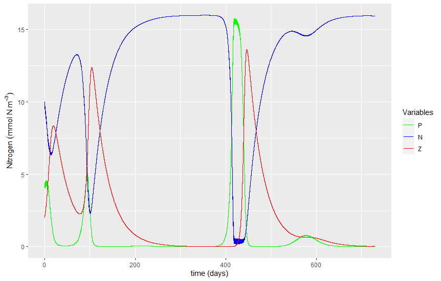
In year 2 (i.e days 366 to 731)... Can you see the large "spike" in phytoplankton (~ day 420) followed by another smaller spike in phytoplankton at ~ day 580?
The spikes in P are consistent with the "spring bloom" and the "fall bloom"... which are known plankton dynamics in temperate regions. Our model somewhat mimics real-life dynamics!
You should probably also take a quick look at the two-year "virtual sunlight" make making a quick plot by typing the following in the :
plot(time, I, type = "l", lty = 1)
You should have get a plot like the one below.
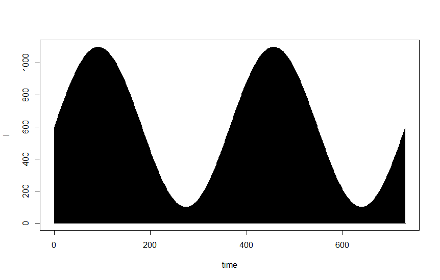
The is a simple line plot. However, because the line goes down to zero every night, and the days are so close together, the area looks filled with black. This emphasizes the yearly sunlight cycle, but it makes it impossible to see the diurnal cycles.
Note that from the point of view of light, the first summer roughly peaked at around day 120 and the second summer peaked at around day 480. The two winters peaked at around days 280 and 650, respectively.
Take a look at the two-year time-series of P, N and Z (i.e. two plots above).
Why do you think nutrients (N) are so high during the winters (e.g. day 300)?
Plotting limiting functions¶
Limiting functions are small "mini-equations" that are used to impose the effect of an environmental variable (e.g. light, temperature, food availability) on the growth of a species, like phytoplankton.
In this model we quietly made and used 3 limiting functions, however we have neglected to talk about it... until now.
The 3 limiting functions are:
L_NLimitation due to (low) nutrients on phytoplankton (units: dimensionless) Eq. 12L_PLimitation due to (low) phytoplankton on zooplankton (units: dimensionless) Eq. 13L_ILimitation due to (low) light on phytoplankton (units: dimensionless) Eq. 16
When the value of a limitation is equal to 1, the growth of the species it limits is unconstrained (i.e. species grows as fast as it can). As the value of the limitation decreases, the constraints increases and growth slows down. Finally, when the value of the limitation reaches zero 0, growth of the species completely stops.
Let's plot the time-series of our The 3 limiting functions.
First, we need to add the 3 limiting functions to our output data frame. Replace the # For cleanliness... section in your NPZmodel.r file, for the code below, which includes the additional 3 limiting functions:
# For cleanliness, let's pack everything into a data frame
output <- data.frame(time=time,
N=N,
P=P,
Z=Z,
L_I=L_I,
L_N=L_N,
L_P=L_P)
Second, add the following code to the very bottom of your NPZmodel.r file (i.e. at the bottom of the # Plotting section):
# Plot 2: Limitations
ggplot(data = output, aes(x=time)) +
geom_line(aes(y = L_I, color="L_I")) +
geom_line(aes(y = L_N, color="L_N")) +
geom_line(aes(y = L_P, color="L_P")) +
ylim(0, 1) +
labs(x = "time (days)",
y = "Limitation (dimensionless)") +
scale_color_manual("Limitations",
breaks = c("L_I", "L_N", "L_P"),
labels = c("L_I: Lim of I on Phy", "L_N: Lim of N on Phy", "L_P: Lim of P on Zoo"),
values = c("cyan", "red", "blue"))
When you are done inserting the code above in your NPZmodel.r file, click to run your model. You should see a plot like the one below:
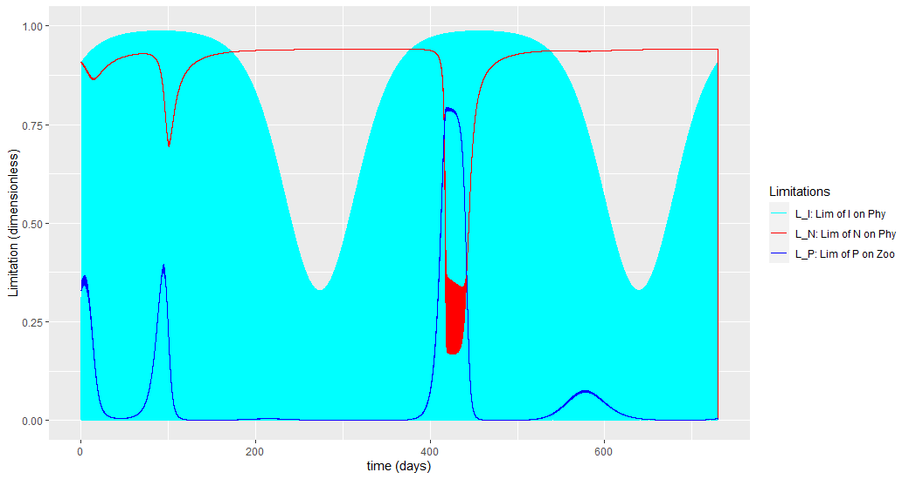
The blue line is the limitation on zooplankton growth because of low food (i.e. phytoplankton). The other two lines are limitations on phytoplankton growth, the cyan is due to low light, and the red is due to low nutrients.
What happens when there ate 2 or more limitation constraining the growth of one species? This is the case of, phytoplankton and, in this case, at any given time the limitation with the lowest value drives the bulk of the observed dynamics.
In the plot above, around day 300, what environmental variable that was the most limiting to the growth of phytoplankton?
In the plot above, around day 420, what environmental variable that was the most limiting to the growth of phytoplankton?
Functions explained¶
By now you are probably very comfortable using R functions like max(), print(), head(), plot(), etc. However, to fully unlock the power of R, you need to know how to make your own functions!
You want to do your own function to:
Avoid repeating yourself (i.e. efficient coding): when you see that you are using a section of your code over and over again, you may be better of getting that section of code into a function. Then, afterwards, you will only need to write one line of code (i.e. call your function), rather than writing the whole section again.
Protect your code: If you want to make sure that you do not modify your code by mistake (like your NPZ model from above), you can put your code in a function (or set of functions) and then you can simply call those functions, ensuring that your original code is left intact. We'll explain more on this in the next section.
Regardless of motive, the syntax to write a function is shown below:
# do a thing
return(output)
}
Let's do an example...
Imagine that you have to do some code where you have to convert multiple temperatures from Fahrenheit to Celsius. Rather than doing the math every time you need to do a conversion, you can make a simple conversion function and use it every time you need to do a conversion.
We can name the conversion function fahr_to_celsius. For now, you can simply copy-paste the following into the and click [enter] to load your new function into memory, so that we can use it later.
fahr_to_celsius <- function(temp) {
celsius <- (temp - 32) * (5 / 9)
return(celsius)
}
Now that your new fahr_to_celsius() function is loaded in memory, we can take it for a spin:
fahr_to_celsius(32)
Named arguments and defaults¶
In the fahr_to_celsius() function above, the argument temp is a ordered argument. If you add a second argument (e.g. decimals to specify the number of decimals in the output), R will understand that the first argument will be always be temp and the second will always be decimals.
If you want to add a named argument instead, you need to use the = operator and include a default.
Below is the same function as above but with named arguments. Note that we included the additional decimals argument. Also note that we chose a default temp of 29.6°F (which is the freezing temperature of seawater @ 24 ppt) and a default decimals of 3:
fahr_to_celsius <- function(temp=29.6, decimals=3) {
celsius <- (temp - 32) * (5 / 9)
celsius_round <- round(celsius, digits = decimals)
return(celsius_round)
}
Now that your updated fahr_to_celsius() function is loaded in memory, we can take it for a spin WITHOUT any arguments (i.e. function will use its defaults):
fahr_to_celsius()
Try changing the number of decimals in the output:
fahr_to_celsius(decimals=6)
Changing both, temp and decimals:
fahr_to_celsius(temp=200, decimals=1)
Note that we can still use the arguments as ordered arguments by not specifying their argument names:
fahr_to_celsius(200, 1)
In the case above, R uses the order in which the arguments were written in the function to interpret the function call. When possible, you should avoid using ordered arguments! When someone else (or your future you) try to read your code, having named arguments makes it so much easier to understand what every argument is doing.
Try to only include named arguments in the functions you make. Also try to use name arguments every time you use any function that allows them.
Loading functions from a different file¶
You can write a function in one file, and then use it in a different file, with help of the source() function.
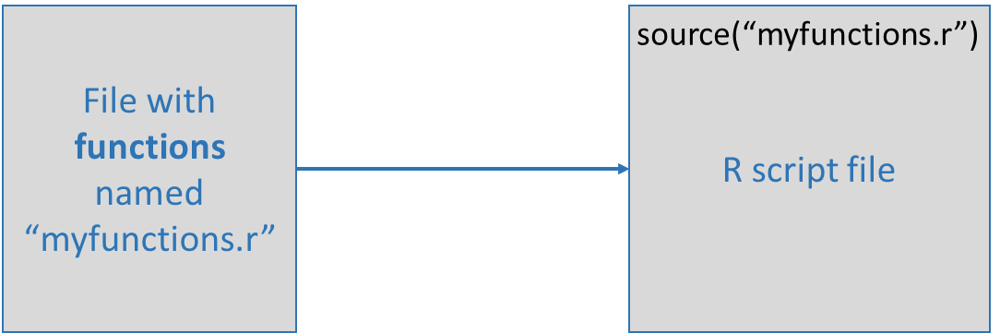
In fact, this is a great way to write and use functions. Keeping your functions in a file separate from the code where you use them make it easier to share functions among many projects.
In the section below we'll do an example that uses source() function.
Testing and documenting¶
It’s important to both test functions and document them: Documentation helps you, and others, understand what the purpose of your function is, and how to use it, and its important to make sure that your function actually does what you think.
When you first start out, your workflow will probably look a lot like this:
- Write a function
- Comment parts of the function to document its behaviour
- Load in the source file
- Experiment with it in the console to make sure it behaves as you expect
- Make any necessary bug fixes
- Rinse and repeat.
Formal documentation for functions, written in separate .Rd files, gets turned into the documentation you see in help files. The roxygen2 package allows R coders to write documentation alongside the function code and then process it into the appropriate .Rd files. You will want to switch to this more formal method of writing documentation when you start writing more complicated R projects.
Formal automated tests can be written using the testthat package. Additionally, Travis CI is an online service that integrates testing with github. Automated tests are designed to run every time someone make a change to the code, to ensure that no part of the code got broken by mistake. While automated testing is beyond the scope of this course, you are encourage to always test your code to ensure that it is doing what it is supposed to do.
Real-life example: NPZ model (part 2)¶
In this section we will "pack" the NPZ model that we did earlier into a set of functions.
The idea here is to separate "the model" from "the experiment". Until now every time you want to do an experiment you need to go back to your model code and "tweak" the Framework, Parameters and Initial conditions sections. There are many problems arising from running models this way:
Easy to make errors. Imagine you want to run a few experiments changing only one parameter in each run. Now imagine that in one run you forget to turn the previously changed parameter to its original default value. From then on, your model results will be wrong. However, by the time you figure this out, it may be hard (or impossible) to remember how many model runs ago you forgot to return the parameters to the default.
Hard to keep track on model inputs. Imagine you need to do 100 model runs and you need to keep track on what inputs (parameters, initial conditions, etc.) you used in each run. For this you would need to copy paste your inputs in a different file, run the model and save the results elsewhere and then keep tabs on what file corresponds to what results. Any matching error would be hard to detect and hard to fix.
Ideally, you want to open an experiment file, write something like:
output = run_model(days=20, mu=0.6)...and that is it! You ran you model, get your results (in output) and know exactly what parameters went into the model (in this case, all defaults except days=20 and mu=0.6). Running your model is a lot easier, and your original model code is safe in a file that you did not touch. This last part is essential! You worked really hard developing, debugging and testing your model; once you are done model development, you really want to "seal" your model code in a file and never tinker with it again!, just to make sure you don't accidentally add or remove something that will break the model.
Making a "functions" file¶
In RStudio, create a new R script, name it my_model.r and make sure you save it in Desktop\Lab5. In this file we will make functions that will contain your model.
We will first add an empty "template" of the functions that we will use:
run_model <- function() {
# model goes here
return(output)
}
plot_run <- function(output) {
# Plotting code goes here
return()
}
As you can see, we will have two functions in our file:
- The first function will run the model and return model output in a variable that conveniently called
output. - The second function will take the model's
outputand use it to print graphs.
Splitting our code in these two functions allows you to run models without making plots, and also to make plots without having to run the model every time (this assumes you ran the model at least once earlier and save the output).
Inserting your NPZ model inside a function¶
It is now time to copy-paste the model from your NPZmodel.r file, into your functions file, my_model.r.
Let's start with the Framework, Parameters and other items in the "User settings" section. We need to add all of these as named arguments of our function:
When you finish, your code in my_model.r should look like this:
run_model <- function(days=365, dt=0.01, mu=0.5, K=1, gamma=0.4, Lambda=0.1,
alpha=0.004, mP=0.07, mZ=0.03, Pinitial=4,
Ninitial=10, Zinitial=2) {
# model goes here
return(output)
}
plot_run <- function(output) {
# Plotting code goes here
return()
}
The next step is to copy-paste the rest of the model from your NPZmodel.r file, into your functions file, my_model.r. This includes from the # Chores section to the end of the # For cleanliness section. At the end, your my_model.r should look like this:
run_model <- function(days=365, dt=0.01, mu=0.5, K=1, gamma=0.4, Lambda=0.1,
alpha=0.004, mP=0.07, mZ=0.03, Pinitial=4,
Ninitial=10, Zinitial=2) {
library(ggplot2)
# Chores (calculate number of steps, create time vector, create zero vectors, ...)
NoSTEPS <- as.integer(days / dt) # Calculates the number of steps by dividing days by dt and rounding down
time <- seq(from = 0, to = days, length = NoSTEPS) # Create time vector of equally spaced numbers from zero to "days"
P <- numeric(NoSTEPS) # Make Phytoplankton "empty" vector by making a vector array of zeros (size: NoSTEPS rows by ONE column) (units: mmolN m^-3)
N <- numeric(NoSTEPS) # Make Nutrients "empty" vector (same process as above) (units: mmolN m^-3)
Z <- numeric(NoSTEPS) # Make Zooplankton "empty" vector (same process as above) (units: mmolN m^-3)
L_N <- numeric(NoSTEPS) # Make "Limitation of N on Phytoplankton" empty vector (same process as above) (units: dimensionless)
L_P <- numeric(NoSTEPS) # Make "Limitation of P on Zooplankton" empty vector (same process as above) (units: dimensionless)
I <- numeric(NoSTEPS) # Make Light (I) "empty" vector (same process as above) (units: umol m^-2 s^-1)
L_I <- numeric(NoSTEPS) # Make "Limitation of I on Phytoplankton" empty vector (same process as above) (units: dimensionless)
# Creating sunlight ------------------------------------------------------------
for (i in 1:length(I)) {
I[i] <- 600 * sin((2 * pi * time[i])/1) + 500 * sin((2*pi*time[i])/365) # Eq 14
# We can't have negative light. Make negative values equal to zero
if (I[i] < 0) {
I[i] <- 0
}
}
# Initializing with initial conditions -----------------------------------------
P[1] <- Pinitial # Initializing phytoplankton vector
N[1] <- Ninitial # Initializing nutrients vector
Z[1] <- Zinitial # Initializing zooplankton vector
# ******************************************************************************
# MAIN MODEL LOOP **************************************************************
for (t in 1:(NoSTEPS-1)) {
L_N[t] <- N[t]/(K+N[t]) # Calculate Limitation due to (low) nutrients on phytoplankton. Eq. 12
L_P[t] <- 1-exp(-Lambda*P[t]) # Calculate Limitation due to (low) phytoplankton on zooplankton. Eq. 13
L_I[t] <- 1-exp(-alpha*I[t]) # Calculate Limitation due to (low) light on phytoplankton Eq. 16
# Estimate model state at time t+1
P[t+1] <- P[t] + (((mu*L_N[t]*L_I[t]*P[t]) - (gamma*L_P[t]*Z[t]) - (mP*P[t])) * dt) # Eq. 9
N[t+1] <- N[t] + (((mP*P[t]) + (mZ*Z[t]) - (mu*L_N[t]*L_I[t]*P[t])) * dt) # Eq. 10
Z[t+1] <- Z[t] + (((gamma*L_P[t]*Z[t]) - (mZ*Z[t])) * dt) # Eq. 11
}
# end of main model LOOP********************************************************
# ******************************************************************************
# For cleanliness, let's pack everything into a data frame
output <- data.frame(time=time,
N=N,
P=P,
Z=Z,
L_I=L_I,
L_N=L_N,
L_P=L_P)
# Print to screen
print("Model run is done!")
return(output)
}
plot_run <- function(output) {
# Plotting code goes here
return()
}
Let's test it!
In your my_model.r, click . This loaded your functions into memory. Now you can run your model by typing in the the following
myoutput <- run_model()
The code above ran your model and save the output into the myoutput variable. Let's take a look at myoutput:
str(myoutput)
'data.frame': 36500 obs. of 7 variables: $ t : num 0 0.01 0.02 0.03 0.04 ... $ N : num 10 10 10 10 10 ... $ P : num 4 3.99 3.99 3.99 3.99 ... $ Z : num 2 2 2 2.01 2.01 ... $ L_I: num 0 0.14 0.26 0.363 0.45 ... $ L_N: num 0.909 0.909 0.909 0.909 0.909 ... $ L_P: num 0.33 0.329 0.329 0.329 0.329 ...
Inserting your plotting code inside a function¶
The last part we need to do is to copy-paste the # Plotting section from your NPZmodel.r file, into your plot_run function in your my_model.r functions file. This time around, we'll have to do the following modifications to be able to output our graphs out of the function:
- save the graph from the first plot into a variable named
plot1 - save the graph from the second plot into a variable named
plot2 - include
list(plot1, plot2)in thereturnofplot_run
Below is the plot_run function after all the above modifications. Note that, for clarity, I am not showing the first part of the code, the run_model function (see the checkpoint below to see the whole code).
plot_run <- function(output) {
# Plotting ---------------------------------------------------------------------
# Plot 1: Main variables
plot1 <- ggplot(data = output, aes(x=time)) +
geom_line(aes(y = P, color="P")) +
geom_line(aes(y = N, color="N")) +
geom_line(aes(y = Z, color="Z")) +
labs(x = "time (days)",
y = expression(Nitrogen~(mmol~N~m^-3))) +
scale_color_manual("Variables",
breaks = c("P", "N", "Z"),
labels = c("P", "N", "Z"),
values = c("green", "blue", "red"))
# Plot 2: Limitations
plot2 <- ggplot(data = output, aes(x=time)) +
geom_line(aes(y = L_I, color="L_I")) +
geom_line(aes(y = L_N, color="L_N")) +
geom_line(aes(y = L_P, color="L_P")) +
ylim(0, 1) +
labs(x = "time (days)",
y = "Limitation (dimensionless)") +
scale_color_manual("Limitations",
breaks = c("L_I", "L_N", "L_P"),
labels = c("L_I: Lim of I on Phy", "L_N: Lim of N on Phy", "L_P: Lim of P on Zoo"),
values = c("cyan", "red", "blue"))
return(list(plot1, plot2))
}
Let's test it!
In your my_model.r, click . This loaded your functions into memory. Now you can run your model by typing in the the following
plot_run(myoutput)
[[1]] [[2]]
![No description has been provided for this image](data:image/png;base64,iVBORw0KGgoAAAANSUhEUgAABtYAAAPoCAMAAAB9EDofAAAAbFBMVEUAAAAAAP8A/wAzMzNN
TU1oaGh8fHyDg4OMjIyVlZWampqjo6Onp6evr6+ysrK5ubm9vb3BwcHHx8fJycnQ0NDR0dHY
2NjZ2dne3t7h4eHk5OTp6enq6urr6+vv7+/w8PDy8vL19fX/AAD///8iHqNxAAAACXBIWXMA
ACZyAAAmcgEhK5fuAAAgAElEQVR4nOydD1vbyO62TX+GspSyXZY9lKVZ3pLv/x3fOH+dxLLH
I41Gsp77us5ZSEKkPDP23XEcp1kDAAAAi6Gp3QAAAAAgB7QGAABgQUBrAAAAFgS0BgAAYEFA
awAAABYEtAYAAGBBQGsAAAAWBLQGAABgQUBrAAAAFgS0BgAAYEFAawAAABYEtAYAAGBBQGsA
AAAWBLQGAABgQUBrAAAAFgS0BgAAYEFAawAAABYEtAYAAGBBGNLaigP37/Vw0ycSlQWBSoNE
6YKxgda0cdMnEpUFgUqDROmCsYHWtHHTJxKVBYFKg0TpgrGB1rRx0ycSlQWBSoNE6YKxgda0
cdMnEpUFgUqDROmCsYHWtHHTJxKVBYFKg0TpgrGB1rRx0ycSlQWBSoNE6YKxgda0cdMnEpUF
gUqDROmCsYHWtHHTJxKVBYFKg0TpgrGB1rRx0ycSlQWBSoNE6YKxgda0cdMnEpUFgUqDROmC
sYHWtHHTJxKVBYFKg0TpgrGB1rRx0ycSlQWBSoNE6YKxgda0cdMnEpUFgUqDROmCsYHWtHHT
JxKVBYFKg0TpgrGB1rRx0ycSlQWBSoNE6YKxgda0cdMnEpUFgUqDROmCsYHWtHHTJxKVBYFK
g0TpgrGB1rRx0ycSlQWBSoNE6YKxgda0cdMnEpUFgUqDROmCsYHWtHHTJxKVBYFKg0TpgrGB
1rRx0ycSlQWBSoNE6YKxgda0cdMnEpUFgUqDROmCsYHWtHHTJxKVBYFKg0TpgrGB1rRx0ycS
lQWBSoNE6YKxgda0cdMnEpUFgUqDROmCsYHWtHHTJxKVBYFKg0TpgrGB1rRx0ycSlQWBSoNE
6YKxgda0cdMnEpUFgUqDROmCsYHWtHHTJxKVBYFKg0TpgrGB1rRx0ycSlQWBSoNE6YKxgda0
cdMnEpUFgUqDROmCsYHWtHHTJxKVBYFKg0TpgrGB1rRx0ycSlQWBSoNE6YKxgda0cdMnEpUF
gUqDROmCsYHWtHHTJxKVBYFKg0TpgrGB1rRx0ycSlQWBSoNE6YKxgda0cdMnEpUFgUqDROmC
sYHWtHHTJxKVBYFKo5DoTTV4fdfdlVcHWtPGTZ9IVBYEKs1lovUcVAB2NJGB1rRx0ycSlQWB
zqe2WyrCC67yvrw20Jo2bvpEorIg0Gtqu2MamdeJ99Z0gda0cdMnEpUlcqCuHFQAaE0XaE0b
N30iUVmiBKonqiiJ5hSMDbSmjZs+kagsCw20oLYm+1xmoiIFYwOtaeOmTyQqy1IC1dcX2edC
Ei1RMDbQmjZu+kSisjgO1IDCBvv0m2jxgrGB1rRx0ycSlcVboOYsdt2ns0Q1C8YGWtPGTZ9I
VBYfgZr22AU+Eu2A1nSB1rRx0ycSlcVyoG5MdoblRM+B1nSB1rRx0ycSlcVgoB5d1sNgogTQ
mi7QmjZu+kSishgKdEJmZvqcwFCiE0BrukBr2rjpE4nKUj/Q1JVZ7T5TqZ9oKtCaLtCaNm76
RKKyVAx05nFGJ4Fiio4UjA20po2bPpGoLDUCzXvbzEmgmKIjBWMDrWnjpk8kKotqoKyTQJwE
iik6UjA20Jo2bvpEorIoBcrx2R4ngWKKjhSMDbSmjZs+kagspQMV8NkeJ4Fiio4UjA20po2b
PpGoLAUDlfLZHieBYoqOFIwNtKaNmz6RqCxFAhUW2g4ngWKKjhSMDbSmjZs+kagswoGW8Nke
J4Fiio4UjA20po2bPpGoLHKBFjTaFieBYoqOFIwNtKaNmz6RqCwigRYW2g4ngWKKjhSMDbSm
jZs+kags3EA1hLbDSaCYoiMFYwOtaeOmTyQqCyNQPaNtcRIopuhIwdhAa9q46ROJypIXqLLR
tjgJFFN0pGBsoDVt3PSJRGWZHWgNo21xEiim6EjB2EBr2rjpE4nKMivQWkbb4iRQTNGRgrGB
1rRx0ycSlSU50JpG2+IkUEzRkYKxgda0cdMnEpUlKdDaRtviJFBM0ZGCsYHWtHHTJxKVZSrQ
6ou0I04CxRQdKRgbaE0bN30iUVnGArWjtA4ngWKKjhSMDbSmjZs+kagsZKCmlNbhJFBM0ZGC
sYHWtHHTJxKVZTBQa0bb4iRQTNGRgrGB1rRx0ycSleU6UItK63ASKKboSMHYQGvauOkTicpy
HqjJZdoeJ4Fiio4UjA20po2bPpGoLL1ADSutw0mgmKIjBWMDrWnjpk8kKss+UMvLtD1OAsUU
HSkYG2hNGzd9IlFZukDtK63DSaCYoiMFY1Naa7/a9vhz22PgodxhFJoQpXHTJxKVZe3DaSs3
gWKKjhSMTWmtfTsZ7Be01uGmTyQqiReldbgIdIUpOlYwNoW19q1nsH+gtQ43fSJRMTw5beUh
0B2YonTB2JTV2re+wf5q259jD+YOo9CEKI2bPpGoDCenGW/0iJs+MUXJgrEpqbV/v54tzDaO
+2/s4dxhFJoQpXHTJxKV4LROQ6DSIFG6YGwKau1723792dPa8KHHE9xhFJoQpXHTJxJlc3bs
EYFKg0TpgrEpqLW2/f5fz2X/bX4ffTx3GIUmRGnc9IlEeVy+n4ZApUGidMHYFNTaH907aSet
bRZuf/3++4+2/fbP78HHc4dRaEKUxk2fSJTBwEkiCFQaJEoXjE3pE/xPWvtnI7Tdm23t1/6p
I/93oHAnAGhxOkkEAKCOnta+98/v73kNWgPLAk4DoCp6Wtus1L7/2/3wb3cuyek4JLQGFgSc
BkBt9LTWY+O1v69v5R5LFjoqXRo3fSLR+Yx96hqBSoNE6YKxqaK1f9v22/Wt3GEUmhClcdMn
Ep3JxKVEEKg0SJQuGJsqWhu+lTuMQhOiNG76RKKzmLw8FgKVBonSBWMDrWnjpk8kOoOEaz4i
UGmQKF0wNrW09vX6Ru4wCk2I0rjpE4kmk3QdYwQqDRKlC8ZG9UzIw+mPP9v2z+uHcodRaEKU
xk2fSDSN1IvzI1BpkChdMDZ6WvvzdPrjt8Fr+XOHUWhClMZNn0g0hfRvnEGg0iBRumBs9LTW
fYvo390l/P/9NngiJLRmCySawJyvUUOg0iBRumBsFN9b++t0kZGvQ1eF5A6j0IQojZs+kegU
874aFIFKg0TpgrHRPGXk74PVvg1+7xp3GIUmRGnc9IlEx5n7fdcIVBokSheMjeqZkP/99W2z
UvuT+I5s7jAKTYjSuOkTiY4xV2oIVB4kSheMTWmtzYA7jEITojRu+kSiI8yWGgKVB4nSBWMD
rWnjpk8kSpIhNQQqDxKlC8YGWtPGTZ9IlCBLaghUHiRKF4wNtKaNmz6R6CDz31Tbg0ClQaJ0
wdhAa9q46ROJDpAtNQQqDxKlC8YGWtPGTZ9I9AqG1BCoPEiULhgbaE0bN30i0Us4UkOg8iBR
umBsoDVt3PSJRM/hSQ2ByoNE6YKxgda0cdMnEu3DlRoClQeJ0gVjA61p46ZPJNqDbzUEKg4S
pQvGBlrTxk2fSPSIgNQQqDxIlC4YG2hNGzd9ItE9IlJDoPIgUbpgbKA1bdz0iUR3CFkNgYqD
ROmCsYHWtHHTJxLtkJIaApUHidIFYwOtaeOmTyS62ltN5qkQqDRIlC4YG2hNGzd9IlHBpdoK
gcqDROmCsYHWtHHTJxKVlBoClQeJ0gVjA61p46bP6ImKLtVWCFQeJEoXjA20po2bPoMnKiw1
BCoPEqULxgZa08ZNn6ETlV6qraIHWgIkSheMDbSmjZs+IycqL7XggRYBidIFYwOtaeOmz8CJ
lrBa6EDLgETpgrGB1rRx02fYRItILXKgpUCidMHYQGvauOkzaqKFrBY30GIgUbpgbKA1bdz0
GTTRUlYLG2g5kChdMDbQmjZu+gyZaDGpRQ20JEiULhgbaE0bN31GTLSg1WIGWhQkSheMDbSm
jZs+AyZa0mohAy0LEqULxgZa08ZNn+ESLSq1iIGWBonSBWMDrWnjps9oiRa2WrxAi4NE6YKx
gda0cdNnsERLWy1coOVBonTB2EBr2rjpM1aipaUWLlAFkChdMDbQmjZu+oyUaPGl2ipYoCog
UbpgbKA1bdz0GShRDauFClQHJEoXjA20po2bPuMkqmK1SIEqgUTpgrGB1rRx02eYRFWkFilQ
LZAoXTA20Jo2bvqMkqiS1eIEqgYSpQvGBlrTxk2fQRLVslqYQPVAonTB2EBr2rjpM0SiOm+r
bYkRqCZIlC4YG2hNGzd9RkhU0WoxAlUFidIFYwOtaeOmzwCJalotRKC6IFG6YGygNW3c9Ln8
RDWlFiJQZZAoXTA20Jo2bvpcfKK6VgsQqDZIlC4YG2hNGzd9Lj1RZastP1B1kChdMDbQmjZu
+lx4otpWW3yg+iBRumBsoDVt3PS57ETVrbb0QCuAROmCsYHWtHHT56IT1bfawgOtARKlC8YG
WtPGTZ9LTrSC1ZYdaBWQKF0wNtCaNm76XHCiNay26EDrgETpgrGB1rRx0+dyE61itSUHWgkk
SheMDbSmjZs+F5toHastONBaIFG6YGygNW3c9LnURCtZbbmBVgOJ0gVjA61p46bPhSZay2qL
DbQeSJQuGBtoTRs3fS4z0WpWW2qgFUGidMHYQGvauOlzkYnWs9pCA60JEqULxgZa08ZNn0tM
tKLVlhloVZAoXTA20Jo2bvpcYKI1rbbIQOuCROmCsYHWtHHT5/ISrWq1JQZaGSRKF4wNtKaN
mz4Xl2hdqy0w0NogUbpgbKA1bdz0ubREK1tteYFWB4nSBWMDrWnjps+FJVrbaosLtD5IlC4Y
G2hNGzd9LivR6lZbWqAGQKJ0wdhAa9q46XNRida32sICtQASpQvGBlrTxk2fS0rUgNWWFagJ
kChdMDbQmjZu+lxQohastqhAbYBE6YKxgda0cdPnchI1YbUlBWoEJEoXjA20po2bPheTqA2r
LShQKyBRumBsoDVt3PS5lESNWG05gZoBidIFYwOtaeOmz6UkasRqywnUDEiULhgbaE0bN30u
JFEri7XFBGoHJEoXjA20po2bPpeRqBmrLSVQQyBRumBsoDVtZPrs9tVld9fLSNSO1RYSqCWQ
KF0wNtCaNsw+N3vpmyMlzbaIRA1ZbRmBmgKJ0gVjA61pw+vz5hKhrq5ZQqKWrLaIQG2BROmC
sYHWtOH0eSW1gmZbQKKmrLaEQI2BROmCsYHWtMnus++xm7OjkZLtHVlAoqastoRAjYFE6YKx
gda0ye1zyGFHswn0dYn/RG0t1hYQqDWQKF0wNtCaNll90uuyYl5zn6gxq/kP1BxIlC4YG2hN
m5w+R9VVyGveE7VmNfeB2gOJ0gVjA61pM7/PqQVZmQWb80TNWc17oAZBonTB2EBr2szuM8FZ
JbzmPFFzVvMeqEGQKF0wNtCaNjP7TDMWtHaBvcWa80AtgkTpgrGB1rSZ12eqr6C1MwxazXeg
JkGidMHYQGvazOozfRUmvl7znKhFq7kO1CZIlC4YG2hNmxl9zlKVtNccJ2rSap4DNQoSpQvG
BlrTJr3PeaKC1o6YtJrnQI2CROmCsYHWtJmntRlPLOw1v4naXKw5DtQqSJQuGBtoTZvUPjMs
Ba11GLWa30DNgkTpgrGB1rRJ7DNn7SW6Q/eaqFWruQ3ULkiULhgbaE2btD6zjiiKHob0mqhV
q7kN1C5IlC4YG2hNm6Q+M/0k6TWniZpdrHkN1DBIlC4YG2hNm5Q+s/fN4bVm12pOA7UMEqUL
xgZa0yahT8a+ObjWDFvNZ6CmQaJ0wdhAa9pM98nZN0Nr9fqYwGWgpkGidMHYQGvaTPbJWnHI
vbvmMVHLizWXgdoGidIFYwOtaTPVJ3PXLOY1h4matprHQI2DROmCsYHWtJnok7trDqw121Zz
GKh1kChdMDbQmjbjfbJ3zbG1VrWPCfwFah0kSheMDbSmzWifAlIKqzXjizV/gZoHidIFYwOt
aTPWp8hSK6jWrFvNXaD2QaJ0wdhAa9pMaI1fQGj/7i1R61ZzF6h9kChdMDbQmjYjfQoJKaTW
zC/WvAXqACRKF4wNtKYN3afUnlnmeXwlat9qzgL1ABKlC8YGWtOG7FNszyxzMqSvRO1bzVmg
HkCidMHYQGvaUH3KrTcCas3BYs1XoC5AonTB2EBr2hB9Su6Yw2nNg9VcBeoDJEoXjA20ps1w
n7I7Zolnc5SoC6t5CrR2A4kgUbpgbKA1bUitSRYJp7XaPSTgKNDaDSSCROmCsYHWtBnsU3q9
EUprPhZrjgJ10ycSJQvGBlrTZqhP8R1zNK3VbiEFP4G66ROJkgVjA61pM9Cn/HIjktacLNb8
BAqtiQOt6WJIa3HZ7Jfln1H6Ka0S6KUCAFIwpDXuv06E/p1Tmus+Cyw3BD665iVRJ2s1P4Fi
tSYPVmu6QGvaXPVZ5CBaGK15OQTpJtAVtCYPtKYLtKbNZZ9l9sv85ZqPRLeHIGs3kYaPQDvc
9IlEyYKxgda0ueiz1Gojjta87IV9BNrhpk8kShaMDbSmzbXWytQR1drnBmY/RbiB1grgpk8k
ShaMDbSmzXmf5d4aktTa56dNr+3SczLyXqeoXZAoXTA20Jo2Z30WPOFBUGufn0a9tnuNTkbe
6RQ1DBKlC8YGWtPmUmul6shpbWc0g167gdaK4KZPJEoWjA20pk2/z5Jnp3Ofe93XWu8/dji8
Qicj73OKWgaJ0gVjA61p0+uz7GeupLT2edKaLa8dXqCTkXc5RU2DROmCsYHWtDnXWsFCglo7
/mDJazfQWiHc9IlEyYKxgda0OfVZ+AIZzKc/JNqTmTmt7X5wMvIep6htkChdMDbQmjbHPktf
9ol5oZH1SWuHm0wt126gtVK46ROJkgVjA61pc+iz+MUM5bVmabnWe3FORt7fFLUOEqULxgZa
06antcKVlq61w49ORt7fFLUOEqULxgZa02bfp8aV5yW09nmhNSNeu4HWyuGmTyRKFowNtKbN
rk+V71MR0lrvRktaO/7sZOS9TVH7IFG6YGygNW2OWitfqojWTHjtBloriJs+kShZMDbQmjbb
PnW+/JJVZT2kNSPLtfMX5mTknU1RByBRumBsoDVtuj61vtKZr7XL5ZkZrfV+czLyvqaoB5Ao
XTA20Jo2e62p1BLR2tmtJo5C3kBrRXHTJxIlC8YGWtNmrbdYK6A1E8u1i5flZORdTVEXIFG6
YGygNW3WelZbqNYu83My8p6mqA+QKF0wNtCaNmu1Q5ACWrs+5mjgKOTlq3Iy8p6mqA+QKF0w
NtCaNmu9xRprXbjea+3y9upau3pRTkbe0RSt3UAiSJQuGBtoTZu1ntVYl4VcG9Xa9UtyMvKO
pmjtBhJBonTB2EBr2igu1ljF1na1dnGLk5H3M0Xd9IlEyYKxgdaUUbVaIa3V9NrAK3Iy8m6m
qJdAkehIwdjM0Nr78+N922xo7x+f3+Rb4Q6j0IQojKrVOOXWhNYqL9cGXpCTkXczRb0EikRH
CsYmVWtvj1ujnWgfX4Vb4Q6j0IQoi+5ijVOvS3RwZVZVa0Ovx8fIu5mibgJFoiMFY5OmtZfb
ZoDbF9FWuMMoNCHKomw1RsH1TmvXd1Q9Cjn0cnyMvJsp6iZQJDpSMDYpWnsblNpWbJIrNu4w
Ck2Iomgv1kporeZybTA/FyPvZoqu3ASKREcKxiZBaw+U1Doe5FrhDqPQhChJt1dW7nNRWhv+
V4GHkV95maIdbvpEomTB2Exq7X23VGvvfzy/vX3sb3x7e/nxsL/jXaoV7jAKTYiSdHvlRWit
kteGX4yHkV95maIdbvpEomTB2Exp7b07U+Th5WPwztfuPJJW6h027jAKTYiC3CxDa9WWa8Qh
XAcj3+Fiim5x0ycSJQvGZkJrG6u1P8Ye0J1MIuQ17jAKTYhy7PbKjrRGLcsqam3oZvsjv8XD
FN3hpk8kShaMzbjWNlZ7mnqG57aROQ7JHUahCVGO3V7Zl9YG76qkNep8G/sjv8XDFN3hpk8k
ShaMzbjW7tqEUx3f71qRVrjDKDQhinGzJK3V8Br1UsyP/A4HU3SPmz6RKFkwNqNae0o8H+RO
5HxI7jAKTYhi7PfK+lrL89qa1lqd5Rr5SsyP/A4HU3SPmz6RKFkwNmNae089y/GjlbiWFncY
hSZEKW7qaC17ubY2qLXhO6yP/B77U/SAmz6RKFkwNmNau08+F+T1XqAV7jAKTYhSHPbKFbSW
5bW1Ma3Rr8P6yO+xP0UPuOkTiZIFY4Mr+CtxszCtqXuNfhnGR/6A+Sl6xE2fSJQsGBtoTYeT
XGpoLcdr9Pn9qxrLtZFXYXvkj1ifoifc9IlEyYKxmdLax+Nt06QfjeTAHUahCVGG007Zldao
O6tojbrL9sgfsT5FT7jpE4mSBWNDae3tvmkeP3YXGZG99CMJdxiFJkQRbuppLfco5JTWdL02
9iJMj/wJ41O0h5s+kShZMDaE1l5213v8uG0e3tfr17vmsXwr3GEUmhBF6O2U9fssoDX15drY
azA98ieMT9EebvpEomTB2Axr7aNpntfrH83dYZl21xT4OuwLuMMoNCFKcAOt8RhdcVoe+R62
p2gfN30iUbJgbIa19thsLwT50DT7axy/KhyG5A6j0IQoQX+nDK1lMPoSLI98D9tTtI+bPpEo
WTA2w1q73enstbk7Pk7mAlljcIdRaEIU4GaRWlP02vjbg4ZHvo/pKXqGmz6RKFkwNsNaa/Y3
N/eXtxSEO4xCE6IAZzvlZWhNdbk2cdKL4ZHvY3qKnuGmTyRKFozNhNbuLm8pCHcYhSaEPDc+
tTa+IFPW2tjddkf+DMtT9Bw3fSJRsmBshm11PEPkcKLI+0lwxeAOo9CEEOdireFJayN3K2pt
6hMKZkf+HMNT9AI3fSJRsmBshrX24/IMkYdm9MtEReAOo9CEEOdip1xFaxlem9aaltem2jc7
8ucYnqIXuOkTiZIFY0McW2ybh4/Tbx8PCmeMLFVrl1Kp0GcJrSku16A1Zdz0iUTJgrEhtNZd
XaT3oCb1K2o4cIdRaEJIc7lThtZmMrnYtDryF9idope46ROJkgVjQ54J8nR7+rl9/KAeJgh3
GIUmhDBXO2VobSaT3Rsd+UvMTtEr3PSJRMmCscEV/AtztVNekNZUvDb9zqDRkb/E7BS9wk2f
SJQsGBtorSzXO+WlaE1ruTbdvM2Rv8LqFL3GTZ9IlCwYmwStaZmPO4xCE0KW651yHa3N99rk
akxHawm92xz5K6xO0Wvc9IlEyYKxgdaKMrBTrqS12V6btJaa1qYeYnLkrzE6RQdw0ycSJQvG
BlorysBOeUlaK++1lM5Njvw1RqfoAG76RKJkwdhAayUZ2ikvRmsqy7WUxi2O/AA2p+gQbvpE
omTB2EBrJRnaKdfo063Wkhq3OPID2JyiQ7jpE4mSBWMDrRVkcKdcpU/HWpt+kMGRH8LkFB3E
TZ9IlCwYG2itIIM75UVprbDX0laZBkd+CJNTdBA3fSJRsmBsoLVyDO+Ul6O18su1tLbtjfwg
FqfoMG76RKJkwdhAa+UY3ilDa8kkviVob+QHsThFh3HTJxIlC8YGWisGsVOupbWZXks5wqig
tZSHmRv5YQxOUQI3fSJRsmBsoLViEDvlOn3maG2y08JvrqW62NzID2NwihK46ROJkgVjA62V
gtopL0hrhZdrqT1bG3kCe1OUwk2fSJQsGBtorRTUThlaSyT5wKm1kSewN0Up3PSJRMmCsYHW
CkHulKG1RJJbNjbyFOamKImbPpEoWTA2+GKaQpA75YVprZjX0s9yMTbyFOamKImbPpEoWTA2
0FoZ6J3ykrRWcrmW3rGtkSexNkVp3PSJRMmCsYHWykDvlKG1NKC1arjpE4mSBWMzQ2sfT3fN
ObKtcIdRaEKIMHIEDVpLYsYn7UyNPI2xKTqCmz6RKFkwNulqemmbS2Rb4Q6j0IQQYWSfDK0l
MaNhUyNPY2yKjuCmTyRKFoxNspo+rq0GrVGMLTV8aO0zWWtlvDbnsiiWRn4EW1N0DDd9IlGy
YGyS1fS00djTe8lWuMMoNCEkGNsnV9PaLK91VkvptKDWkh9raeRHsDVFx3DTJxIlC8YmWWt3
TfNQspElaW3UIZX69KW1WRY2NPJjmJqio7jpE4mSBWOTrLXNYq3oWm1hWqPvrKe1OV6rr7X0
Bxsa+TFMTdFR3PSJRMmCsZmjtZJ9rBektXGDLE5rBbw2r1k7Iz+KpSk6jps+kShZMDbJrmqh
tVTG98nL0lqZ5dq8Xu2M/CiWpug4bvpEomTB2CS76rFp3ko2shytTQikVp+OtDZTwWZGfhxD
U3QCN30iUbJgbJK19tY0jyUbWZTWxu6G1iaZeXqLmZEfx9AUncBNn0iULBib9COLT03zUrCR
xWhtaqlRUWszZDFHa+Jeg9bq4qZPJEoWjM2MN8weN+u1kschucMoNCG4TO2Tq/VZRmsFlmtz
P2NnZeQnsDNFp3DTJxIlC8Zmznkgl5eExFVGBpjcJ0NrU8y9IoqRkZ/CzBSdxE2fSJQsGJt0
Nb3hmpApTO6TXWjts6LW5i7WvOyFzUzRSdz0iUTJgrHBNSGFWYzWUhMVf3Nt9lWZjYz8FGam
6CRu+kSiZMHYzDnBv+xba8vQ2vRSY2lak16uzV6sedkLW5mi07jpE4mSBWOTrLXbpvlRspHl
aG3iEdDaOLOt5mUvbGWKTuOmTyRKFozNnItnfZRsZBlaS1hqQGvjQGvVcdMnEiULxgbXhBQl
YZ+8RK0Jem3+MUgve2EjUzQBN30iUbJgbOYchCzZx3oRWkvZJy9Oa7LLtflW87IXtjFFU3DT
JxIlC8ZmzikjryUbWYrWJh8DrY2RsVjzshe2MUVTcNMnEiULxib9BP+muS/ZyBK0lrRPhtbG
yLCal72wiSmahJs+kShZMDbpRxZfmua5YCML0dr0g2pqLVkZc7Um5bWcxZqXvbCJKZqEmz6R
KFkwNjPeMNt47f6l4Ddkc4dRaELkk7ZPrtdnKa0JLtdyrOZlL2xhiqbhpk8kShaMzZwzIXGV
kXHS9u2mpIMAACAASURBVMnQ2gjQmgXc9IlEyYKxgdbESDyA5kFrn5W0lnUM0ste2MAUTcRN
n0iULBgbaE2MxF2yE63NSVRSaxl/VX3k0zAwRRNx0ycSJQvGpvSH0WbAHUahCZFNaK2JeC1v
seZlL2xgiibipk8kShaMDbQmReo+eYFak1qu5VnNy164/hRNxU2fSJQsGBtoTYrUfXJVrSVq
A1orQP0pmoqbPpEoWTA20JoQyc6oq7W0HutoLfMYpJe9cPUpmoybPpEoWTA20JoQybvkhWpN
wGuZVvOyF64+RZNx0ycSJQvGBlqTIX2lsUStiSzXchdrXvbCtadoOm76RKJkwdhAazKk75Ir
9mlea3l/6GTfVnuKpuOmTyRKFowNtCaDC60ldwmtFaD2FE3HTZ9IlCwYG2hNhBkH0JaqNa7X
so9BetkLV56iM3DTJxIlC2Zz2zSXF/59b5rbtD8ev0bH4L1Fvp8aWhNhxi7ZgdY+Z2tNYLmW
bTUve+HKU3QGbvpEomTBbJ6a5mn6JgJo7QruMApNiBzmrDR8aG1uomyt5S/WvOyF607RObjp
E4mSBbPZLM3ai5va6wUcQRSt/Wp7Gf3++1vbtt//93vwodxhFJoQOczZJTvos5LWcv/Uyb6t
7hSdg5s+kShZMJ+7pnk9u+G1ae4Yz3diOVr71tPaz6/tjq8/hx7KHUahCZEDtMZ+cw1as4Ob
PpEoWTCf56Z5PLvhUeoLpBejtW51dvj5v/bEfwOP5Q6j0ITIYNYBtGVqjbtcYxyD9LIXrjpF
Z+GmTyRKFszn41I0m98/GM939kSJN7IryT9lj85qR6193yzT/vm9/v3PZtH218CDucMoNCEy
mLVLhtaGYFjNy1646hSdhZs+kShZkMF907z0fn1pmnvO051Yhtb+3R103P/2+7hI+9W2l29K
dnCHUWhCzGfeSgNaG4CzWPOyF645Refhpk8kShZk8HL+Xtpd33IvD7cbD7X3p6OSnZbeHzZ/
8rQ+d9TwQ9cvm+e7fXw7v/HA80apm2fqLQ5f7tvN4x/6nk1gWmtD3x+a9DWi3ers58lg/zut
0f5s24F317jDKDQh5jNvl+zgjM1MrTG8xrGal71wzSk6Dzd9IlGyIIezo479Y5Iv7XHf376e
Hrze3vyw7juKeuj9/sbj23dDT98eLPZ+e3iSu8RzMfdPmvIa87TWtt//W5+09tfJZT8Hj0Jy
h1FoQsxm5krDwefrcrTGW65Ba5Zw0ycSJQtyeGyaH8dfnnbC6njp7/zbvfk2P+5U9bLuOYp6
6MPxxsOT9kzY+5P95+Ta3pPMeQUFtfZHZ7GT1jaLt1/7H39tjHf9eO4wCk2I2czcJUNr17CO
QXrZC1ecojNx0ycSJQtyeO1fVeT2eL5/t2673/789nhab22XUm8bKe1/mXhoc7e5+a0T4fPx
xt0Pb92d3bO8dvdu//hxv3D76NZx56dnjpP53tpz26R98vykta+9N9Ta9uvx5/87kNdJfTa7
5NotJJPW68ZQ858664/2eIoQgKWz2bsf3vx6O62TnnrnjjwfzddbjZ0cRT70sEh7PD7tUWu3
J3Md/uR0Ia/063ftnnTGY498dDq9fZt+YF9r7ZnWTj/LaK3ejvHG0z65rNZyveYqQgCWzuPJ
ML0fz64WebRR019HHW4lH3rc798eTkQ53PvaP+HyYbdcmzwiSJHzZ8lLtXUQrVWqnEFBrTGW
a64iBGDp9C6g1Vu4ndF31ev1rdRDj9o4fui7t8A7Pc/r7t6Zhx57JWf/xYyl2jpFa0dYx5JZ
b84wC8+rbP+9tc+s99YYb64xB8/JGyzcKa6Hmz6RKFmQx3Et9TJ08O/99em276rTaZNXWrt8
6NEbb4dPERzuvT/7093SrXtfrn14mf9h8Nla+9EdIP0x/bg9EbQ27w9caG2lqTXeCSNu9sLc
Ka6Hmz6RKFmQx/H0x4eL43KvT/fHc+53t5yZrP9L4kN7/706IfFjfybk7dOs0/tna+39rpn3
EYLpU0aOsIYRWkuisNbyvMYdOyf7Nu4U18NNn0iULMjjY78GO/x3z3N74Z01qbXkh45pbf1+
fJbbWR/Inqe1mUu1td4J/rW0Nn+lsVitZS/XoDVjuOkTiZIFmdztTsB/PrvgyNNBMQ/P7xNa
S3/oqNZ2FyXZ8bBOZ47WZi/V1mu1j2NX1NrMv4DWrnuC1kzhpk8kShZksj/F/rZ/8f7ug2W3
P153Ahh3VdJD27Mbz+484+VxdzBzxnpqhtbmL9XWfa31XLYx3P+uH8oaxkpay9glQ2s5PY3h
ZN/GneJ6uOkTiZIFmXRHH9+7MyJ7xyAfhk7lH9Ya+dD+KSP3Z/feEadcbnn/0c764Fqy1nKW
auu+1k6XOu6+oWbgm0RZw1hPa3P/pLbWphvW1Rp7seZlL8yd4nq46ROJkgW5bM8VeTo79Nd3
3OvkkcXhhx7Xfk+Hc1EO9z6Of2jsnV7NDZD60Kyl2vrsnMc/e19MM/DWGrSmwE2KRBhay/Aa
f+Sc7Nu4U1wPN30iUbIgl+2Z/bdnX1HTF8td2htmVw89rrjaw8fUDve+9C/7uF/L3fbsWEBr
b93Bzfuc75Lrae1Xya8RraO1nJXGcrWWt1yD1szhpk8kShZks/HOy7lK2tNi63Hi9EbyoYdj
kw/9K2rtfrg9nZ7SnQD5svvbw2rxeda3viVprTutpc373u/+J9R+HqT2deBrafhaq+C1nKLQ
2lVHs//oHCf7Nu4U18NNn0iULMhmq6Ozi3x0t/zYrG3en3encFycENL/hXzoxlObn1/vTm+z
Hf/+dWuZj/0baVvDdWeebK+Y/N4dLZxxin+C1vKXauuLD17//rv7uuxvfw+8sbbmXsG/htay
dsl1t0SLWpv9Nxc42bdxp7gebvpEomRBNq9bCb32bvk4+yjawUuDWiMf+nS86cfFnxxEuqPd
ifCpd9Ocr+ie1hpjqTYP3jBW0tr8P1q21mZ7DVqzh5s+kShZkE9npvOLQb2ePhz9ensQ06DW
6Ice3PV89Sf9j3Afz008eW3WxSELft/aXHjDCK2lUVJrGcs1iYPHTvZt3Cmuh5s+kShZkM/T
tUs+nrbnwz++bhdz59d0vPiFfGj3+erbR+Iyks/bCw4/9A43vu+fJ/UixPsnnX6EG61pey2v
pHmtfSprbXaVS5zs27hTXA83fSJRsmBsFqU1Za/lFfSgte4/OSMCrY3AneJ6uOkTiZIFYyOs
Jg68YdTXWmbBhWttntdEBs3Jvo07xfVw0ycSJQvGBlrLJrPekrU2e7kmMmZO9m3cKa6Hmz6R
KFkwNtBaNm61NtG2otZkxszJvo07xfVw0ycSJQvGZlla0/RabrnaW6Ixrc2vcUXtRBPhTnE9
3PSJRMmCsYHWcsmtVntLLK21OV6D1kzipk8kShaMDbSWSXa12ltiUa3NW64JjVjtRBPhTnE9
3PSJRMmCsYHWMskuVntLtKW1jBJX1E40Ee4U18NNn0iULBgbaC0TaG3sj4VaSaN2oolwp7ge
bvpEomTB2EBreeQXq70lFtdastekBqx2oolwp7gebvpEomTB2CxGa8pn+OfXqr0lltXanOWa
1HjVTjQR7hTXw02fSJQsGJvlaG2t+VWiDIXW3hKhtUpwp7gebvpEomTB2EBrWTBK1d4Sp1r/
1NKa2Oq6dqKJcKe4Hm76RKJkwdhAa1ksW2vb/2aOSPqba2LDVTvRRLhTXA83fSJRsmBsoLUc
OAuN2ltiYa2lL9egNau46ROJkgVjszCtKYmNU6f2lmhFa3KDVTvRRLhTXA83fSJRsmBsFqc1
Fa9Ba9N/z+0jndqJJsKd4nq46ROJkgVjs5ivEdXUGqtM7S1RQWtJXoPWzOKmTyRKFowNtJYB
q0rtLbG01hKXa4JDVTvRRLhTXA83fSJRsmBsoLX58KrU3hLtaC3v6a+pnWgi3Cmuh5s+kShZ
MDZ4b20+vCK1t8SpjHS0JjlStRNNhDvF9XDTJxIlC8YGWpuPb61NtS+htWmvSQ5U9UTT4E5x
Pdz0iUTJgrGB1mbDLFJ9SyyttaTlGrRmGDd9IlGyYC7/j4GQCASA1mbDrFF9S7SgNdGBqp5o
GtwproebPpEoWTAXaE0Y7jCulD6PvQCtjb0AEa1NeU10nKonmgZ3iuvhpk8kShbMJaLWXh7v
ujMg7x9fCrTCHUYlrXFrVN8Sx1/AJ19rCcs1aM0ybvpEomTBXOJp7fX2dG5/+yzeCncY9bTG
+vvqW+Kk1nY/MEZkUmuy41Q90TS4U1wPN30iUbJgLuG09nj+obVH6Va4w7iS3l0OA61NkqK1
3OceoHqiaXCnuB5u+kSiZMFcomntuVujPb11P749tZtfpNdr3GHs/lNea2xzVt8SVbQ27jVo
zTRu+kSiZMFcgmntY2Oyu9OvdxvHCbfCHcbuPypa4z1B/S1x1GsSWptargkvqusnmgR3iuvh
pk8kShbMJZjWfjTNbf/3W/HlGncYu/8U1xp/j2xgSzSgteynHsBAoilwp7gebvpEomTBXIJp
7b5pzk5/fGmae9lWuMPY/UdDa8xnMLAlQms14E5xPdz0iUTJgrkE09rVlY3tXep4tdthFhUb
tJbC+Jtr0if2GEg0Be4U18NNn0iULJgLtGZTa0UXbALPbmBLLK618eWa9AgZSDQF7hTXw02f
SJQsmAu0ZlBrpT+6JvDkBrZEaK0G3Cmuh5s+kShZMJdgWvPx3hq0lkJdrYmPkIFEU+BOcT3c
9IlEyYK5BNPawJmQT7KtcIdx+9+yWpN4cgNboorWSK+JD5CBRFPgTnE93PSJRMmCuQTT2vXn
1poP2Va4w7j9b3GtsZ/DwJZYXmtjyzVozTpu+kSiZMFcgmnNx1VGympN5LkNbInQWg24U1wP
N30iUbJgLtG05uGakOW1xn8SA1viyOv4LK41+QEykGgK3Cmuh5s+kShZMJdwWlu/tiep3b6K
t8Idxu1/obUExrW2/4k3IvSba/LjYyDRFLhTXA83fSJRsmAu8bTWfd/aveXvW1uV1ZrMUxvY
EhW0Ri/XoDXzuOkTiZIFc4motaJwh3H735Kfx5Z5YgNbYk2tFRgeA4mmwJ3ierjpE4mSBXOB
1oThDuPuh5ty14WE1mZAHYUsMDoGEk2BO8X1cNMnEiUL5iKvtd75GHeP8u9dDdfUKZMCdxgP
P5bSmtA6w8CWqKE1arkGrdnHTZ9IlCyYS1GtNeLX8CCA1pIRel4DW2JFrZU4RGwg0RS4gerh
pk8kShbMpbTW+h9+Lge0lsyitEa9FAWtsZ51CAOJpsANVA83fSJRsmAuRbR2+PH9obm4BmMh
Zmjt4+nuQryyrXCH8fBjIa1JrTMsbIlKWhvwGrTmADd9IlGyYC5Ftbb98LPGYch0Nb20zSWy
rXCH8fBjoVMhpZ7VwpaoobXB5VqRsbGQaALsQNVw0ycSJQvmUlhrH+LaGK6Z+sCPa6sZ1loB
r0FrMyG0xnvSISwkmgA7UDXc9IlEyYK5FNaa/PeZDddMfeDTpp+n95KtcIfx8GMZrYk9qYUt
EVqrADtQNdz0iUTJgrmUX6212b2lk6y1u6Z5KNmIsNbE955iT2lhS9TS2qXXyqyjLSSaADtQ
Ndz0iUTJgrnsBPVlJslaeyiukV3N5Ac2TdG1GrSmiIrWBpZrZd71tJBoAvxAtXDTJxIlC+ZS
Umsfr921F9+ye0tnjtZK9rE2rjW5p7SwJZIv5hNaKwY/UC3c9IlEyYK5FNFa0W9+GayZ+sA2
vNaEnsnCljimtcOP3BEZ0Fqhc1QtJJoAP1At3PSJRMmCuRR5b03baulaeyy+euQO4+FHaG0S
Na2de63QJwotJJoAP1At3PSJRMmCuRTV2n3Zkw57NVMf+FZctNxhPPxYQmuCz2hhS9TR2tVy
DVrzgZs+kShZMJciWsvuJpf0ik+lL3vCHcbDj4W0JvVUFrZEMiBorRwCgSrhpk8kShbMJZrW
usOQjyWPQ3KH8fBjAa1JPqGFLZFMSFxrfa+V+iY8C4kmIBCoEm76RKJkwVzCaW19eUlIy1cZ
Edea2HNZ2BKVtLa60hr7GYewkGgCEoHq4KZPJEoWzCWa1t68XBOywGVGoLU8oLUeEoHq4KZP
JEoWzCWY1vxcE3IlvgMV1aSFLbGK1kodgzSRaAISgergpk8kShbMJZjWHpvCb63Z1prck1nY
EhW1dvJaKauZSDQBiUB1cNMnEiUL5hJMa7dN86NkI9CaJkpaW0FrJ0QCVcFNn0iULJhLMK1t
mvso2YhhrckePbOxJeprrdgxSCOJTiISqApu+kSiZMFc4mmtZB9raa3N3Id+Dn+Z8+HZsvu6
xsaWWEVr/OcbxEaik4gEqoKbPpEoWTAXea3VYM5ByJJ9rOW1NmMv+nlg8N44WvssoLXDE0Jr
2AkLg0TpgrkE09pj07yWbKSm1j4/x7wmfPTMxpZIau34M3dELp6x3DFII4lOIhOoBm76RKJk
wVyCae2jae5LNlJRawefEV4T3h/b2BJraE3g6QaxkegkMoFq4KZPJEoWzCWY1tYvTfNcsJF6
WuvJbNBr0BqDY6LQmkygGrjpE4mSBXOJprXOa/cvBb9YgDuMvd/maq3/88BXX0Jr+UBrB4QC
VcBNn0iULJhLMK1dX2PE9lVGknej5ya79pr0/tjGlqittYJvrRlJdBKhQBVw0ycSJQvmAq3Z
1dqcM/wvPFb8uy9tbIkVtCbxbIPYSHQSoUAVcNMnEiUL5gKtLUJrVxq7+F18mWFjS9TU2idZ
TwYbiU4iFKgCbvpEomTBXIJprTzcYez/mqy164OO118SxmrsChtboprWds9Z8hikkUQnkQq0
PG76RKJkwVygNWG4w9j/dY7WBm46v+48q7ErbGyJw/mU1JrIkw1iI9FJpAItj5s+kShZMBdo
TRjuMPZ/5Wjt8vq8i9TasGgKae0TWlthJywPEqUL5gKtCcMdxrPfE3U0+EG1/o3y+2MjW6Ka
1lbQ2g6xQIvjpk8kShbMBVoThjuM5zcka2301gLvCRnZElW1VvStNSuJTiEWaHHc9IlEyYK5
QGvCcIfx/IakHSlxFcjTzQV2x0a2RG2tyTzXIEYSnUIs0OK46ROJkgVzCae1j6c7Nyf4J66z
qGv2B9XaZymtfUJr2AnLg0TpgrlE09pL6+hza6s0r41ordgln4xsiYTWTr9wR+TsaaE17ITl
QaJ0wVyCae3j2mr2tTaxM6W/OvT0IWJojU2nNaGnGsRIolPIBVoaN30iUbJgLsG09rTR2FPB
Cx1X0tr4XSXeEzKyJepqjcxZAiOJTiEXaGnc9IlEyYK5BNPaXdM8lGzEntYKfYrYyJaoqLUb
aK1DLtDSuOkTiZIFcwmmtc1ireharYLWRlcR+09bQWsCpaC1DrlAS+OmTyRKFswlntZK9rGu
o7XxO4ucl25kS4TWtJELtDRu+kSiZMFcgmmtjae1Mh+3MrIlKmutpNeMJDqFXKClcdMnEiUL
5hJMa49N81aykTJaG9XS+M621GnpRrZEPa1tKkFrK+yE5UGidMFcgmntrWkeSzair7WJNcRn
ofPSjWyJ0Jo2YoEWx02fSJQsmEswrXVn+L8UbKSK1kafEloTq1T2KKSRRKcQC7Q4bvpEomTB
XKJprTsM+VjyOCR3GC9ukdBaiX2xkS1RTWvbUYDWsBOWB4nSBXMJp7X15SUhHVxlhKO1QofO
jGyJmlqbzpqFkUSnkAq0PG76RKJkwVyiae3N2TUhVzfjJ+hPLsYKHTozsiUOOP+zqNbKec1I
olNIBVoeN30iUbJgLsG05u6akKuJi4RMWq3QmQ5GtsSBtez5y+WOSK/Q1XPLYiTRKaQCLY+b
PpEoWTCXYFp7bAq/tWZTa/I7YytbopLWbqC1PUKBKuCmTyRKFswlmNZum+ZHyUYKaY302pSy
ip3pYGVL1NPa9XPLYiXRCYQCVcBNn0iULJhLMK1tFmsfJRsppTXKawmLtTJvCVnZEtW1Vsxr
VhKdQChQBdz0iUTJgrnE01rJPtbFtEZ4LWWxVmSRYWVL1NVayeWalUQnEApUATd9IlGyYC7B
tHYbTmsJj8rBypaoo7UbaO2ATKAauOkTiZIFcwmmtcemeS3ZiFmtSe+NzWyJWlo7Pnkpr5lJ
dByZQDVw0ycSJQvmEkxrH01zX7IRZa0lnDFyeByrr2vMbIm6Wiu4XDOT6DgygWrgpk8kShbM
JZjW1i9N81ywEX2tjT1d/9iZ8N7YzJaoobUbaO2ISKAquOkTiZIFc4mmtc5r9y8FvyGbO4zX
N7K0lvbA+ZjZEpW01nv2Ql4zk+g4IoGq4KZPJEoWzEVea03/o2HlzzzclUl+4ACyrXCH8fpG
aG2Mq2zKaq3ccs1MouOIBKqCmz6RKFkwlyJaa/u/ZLc2A2htiPNjZ7J7YztbIrSmikigKrjp
E4mSBXMporXTV3VCa3OH8fpGWmvjsropuTe2syVeZPMpr7WiQR6xk+goEoHq4KZPJEoWzKWM
1pr30y/Zrc1ApUga3GEcuHVMayNPdvZH0ss1O1vitdb6v3JH5KpCsTfX7CQ6ikSgOrjpE4mS
BXMppLX70y/Zrc3AkNZK0Glt6PbNHnb8r5If65iLbAq8ziBBArAUimjtoWlejr9ovApDWuP+
62Twdv5qTXqVYecfmMVXa6Pv3clhJ9FRBAJVwk2fSJQsmEsRrX00ze3xl+zWZhBBa4NfA536
1tpKendsZ0tU0NrYm3di2El0FIFAlXDTJxIlC+ZSRGvrH4eT/A1o7T75alkvEhcg4Q7j4O3D
Z43MWaxBa1IFSi3X7CQ6ikCgSrjpE4mSBXPZCepmJlNaW7dN+3H8pTxjRd7akTv7vDcSn9Lm
DuPg7UJaE9wd29kSoTVVBAJVwk2fSJQsmEshrb00zcPxl/KMFnm4S3qO9/ZJohXuMA7enqG1
6z+A1nKfv+S/D47YSXQUfqBauOkTiZIFcymktfVd07ytbWht3d4lLMNe2jT7TcEdxsHb87R2
/XC53bGdLVFBaxe3QGsucNMnEiUL5lLmvbX1+q1p7tZGtPbetJOXN35qWpkLRXKHcfiO2Vqb
f9ByHna2RGhNFX6gWrjpE4mSBXMppbXum81ejGitOyR6+zJy/8ePVspqilobXX0NWA1ak3j+
VamjkHYSHYUfqBZu+kSiZMFcimnto+0uDWlDa53XmvZx+JTIj+eH7l6pi/pzh3H4DkJr9DMR
WhPbHdvZEgtrrfSy94idREdhB6qGmz6RKFkwl2Ja253kb0Rr6/d2e/GT24cfL29vh9ve3n48
3e/uSHn3LQ3uMA7fMVdrQztj0d2xnS2xvNauboPWPOCmTyRKFsylnNbWt9vPZdvQ2nr9MHSV
4wOP03+fCncYh+/I0NrArYLLNTtbYh2tyXvNTqKjsANVw02fSJQsmEtBrXVf2GlHa+vXW0pq
t2/Tf50MdxiH75DRmuAyw86WeP5SL43DHZHhJKE1B7jpE4mSBXMpqLX1fYHvfSFqJj3qZVBs
oyeTzIc7jMN3DJzhP/uMkVUQrZ3dyx2R4kdzj9hJdBRuoHq46ROJkgVzKam1d2Na26zYHttz
p7WPkiu1Du4wEvfczLrYxfDOWPLomZ0tsbjWBm6F1hzgpk8kShbMpaTWupP8bWltw9uPx91p
Iu3947PYiSInuMNI3nepqpFdK2U1wf2xnS2xktbEvWYn0VG4gerhpk8kShbMpajW1q09rZWG
O4zkfZeHIce1Rtwjtj+2syXW0FqJ5ZqdREfhBqqHmz6RKFkwl7Ja+wGtzR1G8r50rdGLNbn9
sZ0t8fzVCmtt5Ggu52mHsJPoKNwproebPpEoWTAXea3VAFq7eCT5LMvT2qqw1gZvL3AU0lCi
Y3CnuB5u+kSiZMFcoDVhuMNI3ndxMuTIjnVCayL7Y0NbYg2tFViuGUp0DO4U18NNn0iULJgL
tCYMdxjJ+661NvJIugS0Nu+pobVzuFNcDzd9IlGyYC7QmjDcYSTvS9ba2Ftr0Fr+U58hfxTS
UKJjcKe4Hm76RKJkwVygNWG4w0jeN0drIyWE9seGtsQqWpNfrhlKdAzuFNfDTZ9IlCyYC7Qm
DHcYyftStTa+WJPaHxvaEqE1TbhTXA83fSJRsmAu0Jow3GEk70vU2uAXjvaRWa4Z2hJHT6Rh
jcjEJyVkvWYo0TG4U1wPN30iUbJgLtCaMNxhJO871xq5V52ymtA6w9CWeBHL+Z2sEdF4k/KI
oUTH4E5xPdz0iUTJgrlAa8Jwh5G87+bMa2PHICeKQGsznpm+E1ozjps+kShZMBdoTRjuMNJ3
3vTFxtMaf4dsaEuspzVRrxlKdAzuFNfDTZ9IlCyYC7QmDHcYx+5O0Nr0MUiZdYahLbGY1iay
hNZs46ZPJEoWzAVaE4Y7jGN3p2ltsorEOsPQljh6bJYzIiqnlB4xlOgY3Cmuh5s+kShZMBdo
TRjuMI7dLaQ1iR2yoS2xotYkvWYo0TG4U1wPN30iUbJgLvG09nx/8fXYsq1wh3Hs7pPWqF1q
yjHIpWltVUlrwss1S4mOwJ3ierjpE4mSBXOJprX3i6/H9qs18gHTZQTWGaa2xDJam8wSWjON
mz6RKFkwl2hau7ba0rSWUgdam/WsBLJHIU0lSsOd4nq46ROJkgVzCaa17ntN719LtsIdxrG7
p7SWajWBHbKpLbGS1mSXa6YSpeFOcT3c9IlEyYK5BNPa3cZqJRspq7X9QcabEa0lFoLW5jwr
BbRmGTd9IlGyYC7BtLZZrL2XbERDa93uFlrrU0RrCUtf0aOQphKl4U5xPdz0iUTJgrnE01rJ
PtZVtZZ8DFJgh2xqSzy+7uuXlT8iiZ8AzHz2a0wlSsOd4nq46ROJkgVzCaa11rfWDl4btFLi
aZA7Fqu1i7vyRwRaG4Q7xfVw0ycSJQvmEkxrD74PQq728mJbjb1cM7Ul1tSamNdMJUrDneJ6
yb/5TgAAIABJREFUuOkTiZIFcwmmtZemeSzZSGWtzSgFrU0+p84H2w+YSpSGO8X1cNMnEiUL
5hJMa+v7pnkp2Ehdrc0pBa0lPuco0Jpd3PSJRMmCuUTTWue1x9ePcq1wh3HqIYJa4+yRTW2J
VbUm5TVTidJwp7gebvpEomTBXIJp7foaI56uMtJx0NrNwM2zakFrac85DrRmFjd9IlGyYC7Q
mkOtfV5pbb7VmAsNU1tiAa3pXYbsgKlEabhTXA83fSJRsmAu0JpPrd2wtcbbI5vaEstoLelx
ckchTSVKw53ierjpE4mSBXMJprXycIdx8jE3q73Wbvo3QWsd+lqTW66ZSpSGO8X1cNMnEiUL
5gKtCcMdxoRH7bR22vEeLj0yE9ZCw9SWCK3pwZ3ierjpE4mSBXOB1oThDmPCo05au+ldT2s+
i9PagKgzRyQ9UbGjkKYSpeFOcT3c9IlEyYK5QGvCcIcx4VFHrfXJqMbZI5vaEg+vf+D1ZI6I
4mXIDphKlIY7xfVw0ycSJQvmElFrr4/3uzNF7gt8Mps7jAmPktIaZ49sa0usrDURr9lKlIQ7
xfVw0ycSJQvmEk9rr7fHEyCb5k78CpHcYUx41Ce0dkFNrUkt12wlSsKd4nq46ROJkgVzCae1
p955/Zv/b6W9xh3GhEdJWY2z0LC1JUprbVai0JpN3PSJRMmCuUTT2stGZQ+v++9de2s36zXh
VrjDmPCoa63l1oPWRp8vDaGjkLYSJeFOcT3c9IlEyYK5BNPax0Zkz+vj14m+t+JXPuYOY8Kj
ut2oiNUYe2RbW2JVrQkt12wlSsKd4nq46ROJkgVzCaa1p6a53/7B/uIiPzZrN9lWuMOY8Cg5
reXvkW1tidCaGtwproebPpEoWTAXaa2VvTIVRXKZu6Z53f7BvrP3prmVbYU7jAmPOtfaimE1
aI16uplaE/CarURJuFNcDzd9IlGyYC7BtHbo6NiZu2tCrvZ775vci4tcPlXeHtnWliivtVmP
h9Ys4qZPJEoWzAVac6e1g4q2KzWm1rL3yLa2RGhNDe4U18NNn0iULJiLtNZ6dKdnPGY3Nots
rX341Nruh5v9/zjkLtdsbYn1tcb3mq1ESbhTXA83fSJRsmAuBbV2tz89Q4FkNd3vz3w82OxZ
vEfuME4/SO4rvhjPZmtL3HloyC45IzL/0C60ZhA3fSJRsmAu5bR2L/+ZMJJkrT3vmzpobX++
vyDcYZx+ELR2xVFrV/fkjMj8I7sSyzVbiZJwp7gebvpEomTBXIpp7bFp2o/stmaSfiBxf2B0
r7XNgrIVboU7jNMPEtdaztPZ2hJra01iTGwlSsKd4nq46ROJkgVzKaW17moe4tdbJJl3lZH7
3VVG3p42jpNerLnTWubT2doSoTU1uFNcDzd9IlGyYC47QX3OZFJrb4345TvGmHHax8v5mZri
57Rwh3HyMWJf8MV6Pltb4u7dMCGt5XxqQmBQbCVKwp3ierjpE4mSBXMpo7XuolRP2T3NZ87Z
jG+3J6ndvoq3wh3GyccIWy3zCW1tibsP8MlpbX4H0Jo53PSJRMmCuZTR2p3aqf07Zn7f2lP3
fWvN3WOJ9SR3GCcfA61dA62pwZ3ierjpE4mSBXMp8t7aneJJkFsifTt2Ca3Nf0ZbW6IJrTGH
xVaiJNwproebPpEoWTCXElp7lD+/cAJojQO0dvlcGS1Aa9Zw0ycSJQvmUkBrzwW+nHMCaI1D
zkrD1pYorLWcFtjLNVuJknCnuB5u+kSiZMFc5LX2qnsS5BZojYV7ra3qa409LsYSpeBOcT3c
9IlEyYK5iGvtXf7CHdNAaywyVhrGtkRoTQvuFNfDTZ9IlCyYi7jWbpVPgtwy51LHV9zd/xA8
ZsodxqmHCHxCavBJZ/6FtS1xI6PBZOaPCENrrIGxligBd4rr4aZPJEoWzEVaa+onQW5haa1D
7nrH3GGcekgJqy1Ga9e3zx6R/K+wg9Zs4aZPJEoWzEVYa4/i3zadBFtrci7mDuPUQ0ppbeaz
WtsSJbWW2QK0Zgs3fSJRsmAuwlq79kV2Z3OYUaX79MHTW/fT2/Pt7uyW9x+t3HqNO4xTDymi
tfnPam1LtKE1ztBYS5SAO8X1cNMnEiUL5hJNaxurPZz91nRfM9Cd5/Im0wp3GKceUkxr857W
2pZoQGvMobGWKAF3iuvhpk8kShbMJZjWXi8ON97vr135Q+xEF+4wTj2kjNZmP621LVFKa/lv
rXGXa9YSJeBOcT3c9IlEyYK5CGutEslae2ias6sbv+7fC3wXe3eNO4xTD4HWBhHUWn4T0Jol
3PSJRMmCuQTT2tXy8XCD2LqSO4wTjyhyfn/G81rbEqE1JbhTXA83fSJRsmAu0Jo7rbEqSD2x
tS3RitbyR8daogTcKa6Hmz6RKFkwl2Baa4mDkNDazF2ytS1RSGuct9ZWvNGxligBd4rr4aZP
JEoWzCWY1h4vzuS/358q8ib2eTvuME48opjWZj6ztS2RuMhIhtY4XXCWa9YSJeBOcT3c9IlE
yYK5BNPaRl/9Ux67E/y3J/Y/eDkTsqjWZjy1uS1xeLGmrDXO8JhLdBjuFNfDTZ9IlCyYSzCt
bUV2+9z7OHZ3fv/Hj+bi4GQ+3GGceEQ5rc17anNbIrSmA3eK6+GmTyRKFswlmta2XuuxXaNJ
Xj2LO4wTj4DWCMxoLXd8zCU6DHeK6+GmTyRKFswlnNbWL7cnqd3ulmiN4Befcodx/AEFrTZv
l2xuSxTRGvOMkRVngMwlOgx3iuvhpk8kShbMJZ7W1uvXp/vtVfufDscdm1u579LhDuP4A0pq
bdaTm9sSpbTGbANaM4ObPpEoWTCXiForCncYxx9QWmvJz25uS7SjtcwRMpfoMNwproebPpEo
WTAXaE0Y7jCOP6Co1uY8u7kt0YjW8kfIXKLDcKe4Hm76RKJkwVygNWG4wzj+gOJaS316c1ui
hNb4b60xlmvmEh2GO8X1cNMnEiUL5gKtCcMdxvEHlNXajKc3tyUKaY3fCLRmBDd9IlGyYC4R
tfbyeLc9ZeTxpUAr3GEcfwC0RgGt6cCd4nq46ROJkgVziae1194J/u2zeCvcYRy9v9T1++c/
v7ktkWh91ohIaS1rjMwlOgx3iuvhpk8kShbMJZzWhj6OLQl3GEfvL2y1GQXMbYlE53NGROKt
NbqTKcwlOgx3iuvhpk8kShaMTbrWnrs12tPu4llP7eYX6fUadxhH79fQWloFc1uijNaEOskZ
JXOJDsOd4nq46ROJkgVjk6y1j/bsMll3G8cJt8IdxtH7i2stuYK5LdGO1jJHyVyiw3CnuB5u
+kSiZMHYJGvtx8UX0NyKL9e4wzh6v4rWkkqY2xJtaS1jmMwlOgx3iuvhpk8kShaMTbLW7pvm
7PTHl4vvX+PDHcbR+8trLbWEuS3RkNbyhslcosNwp7gebvpEomTB2CRr7epLsMW+FfsAdxhH
79fRWkoNc1siX2tCZ4zQvYxjLtFhuFNcDzd9IlGyYGygNTkia02ul/njZC7RYbhTXA83fSJR
smBsgmit9MfWDkUSHmVuS7Sktax/fphLdBjuFNfDTZ9IlCwYmyDvrWlYLdGd5rZEa1qbPVLm
Eh2GO8X1cNMnEiULxoZzJuSTbCvcYRy7W0VraVWsbYmdSIaslD4icm+trbJGylqiBNwproeb
PpEoWTA2jM+tNR+yrXCHcexuNa1Nl7G2JXZWY2tNtJ25f2ItUQLuFNfDTZ9IlCwYmyBXGdHR
WlIZa1uiPa3NHSpriRJwp7gebvpEomTB2AS5JqSe1ibrWNsSt1ob8FL6iIhqLWOorCVKwJ3i
erjpE4mSBWMz6wr+7Ulqt6/irXCHcexuJa2l1LG2JRrU2syxspYoAXeK6+GmTyRKFozN3O9b
u3f5fWsq5/cnFrK2JbK1JnrGyCrjnyDWEiXgTnE93PSJRMmCsYnx7dhaVkupZG1LlNCadEPz
RstaogTcKa6Hmz6RKFkwNtCaLNP7ZGtbojmtzR4ta4kScKe4Hm76RKJkwdgka+3pocSBxz7c
YRy5V09r06WsbYkmtTZruKwlSsCd4nq46ROJkgVjk6y1u4urjMjDHcaRe3W1Nl7L2Jb4ydWa
9Ftrq9nDZSxRCu4U18NNn0iULBib/GtCisMdxpF7FbU2WcvYlti1O2im1BGRtxq0Vhk3fSJR
smBsNLXW9hi4mzuMI/dCayTbdu1pbc54GUuUgjvF9XDTJxIlC8Ym2VUPTfPGK/WrmtbUzu9P
KWZsS7SotZn/DDGWKAV3iuvhpk8kShaMTbLW3tvmjncRyH9qao315POIpbUCb63N/XeIsUQp
uFNcDzd9IlGyYGxmHFm8b9rHV4bZ/mrbn2P3c4eRvlNda2PljG2JAloT72nmiBlLlII7xfVw
0ycSJQvGZs57a1fMK/Wtbf8bu587jPSdulqbKGdsSzSrtfQhM5YoBXeK6+GmTyRKFoyNotaG
Dz2e4A4jfae+1kbqGdsSbWpt1pAZS5SCO8X1cNMnEiULxkZPa/+17ffRB3CHkb5TWWvj9Yxt
idCaFtwproebPpEoWTA2ehfP+tm2f/3++4+2/fbP78EHcIeRvrOC1uiCtrbET6bWipwxspp3
FNJWoiTcKa6Hmz6RKFkwNnpa+2cjtK+70yC/Dp46wh1G8j7V8/sPFcn7bG2Ju043bvpyeU/a
iBSy2qx/ithKlIQ7xfVw0ycSJQvGRk9r3/vn9/e89n8HilXe7CGLPTdZUbtkJttGv3Ray/v7
zV/KNnTAT4QAAFvoaW2zUvv+b/fDvxvBfT0dh1yi1mqUzKNr9ItFrfmJEABgi+yLZ300zX1u
0Y3X/j7+slSt+dgpn7SW5bWbolrzESEAwBb514RkXCTy37b9dn0r91gyeZ/6W2ujNW29HbDp
88teaxf3JI1IsbfWVjOGzVaiJNwproebPpEoWTA2VbQ2/BE27jCS91XSGlHU1pZoW2tp42Yr
URLuFNfDTZ9IlCwYm2ytPUJro/jT2oXYkkakpNaSx81WoiTcKa6Hmz6RKFkwNtNqehr6IPaW
h+yqbfv1+kbuMFJ36Z/fP1rV1pZ4prUzryWNSGmtJQ2crURJuFNcDzd9IlGyYGwSVly3lNbm
fVHN17Y9nP74s23/vH4Adxipu6pYjS5rakv85Gmt1Iex90BrdXDTJxIlC8YmQWtvg05r71/n
VfrzdPrjt8Fr+XOHkbqrntYG65raEndW42itWGur5OWaqURpuFNcDzd9IlGyYGz0vh27+xbR
v7tL+P/7bfBEyKVpjapraku0rbXEoTOVKA13iuvhpk8kShaMjZ7Wuu9bO/B16KqQ3GGk7qqo
taHCprZE+1pLGDtTidJwp7gebvpEomTB2Chqbf33wWrfBr93jTuM1F21tEYUNrUlnrR2dSpk
yoiU1lra2JlKlIY7xfVw0ycSJQvGRu/iWRv+++vbZqX2J/Ed2dxhpO6qqbWByqa2xL3Whs7w
TxiRwmeMrKC1OrjpE4mSBWOjqrVxuMNI3FPn/P5D6esbTW2JbK2Va21L0uCZSpSGO8X1cNMn
EiULxiaE1ljPzGBwp2xqS7SutaTRM5UoDXeK6+GmTyRKFozNtNb2b6qxvx17Eu4wEvdU1Npg
bUtb4qcHrU0On6VER+BOcT3c9IlEyYKxgdZKMrRTtrQlHqyWp7Xyb62tkobPUqIjcKe4Hm76
RKJkwdhAa0VZutYK9rYnYblmKdERuFNcDzd9IlGyYGzw3lpRBnbKlrbEvdZWhrWWMH6WEh2B
O8X1cNMnEiULxgZaK4sPra1sa21iAC0lOgJ3iuvhpk8kShaMzeK1VvH8/uHylrbEvtZW22Xb
6b7JEVF5a22V8O8SS4mOwJ3ierjpE4mSBWOzRK2drTrqWm3Aa5a2xL7WdpfPOkU3OSJKVpv+
h4mlREfgTnE93PSJRMmCsVmc1r6svpwtO2pr7aoBQ1vi55nWboxqbXIIDSU6BneK6+GmTyRK
FozN0rT25cj+DgtaO+vA0JZ4OBHSvtZGx9BQomNwp7gebvpEomTB2CSd4E8h2wp3GLf/tae1
yw4MbYlbrW0Xtqa1NjWGhhIdgzvF9XDTJxIlC8ZmwVrb7aFNaK3fgqEtcae1jgytaZ0xsppc
rhlKdAzuFNfDTZ9IlCwYm2Vp7UtPa/tddH2trRartaLN9YHWVHHTJxIlC8YmU03P7cZqT7Kt
cIdxde603S668vn9W857MLQletLayCgaSnQM7hTXw02fSJQsGJssrX3cb6R2+ybcCncYr6zW
7aMNWO2iCUNb4klru0OKZrU2PoyGEh2DO8X1cNMnEiULxiZHayWWauuFa+3UhZ0t8UtPaztL
WdYaPY52Eh2FO8X1cNMnEiULxma+1sos1dZsrX0Z0NqXLya0trKptc8hrR29NjEiimeMdEBr
irjpE4mSBWMzW2s/unNFfpRohTeMQ06zpLVjG3a2xN3H1va/7Cw1S2sle7tkbLlmJ9FRuFNc
Dzd9IlGyYGxmau39biO1u/cirfCG0bTW+ntlO1uiJ62Nec1OoqNwp7gebvpEomTB2MzTWrml
2nrZWltBa1ygNTXc9IlEyYKxmaO1kku1dRmtWTi/f8upETtbYv+ttblaU35rbTW2XLOT6Cjc
Ka6Hmz6RKFkwNjO0VnSpti6mNaF5wsWo1o6/zNdawc4Ggda0cNMnEiULxiZZa4WXausAWtu1
YmdLPAvHhdaGB9NOoqNwp7gebvpEomTB2KRqrfRSbb10ra3Mae3TmdbI5ZqZRMfhTnE93PSJ
RMmCsUnT2tvtRmr3H2Vb4Q2jB61te7GyJX45OwbpRGuDo2kl0Qm4U1wPN30iUbJgbJK09rSR
WvtcuhXeMJJa+zL9xzrs98pWtkSW1vTPGOmA1nRw0ycSJQvGJkFrKku1dRGtnV1HozrWtXYz
S2sleyMglmtWEp2AO8X1cNMnEiULxmZaazpLtXUprX0xpbVPM/uMq5WsA60RyzUjiU7BneJ6
uOkTiZIFY7OU71s7qaz7+tAv+xtsaW0FrTEZXq4ZSXQK7hTXw02fSJQsGJsFau1wy8qi1j6t
7DN2B2h7N1xe63h0RCppbXi5ZiTRKbhTXA83fSJRsmBsFqe1s9uMaW1lTGtnyRy1tr91bETq
nDGyIpZrRhKdgjvF9XDTJxIlC8ZGWE0cWMN45bTVSWt2vNbtlY1siVytFW2OZshrRhKdgjvF
9XDTJxIlC8YGWlPFzDUqCa2trGtt6DCkk30bd4rr4aZPJEoWjM2CtLa60tenOa3Z+LbuDkJr
J6+NjUhdrV0m6GTfxp3ierjpE4mSBWOzJK1dsbeaMa3Z8BqltVWC1qq9tdYBrRXHTZ9IlCwY
G2hNGSteY2qtZGvjXAfoZN/GneJ6uOkTiZIFYxNCa6bEZkRrV3bworXrAJ3s27hTXA83fSJR
smBsgmjNkNeMLNeuuvCktfPWnezbuFNcDzd9IlGyYGyWorX1l4G/N6m1tXutVX1rbXXtNSf7
Nu4U18NNn0iULBibxWht6O/Nas2A13haK9hYAtBaWdz0iUTJgrFZstY+bWrNxGHI62+iuzmd
4b/9nR4RC1rrN+9k38ad4nq46ROJkgVjs3CtrYY/qF2TtYWzRga+YPXm5vwr1+gRqa61FbRW
FDd9IlGyYGygNW3WBs4a2X0T3fltzrTW697Jvo07xfVw0ycSJQvGBlrTpuuzttcGFmvpWqt9
xkgHtFYSN30iUbJgbKA1bbZ9Otda0eZSOPt3gZN9G3eK6+GmTyRKFozNgrX2aVtrNb3mXmtn
ATrZt3GnuB5u+kSiZMHYLFtr2/9a1Frl5dqQ1lautLaC1srhpk8kShaMDbSmzVFrFb02cMaI
Q60dXoGTfRt3iuvhpk8kShaMDbSmzb7Pql67us7xljStWThjpANaK4abPpEoWTA2AbS2+wox
M2I79OlYayVbS+b07wIn+zbuFNfDTZ9IlCwYmwhas3XWSE9r1by2BK2dAnSyb+NOcT3c9IlE
yYKxgda0OfZZ0WuL0NoKWiuEmz6RKFkwNsvVWt8aJrVW8TDksFF375pNaM3KW2ur06twsm/j
TnE93PSJRMmCsVm01o4/m9VaHa8Nnd7fcdDaNipiROxY7Rigk30bd4rr4aZPJEoWjA20pk2v
z1peG9Xayo/WVtBaEdz0iUTJgrGB1rTp9wmt8dj9u8DJvo07xfVw0ycSJQvGBlrT5kJrNbzG
0Jqht9Y6oLUSuOkTiZIFY7NYrX160Folr1FVj1rrshoeEVtW270SJ/s27hTXw02fSJQsGJsl
a+30i1mt1fEaVfPs+7GHR8SY1rb5Odm3cae4Hm76RKJkwdhAa9qM9anEtNa+eNHaClqTx02f
SJQsGJsYWrPktbGDpTpQb60dneVMa3W/aTwZ7hTXw02fSJQsGJsgWjt9yrg6Yx8bV2HwW2m2
TGvN2BkjHW68xp3ierjpE4mSBWMDrWkzcpEvHQa/lWZLktZKtpYFtCaNmz6RKFkwNkvV2tWu
27TWVPfLwxeE7HCrNRde405xPdz0iUTJgrFZsNbOH2BXa9r75aVpzYvXuFNcDzd9IlGyYGwi
ac2G1wZep+5+maE1g2+tbVhDa7K46ROJkgVjE0prJrw29Do198vbt9bytVa0tzzWPpZr3Cmu
h5s+kShZMDbQmjaE1tT2y/Riza3WfByG5E5xPdz0iUTJgrFZqNau93Omtaa5X16i1lycDcmd
4nq46ROJkgVjs1ytXTzAttYUvUZ+au301hmlNZtvre21Zt5r3Cmuh5s+kShZMDaxtGbBa8Tr
tKC1g7dGtFa0tUy6Ph14jTvF9XDTJxIlC8YGWtOG1prOfnmskF+tOTgMyZ3ierjpE4mSBWMD
rWlDvU4tr42V8a01417jTnE93PSJRMmCsQmkNSOfyCZfp9KOeUprNz61Zt9r3Cmuh5s+kShZ
MDbL1NrwLs641pR2zPlaM3rGyCFR617jTnE93PSJRMmCsVms1gYeY11rKu8Pje78T1r7Mqy1
sr1lcugTWhPCTZ9IlCwYG2hNm3GtFd8x059aWx21tnKrNcte405xPdz0iUTJgrGB1rQZe50K
O+ZRra1ca82417hTXA83fSJRsmBsoDVtRl9n8R0zfUHIHSNas/rWWi9RaE0EN30iUbJgbBap
NUIODrRW3Gud1fK1VrKzfM60Ztdr3Cmuh5s+kShZMDZL1drQYzxorfCCY+SCkDt8a82017hT
XA83fSJRsmBsoDVtprVWcMfM0JrZY5Cri8PPVr3GneJ6uOkTiZIFYxNMawbENvU6i+6Yp95a
G9dasbZ4THwQ3wrcKa6Hmz6RKFkwNuG0Vt1rk6+zpNem3lpbhNaMeo07xfVw0ycSJQvGZola
I/dsPrRWcs+8fK3Z9Rp3iuvhpk8kShaMzUK1NvwgJ1ort2f+TNfal8sR8aI1s17jTnE93PSJ
RMmCsYHWtEl5naX2zFurJWhtda01u2eMXCUKrTFx0ycSJQvGBlrTJul1FvLa5GKtd5mR9ZXW
CjQkwoDWLHqNO8X1cNMnEiULxgZa0ybtdRbZM0+eB7nqHYVcu9WaUa9xp7gebvpEomTB2CxQ
ayM7NVdak98zTy/Wzt9cu77dJNeJmvQad4rr4aZPJEoWjM0ytUY+zI3WiuyZ07W2utSa4bfW
hhK16DXuFNfDTZ9IlCwYG2hNm9TXKb9nnj4PcnX+5tr5zbLNCDKUKLTGwE2fSJQsGBtoTZvk
1ynutRSr9b5JtD8ilhdrlNaseY07xfVw0ycSJQvGBlrTJv11Cu+akxZrtNYEOxFmMFF7XuNO
cT3c9IlEyYKxWZ7WRvdnrrQmvGue/tBax1K0Zs9r3Cmuh5s+kShZMDaL1Br9MAOnQs55naK7
5mBaM+c17hTXw02fSJQsGJtgWjOwXJv1OgV3zZ8MrZl+a41MFFrLxE2fSJQsGBtoTZt5r1PO
azurZWtNpokijGjNkte4U1wPN30iUbJgbBantYl9mTetie2bP2dr7Yt3rRnzGneK6+GmTyRK
FozNErU29jh3WpPaN++tNv3qex9c698m0EIp6ERNeY07xfVw0ycSJQvGJqDWKntt9usU2Td/
JmtttSCtmfIad4rr4aZPJEoWjE1ErdX12vzX+Smwc+6eIV1rN+das33GyGiihrzGneJ6uOkT
iZIFYwOtaZPxOvle+zxoLeXBQ1pjVS/MaKLQ2nzc9IlEyYKxWZrWpgTgUmt8r82x2pXWjC/W
JrVmxGvcKa6Hmz6RKFkwNgvU2ujjfGqNu3c+LNbSHn2hNetWm0jUjNe4U1wPN30iUbJgbKJp
rf45I5mvk7V33v7tHK3dnGstu7AKE4la8Rp3iuvhpk8kShaMTTitVT/FP/d1MvbOn/O1drMc
rVnxGneK6+GmTyRKFozNwrSWsAfzqjXGG2y7vwurNSNe405xPdz0iUTJgrFZntamHln7KGT+
68z12md0rdnwGneK6+GmTyRKFoxNPK3VXq4xXmee1w5/NE9rN0vSmgmvcae4Hm76RKJkwdhA
a9qwXmeO2A5/kae1G/MnQiYlasBr3Cmuh5s+kShZMDaGtCZAt/OafND24vRe+Ux6iZd/sf0h
+XUftXb4eV6LNpkbGwDAK4a0xv3XySrxkhKeV2v79dqMhcdnb7GW+rp7qzUHi7W0ROsv17hT
XA83fSJRsmBsoDVt2DN8ltfOrDZLaxuxrRx8FnuVmmh1r3GnuB5u+kSiZMHYQGva8Gf4jAXb
6YGzLq+y99rqxv75IqvkRGt7jTvF9XDTJxIlC8ZmUVpL23G511q62HqPmve5hpseWR1qkppo
Za9xp7gebvpEomTB2CxNawkPXYDWEr12YbU8rWV2qEhyonW9xp3ierjpE4mSBWMTU2s1vSY0
wz+nzda/H1rrqOo17hTXw02fSJQsGJugWqvoNbEZPiG28zvnvuZlaq2q17hTXA83fSJrIODG
AAAav0lEQVRRsmBslqS1xH3WUrR28Nrga768Z+5LXqjWanqNO8X1cNMnEiULxmZhWkt6bF2v
ic5wwmzXt2ZqbeXAavMSrec17hTXw02fSJQsGBtoTRvhGf7Z4/z3s4flas0D8xKt5jXuFNfD
TZ9IlCwYm4haq3vSiPgM/xzk4kGzX/HNeqFaq+Y17hTXw02fSJQsGJsFaW3G7mpRWlsNmO3q
EfNf8frL7joj9pmbaCWvcae4Hm76RKJkwdgsS2upj16a1naMnRmZobV17S9cTWV2onW8xp3i
erjpE4mSBWMDrWlTZUvMOOy6YK3V8Rp3iuvhpk8kShaMzXK0NmdXFVFrc/9kyVqr4jXuFNfD
TZ9IlCwYm0VpLfnR0bSWc47MorVWw2vcKa6Hmz6RKFkwNtCaNhW2xKxPNCxba1nfM86DO8X1
cNMnEiULxgZa0wZakyYvUXWvcae4Hm76RKJkwdgsRmuzdlLQ2jRL15q617hTXA83fSJRsmBs
lqS19EfX/Dw2tCZNdqK6XuNOcT3c9IlEyYKxiam1mss1aE2a/ERVvcad4nq46ROJkgVjsxSt
zdxBxdPa7D+KoDVVr3GnuB5u+kSiZMHYLEhrcx5e8ShkHa3N/6MQWtP0GneK6+GmTyRKFozN
UrQ28+8rXsRff0vMe60xtKboNe4U18NNn0iULBgbaE2bKlrL+KsgWtM7IZI7xfVw0ycSJQvG
BlrTxpXWXHiNmaiW17hTXA83fSJRsmBsgmqt4ptrfrTmZbnGTVTJa9wproebPpEoWTA2UbVW
71xIaE0afqIqXuNOcT3c9IlEyYKxgda0UZ/hmQvTdSCtqXiNO8X1cNMnEiULxgZa00Z7hue+
jbiOpDWNA5HcKa6Hmz6RKFkwNtCaNtCaNCKJlvcad4rr4aZPJEoWjE1krdXZZ/vSmgevySRa
3GvcKa6Hmz6RKFkwNmG1Vm25VkNrOX/XJRpJa8XfYONOcT3c9IlEyYKxgda0UZ7h2SuudTit
FV6wcae4Hm76RKJkwdhAa9roay3vD9fxtFbWa9wproebPpEoWTA20Jo2zrTmwGuCiZb0GneK
6+GmTyRKFowNtKaNJ635WK6JJlpObNwproebPpEoWTA20Jo20Jo0sokW8xp3iuvhpk8kShaM
TWitVdllQ2vSCCdaymvcKa6Hmz6RKFkwNrG1VmOfDa1JI55oGbFxp7gebvpEomTB2EBr2ujO
8PwXuY6rtTJe405xPdz0iUTJgrGJq7VaRyFVZzjjNa4Da23nNWGxcae4Hm76RKJkwdgE1lql
fbbmDOesSNeRtVZiwcad4nq46ROJkgVjE1xrFXba0Jo0ZRIVX7Bxp7gebvpEomTB2ETWWp2d
tjet2fdaqUSFvcad4nq46ROJkgVjA61po6213L/dJRpZa8ILNu4U18NNn0iULBgbaE0bZa1l
/+0aWpNdsHGnuB5u+kSiZMHYQGvaQGvSlExUcMHGneJ6uOkTiZIFYwOtaaM4w1nvjK2htS1i
XuNOcT3c9IlEyYKxgda00dVa/h+vobUdUgs27hTXw02fSJQsGBtoTRu9Gc47jXENrR2Q8Rp3
iuvhpk8kShaMTXSt6e+01WY48+pga2jtiMiCjTvF9XDTJxIlC8YmtNaqeM2d1sx7TSNRAbFx
p7gebvpEomTB2EBr2nttX1rzsFxTSZTvNe4U18NNn0iULBib2FqrsRiB1qRRSpQrNu4U18NN
n0iULBib4FqrsNdW1Rrjz9fQ2iU8sXGnuB5u+kSiZMHYQGtL1Rp3Ibo+as261/T2GZ8csXGn
uB5u+kSiZMHYQGsL1hrr7w+JQmt9GF7jTnE93PSJRMmCsYHWoLVh1tDaINli405xPdz0iUTJ
grGB1haqNfbBwzW0RpApNu4U18NNn0iULBgbaE17r60zw/kfXVhDaxR5b7Fxp7gebvpEomTB
2ETXmv5e26HWjHutwr4tR2zcKa6Hmz6RKFkwNtDaIrUm8DnzY6LQ2hDzxcad4nq46ROJkgVj
A61Ba8OsobVx5oqNO8X1cNMnEiULxgZa095rq2mN+RRraG2KeWLjTnE93PSJRMmCsYHWtL2m
pTXuU6yhtWnmiI07xfVw0ycSJQvGJrzW1Jdr0Jo0Vfdt6WLjTnE93PSJRMmCsYHWtHfbGjNc
QtVraC2NVLFxp7gebvpEomTB2EBrC9SayIHVNbSWSprXuFNcDzd9IlGyYGygNe2jkOVnuMzb
heue1mx7zcC+7TNhycad4nq46ROJkgVjA61pL0fcac38cs3Evm1abNwproebPpEoWTA20Noy
tcZ/ljW0No8psXGnuB5u+kSiZMHYQGuL1JrAs6z7WjPtNTv7tlGzcae4Hm76RKJkwdhAa4vT
mpCFeolCa8mMiI07xfVw0ycSJQvGBlrTXo2UnuFSr2YNrWXxSZmNO8X1cNMnEiULxgZa077Q
SOEZLvZi1mdas+w1c/u2YbFxp7gebvpEomTB2EBrK+XdtkOtGV+uGdy3DS3ZuFNcDzd9IlGy
YGygtQ5Nr0Fr0tjct12JjTvF9XDTJxIlC8YGWtuyGK3JHVBdQ2tMLpZs3Cmuh5s+kShZMDbQ
2pYlaU3omdbQGp++2bhTXA83fSJRsmBsoLUt0NoVa2hNgqPYPrlTXA83fSJRsmBsoLUtim+u
lZzhkud0rs+1Zthr1vdtn59X77PZxnqgB7g7DT2gNV2gtR16O+6CM/xLKa3ZXq452Lf5MpuD
QLdwN3o9oDVdoLUdep9dK601qSdbQ2uiODKbj0ChtbGCsYHWdixGa2JPtobWZFmvvZjNSaDQ
2kjB2EBrexaiNbknW19oza7XnOzbtoG6MJuTQKG1kYKxgdYOuNea8ILzPFFojc0h0E/zanMS
KLQ2UjA20NoBrQVJqRkufRh1fak1s15zsm/rBWrcbE4ChdZGCsYGWjsCrZ1xkSi0xuU80E/D
anMSKLQ2UjA20NoRpQVJoRkufs7LGlqT5XqKWjWbk0ChtZGCsYHWTuh4rcwMl+99faU1q15z
sm8bnKImF21OAoXWRgrGBlo74VhrBT6fcJkotMaEnKLmzOYkUGhtpGBsoLUeKl6D1qRxsm8b
m6KfplZtTgKF1kYKxgZa6+NVayU+TH6ZKLTGZGqK2lGbk0ChtZGCsYHW+jjVWpFLpFwmavfN
NSf7tpQp+mnCbU4ChdZGCsYGWuujcQkt+RlepuurRKE1HqlTtL7anAQKrY0UjA20doaC18Rn
eKGerxI1u1xzsm+bM0U/q7rNSaDQ2kjB2EBr5zjVmvRzroYShdZYzJ6i1dzmJFBobaRgbKC1
C7xprdj68jpRq8s1J/u2rCn6WcNtTgKF1kYKxgZau6D4vlt2hpc7ajqQKLTGIX+KarvNSaDQ
2kjB2EBrl5T2mugMF/0+7HMGEoXWODCn6KXbCsrNSaDQ2kjB2EBrl5Q+a0Rwhn8paDVCaxa9
5mTfJjFFr9xWRG5OAoXWRgrGBlq7orDX5GZ4SakNJ2rTa072bWJT9NptwnJzEii0NlIwNtDa
AEX33qKrypJ9DiVq0mtO9m2iU7So3JwECq2NFIwNtDZA2VWQzNMUlhqVKLSWjegUPVBEbk4C
hdZGCsYGWhuipDLkPjZe+NQWaE0W2Sl6xoDcOHpzEii0NlIwNtDaMAXPMBR4DgWr0Voz5zUn
+zbpKXrFoNxy9OYkUGhtpGBsoLVhynmD3ecXDamRiRr0mpN9m/QUpSDsNkNvTgKF1kYKxgZa
IzCrNSWrkYna85qTfZv4FB2HsluC35wECq2NFIwNtEZSyB68PpWcthpJ1JzXnOzbCkzRFGi9
kX5zEii0NlIwNtAaTRmFMPr8orVS66ATteY1J/u2ElN0BiN6uxSck0BrJzoDaE0XaG2EIhLJ
7PPLF1WpTWnNktec7NuKTNEMRv22NZyNPqexkug00Jou0NooBUyS06e601ajiRrzmpN9W6Ep
ms+E35LehquKuURJoDVdVLX2++9vbdt+/9/vwXu5wyg0Ic6R98nsPr9Usdp4oqbE5mTfVmqK
CpAgOIuOM5zoBdCaLppa+/m13fH159Dd3GEUmhBXCEtlVp9fvlRRWsd4opa85mTfVnCKCpJm
OBua85FoB7Smi6LW/mtP/DdwP3cYhSbEEJJuSevzy5dzpekrZCLRWm0N4GTfVnaKSnLsc4bj
anjOYaJqBWOjqLXvm2XaP7/Xv//ZLNr+GrifO4xCE4Lgi5Rlpvq89FkteUwmakZsTvZtxaeo
GMN9znScguu8J1qyYGz0tPb7uEj7tflp4AHcYRSaECOI+Ia4dsfAk9eVxnSiBprc4mTfpjJF
RUjrM1NzgsJbWqKSBWOjp7X/ndZof7btwLtr3GEUmhDjDMtnjobWpMLsKG3bZ0qiJrp1sm/T
mqJ8Mvtke26u9xafKKNgbPS09tfJZT8Hj0Jyh1FoQiSQZqVs9F7IGImJGmjeyb5tE+iXkXU5
f9qIhS8ZqLjrGBqsB7Smi57Wvrftr/2Pv9r2+/UDuMMoNCHmILtbskV6orVfk8rh59L/lrGD
1k5YU3i5SL1WaE0XPa197b2h1rZfjz//3wG1Tkrx5cs6ddfRPXZZlNzRgpBUVlplam/QrtHT
WnumtdPPy9EagN2S2MQkHjuS/1JbRLIIz5BYQGugHLV3dJLIu8gmtXO2BLTmlPpaO8I9lix0
VLo0bvpEorIgUGmQKF0wNtCaNm76RKKyIFBpkChdMDb1Txk5wh1GoQlRGjd9IlFZEKg0SJQu
GBuc4K+Nmz6RqCwIVBokSheMDT6OrY2bPpGoLAhUGiRKF4yNntZ6LtsY7n/XD+AOo9CEKI2b
PpGoLAhUGiRKF4xNjUsdd99QM/BNotxhFJoQpXHTJxKVBYFKg0TpgrFR/GKaP3tfTDPw1hq0
ZgskKgwClQaJ0gVjo6i1X36/RlQSN30iUVkQqDRIlC4YG0Wtde+u7fg68LU00JoxkKgwCFQa
JEoXjI2m1ta///62kdq3vwfeWFtDa8ZAosIgUGmQKF0wNqpaG4c7jEITojRu+kSisiBQaZAo
XTA20Jo2bvpEorIgUGmQKF0wNtCaNm76RKKyIFBpkChdMDbQmjZu+kSisiBQaZAoXTA20Jo2
bvpEorIgUGmQKF0wNtCaNm76RKKyIFBpkChdMDbQmjZu+kSisiBQaZAoXTA20Jo2bvpEorIg
UGmQKF0wNtCaNm76RKKyIFBpkChdMDbQmjZu+kSisiBQaZAoXTA20Jo2bvpEorIgUGmQKF0w
NtCaNm76RKKyIFBpkChdMDbQmjZu+kSisiBQaZAoXTA20Jo2bvpEorIgUGmQKF0wNtCaNm76
RKKyIFBpkChdMDbQmjZu+kSisiBQaZAoXTA20Jo2bvpEorIgUGmQKF0wNtCaNm76RKKyIFBp
kChdMDbQmjZu+kSisiBQaZAoXTA20Jo2bvpEorIgUGmQKF0wNtCaNm76RKKyIFBpkChdMDbQ
mjZu+kSisiBQaZAoXTA20Jo2bvpEorIgUGmQKF0wNtCaNm76RKKyIFBpkChdMDbQmjZu+kSi
siBQaZAoXTA20Jo2bvpEorIgUGmQKF0wNtCaNm76RKKyIFBpkChdMDaGtMbi//7v/2q3sDCQ
qDAIVBokCoaB1sAwSFQYBCoNEgXDQGtgGCQqDAKVBomCYaA1MAwSFQaBSoNEwTDQGhgGiQqD
QKVBomAYaA0Mg0SFQaDSIFEwDLQGhkGiwiBQaZAoGAZaA8MgUWEQqDRIFAwDrYFhkKgwCFQa
JAqGWYrWAAAAgDW0BgAAYFFAawAAABYEtAYAAGBBQGsAAAAWBLQGAABgQUBrAAAAFgS0BgAA
YEFAawAAABYEtAYAAGBBLEFrv//+1rbt9//9rt2IZ3617emXq0QR8Sx+/flH23798+fxBgTK
5PdfSBQkswCt/fza7vj6c/rBgOBbT2tXiSLiWXzfp9V+39+AQJn8c0j0j/92NyBRMIJ/rf3X
nvivdjNu6f6le/j5KlFEPIvvp7S+bW9AoEz+OcX1dbsaQ6JgDP9a2+xEvv7ze/37n80/1/6q
3YxXOqsdtXaVKCKew89NlH9tdq3//bn54X/dLQiUx+9NkH/+Wo8FiERBD/da+33859mvtv/2
EEjn390BnP1vV4ki4ln8uZfZ9qduuYZAmfy1sdruJypAJAr6uNfa/07/OtvsRXBcPYPuX7o/
T3uDq0QR8Sy+nv0DYY1A2fzRtocTQZAoSMC91v46zeKfOP6QRdt+/2990tpVoog4l12oCFSM
f3frNiQKRnGvtc1S49f+x1+nU8/ADP7o9ggnrV0liohzads/1ghUjF9/t+3X7lgjEgWjuNfa
196h9M2kr9iJb05au0oUEWeyWTj8vUagQvRO8EeiYBT3WmvPJjTeLc7llN1Voog4kz92p6Mj
UAl+bbX253ZRhkTBKNAa2AKtifPX/pRIBCrBr2/ftx8IPD9ijkTBANAa2AKtSfPX4dwFBCrG
JtPuTTQkCkaB1sAWaE2Yo9UQqCB/bk+FRKJgFPdaw5vFMuCUEVlOVkOggvw3HCASBX3caw2n
9sqAE/xF+bP36SkEKsh2niJRMIp7reGDmDLg49iC/PfH8QJaawQqynaeIlEwinut9WbxX/19
CZjHSWtXiSLimfz3tf367+lXBMrk6+niWf9uL7OJRMEo7rV2ushp990U+A7BXIYudbxPFBHP
o7Na/8tRECiTP4+XOu6+auJ/SBRM4F5r3Zw/fiUFDqpn0zt/7CpRRDyLP86thkC5dJ/E/rOL
9N9v+/NBkCgYw7/WfrUn8AWC2fS0dpUoIp7D/9o+3S0IlMnfp7i+DgeIREEP/1rbfm3jbsbj
Cyny6X/a5ypRRDyDb1daQ6Bcjl+P/cfeWUgUjLAAra1//93tSb79jUPqDPpau04UEadzZrV9
qAiUyTavr99/nt+ARMEgS9AaAAAAsAdaAwAAsCCgNQAAAAsCWgMAALAgoDUAAAALAloDAACw
IKA1AAAACwJaAwAAsCCgNQAAAAsCWgMAALAgoDUAAAALAloDAACwIKA1AAAACwJaAwAAsCCg
NQAAAAsCWgMAALAgoDUAAAALAloDAACwIKA1sECeDj80jeAMf23ur2+UqHDfvLKfAwCwB1oD
i+Pt9jitRbXWNm/XN0pUeGta9nMAAPZAa2Bx9EwjqbXHocWaTIX75pH/JACALdAaWByiS7Qj
783QYk2m2FvTvPOfBQDQAa2BxVFGa/eDizWhYsSTAwDmA62BxVFEa5sF1eB5HTLFXoeXggCA
+UBrYHEU0dpjc1uy2C3eXQNACGgNLIvmyP63483r9cfjbdPcPn50N7w9tk1z9/TR/9vn++bq
tj0fTfPU//2te6q7l3OtvTxsbmza++f973dN83K88705nO/4cr8pffvw0nu69VPTDJUFAMwG
WgPLYkRrL/s72retRnY/n+Ty0l7fduT5/Cjh4c/ve1o7/v3mGV4Pf/TQ/5Ptguz99vCou95p
Im9N87wGAAgArYFlQWvt5WSd9ePp58Mi6XT3xcJsy93ZscbTnz8cK/T/fv+sH/2l3O3+zbm2
96izvu+EEgAgONAaWBxDn1vbra02Xvn40a2TNiunzeLr/eGksLdmd1Bx/dodibw8O+Sj6Z+q
+Nz5bLPUer07+nOrsPvtn7110tu9U3Z3WoMdjkE+7leDH93irvd+2j2OQgIgA7QGFgeltb1h
tkut/XHGp+Mi6fYkmY21Lk8PeW2aH6ffTkJ6PGrtqSe+4xM8n9Zgh2OQt8ePqL2flXkizrQE
AMwEWgOLg9DawTpvzclg74cHvPaXYw9XivnRP/njteej9vAEt/1PVPeXcB/HB75fNHfGy5k4
AQDZQGtgcRBae+nd+Hb5gLPF0mtzebr9ff+Mkcfe6R1Pg5o63nh/OMh5VGF79dw73hp8IhsA
EaA1sDgIrb0P3H/8+f7MTleKueuvxfqOe7vS2vvr023/PJKdzR4PfusOW7YPL1fvo73jnBEA
ZIDWwOIgtDZ0//Hn5hLyKUd+eX26v734+4NOD8cg1x/7MyFvny6uAkkdnQQAzANbElgclbT2
3A78/cPumGPv7bj348Nuzz4fB60BIAO2JLA46mjt8Ant24fn99MjXnbn9T/0P239cncocvqw
NrQGgBTYksDiyNRa4lMSv3Rvst3+eH0f6OB1+/9n76a9PO6OVv64fiIAAA9sSWBx5GjtbvwS
+mfOGTxl5KF/hmPv4Y/dmuxl4HyQ9x/t2QfXoDUAZMCWBBZHjtYeh66YdeK+fybkU++xz73l
3nE99tqrsP35YfCKj+/9Rt5xgj8AMkBrYHHkaO2lf4XG68+QnX1u7bX32Ntm4CjmXf+Xdnc1
yo/THxz1138YPrcGgBDQGlgcOVrrdHM4Ttidq3hxEf8fZ8ut2+PJHqeLZ7WnR5xu3P922zs5
5PH083PfZM+4yggAMkBrYHHsLuSxXROla607WNg+f+zf87p8J+z17Bhl99i7180K6/500mTn
sh/dnz/vTgZ57z+4p8nuzbjtJZHff/RvxjUhAZACWgOL4/50in661npfNrPx28VHpS+/N+bp
+MjjxbM+zj611j9m2Z5/XuCp96DeYcfzb74BAGSDTQksjtcsrfU+Tn13ZbVL6/zYP/Kxt9w7
fcz69bZ/RLHzZf8Daiev9S8OiWtnASAEtAaWx9vDYSU0R2sbsXXrvNuHgS/H7t76OjtG+NF9
8Kz7frbTE3w8daeK3D2+bsV6ktR7c/FW3fv+gf1PFLzi27EBEAJaAyAF4sL7CXycfw32MI84
BgmAENiWAEjhMcFNwzynGLHNtiYA4BxoDYAU3q5O+k/l7EttCF4SHgMASAJaAyCJ+8yPSyd9
zjr3yQEAV0BrACTxlrGg2vzBSzt+tcnd4xIeAwBIA1oDII3H+W9/7c7jf5h8XMZTAwAIoDUA
EmlnL9d2n4KbfNh79ukoAIAroDUAEnmd/QbYffcdbCkPw3WzABADWgMAALAgoDUAAAALAloD
AACwIKA1AAAACwJaAwAAsCCgNQAAAAsCWgMAALAgoDUAAAALAloDAACwIKA1AAAACwJaAwAA
sCCgNQAAAAsCWgMAALAg/n97dSADAAAAMMjf+h5fSaQ1AEa0BsCI1gAY0RoAIwHbLIIbtJYg
xgAAAABJRU5ErkJggg==)
![No description has been provided for this image](data:image/png;base64,iVBORw0KGgoAAAANSUhEUgAABtYAAAPoCAMAAAB9EDofAAAAbFBMVEUAAAAAAP8A//8zMzNN
TU1oaGh8fHyDg4OMjIyVlZWampqjo6Onp6evr6+ysrK5ubm9vb3BwcHHx8fJycnQ0NDR0dHY
2NjZ2dne3t7h4eHk5OTp6enq6urr6+vv7+/w8PDy8vL19fX/AAD///9dtx5EAAAACXBIWXMA
ACZyAAAmcgEhK5fuAAAgAElEQVR4nO3di3rauraGYZdlEmZK0zSlpZlpy87k/u9xY04+yR6W
LFmn733Ws5qAIfJA0j9thCmOAAAko/DdAAAA7CHWAAAJIdYAAAkh1gAACSHWAAAJIdYAAAkh
1gAACSHWAAAJIdYAAAkh1gAACSHWAAAJIdYAAAkh1gAACSHWAAAJIdYAAAkh1gAACSHWAAAJ
IdYAAAkJKtb+aDN6kBvBNISiqFAUhUyK4ndWw/KINVuCaQhFUaEoCpkUxe+shuURa7YE0xCK
okJRFDIpit9ZDcsj1mwJpiEURYWiKGRSFL+zGpZHrNkSTEMoigpFUcikKH5nNSyPWLMlmIZQ
FBWKopBJUfzOalgesWZLMA2hKCoURSGTovid1bA8Ys2WYBpCUVQoikImRfE7q2F5xJotwTSE
oqhQFIVMiuJ3VsPyiDVbgmkIRVGhKAqZFMXvrIblEWu2BNMQiqJCURQyKYrfWQ3LI9ZsCaYh
FEWFoihkUhS/sxqWR6zZEkxDKIoKRVHIpCh+ZzUsj1izJZiGUBQViqKQSVH8zmpYHrFmSzAN
oSgqFEUhk6L4ndWwPGLNlmAaQlFUKIpCJkXxO6thecSaLcE0hKKoUBSFTIrid1bD8og1W4Jp
CEVRoSgKmRTF76yG5RFrtgTTEIqiQlEUMimK31kNyyPWbAmmIRRFhaIoZFIUv7Malkes2RJM
QyiKCkVRyKQofmc1LI9YsyWYhlAUFYqikElR/M5qWB6xZkswDaEoKhRFIZOi+J3VsDxizZZg
GkJRVCiKQiZF8TurYXnEmi3BNISiqFAUhUyK4ndWw/KINVuCaQhFUaEoCpkUxe+shuURa7YE
0xCKokJRFDIpit9ZDcsj1mwJpiEURYWiKGRSFL+zGpZHrNkSTEMoigpFUcikKH5nNSyPWLMl
mIZQFBWKopBJUfzOalierVj7XZaKWz++fy7L8svPj8EbWow6rP1RYCaYhlAUFYqikElRLM1x
iIatWPusirVfj+XF46+BG9qMOqz9UWAmmIZQFBWKopBJUSzNcYiGpVirjsF6N/4ta3+VN3QY
dVj7o8BMMA2hKCoURSGTotiZ4xAPO7FWpVo/1r6cjsp+fBw/fpyO0b4pb+gw6rD2R4GZYBpC
UVQoikImRbEyxyEiNmLt38upxe7NH/djst+Xe3s3dBl1WPujwEwwDaEoKhRFIZOiWJjjEBUL
sVYdg/1S5NTP+pDsa1n+UtzQZdRh7Y8CM8E0hKKoUBSFTIoyf45DXCzEWll++XtUxNq3Orp+
nQOtd0OXUYe1PwrMBNMQiqJCURQyKcr8OQ5xsRBr/1RZpYi101Hc7+uPv0/Rp7ihy6jD2h8F
ZoJpCEVRoSgKmRRl/hyHuNha4K+ItcfGTWX5qLjh6n83ltoCAMiWw1grWylWKm64ItYAAJYQ
awCAhIQQa3dGZ83tn4o3E0xDKIoKRVHIpCiW5jhEg1izJZiGUBQViqKQSVEszXGIRghLRu6M
Oqz9UWAmmIZQFBWKopBJUSzNcYiGw1hjgb8nFEWBoihkUhRLcxyi4TDW+Di2JxRFgaIoZFIU
S3McouEw1hrRdQq0n4obuow6rP1RYCaYhlAUFYqikElRLM1xiIbDWKuvbFx9Ic2H4oYuow5r
fxSYCaYhFEWFoihkUhRLcxyi4TDWqusZ37+H5ovyhg6jDmt/FJix1pBV9b/Vn/v/Vu3flHe0
tjmujv07/Ajm1Umyp8yWSVEszXGIhotYu/38u/utob0bOow6rP1RYMagIcpkWjkxEI+uBfPq
RN5THMmkKJbmOETDZaxVb6ZdPP4auKHNqMPaHwVm5IYsE2CaYdfJu8WLspSoespSMimKpTkO
0XAaa8eP79X3Zn/+fn8frXdDi1GHtT8KzAw0pA4O3xk2jd2EC+bViaCneJBJUSzNcYiGrViz
wqjD2h8FZpoNiS3LVP7YSLhgXp1Qe4pfmRTF87SGxRFrtlQNCebsol33E5VGRQlDYD0lDJkU
xfO0hsURaxacs+yYXpx16R++hfDqXITRU86CaUguRfE8rWFxxNo86WeZ0tRsC2bW9N9TasE0
JJeieJ7WsDhizVSSpxt1TDlwC2bWzGUG15NJUTxPa1gcsWYg7zjrGsu2YGbNXGZwPZkUxfO0
hsURa1qyP0RTGzxwC2bWzGUG15NJUTxPa1gcsTZV3Mv1l9HLtmBmzVxmcD2ZFMXztIbFEWsy
DtE0tA/cgpk1c5nB9WRSFM/TGhZHrAkINBO3ZAtm1sxlBteTSVE8T2tYHLE2jESb5fxhPnev
jianPUVPMA3JpSiepzUsjlgbQKbZcPT2lThd7nqKtmAakktRPE9rWByxpkKm2ePvy95aHPUU
E8E0JJeieJ7WsDhirYNEc8F/ttnvKcaCaUguRfE8rWFxxFoTmeaO52Sz3FPmCKYhuRTF87SG
xRFrd2Saaz6TzWZPmSmYhuRSFM/TGhZHrF2QaUux83pps9ZT5gumIbkUxfO0hsURaxXfU31e
bLxi2iz1FBuCaUguRfE8rWFxxBoHaovzcTLSRk+xJJiG5FIUz9MaFpd7rJFpfiyebLN7ij3B
NCSXonie1rC4rGONTPNp2WSb11OsCqYhuRTF87SGxeUba75ndayWfJttRk+xLZiG5FIUz9Ma
FpdrrPmez3Gx2CGbcU+xL5iG5FIUz9MaFpdprPmezVEzegG1mfYUB4JpSC5F8TytYXFZxhrv
qYVkmQM2s57iRDANyaUonqc1LC6/WCPTwrNAshl1LzeCaUguRfE8rWFxmcUamRYu/Vdfh1H3
ciOYhuRSFM/TGhaXVaz5nrgxTv/1n86oe7kRTENyKYrnaQ2LyynWfM/akOh3gMmMupcbwTQk
l6J4ntawuHxijfOP4XP4HptR93IjmIbkUhTP0xoWl0mskWmxcJVsRt3LjWAakktRPE9rWFwe
seZ7roYO/W5gr6csIZiG5FIUz9MaFpdDrHGoFhv9jmCnpywjmIbkUhTP0xoWl36s+Z6iYcJk
9prbU6z4D65pvya+5zUsLflY8z0/w4x+XzDvKb7naegxeO2RlcRjjfOPsZq9dMT33AtndLuC
73kNS0s71nzPzZhDfPV9T69KEzrt5O7tmtGYc2NyQyaVuPPcyEzKscahWtxaB2yeo8imYKKE
WEOako01Mi1utrPKqHu5EUxDoiwKsQZRqrHme1aGPqdHWUbdy41gGhJlUYg1iNKMNd8TNKZy
EmEaPcWHYBoSZVGINYiSjDXfczUkE2Ks3li/W0zuKV4E05Aoi0KsQZRirHmbrGUTj0x8N9MZ
o922cplIo+7lRjANibIoxBpECcbaktP0NBPDLOFwm7uT+j1jSk/xJJiGRFkUYg2i5GItpBWQ
hnGWVLDZ2bP5B2xG3cuNYBoSZVGINYhSizUXM7O2mUGVSLRZDmr9zjHeU/wJpiFRFoVYgyit
WPN+qGbzqCveZLMaZzczD9iMupcbwTQkyqIQaxAlFWvz584Z7B6bdJ5zfvMW4iLQ7vT7x1BP
8SqYhkRZFGINooRizd+hmsupPKJcc1iFG/0eouopngXTkCiLQqxBlE6sOZhEJ1hgKl9FEGwL
VOFCv4v0e4pvwTQkyqIQaxAlE2vuZtJBi83lgQfbUlU40+8j3Z7iXTANibIoxBpEqcSa69m0
a7FEa/45539G37JlqOh3knZP8S+YhkRZFGINImLNwOJT+e1vLvXHJvJQBmLNphiLQqxBlEas
LbhaxEek1X940b84ylsdDBf6G3UvN4JpSJRFIdYgSiLWFptSfU3l9R9f/s+qeK2D2QGbUfdy
I5iGRFkUYg2iBGJtqUM1z3N5OLnmuw5GB2xG3cuNYBoSZVGINYjij7VlZlLvU/m9FT7//iqY
T4ib9BT97uVGMA2JsijEGkSxx9pqiVgLI9NW/o/XQqmDwQGbUfdyI5iGRFkUYg2iyGNtiRk0
nLnc8+FaSIVY6R6wGXUvN4JpSJRFIdYgijzWnM+xgU3lHnMtsEIQaxbEWBRiDaL4Y83lRBvc
VO4t18IrhGauGXUvN4JpSIxFWRFrEKUQa/85mjYDDDVPb6+FWIiVXq4ZdS83gmlIhEVZEWuQ
RR5rK3fzbaBTuYfDtVArobVuxKh7uRFMQ6IryopYwxSxx5qrXAt2Kj83beE/F2olVhoHbEbd
y41gGhJbUc6vOLEGUfSx5iTXgp7KF21Z0JVYEWvzRFaU8ytOrEEUf6zZz7XQp/LlGhd6JTTO
Qxp1LzeCaUhcRVkRa5gogViznGvhT+WL5Vr4lahMntr0u5cbwTQkqqLcXm5iDaIUYs3m9BtB
qK0WenstikqsiLUZYirK7eUm1iBKKNb+szBFRjKVL9HGOCqxmnoe0qh7uRFMQyIqSv1yE2sQ
JRFrtnItklBb4ixkNKU4mza16XcvN4JpSDxFabzWxBpEacSanWOLeGZy5y2NpxRn06Y2/e7l
RjANiacojdeaWIMolVibf3gR1fGJ46bGVIqzSVObfvdyI5iGRFOU5ktNrEGUTKzNnIujCrWV
23fXIivF2ZSpTb97uRFMQ2IpSuuVJtYgItbqx5o+2AeHzY2tFGdTpjb97uVGMA2JpSitV5pY
gyi1WDOakKMLtZXDw7UIa7GasBzSqHu5EUxD4ijKiliDpoRizTjXopzIXTU5xlpciFObfvdy
I5iGRFGU7stMrEGUUqwZBlSUqeYqfqKsxYU4tel3LzeCaUgURem+zMQaRAnG2n9ak2Gcoeao
3bEW42z8PKRR93IjmIZEUJQVsQZ9acWafq5FO5G7aHi0xbgZn9r0u5cbwTQk/KIoXmNiDaLE
Yk031yKeyO23POJiXI1Pbfrdy41gGhJ+URSvMbEGUZqx9t+0WTDuedx226MuxsXIeUij7uVG
MA0JvSj9M5ArYg0TpBZrOrkWd6rZjrW4i3E3MrXpdy83gmlI4EVRv8DEGkTJxdr0tIo81Szn
UOTFuBuZ2vS7lxvBNCTwoqhfYGINolRjTZyjYw+1ld3DtfircTc4tel3LzeCaUjYRRl4eYk1
iBKMtUm5lkCq2Y41a8/l29DUpt+93AimIUEXZejVJdYgSjHWJoRWCqlmM4pSKMfd0NSm373c
CKYhQRdl6NUl1iAKKtb0DXf90Yk6iVSzmEVJlKPmu1dittXQ0K76qu/GIXRBxZr+f+ON9P3h
qVrnMwAhs7YbaZSjQf1f7Prdy41gGhJuUUZeW47WIEo01kayK5VQW1mLo2Tqcaee2vS7lxvB
NCTcooy8tsQaRInH2n8Dt8+dNwNhZU8SqseNemrT715uBNOQcIsy8toSaxAlG2u3XPtPcZuN
mTMItmJt/pOERXG1EaPu5UYwDQm1KMqri9wQaxClG2v3XDvN2tX/1EEXNxs7k1ZF7hRTm373
ciOYhgRalPEXlliDKOFYa+Rak72Z0z8Lu5NaSW4UU5t+93IjmIYEWpTxF5ZYgyjlWFMGm61p
Mwh2Ym1+OwLUPQ9p1L3cCKYhQRZl9AzkiljDBGnHWi/XLM2ZoZi/SwkW5a47tel3LzeCaUiI
RRFfVWINosRjbdV6iy09c/cq0bJcdKc2/e7lRjANCbEo4qtKrEGUfqxVI+H8vxRZiDUr7QhS
d2rT715uBNOQEIsivqrEGkRZxFq6Zh5tJX2w1n57zah7uRFMQwIsivyqEmsQEWtRm5dLaada
pTW16XcvN4JpSHhFmfCSEmsQEWtRmx1rthoSqNbUpt+93AimIcEVZcpLSqxBRKzFbU6upX+w
RqyNC60oU15SYg0iYi1y5tGUQao1cs2oe7kRTENCK8qkV5RYg4hYi9ysWLPYjlA1pjb97uVG
MA0JrCjTXlBiDSJiLXLG4ZTFwRqxNiqsokx7QYk1iIi1yM2JNZvtCFVjatPvXm4E05DAijLt
BSXWICLWImeaTpkcrN0/vGbUvdwIpiFBFUW6FuQNsQYRsRa5GbFmtR0Bu01t+t3LjWAaElJR
Jr+axBpExFrkDOMpl4O1ym1q0+9ebgTTkJCKMvnVJNYgItYiZx5rdtsRsNvUpt+93AimISEV
ZfKrSaxBRKxFziyfcjpYu7y9ZtS93AimIeEUZeobaytiDRMQa5EzC6icUq0S0AxOrPXpvJTE
GkTEWuxMci2rg7VKODP4H2KtT+elJNYgItZiZxhr9hsSsnBm8D/EWp/OS0msQUSsxc4g1rI7
WFv9WRl1LzeCaUggsabxxtqKWMMExFr0jGLNQTsCF8QMfhZMQ8KINc3XkViDiFiLnnZI5Xew
VglhBr8IpiHEGtJErEXPJNZctCNwIczgF8E0hFhDmoi16GkffOUZa6sAZvCLYBoSRKzpvozE
GkTEWvw0YyrPc5Cr5ldl++U/Sm6Mxpxd2q8isQYRsRY//Vhz047Q6XcvN7xHyZ3RmLNL+1Uk
1iAi1uKnl1PZHqwRaz1GY84u7VeRWIOIWIufdqw5akfw9PuXE96j5M5ozNmk95G1M2INImIt
fsTaVPodzAVi7cbkNSTWICLW4qcVVPmeg6zo9zAHiLUbk5eQWIOIWIufbqy5akcE9HuYA8Ta
jclLSKxBRKzFj1ibTL+HOUCs3Zi8hMQaRMRa/HSSKu9zkJdvFPWNWLswWC+yItYwAbEWP52o
yjvVKvqdzDZi7czw9SPWICLW4vff9Fwj1Yi1BqMxZ4vh60esQUSsxY9Y06HfyWwj1s4MXz9i
DSJiLQHEmgb9TmYbsXZm+PoRaxARawmYHGuZLxg5879qhFj7Y7peZEWsYQJiLQUasea0HZHQ
72dWEWtzBi6xBhGxlgJiTYt+P7OKWCPW4BSxloKJccU5yAv9fmYVsUaswSliLQXTY81tOyLh
+e01Ym3OuCXWICLWUkCs6dLvavYQa3NeOWINImItBdPyinOQNf2uZg+xNueVI9YgItZSMDnW
HLcjHvpdzR5ibc4rR6xBRKylYNpxGLFW0+9q9hBrc145Yg0iYi0JxJou/b5mTe6xZvxJ7DNi
DSJiLQlTEou31lr0O5stmcfazNeNWIOIWEvCxFhz3o6I6Hc2W4i1OYg1iIi1JBBr2vQ7my3E
2hzEGkTEWhImRBbnINv0O5stxNocxBpExFoSpsWa+3ZExN+lRrKOtXnrRVbEGiYg1pJArJnQ
729W5Bxr8180Yg0iYi0JcmZxDrJPv79ZQazNQaxBRKwlQQ4tUq1Pv79ZQazNQaxBRKwlgVgz
od/frCDW5iDWICLWkvCfmGvEWp+nVSP5xtrs9SIrYg0TEGtJINYM6Xe5+bKNNSuvGLEGEbGW
BDHWWDGipt/l5iPW5iDWICLW0jAh1pZpSGT0u9x8xNocxBpExFoiiDUj+l1uPmJtDmINImIt
EeO5xTnIAT5WjeQaa3ZeMWINImItEWKsLdSO+Oj3upkyjTVLLxexBhGxlghizZR+r5uJWJuD
WIOIWEsEsWZKv9fNlGes2Xq5iDWIiLVEjAYXb62N0O91MxFrcxBrEBFriZBibal2xEe/181E
rM1BrEFErCWCWDOm3+3myTLWrL1axBpExFoiiDVz+v1ulhxjzd6LRaxBRKwlglgzp9/vZiHW
5iDWICLWEjG2KoQVI+P0+90sxNocxBpExFoqxmNtuXZESL/fzUKszUGsQSTF2mH/snkoKpvN
y95xY3yOlugRa8YWvoJWfrFm43vWbog1iEZj7fB6SbTaw6vLxhiMF9wMZxfnIGX6Xc9cdrFm
9ZUi1iAaibW3baGyfXfWGM8DJm6jsbZgO+Kk3/XMEWtzEGsQDcba++Zy6vF593bJsfe31+fr
6cg3R43xPGDiRqzNod/1zBFrcxBrEA3FWnWktn7u59d+W1ZHbG4a43nAxG34VCOxJtPveuaI
tTmINYjUsbY/ZddmaIHI7nQcVzpZPeJ5wMSNWJtDv+uZI9bmINYgUseacKLx/XQs56IxngdM
3AZjjRUjEyy5GDKzWLO5DHJFrGECdTyJ7569b+w3hVibZSzWFm1IrPR7n6G8Ys32y0SsQcTH
sVPx31CuEWvT6Pc+Q8TaHMQaRDZi7eP757Isv/z8aN9ctnVvUjyR/zETMWJtJv3eZ4hYm4NY
g8hCrP16vAbV46/W7f1Y+02suUOszaTf+wwRa3MQaxDNj7W/jaj627yjnWqfT7f8INYcGog1
VoxMpN/7DOUUa5bXi6yINUwwP9a+nA7TfnwcP36cDtq+DWzzo3ys/vlWlr8GtjgzGDWoDcba
wu2I1GKLITOKNQcvE7EG0dRYe1kXxWanuOPjfpD2W30IdvLrusnnzvFcVxDDJl7E2lz6HdAE
sTYHsQaRFGvb9fmfp8v1IBXL+n/Wx2hfBw7GTnn38/zDYO5dBTFs4qUMMM5BatDvgCaItTmI
NYjGY+29vHzuene/znFvk8aJxV8DZyEfyy/nf/+W1x+GBDFs4jUUa0u3I176HdAEsTYHsQbR
eKxVlzau/l0XRfl+fD391vuc9pey/H398bc6tr6Uj5el/1XsfXz/pyw///hQbEeszUSszaXf
AU0Qa3MQaxCNxtrunGang7ZTnr2c/n1RHK49Nk4slpeVIW0/y/LH5acfp0B7VH4W4CqIYRMv
Ym02/R5oIJ9Yc/ESEWsQjcbaU1GcV4k8n2LtGm8P3W3KVqwp3jt7LP+5/vSlub6/kWv/u9Fv
votxEy1ibT79LohBTl6hU4f2vV8I3WisrYvicP33snKk6F/iWIq173WCnY7Uvvxb/fBv9aGA
+jwksWYHsTaffhfEICevELEG0WisXVPscF8roh9rH+X9YK3plGvf778Qa3YQaxbo90EMcfIC
EWsQTYm1ah3krnlDkxBrA5/A/vdy2ZGOME7eR0uVYKzv16TfB7Vl896akxeI99YgGo216/L+
p1ua7RXvrQlLRh5Vq0iOA2/DBTJwYjUQa4u3I2r6fVAbsTYHsQbRaKxtLkdp5S3NTr8/d7cZ
X+A/9FE2Ys0BYs0G/U6oK5NYs385yDNiDaIJC/y313OQh6frgsiW8Y9jfy3Lf5VPrfwsgMHQ
QU1xwpFzkPr0e6GmPGLN1ctDrEE0/nHs9fXiIucjq+qH3sFaM8u+3S6SVWul12NZftSP+tr/
c+GMnSgpvpqGVNOn3ws1EWtzEGsQyRfPKq6fyT4qU61xqePqG2o6Vw/5t5VeX+vlj5+VK0nC
GTtxItZs0O+Fmoi1OYg1iORLHRfl9vzhteN627tyVuVr44tpum+tfb9fYaRSXeL/exWB/35W
LoQk1mYi1mzQ74WaiLU5iDWI5n/fWvMrry+HbfVykMZ6ksq3estH1VUhwxk7cerFGm+tGdDv
hZqItTmINYjmx1r1Pln7Qo91rD12vmDt+/27spXfuxbO2ImTKta8NCRqzr9ONIdYc7QMckWs
YQILsXb8+P65SqrvtwOwOtZ6y/j/fjtt+vh14DuyDUYPGog1S/Q7oo4MYs3ha0OsQWQj1qwJ
avhEiFizRL8j6iDW5iDWIJoaay/rotjsnDaFWJurt8KfWDOj3xF1EGtzEGsQySshz/88XT6/
tnHbmKCGT4yINTv0O6IOYm0OYg0i+XNr1b+768ey+98ialVQwydKxJoV+h1RB7E2B7EG0Xis
PVwvcrw+fyT79fSb8qNrtgQ1fKLUzjHW9xtyuxgy+VhztwxyRaxhggnXhDx/K3bxcvr3xfHh
msEAQksv1jy1I376fXGy1GPN7QtDrEE0GmtP1+9Ze75e4/hd8cU0NoU2guJDrNmi3xcnI9bm
INYgGo21dVEcrv9eVo4ovkbUptBGUHxaQcY5yBn0++JkxNocxBpEU74d+3BfK0KsBa4ba77a
ET/9vjgZsTYHsQbRlFjbXb9wjVgLHrFmi35fnIxYm4NYg2g0pq7L+59uabbnvbXAtc47Emsz
6PfFyYi1OYg1iEZjbXM5SitvabZRfuOaPaGNoPg0rzPCW2tzOFzjn3isOX5hiDWIJizw317P
QR6ergsinQluCEWnE2seW5IA/e44Tdqx5vpVIdYgGn+vbH29uMj5OvyF+uuxLQpvDMWGWLNI
vztOQ6zNQaxBJF88q7h+JvvoPNWItdmINYv0u+M0xNocxBpE8qWOi3J7/vDacb11euWsI7E2
H7FmkX53nIZYm4NYg4jvW0tKI9ZYMTKXfnechlibg1iDiFhLyz3Met+9Bm36/XGSlGPN6VWO
z4g1iIi1tLRizWtLUqDfIadIONYWeE2INYiItbT8dztKI9Us0O+QUxBrcxBrEMmxtt9uLlcZ
2excNybIYRSZW64Raxbod8gpiLU5iDWIpFjbXz+6Vm1aPDj9MDaxZsV/d75bEj/9DjkFsTYH
sQaREGvP189jX2Lt+gE2Z4IcRrEh1uzR75BTEGtzEGsQjcdade3+p/31wv1vpeMrHRNrNhBr
9ri5MGSyseZ+GeSKWMMEo7F2OAXZ6/H+fTTVNUecvr9mMJDQRapZpd8nRanG2jIvCLEG0Wis
PRfF5rzR9YtpXk7Hbi4bE+pIigqxZpV+nxQRa3MQaxCNxtpDUezPG11j7b0o1i4bE+pIigqx
ZpV+nxQRa3MQaxBN+Xbs+kux+Xbs8BFrVun3SRGxNgexBhGxlhpSzSr9Piki1uYg1iDSirUD
sRY+Us0q/T4pItbmINYgGo2pzXXl4y3NXq9LSFwJdSRFhVizysEa/zRjbZHV/StiDROMxtrr
9YNqt1i7rvd3xmAsoYdYs0y/WwqzrO0nNGY05tQWezWINYjGTyqecmx7vMfaQ1GUThsT8GCK
CqlmlX63FGZZ209ozGjMqS32ahBrEMlXGdlcrjLy9nzKOLcHa8SaLf/5bkBS9LulMMvafkJj
RmNObbFXg1iDSFgCsitatm4bE/BgQr70u6Uwy9p+QmNGY05tsVeDWINIWtn4tq5Dbb133JiA
BxPypd8thVnW9hMaMxpzaou9GsQaRBO+b+25+r614mHr/OvWiDWESL9bCrOs7Sc0ZjTm1BZ7
NYg1iFUATB0AACAASURBVPh2bGCc7TX+Ccbagq8GsQYRsQaI9Hvm2Cxr9dnmMBpzCku+FMQa
RMQaINLvmWOzrNVnm8NozCks+VIQaxARa4BIv2eOzbJWn20OozGnsORLQaxBpI61YpjLxoQ9
npAv/Z45NstafbY5jMacwpIvBbEGEbEGiPR75tgsa/XZ5jAacwpLvhTEGkTEGiDT75ojs6zN
J5vFaMz1LfpKEGsQ8d4aMIF+3xyeZS0+1zxGY65n2ReCWIOIWAMm0O+bw7Osxeeax2jM9Sz7
QhBrEBFrwAT6fXN4lrX4XPMYjbmeZV8IYg0iYg2YQL9vDs+yFp9rHqMx17PsC0GsQUSsARPo
983hWdbic81jNOZ6ln0hiDWIiDVgAv2+OTzLWnyueYzGXM+yLwSxBpEUa68bFvgDNq93nFas
rYg1hGY8pt5LPrcGXOh3z4FZ1tYTzWY05toWfxWINYjGY6qfasQacqXfPQdmWVtPNJvRmGtb
/FUg1iAajamXU4xtXH8ldkMEgwr50u+eA7OsrSeazWjMtS3+KhBrEI3G2sMp1ZZqSCWCQYV8
6XfPgVnW1hPNZjTm2hZ/FYg1iEZj7XSw9r5UQyoRDCrkS797Dsyytp5oNqMx17b4q0CsQSTF
2lLtOItgUCFf+t1zYJa19USzGY25tsVfBWINotHcKok14MbWGv+EYm3p1f0rYg0TjObWEych
gQb9HqqaZa08iw1GY67Bx0tArEE0Gmu7otgu1ZBKHOMK+dLvoapZ1sqz2GA05hp8vATEGkTj
Zxk3RbFbqCGVOMYV8qXfQ1WzrJVnscFozDX4eAmINYiEN89OubbdH5ZpCrGG0On3UNUsa+VZ
bDAacw0+XgJiDSJpJSRXGQHu9Huoapa18iw2GI25Bh8vAbEGEbEGTKbfQ1WzrJVnscFozDX4
eAmINYiINWAyK2v8U4k1D6v7V8QaJuD71gAd+p20N8vOfwpLjMbcjaf6E2sQEWuADv1O2ptl
5z+FJUZj7sZT/Yk1iIg1QId+J+3NsvOfwhKjMXfjqf7EGkTEGqBDv5P2Ztn5T2GJ0Zi78VR/
Yg0iYg3Qod9Je7Ps/KewxGjM3XiqP7EGkRxru+1DtQJys3V/vZFohhbypd9Je7Ps/KewxGjM
3XiqP7EGkRRr+3W9tr98ddyYaIYWMqbfS7uz7OxnsMVozF35Kj+xBpEQa9v2h9YcX/g4nrGF
jOl3084sO/cJrDEacxfeqk+sQTQea6/VMdrzW/Xj23N5+sXt8VpEgwv50u+mnVl27hNYYzTm
LrxVn1iDaDTWDqcke6h/fThlnNPGRDS4kC/9btqZZec+gTVGY+7CW/WXjjXllZWmX26pseWz
sOn9fscXc8rAaP1eimLd/H3t+HAtosGFjOn30/YsO/Px9hiNuQtvxY811t7W4w9p3E+szTVa
v+7Xre2KYuOyMRENLmRMv5+2Z9mZj7fHaMxdeCt+rLEmPaRxP7E2l3SpY+EGuyIaXMiYfj9t
z7IzH2+P0Zi78Fb8IGLNwfOQZRYRa4Au/Y7ammXnPdwiozFX8XPx/jNiDSJiDdCm31Obs+ys
R9tkNOb++B12xBpEvLcGaNPvqc1ZdtajbTIac3+INRfPQ6xZpLsSUlqkOktc4wv50u+pzVl2
1qNtMhpzf4i1zkKQw/Y0M663h+qGt231qajnQ3vL3tcw756qyzeVm9f7Vo37m3/y8LKpLl34
cn/Cy727p+rPvDSatNucblk/ub/EYQw0P7dWHIa3ni+u8YV86ffU5iw769E2GY25P8RaO9Z2
t4sLvh2Pz7efd60tO7G2K+srEu6Pvfsbf/L1tmV95cLq3s3t1vfrje/3ixw+3G7KGVcZAbTp
99TmLDvr0TYZjbk/xFor1nb3SCobFxssD80t27FVP+K24VCsNS9euK3/9qZ+9PXGOicdXzIj
DlwTEtCm31Obs+ysR9tkNOb+EGutWDulzL46WVgdKZ2myNNBwPtTcX+7pmidrjw7XB9SnbGs
J9XG37n/uD/9tK6O+3bVwdi+8Se3p2Oy9839QGN7PT48VMeBjmfpGIhX8G/8Z8B677gxcY0v
5OvPnGCLPdY8ru5fhRhr11NY50OA67nH5/u7N4pYe26svHu9L19QxVrjTaCH5oa3P7O5PdMp
9a7nHt876yHyNOX71s6HvHzfGtCg31nvs6z5Qy2LccwFF2u3iHprnM5676dZ/Tx1Bqnvv/+4
a55RLG9h1vgz+9uWykZmLPJqeB5iyJfvru+N57qfYm3R3RVjbde48U21wcjzjMfatrny/PmW
ZvXpyHpLTj22BRVr0f2XI/Kl31nvBw/mD7UsxjEX3NHau2rLSbH2vn9ej8XappGT1cHgw+3e
Q3fL6gRo+bRzuk49JsQaYEK/s95nWfOHWhbjmAsu1pRbSrG2f97cl+T37lefWlTdevv5cF0C
sX5meX+FWANM6HfW+yxr/lDLYhxzKcTaa2MhnpVYO77fn3HNB7KHYq24f36ix2VjohtiyJd+
Z73PsuYPtSzGMZdArN0+s71+elWsLTGKteNx93Cbop90di9NxBpgQr+z3mdZ84daFuOYiz/W
qiWT65f9++AzGcXasVq0fjmx2bymVp6INcCE+UfXoo41vx9aW6UQa0/NZYtjsdZdMrIZ/ZNn
7y8lH1zjvTXAmH5/vcyyho+zT3/M+S55CrFWNJYy7sdibXCB/1jj3h0fe0QhqArodtcQRhny
pd9fL7Os4ePs0x9zvkueSKzdt3sYi7XBj2P3/sxaseg/Z0FVQLe7hjDKkC/9/nqZZQ0fZ5/+
mPNd8hRirawvGb8txmKtSqvGxbPK4T+zrReKvDr+UswoEGuAIf3+epllDR9nn/6Y813yeGPt
ciGQ6piqyrLq+9PeXy8rPN4799ePaV/q+HX4z1SrUM5XT36vrrjMEn9iDTCk318vs6zh4+zT
H3O+S+4l1vqL5gxibXN/9KFsP+Fb5/7GEw18MU3/zzw3NuRgbXKsvZz+c2Hj+r8CdLtrCKMM
+dLvr5dZ1vBx9umPOd8ljzfW9vWj669FWe/Xt/X4e8WzX77x8qz9NaL9n+tc4+KQcqxtL4tF
nxb57wDd7hrCKEO+DNf4Rxxrviu+ijfWjm9P9xn08FwtFXnY7s9p9tC9v/lEh+fqMG7T+P7m
gT/5fn3O+iMBGRuPteqSLNW/969zdftfArrdNYhhhpzpd9mYY813tStLxxoiNB5rt+WnpyPl
8v18QOz0vwV0u2sY4wwZ0++yxNo8xBpEo7G2O6fZ5RN+1QngF8eHa7rdNYxxhozpd1libR5i
DaLRWHu6rhWt3o68xtvD2PZz6XbXMMYZMqbfZYm1eYg1iEZj7fbZ9fXtMmPNdysd0O2uYYwz
ZEy/yxJr8xBrEI3G1DXFDoXqcmQO6HbXMMYZMqbfZYm1eYg1iKbEWrUOsn85Mgd0u2sY4ww5
0++z0caa94v3nxFrEI3G1HV5/9Mtzfa8twa06XfaSGPNd6GviDWIRmNtczlKK29ptml+UYID
ut01mKGGfOl3WmJtDmINogkL/LfXc5CHp+J2WU5HdLtrMEMN+dLvtMTaHMQaROPvla1vFyQ7
b1o4Plgj1hAf/U5LrM1BrEEkXzyruH4m++g81Yg1xEe/0xJrcxBrEMmXOi7K7eWLV9fOr6Kp
212DGWrIl36nJdbmINYg4vvWgDn0O22UsRbG6v4VsYYJiDVgDv1vp4kx1nxXuUasQUSsATPp
zrL6/dyR6WPOd4lrxBpExBowk+4sq9/PHZk+5nyXuEasQUSsATPpzrL6/dyR6WPOd4lrxBpE
Uqy9bhRfee6KbncNabQhX7qzrH4/d2T6mPNd4hqxBtGkz60Ra8Aw3VlWv587Mn3M+S5xjViD
aDym+qlGrAEdurOsfj93ZPqY813iGrEG0WhMvZxibLNfqinEGuKkucY/vlgL5kNrK2INE4zG
2sMp1ZZqSEV7WAY02pA1rVlWv587MnHM+S5uC7EGkfQ1ok6v2N+lPy59jzHgTGuW1e/njkwc
c76L27JorP3fDNamRWib8u3Yi9Efl77HGHCmNcvq93NHJo4538VtIdYgmvLt2IvRH5e+xxhw
pjXL6vdzRyaOOd/FbSHWIBrNrSdOQgJTaM2y+v3ckYljzndxW4g1iKRvx94u1ZCK/rj0PcaA
M61ZVr+fOzJxzPkubguxBtH4WcZNUewWakhFf1z6HmPAmc4a/8hiLaTV/StiDRMIb56dcm27
PyzTFGINMZs+y+r3c0emjDnfZe0i1iCSVkJylRFgkumzrH4/d2TKmPNd1i5iDSJiDbBi+iyr
388dmTLmfJe1i1iDiFgDrJg+y+r3c0emjDnfZe0i1iDi+9YAK6bPsvr93JEpY853WbuINYiI
NcCK6bOsfj93ZMqY813WLmINImINsGL6LKvfzx2ZMOZ8V7WHWIOIWAPsmDzL6vdzR+Qx57um
fcQaRMQaYMnUWVa/nzsijznfJe0j1iCSY22/3VwWQG6cX3BEf1z6HmNAbeosq9/PHZHHnO+S
9hFrEEmxtl/f1/UXxYPjCx/rj0vfYwyoTZ1l9fu5I/KY813SPmINIiHWnhsfVzv9f+k21/TH
pe8xBtSmzrL6/dwRecz5LmkfsQbReKztTlH2tL9+nehbeTpec9oY/XHpe4wBtamzrH4/d0Qe
c75L2kesQTQaa4dTkL0e79+S/V46vqC//rj0PcaA2tRZVr+fOyKPOd8l7SPWIBqNteei2Jw3
ul4z6+V07OayMfrj0vcYA2oTv50mnlgL7Dtpzog1iEZj7aEo9ueNrrH2XhRrl43RH5e+xxjQ
MmmW1e/njghjzncxlSKPNfmyuiNbdO+ac43e96eyvQhwzpM1Lhr8sN3Pf765pEsdt/513VL9
cel7jAEtk2ZZ/X7uiDDmfBdTiVjTebJBb5cQanyXpqVYK66n+Ii1G/1x6XuMAS2TZln9fu6I
MOZ8F1OJWNN5skEPvS9ksRdrl5WF0cTagVgDxkyaZfX7uSPCmPNdTCVizYrTU73Ye/LGY9+f
isvKwmBjbXNd+Xhr4Ovt+NIR/XHpe4wBLZNmWf1+7ogw5nwXU4lYs6L/VJZi7XjcXmIi2Fh7
7RxOXtf7O6M/Ln2PMaBl0iyr388dEcac72IqEWtWOIy1w/3yHcbPN9f4Xz7l2PZ4b+BDUZRO
G6M/Ln2PMaBlyhr/SGItxNX9q5xiTU6e6+/nf3an6fnhfHLtZX36qXOGsfL6cL+9cfGo0ZY1
HnLZ4LBd3/7M8GMbsVa15XIx4dMz3ZZdul5RP+UqI5vLVUbenk8Z5/ZgjVhDAuRZVr+fOzI2
5nyXcQix1vu9+md7yann+2KQ7gWhduXl9vMFEKfFWush5w1ut3SfvHu0Vl5vu7alOjbaXf6p
PLsOEumakLv2Cpft+NZz6Y9L32MM6JJnWf1+7sjYmPNdxiEeYk23iR5i7X7x3sPD7af28Vo9
k1chNSnW2g9pL3fsHK+1Hvt0uWpHdUjU3Lw+11e2PljgglTjt3W9K+u927YQa0iAPMvq93NH
xsac7zIOySfW5LvqWCse9per9pbV6bXjvnv93uo6iNUm+4frCUA5M1UPKTZvl4O4zdBjD/sq
y95um+/rzbe3MNw7vljVcdL3rT2fM/dh6/zr1og1JECeZfX7uSNjY853GYcQa73f72cF98Ut
cPadTV/vb2eth5bfd29RPeTy5Lveg9sn9S5n9ZqbV8dpb7ffnxxfWvg4JdYWpD8uXYwbYA55
ltXv546MjTnfZRySz3tr8l11rO3uN6gvXbW5b7IbWn7fvUX1kKHrYilSrb/5+nru0fXKwyOx
Blgmz7L6/dyRsTHnu4xDiLXe78X9vap6g86m9dtZjQUd408+8pCxWNs8vw+05fW8oqX6x/Ea
DWINsEyeZfX7uSPDYy7Q1f0rYk3xuypvOps2fi0GPlU28OSqh6hibaSxt58u6dhY6e8MsQZY
JX50LYJY813DEcRa7/dYYu38ppr7D60dxVg7PN/Xi165bIz+uPQ9xgAFYZbV7+eODI453wUc
Qaz1fp8Qa+5PQo409vbTeQmk+w+tHaVYu336jlgDphNmWf1+7sjgmPNdwBHEWu/3CbH2pL9k
ZOQhhrFWLRpZ4ENrRyHWDv1UI9YAiTDL6vdzRwbHnO8CjiDWer9PiLVdc7X+q/KvdG8ZeYhp
rL2cDtfcf2jtKMRa9dH1Z+dv79X0x6XvMQYoCLOsfj93ZHDM+S7gCGKt9/uEWKui6fbZ6lL9
V3q3DD/ENNYO5yMj9x+AHo+1h0WStaY/Ln2PMUBBmGX1+7kjg2POdwFHxB9rwqmv++3K5Gk9
WCPW3uszbzvV/Ypbhh9iGmvViU33H1o7CrFWLLAUs0l/XPoeY4CCMMvq93NHBsec7wKOINaM
Yu34fr0MYrkbfvLjxIcYx1p1fRLnH1o7yrG2QBNq+uPS9xgDVMZnWf1+7sjQmPNdvjHEmlms
Xb9l5nXwflV7Bh5iHGtLHSmN5lZJrAEmRmdZ/X7uyMCY8128UZHHWt52S3xo7SjE2vZyKebF
6I9L32MMUBubZfX7uSMDY8537UYRaxF7WuJDa0ch1t6WORF6pz8ufY8xQG1sltXv544MjDnf
tRtFrMXqUF0OcokFI9LHsZ8XWY15pz8ufY8xQG1sltXv544MjDnftRuVUqwVPeZNDd95B1/k
7Wz8qfG7t6fjteXOQ+qPS99jDFAbm2X1+7kjA2POd+1GEWuxqvbvQd7Myp8S7u9eEpKrjAAT
jM2y+v3ckYEx57t2o4i1WD0U5VLvaY3X8Y1rQgImxmZZ/X7uiHLMhfudNGcpxRoc4ZqQgBPD
s6x+P3dENeZ8l01CrEEkLfBf8q01Yg0JGZ5l9fu5I6ox57tsEmINotFYW09buPLx/XNZll9+
fnTvKBuETc/0x6XvMQYMGZ5l9fu5I6ox57tsEmINIuniWRO+GufX4zW5Hn+17/jdi7XBTS/0
x6XvMQYMGZ5l9fu5I6ox57tsEmINovnXhPzbyK6/rXt+dGNteNML/XHpe4wBQ4ZnWf1+7ohq
zPkum4RYg0g6CSk/w5fTsdePj+PHj9OR2LfWPd/K8tfETS/0x6XvMQYMGZ5l9fu5I6ox57ts
EmINImnJyF56go/7kdfv+ztoV587x2Qjm17oj0vfYwwY8mco2EKOtcBX96+INUwwvsC/KDbS
E/ysD7y+do7Outk1sumF/rj0PcaAEQOzrH4/d6Q35nwXbAJiDaLxs4w7+YLLjTONv9qnFv+W
5ZeJm17pj0vfYwwYMTDL6vdzR3pjznfBJiDWIBLePDvl2mY3+r1vX8ry9/XH3+0cq6Lr4/s/
Zfn5x4ew6ZX+uPQ9xoARA7Osfj93pDfmfBdsAmINImklpHiVkcfGmcayfGzc8+MUaI/N9fzD
m17pj0vfYwwYMTDL6vdzR3pjznfBJiDWIJoda2Urq5pvpn1pru//NbLp/270m+97jAEj9Du0
Z74LNsEp1parB7EWJ4exdjo4+/Jv9cO/1cL+D2INudHv0J75LtgExBpEsy9dPBxrDadc+06s
ITfHuIJtFcN4ItYgWibW/i3LzxM21X9zwPcYA8ap3urR7+eOtMec71JNw3trEM2ONXEdyPWe
kiUjyJBqltXv544cibVxxFqcZseauGr/7BxrLPBHdlSzrH4/d+RIrI0j1uI0O9bEz1ifnQ/O
+Dg2sqOaZfX7uSNHYm0csRYndaxdVzxOWQnZCKhTbP1s3PNYlh/1Rl/HNr3SH5e+xxgwTjXL
6vdzR47E2jhiLU6zY62+fnH1tTPNrwf9el7+ePb5fJw2vOmV/rj0PcaAcapZVr+fO3Ik1sYR
a3GaHWtVet2/bab1fll1mf7vVYz9+/m8EHJk0yv9cel7jAHjFNfxDzTWfFdqImINotnvrbW+
A/tyLHZbvP+tvuPxQ71pm/649D3GAFFvltXv5440x5zvKk1FrEE0P9aqt8yaV35sfCbt++2e
z38HNm3TH5e+xxgg6s2y+v3ckSOxNo5Yi5OFWDt+fP9cRdf327tl9Uet/3473fP49dfgpm36
49L3GANEvVlWv587ciTWxhFrcbIRa9boj0vfYwwQ9WZZ/X7uyJFYG0esxYlYA9zqzbL6/dyR
I7E2jliLE7EGuNWbZfX7uSNHYm0csRanwQX+Q1w2Rn9c+h5jgKw7y+r3c0fqMbeKZigRaxAR
a4BrnVlWv587ch9zvgukgViDiFgDXOvMsvr93JEjsTaOWIuTEFNPRVE+v1U/vb2ui+LZbWP0
x6XvMQZM0Jll9fu5I0dibRyxFqfxWNsUxbb+bdv6zQH9cel7jAETdGZZ/X7uyJFYG2c/1uQT
XqctXqZs3r1rzqm096eyKB7e9Rshapzoe9ju5z/fxL86dufu1JTm76eU27lsjP649D3GgAk6
s6x+P3fkSKyN8xRrZfOXke00n3nQ2yV3DvqNELXfwtrMfr6Jf3Xszoei2Dd/f+vEnG3649L3
GAMm6Myy+v3ckSOxNs5TrNVnxZaJtYfeuompjRB1lmY8zH2+iX9VaJJwg13649L3GAMmaF/G
P7hYi2d1/yqTWCve619GtjPbKeVTvfRumdSIKU99+/H9qbic7iPWBL7HGDBNc5bV7+eOXMac
79LoySPWNvLmdmPNsBF6T729PKfnWFvXgX22L4q1y8boj0vfYwyYpjnL6vdzR47E2jhPsfZ0
X8TgMdYmNULvqQ+X3zzH2ilcn5q/PzheCqk/Ln2PMWCa5iyr388dORJr4zzF2uF+/HDfXJk8
qt/P/+xOU/XDOZReTscmD50zjJXXh/vtqo8kqxuhfvxlg8N2ffubw61sxFrVsM1584f66Ond
0oHTaI3filaOPbUXy9inPy59jzFgmuYsq9/PHTkSa+M8xdrx5fZml1msbS859XxfDNJd6bcr
L7eX78fBWFM0Qv348wa3W7p/qXu0Vl5vuzasipddnTLPRfE6XJnpxmt8+ivF+vXyceznsv/G
omX649L3GAOmac6y+v3ckSOxNu4SUP9pmh9rx7IoD63NdWLt+RZUh4fbT+2Je3e7+ZxLQ7HW
b4T68e3ljp3jtdZjny6n/063bZqb1x8mKC0dOAk13hYtXGUEMNKcZfX7uSNHYm2ct1jbXd//
Gdl8ONaKh/3pOOQUEWWxOf20LzsHUYfyssn+4XrObyAzhxqhenyxebscxG0UT3R51L7Ksrfb
5vt68+0tDPedd72MSTV+LetQW++FjefSH5e+xxgwTWONf1ixFtXq/lUusVadpHsb33w41i4Z
ti9uGbPvbPp6fwdrPbTifrQRqsdf/tKu90zt46LL2cbm5tVx2tvt9ydb1/uQl6Tst+cDxs2z
61Aj1pC0+yyr388dOY0530XR5iHWln9v7X7pC6NYqxcwqq9WVV8taje04n60EarHD10XS5Fq
/c3X13OPzUubzOJ6paUW/XHpe4wBk91nWf1+7siRWBvnL9auZ+aMYu3Q3aCzaf0OVmMNh0Yj
Rh4/Fmub5/eBhr1e3t96tbbSnlgDlnGfZfX7uSNHYm2cx1g7lFViGMVab4POpo1fi4EPko02
YuTxqlgbafntp0s6PnQ+J22OWAOWcZ9l9fu5I0dibZzHWLusr/cca+pG2I+185tqtj60diTW
gKXcZ1n9fu7IkVgb5zPWzu84OYm16Sch1Y3QPAk50vLbT+clkLY+tHYk1oCl3GdZ/X7uyHFF
rI3yGmu7y8e7xO3av0+ItaepS0YGGjHyeMNYq9LT2ofWjkOxtnkTHva+ETYwoj8ufY8xYLLb
Gv9wYs13RUzkE2vHy2eW5e1av0+ItV1zgf6rslGjjRh5vGmsvZyvQWnnQ2vHoVi7fLhu0PtW
fG2M5DEuka/LLKvfzx3xXQ4TGcXau6NYq9Lo9nHqUt2o8UYMP9401g7nv2LtS6rVRas+l74Z
+pza7pTfpZMPseUxLpGvyyyr388d8V0OE/HHWm1oi9uP23ojZfK0nkkj1t7ri2zsBp9c0Qj5
8aaxdr7gsKUPrR2H31ur9mX93D9k22+rPXJ0Hf88xiXydZll9fu5I77LYSKnWKvebnIRa8f3
9eVh5W74yRWNkB9vHGs7q7EyeIj7fjmnunnZvV0+S/D+9vp8uXKm+M6bqTzGJfJ1mWX1+7kj
vsthIqtYe3EUa9cvlnkdvF/dCPnxxrFW/WjpQ2vH0ZWQb53rHF9tXYUasYbUXWZZ/X7uiO9y
mIg81qC2s/oV1aPvXx5eHzqZ9mDrgwVKeYxLZOw8y+r3czd8F8MIsZakJ3sfWjvKn1s77F82
11OPmxeu4A/M8yecWPNdCjPEWnoO1eUg7S0Y4ePYwKL+EGvzpBRr/bd4zJsas/Ou2/yK6qDq
mMvIRL7+EGvzEGvpOb+/ZfUJbT7ZXLmMTOTrD7E2D7GWnoeitPuZsaDqmMvIRL7+EGvzpBRr
cIRYAxb0ZxVIrK0iHTzEGkTEGrCsIGLNdxGMEWsQEWvAsoi1OYg1iIg1YFnE2hzEGkTEGrAs
Ym0OYg0iYg1YFrE2B7EGEbEGLItYm4NYg4hYA5YVQKzFurp/RaxhAmINWJx+T7fK9+7PQaxB
RKwBi9Pv6Vb53v05iDWIiDVgcfo93Srfuz8HsQYRsQYsTr+nW+V79+cg1iCSYu11s+AlpvMa
n8iXfk+3yvfuz0GsQTQeU+/lot+ckNf4RL7++Ay2iJdBrog1TDAeU/1UI9YAG/Q7uyW+d3wm
Yg2i0Zh6OcXYZr9UU4g1ZES/s1vie8dnItYgGo21h1OqLdWQSnZDFPnS7+yW+N7xmYg1iEZj
7XSw9r5UQyrZDVHkS7+zW+J7x2ci1iCSYm2pdpxlN0SRL/3Obofv/Z6LWINoNLdKYg1wRb+7
W+B7p2cj1iAaza0nTkICzuj39/l87/NsxBpEo7G2K4rtUg2pZDhIkTH9/j6f732ejViDaPws
zH2ctAAAIABJREFU46Yodgs1pJLhIEXG9Pv7fL73eTZiDSLhzbNTrm33h2WaQqwhL/r9fT7f
+zwbsQaRtBKSq4wAruh3+Jnivm7WGbEGEbEGeKPf42fxvbs2EGsQEWuAN/o9fhbfu2sDsQYR
37cGeKPf42fxvbs2EGsQEWuAN/o9fhbfu2sDsQYRsQZ4o9/jZ/G9uzYQaxARa4A3i36daALL
IFfEGiYg1gCf9Du9Id87aknksSavumusz3vYDn/bZfeJ5izne38qT3+scaHEiW0QLLncsPOX
xS1224eqSZut++uNZDtUkS/9Tm/I945aklOsFSNfeGkx1t4uf6px2Y2JbRCEG2v7dd2q8tVx
Y7IdqnN98t0AGNPv9IZ876glmcVa8TC8meYTD3ropc7ENgiCjbVtu12OL3yc7VCd6dMnci1a
+p3ekO8dtSSHWLv9+P5UDF6V12JMnJ7qxagN0x3KRS+bP16a1+oY7fmt+vHt+dSwwu3xWrZD
dZZPn4i1iC20aiSN9SKrvGLtfFwxcArQbqyZtWG6BwvPoWG0NFXENo4/T00rnTbGYLDiE7EW
O/1+n/FAySvWDoPbLxdrw22YbGN8ItPMaHtfimLd/H3t+HAt59FqjFiLnn6/z3ig5BVrt9+E
5OlsuDsdgTycTxy+nObsh84Zxsrrw/121TtfyjaoH365+7Bd3/6kwul4r6wXpLQerPjdgtEa
d79ubef4SDLn0WqMWIuefr/PeKDkFWuH6xkyrVi7roh4vi8G6R4p7crrIsD344RYO3TP0rUe
ft74dov6kOyUG8X7wIN7v1shXepYuMGunEerqU/EWvT0+33GA8VDrH3SZDHWnoriSf2w4Vh7
vgXV4eH2U/tYaHdfA1hliRhrtzaoH95e8Kg6Xntr3t59cPd3O4i1yN2Gku92wJz7VSO+99Ci
jGLtsN+cfnmb9kR1rBUP+1OWnA6CymJz+mlfdo6izksmqjserm8yjWVmvw2qhxebt8txl+Js
3nt5PnBUP7j3ZHYQa5G7jyXfDcEc+l0/12GSQ6w1DS2LH461S4bti1vI7Dubvt4TZH05jFLG
2mAbVA+//KGdcucemo/vPrj3ZHbw3lrk6sHkuyWYQb/r5zpMcnhvbUKqjcTa7n7DXrlpPa1f
J3Qp1tptUD1c/YfOHlrHit0H957MDt2VkM9D29qQ93g18olYS4J+1891mOQUa5vn4febhmPt
0N2gs2l53+S6GGQ01nptGHm4Yue27fUm3Qf3nswOzc+tNa8bZl/e49XEJ2ItDfpdP9dhkkOs
TWnacKz1Nuhs2vj18uPYe2ujf7j78P7DXjtLQboP7j2ZHVxlJGrEWir0+/70QZLUMCHW1JsF
GWv7ovM+VhCxxjUhA0esJUO/8+c5Rog19WbTY23aScjBP6xxErJaBPk6+mAfJyGPl9WhN2vj
L96ZKPshq41YS4Z+589zjBBr6s2mx9rTpCUjg3945OHdh617R0LdB/eezA65grvt5vzOId+3
FiBiLRn6nT/PMUKsqTebHmu75qL6V+VfHGvDyMM7D3tQXN+k8+Dek9nh9HNourIfstqItWQ4
+kx2Wm+srYi1oc2mx1qVILePQE+8MtfEh7cftlV9wrr74O7vdhBrUSPWUqLf/zMcIPHHWm1o
iyk3dp9II9be63eWdoNPPlCR0Ye3H1b0KB7c/d2OoGJNn+8x5huxlhIGyASnWHNQpwFpxtrx
fX15WLkbfnJ188cfPiHWug/u/W5FULHGf4xq+kSspUS//2c4QDhaUz+RTqxdvwzmdfD+8Vgb
fPiUWOs8WPG7BaOV7bfL4kcLFBi1mm6BRqwlQb//ZzhAIo81LIFYi9n9MI1YS4H1VSPJrRdZ
EWuYgFiLWX2URq6lQX8I5DY6iDWIknlv7dP5f3n51I617PY/QfpDYNLoSEhKsbbsUUNGgqqj
8cDNc9XEJ2ItOfpDQB4daSHWIAqqjqYDN9PFgMRaeiy+vZbiG2srYg0TBFVHg6F7lnWsNX72
2xzYoT8KRoZGelKKNTgyGmvd/3o4hPnt2I2PbmU1szejjFhLhv4oGB4aCSLWINKKNatfiaNg
NnZbn0nOaWon1pKkPwoGh0aKiDWIiLV49WItp51PmP4wGBgZSSLWINKKtS2xFpLW/ua28ynT
HwfKgZEmYg0idUw9qz6IffbksjFGo/cTsXb/1V9bYJH+OFANjEQRaxANHH2th2LtzWVjTEbv
p26s5TO3E2uJmr3KP9G1/WfEGkQDsfamzLRys3faGIPx2021nA7YiLV06Q+F5qhIGbEGkd6S
EccMBjCx1vzVX1tgl/5QaI6KlBFrEBFr8SLW0qU/FJqjImXEGkTEWrw6+5rRnqdvxttrKb+x
tiLWMEHsF8/KONa6u5rPnudBfzRchkTiFo01xIlYi1Z3T/PZ8zzoj4bLkEgcsQaRVqy9v708
uGpIxWAME2uDvyNuRuchEz8DuSLWMIEQa4dt9xNsLhujP4pVqZbL5E6sJU97PPhu8AKINYjG
Y2pfLvqFQNqjWB1reczuvR3NZcczonvA5ru9SyDWIBqPqV6qrZ1+Hlu3uw7FWg7Te38/89jv
3OiMBt9tXQSxBtForL2eguz1fCWt99OR28Ppt9CuMjIQaxnM78RaHnRGg++2LoJYg2g01jZF
sT2eL3z8Wv26PR2tOW2MbnetY626EiSxlsFu52fyWEh/tcgZsQbRaKyVl0sb728X7l87PlzT
7a6NWKsQa57aApcmDgXfzVwKsQbRlKuMvN+O0l4vR2/O6HbXTqytso+1DPY7P5PWjWRyqLYi
1jDBpItn3f495Vtgn1vrpljusZbBjudITrV8EGsQTYq1y5qRo/OLRJrGWt3nc441DteSJRyw
5XOotiLWMMFoTK2vKba5vadGrAVDtZtZ7HimRkItL8QaRKMx9XSNs+eieKn+PYQZa81O/ymX
c3HEWl4GD9h8N2xpxBpEozG1K4pN9e/+umbkJcT31rrdnlhDolShRqwRa+gSrzKyeb/8uz2c
P5397LIxxNp0qr3MYsdzVh2y3cJtlWOmrYg1TDAea7vrVSBfbxfPKg8uG2Mv1tKf3lX7mMN+
owq3LAPtgliDSHivbHd9N+35mmqhXTxL0e0zWTRCrCFLxBpE0hKQw/Plk9hvT6dQ2zo9ViPW
dBBryBKxBlHs347dR6wB6SLWIEov1jJ5c41YQ5aINYgSjLU81kISa8gSsQbRpItn3Ryun2Nz
xWasJT7BK/cw+b0GiDWItGItvItnKTt+BrGm3sHU9xog1iBLMdYyOAs5GGtp7zZArEGkFWtb
Yi0QAzuY+m4DxBpE6ph6LoY8uWwMsTYVsYZMEWsQDRx9rYdi7c1lY4i1iYZ2MPHdBog1yAZi
7U2ZaeUmgotnrYg1IFnEGkR6S0YcI9YmItaQK2INoiRjLflcI9aQK2INojRjLfVcI9aQK2IN
ohQvnrUi1oBEEWsQEWsxGtq7pHcaWBFrmEAda9ezj6rVkC4bQ6xNNLRzSe80sCLWMAGxFiNi
Dbki1iAi1mJErCFXxBpEvLcWI2INuSLWICLWYjQSawnvNUCsYQJiLUaDO5f0XgPEGiYg1mJE
rCFXxBpEicZa4rk2Fmvp7jVArGECIdYOzw9RroRMO9ZG9i3hvQZWxBomGI+pXRnpAv+kj1vG
IjvdvQYqxBpEozF16KdaNLGW8ARPrCFfxBpEozH1fIqx5/elmkKsTUSsIV/EGkSjsfZQFE9L
NaRCrE0ydn413b0GKsQaRNL3rS14rEasTUSsIV/EGkSJfo3oKuU1I8Qa8kWsQTSaW2XssZbm
FE+sIV/EGkSjubUtirelGlIh1iYh1pAvYg2i0Vh7K4rtUg2pEGuTEGvIF7EG0fhZxuei2C3U
kAqxNsXojiW6z8AVsQaR8ObZ9nS8ttx5SGJtitH9SnSfgStiDSJpTUj3kpBRXWUkzSl+dLcS
3WfgiliDaDym3uK9JiSxBiSIWIMo6WtCpjnFE2vIGLEGkbTAf8m31uzGWrKfxybWkDFiDaLR
WFsXxctSDakQa1MQa8gYsQaRdPGsw1INqdiNtVSneGINGSPWIEr3mpDJTvHEGjJGrEEknYRc
qh1nxNoUxBoyRqxBJC0Z2S/VkAqxNgWxhowRaxCNL/Avis1SDanYj7UE5/jxvUpzn4EbYg2i
8bOMu6J4XaghFcuxluShi/RxvBT3Gbgj1iAS3jw75dpmt9g3ZBNrMmINWSPWIJJWQsZ7lZFV
mlM8sYasEWsQEWuRIdaQNWINotRjLbk5nlhD1og1iJb9YJrARaylNskTa8gasQaRjVj7+P65
LMsvPz969/z++k9ZPn79dfu9bFA8EbEmk3YpvT0GGog1iCzE2q/Ha1A9/urc8+UWYV8uv/8m
1mYj1pA1Yg2i+bH2txFVf1v3fKnv+Hy+4QexNhuxhqwRaxDNj7VTeD3++Dh+/DgdtH1r3vHr
lF3fTkH39+vph5/VLd/KsntA10KsyaQ9SnCXgRqxBpE61q4rHqeshPy4H6T97hyCfb2G2fmn
8+Ha5+7xXAexJhP3KL1dBmrEGkSzY+1nfYz2tX0w9nhPuY9r4KlPPdaINRmxhqwRaxDNjrXG
icVfnbOQtUue/b2vHRlgO9ZSPCNHrCFrxBpEs99b+1KWv68//h6MrbL853iJvY/v/5Tl5x/9
zwJUrMdaenO8HNTJ7TLQQKxBNDvWHhsnFsvyUbnNKc++H88LIT8/DnwW4IxYE8k7lNwuAw3E
GkSzY61sxZr6vbN/ysfq8OxLc31/I9f+d6P/16UxkNwcT6whb6dY058nkJclYu3bdUnk6Ujt
y7/VD/9WHwqoz0MSa9NNirXE9hmoEWsQ6cWaYsmIHGvfFCtJvlxOS14Qa9NN2KHk9hmoEWsQ
uY81Vaod/71deKSF99ZExBryxntrEM2ONWnJiDLVBhKQWBMRa8gbsQbR7FgTFvh/HfgsG7Fm
ZMobZ6ntM9BArEE0O9ZGP47995/7BbQ6lJ8FINYEky6bktg+A03EGkSzY62RZd+6Gfb3sXz8
t/71sSw/6kd97T89sSYg1pA7Yg2i2bFWX+q4+oaa1tVDqlRrXtr4a7388bPyWv5OYi2lOZ5Y
Q+6INYhmx1oVVvcvpmm/tfZPO9XOl/j/Xt3y72flQkgHsZbYHE+sIXfEGkTzY635ldeXFLsu
B/nZvKjI+ZZv9a+PqqtCEmsCYg25I9Ygmh9r568LbV3o8Rpin3uxdvx+/7Zs5feuuYm1hCZ5
Yg25I9YgshBrx4/vVYJ9/n47AKu/Xa0ba8e/306bPn4d+I5sYk1ArCF3xBpENmLNGmJNMGlv
ktpjoI1Yg4hYi8mknUlqj4E2Yg2iHGItnVmeWEPuiDWI1DFVDHPZGGJNQKwhd8QaRKnHWlpn
IYk15I5Ygyj5WEtqlifWkDtiDSKnMaWLWBMQa8gdsQYRsRYTYg25I9YgItYiMu19woR2GOgi
1iAi1iIybVcS2mGgi1iDiFiLCLGG7BFrEBFrESHWkD1iDSJiLSKTYy2ZPQY6iDWIiLV4TM2r
dPYY6CLWICLW4kGsAcQaRMRaPIg1gFiDiFiLxuSrNiezx0APsQYRsRYNYg0g1iAj1qJBrAHE
GmRZxFoas7xOrKWxx0APsQZRHrGWxCw/fT8S2WGgj1iDKP1YS+bgZfpuJLLDQB+xBhGxFg1i
DSDWICPWokGsAcQaZBnEWiqzPLEGEGuQEWvRINYAYg0yYi0axBpArEFGrEWDWAOINcgyibUU
pnliDSDWIMsh1hKZ5ok1gFiDjFiLhcYxZyKHp0AfsQYRsRYLnZ1IYocBBWINImItElpHYCns
MKBCrEFErEWCWANWxBomINYiQawBK2INExBrkSDWgBWxhgmItUgQa8CKWMMExFoc9L4MNYEd
BpSINYiItTjofRQtgR0GlIg1iIi1OOjtQgI7DCgRaxARa3Eg1oAKsQZRLrEW+zRPrAEVYg2i
bGIt8nmeWAMqxBpExFociDWgQqxBlEWsJXAWklgDKsQaRHnEWvzzPLEGVIg1iIi1OBBrQIVY
g4hYiwOxBlSINYiItShovjkY++4CQ4g1iIi1GOgu5Yx/iQygRqxBRKzFQPsTCpHvLzCEWIOI
WIuB9tFX5PsLDCHWIMon1mKe54k14IJYgyiTWIt8nifWgAtiDSJiLQbEGnBBrEFErMVAu/Vx
7y4wiFiDiFiLgUmsxby/wBBiDSJiLQIGIRX1/gKDiDWIiLUIGDQ+6v0FBhFrEBFrESDWgCti
DSJiLQLEGnBFrEFErEWAWAOuiDWIMoq1eOd5Yg24ItYgyinWop3oiTXgiliDiFgLn0nT491b
YAyxBlEusRbxWUijRI52b4FRxBpE2cRavBM9sQbcEWsQEWvBI9aAO2INImIteMQacEesQUSs
Bc/oXcF430oExhBrEBFrwTNreLS7C4wh1iAi1oJHrAF3xBpExFrwiDXgjliDiFgLHrEG3BFr
EBFrwSPWgDtiDaKsYi3Kid6w3ZHuLTCOWIMon1iLdaI3bHakewuMI9YgItZCR6wBNWINImIt
dMQaUCPWICLWAmf6lmCcewsIiDWIiLXAEWtAA7EGUV6xFt9Mb/z1pzHuLCAi1iAi1sI2J9bi
21tAQqxBlFGsRTnTG8cah2tIErEGUU6xFuNMbx7FEe4sICLWICLWwmbe5Ah3FhARaxAFFWv6
9EZEhDM9sQY0nWLN96yD0AUVaxyt9RBrQBNHaxARa2GbFWvR7S0gIdYgItbCNqPJEe4tICHW
ICLWgjbnkCu+vQVExBpExFrQ5rQ4vr0FRMQaRMRayGa9Pxbd3gIyYg0iYi1kxBrQRqxBRKyF
jFgD2og1iIi1gJlfEPL6aIttAYJArEGUW6xFNdPPa29kOwtMQaxBlFWsxTbTz2tuZDsLTEGs
QZRdrMU01RNrQAexBhGxFjBiDegg1iDKK9Yim+pnx1pMOwtMQaxBRKwFbGZr49pZYApiDaL8
Yi2iqZ5YAzqINYgyi7Wopvq5GRzTvgLTEGsQEWvBmn1kGdG+AhMRaxARa8Ei1oAeYg0iYi1Y
xBrQQ6xBRKwFa3ZTI9pXYCJiDSJiLVTzF23Gs6/AVMQaRMRaqOa3NK5PMwBTEGsQEWuhstDS
eHYWmIhYg4hYCxWxBvQRaxBlGGuRTPXEGtBHrEGUY6xFMdfbaGckuwpMR6xBlFusxXK4ZiV+
I9lXYDpiDaLsYi2SQxg7R5Vx7CswHbEGEbEWJjsHWnHsKzAdsQYRsRYmO62MY1+B6Yg1iLKM
tQjmemINUCHWIMov1qKY6y1lbwy7Cugg1iAi1oJkqY0x7Cqgg1iDiFgLErEGKBFrEBFrIbL1
/l8EuwpoIdYgItYCZO1SKOHvKqCHWIMoz1gLfLIn1oABxBpEmcZa2LO9zVgLe08BTcQaRMRa
gOw1MPQ9BTQRaxBlGGvhH8PYa1/oewpoItYgyjHWgp/siTVgALEGEbEWHotHk8EfmAJ6iDWI
iLXgWI2isHcV0EWsQUSsBYdYAwYRaxDlGmvhTvZ2F2qGvKeAPmINoixjLejJ3m7mBp3ggDZi
DSJiLTSW2xbyrgLaiDWIso21YCd7Yg0YRqxBlGesBZxrtlsW7I4CJog1iIi1sFi/sleoOwoY
IdYgyjTWgp3tredtqDsKGCHWICLWgmL/MsyB7ihghliDiFgLiv2To4HuKGCGWIOIWAuK/WYF
uqOAGWINooxjLcDp3kGrwtxRwBCxBlGusRbkUYyTLzgNcUcBU8QaRDnHWnDTvatYC25HAVPE
GkTZxlqIRzFuEijAHQVMEWsQZR1rgU33jloU3H4C5og1iPKNteCme1c5G9p+AjMQaxARa6Fw
8sba7YldPC/gAbEGEbEWCmexFtqOAjMQaxDlHWshTffEGiAj1iDKPNYCmu/dtSao3QRmIdYg
yjjWgjpcc5mxAe0mMBOxBlHOsRZQrjk9cgxnN4G5iDWIso61cI5j3J4QDWY3gbmINYiItSC4
PaDicA3JINYgyj7WgpjvXbcjkN0EZiPWICLWApjwnbciiL0ELCDWIMo71sI4XHMfriHsJWAD
sQZR5rEWQq4tcMgYwF4CVhBrEOUea/5n/EVOhPreScASYg0iYs1zri3z94k1JIJYg4hY8xtr
C/1578ekgB3EGkTZx5rfGX+xUCXXkAZiDSJizefx2qfl/jaxhiQQaxARax5zbcFUI9aQBmIN
ImJt5e0M3aJxSqwhCcQaRMRaxUeuLXmotuLNNSSCWIOIWKssfxpy4VBbkWtIA7EGEbF2tnTK
LJ9q5BqSQKxBRKxdLZkzn3ykGm+vIQXEGkTE2tWCUeMp1ThcQwKINYiItZulwsZXqHm/oApg
AbEGEbFWWyBwPn3yl2rkGhJArEFErDU4zhy/mXZvgr+/DsxGrEFErLW4y51PAYQax2uIHrEG
kY1Y+/j+uSzLLz8/5HuGN634j7WVi2OqT5/CyLR7W3w3AjBGrEFkIdZ+PZYXj7+ke4Y3PQsi
1lZ2QyikTDsLpiGAAWINovmx9res/R2/Z3jTizBirR1FphnwqctuE2cIrDmADmINovmx9uV0
7PXj4/jx43Qk9m38nuFNL0KJtZUilaYmgeqBgWVIkI0CJiHWIJodax/3I6/fp59G7xne9Cqg
WDtTRpQut000EnLbgFHEGkSzY+1nfeD1tSx/jd0zvOlVaLG2mpdszhs3QxyttOLTaWft/BdK
ZK9xmog1iGbH2rc6oH61Ty327hne9CrAWLtLbqqLstF9NjPKEd8lSguxBtHsWPtSlr+vP/4u
yy9j9wxvehVyrKUoyMl4oawJlK+qx4NYg2h2rD023iUry8exe4Y2/d+N/l/3Pcbi53seX8rK
QWK4O7eJYf/9pz9PIC+zY61sZVU5ds/QpjNijVyzxPdcNYfv2o0i+mwzmCWQmdhj7ZRrl/+d
qX5T/3gc2rx7x7H+33HCHc0fJ9yh/nF0m1kPlra5NdTvxDXy6gl3KH5s09xmaX7rHgeTWQJ5
CSHW7vTfWzN6kBvBNISiqFAUhUyKMneOQ2yINVuCaQhFUaEoCpkUZe4ch9iEsGTkzqjD2h8F
ZoJpCEVRoSgKmRRl7hyH2ES+wN/oQW4E0xCKokJRFDIpytw5DrGJ/OPYRg9yI5iGUBQViqKQ
SVHmznGIzexYawTUKbZ+jt0zvOmVUYe1PwrMBNMQiqJCURQyKcrcOQ6xsXip4+prZz7G7hne
9Mqow9ofBWaCaQhFUaEoCpkUZe4ch9jM/2Kar41vm/kyfs/wphdGHdb+KDATTEMoigpFUcik
KLPnOERmfqz97n036G3xfu+e/qZtRh3W/igwE0xDKIoKRVHIpCiz5zhEZn6sVW+ZXTxeF4Tc
P5PWu6d3Q5tRh7U/CswE0xCKokJRFDIpyvw5DnGxEGvHj++fT0n1+fvt3bL6o9bde/o3tBh1
WPujwEwwDaEoKhRFIZOiWJjjEBUbsWaNUYe1PwrMBNMQiqJCURQyKYrfWQ3LI9ZsCaYhFEWF
oihkUhS/sxqWR6zZEkxDKIoKRVHIpCh+ZzUsj1izJZiGUBQViqKQSVH8zmpYHrFmSzANoSgq
FEUhk6L4ndWwPGLNlmAaQlFUKIpCJkXxO6thecSaLcE0hKKoUBSFTIrid1bD8og1W4JpCEVR
oSgKmRTF76yG5RFrtgTTEIqiQlEUMimK31kNyyPWbAmmIRRFhaIoZFIUv7Malkes2RJMQyiK
CkVRyKQofmc1LI9YsyWYhlAUFYqikElR/M5qWB6xZkswDaEoKhRFIZOi+J3VsDxizZZgGkJR
VCiKQiZF8TurYXnEmi3BNISiqFAUhUyK4ndWw/KINVuCaQhFUaEoCpkUxe+shuURa7YE0xCK
okJRFDIpit9ZDcsj1mwJpiEURYWiKGRSFL+zGpZHrNkSTEMoigpFUcikKH5nNSyPWLMlmIZQ
FBWKopBJUfzOalgesWZLMA2hKCoURSGTovid1bA8Ys2WYBpCUVQoikImRfE7q2F5xJotwTSE
oqhQFIVMiuJ3VsPyiDVbgmkIRVGhKAqZFMXvrIblEWu2BNMQiqJCURQyKYrfWQ3LI9ZsCaYh
FEWFoihkUhS/sxqWR6zZEkxDKIoKRVHIpCh+ZzUsL6hY0/e///3PdxPCQ1EUKIoCRUGSiLX0
UBQFiqJAUZAkYi09FEWBoihQFCSJWEsPRVGgKAoUBUki1tJDURQoigJFQZKItfRQFAWKokBR
kCRiLT0URYGiKFAUJIlYSw9FUaAoChQFSSLW0kNRFCiKAkVBkiKPNQAAmog1AEBCiDUAQEKI
NQBAQog1AEBCiDUAQEKINQBAQog1AEBCiDUAQEKINQBAQiKOtY/vn8uy/PLzw3dDPPtdlvUv
vaJkWKXfX/8py8evv+43UJTTLn+jKMhFvLH267G8ePwlb5yyz41Y6xUlwyp9ue5x+eV6A0U5
Hn/civLP38sNFAXpijbW/pa1v74b41P1n9i3n3tFybBKX+o9/ny+gaI0Uu2UWuejMYqChEUb
a6fZ6/HHx/Hjx+k/Mr/5boxHVardY61XlPyq9OtUjm+nefnv19MPP6tbKMrx41SLr7+PYzXI
ryhIV6yx9nH/j8rfZfO9pcz8ezlzdP2tV5QMq/T1Gmbnn6rDNYpyPH47pdrlp6EaZFgUpCvW
WPtZ/zflafrK9d2A6j+xf9XTUK8oGVbpsRXyR4pS+acsbwtBKArSF2usfavH3q98z5qU5Ze/
xzrWekXJu0qXwlCUpn8vx20UBSmLNdZOxym/rz/+rte85eafaiqqY61XlLyrVJb/HClK0+/v
p8P76lwjRUHKYo21x8YbAKeh6rEl3tWx1itK1lU6HXV8P1KUWmOBP0VBymKNtbI1DLN+j7ve
/V5Rsq7SP5e17BTl6vc51r6eD8ooClJGrEWPWFP6dl0SSVGufn/+cv5MX/vEdeZFQZLpM2Xa
AAAHYElEQVSItegRayrfbgsfKErTqSzVm2gUBSkj1qJHrCncU42itH09L4WkKEhZrLHGW9x3
LBnpq1ONorT9Vdcg76IgMbHGGguS71jg3/O18dEritJ27i4UBSmLNdb4+OgdH8fu+PvP/QJa
R4rSde4uFAUpizXWGmPvW3MSy1Ada72iZFmlv4/l47/1rxTlfIrxdvGsf89XyqQoSFmssVZf
mrX6Ro2sv/lQdanja1FyrFKVas1vVqEot3UiZ5/PoUVRkLJYY60aqfcv0sj7rYDGwrVeUTKs
0j/tVKMox8snsb9WVfn383U9CEVBwqKNtd9lLe+vPWzEWq8o+VXpZ9lU3UJRjsfv9R4/qmuQ
YVGQrGhj7fx9kZdxmvnXaDQ/ZtQrSnZV+tyLNYpybHw99j/XzKIoSFe8sXb8+F5NYZ+/5/5G
QDPW+kXJrUqtVLsWJvuiHK+7/PjlV/uGzIuCREUcawAAdBFrAICEEGsAgIQQawCAhBBrAICE
EGsAgIQQawCAhBBrAICEEGsAgIQQawCAhBBrAICEEGsAgIQQawCAhBBrAICEEGsAgIQQawCA
hBBrAICEEGsAgIQQa3Do+fZDUVjsafti07/Rxl/YFPvZzwHAM2INzryt793LaqyVxVv/Rht/
4a0oZz8HAM+INTjTSBqbsbZVHazZ+QubYjv/SQB4RazBGauHaHfvhepgzc4feyuK9/nPAsAn
Yg3OuIm1jfJgzdIfG3hyAPEg1uCMk1g7HVAp13XY+WN79aEggHgQa3DGSaxti7XLP7bm3TUg
csQa3Cjurr/dbz4eD9t1Uay3h+qGt21ZFA/Ph+ZjXzdF77arQ1E8N39/q57qYdeOtd3T6cai
3Lxef38oit39zvfitt5xtzn96fXTrvF0x+eiUP1ZANEg1uDGSKztrneUb+cYufxch8uu7N92
99o+S3h7+KYRa/fHn55hf3vQU/Mh5wOy9/Vtq4fGMpG3ong9AogYsQY3hmNtV6fOcVv/fDtI
qu/uHJidPbTONdYPf7r/hebjr896aB7Kra9vzpWNrVrtfrBUAQBeEGtwRvW5tcux1SlXDi/V
cdLpyOl08PX+VEfYW3E5qXjcV2ciu6tDDkVzqeJrlWenQ639wz0/zxG2OT/srQq9yztlD/Ux
2O0c5PZ6NHioDu4a76dtOAsJxI1YgzNDsXZNmPOh1vU84/P9IGldh8wptbrLQ/ZF8VL/VgfS
9h5rz43guz/Ba30MdjsHub5/RO299WeeB1ZaAogEsQZnBmLtljpvRZ1g77cN9s3DsadexLw0
F3/sG3lU3p5g3fxEdfMQ7nDf8L3TuJZdKzgBRIdYgzMDsbZr3PjW3aB1sLQvusvtN80VI9vG
8o5nZUzdb9zcTnLeo7DsPffFW8EnsoGoEWtwZiDW3hX333/etNKpFzEPzWOxZsa99WLtff+8
bq4juaTZ9pZv1WnL8mnXex/tnTUjQNyINTgzEGuq++8/F12DTznyy/55s+48/hant3OQx8N1
JeT6uXMVyKGzkwDiwAiGM55i7bVUPP7pcs6x8Xbc+32zdevzccQaEDdGMJzxE2u3T2ivn17f
6y12l3X9T81PW+8ebn+k/rA2sQbEjhEMZwxjbeJTDvxSvcm2ftm/K1qwP/9/69203fZytvKl
/0QA4sQIhjMmsfYwfgn9VuYol4w8NVc4NjbfVsdkO8V6kPeXsvXBNWINiBsjGM6YxNpWdcWs
2qa5EvK5se1r43Dvfjy2b/yF889Pyis+vjcb8s4CfyBuxBqcMYm1XfMKjf3PkLU+t7ZvbLsu
FGcxH5q/lJerUR7qB9zjr7kZn1sDIkeswRmTWKvi5naesFqr2LmI/0vrcGt9X+xRXzyrrLeo
b7z+tm4sDtnWP782k+yVq4wAcSPW4MzlQh7nY6LpsVadLCxfD9f3vLrvhO1b5yirbR/2pyOs
Tb1ossqyl+rhr5fFIO/NjRsxWb0Zd74k8vtL82auCQnEjliDM5t6if70WGt82cwp3zofle5+
b8zzfcv7xbMOrU+tNc9Zlu3PCzw3Nmqcdmx/8w2A6DCE4czeKNYaH6d+6KVaN3VerltuG4d7
9ces9+vmGcUqL5sfUKtzrXlxSK6dBUSOWIM7b0+3IyGdWDsFW3Wct35SfDl29dZX6xzhofrg
WfX9bPUTHJ6rpSIP2/05WOuQei86b9W9XzdsfqJgz7djA5Ej1hCXgQvvT3Bofw222pZzkEDk
GMOIy3ZCNqm9TknE0jg1AYSBWENc3nqL/qdqfanNgN2EbQAEjVhDZDaGH5ee9Dlr0ycHEAxi
DZF5MzigOj1gV45fbfKy3YRtAISNWENstvpvf13W8T+J2xk8NYDAEGuITql9uHb5FJy42bvx
chQAwSDWEJ299htgm+o72KZsxnWzgOgRawCAhBBrAICEEGsAgIQQawCAhBBrAICEEGsAgIQQ
awCAhBBrAICEEGsAgIQQawCAhBBrAICEEGsAgIQQawCAhBBrAICEEGsAgIQQawCAhBBrAICE
/D9zTRB+YoypjwAAAABJRU5ErkJggg==)
You should have got the two graphs above.
Commenting your function¶
While we have been commenting our code all along, you should always include an initial set of comments to give readers a quick introduction of what your code does, and information on arguments, inputs and outputs. Also, this is a good place to include credits.
Insert the following comments below the first couple of lines of your run_model function (i.e. below the first {):
# This is an NPZ model loosely based on Fennel et al (2006). See full reference below.
#
# Model outout is returned as a data frame. Model output can be plotted with the plot_run() function.
#
# Arguments ----------------------------------------------
#
# Framework
# days : number of days of experiment run (units: days)
# dt : time-step (units: days)
#
# Parameters
# mu : growth rate of phytoplankton (units: d^-1)
# K : half-saturation for nutrient absoption by phytoplankton (units: mmolN m^-3)
# gamma : growth rate of zooplankton (units: d^-1)
# Lambda : initial slope of ingestion saturation of zooplankton (units: mmol N^-1 m^3)
# alpha : initial slope of P vs I curve (units: {mmolN m^-3}^-1)
# mP : mortality rate of phytoplankton (units: d^-1)
# mZ : mortality rate of zooplankton (units: d^-1)
#
# Initial conditions
# Pinitial : initial phytoplankton concentration (units: mmolN m^-3)
# Ninitial : initial nutrients concentration (units: mmolN m^-3)
# Zinitial : initial zooplankton concentration (units: mmolN m^-3)
#
# Reference ----------------------------------------------
# Fennel , K., Wilkin, J., Levin, J., Moisan, J., O'Reilly, J., Haidvogel, D., Nitrogen cycling
# in the Mid Atlantic Bight and implications for the North Atlantic nitrogen budget: Results
# from a three-dimensional model. Global Biogeochemical Cycles 20, GB3007, doi:10.1029/2005GB002456. (2006)
Insert the following comments below the first couple of lines of your plot_run function (i.e. below the first {):
# Uses the output from the NPZ model genertaed with the run_model() function to
# make two generic plots:
#
# (1) Time-series pLot of all state variables, and
# (2) Time-series pLot of all limiting functions
That it is! Your model is finished!!
The code in your my_model.r file should look like the checkpoint below:
How many functions are coded in your my_model.r file?
How many arguments are in your run_model function?
How many arguments are in your plt_run function?
Modelling experiment 1¶
Now that we have our model in a function, running modelling experiments is very easy!
Consider the following question?
What will happen to the concentration of phytoplankton in an embayment if the phytoplankton growth rate increases from 0.5 to 0.6?
To solve this, we need to do two model runs, one with mu=0.5 and another run with mu=0.6 (all other parameters set to be identical in both model runs). Then we can plot the results of the two models side by side to see the difference.
Let's do the experiment:
In RStudio, create a new R script, name it model_experiments.r and make sure you save it in Desktop\Lab5. Copy-paste the experiment code below into your new model_experiment.r file, and click :
# Model experiment 1
# Load model functions
source("my_model.r")
# Run experiment 1 (with mu=0.5)
exp1 <- run_model(mu=0.5)
# Run experiment 2 (with mu=0.6)
exp2 <- run_model(mu=0.6)
# Plot results
plot(exp1$time, exp1$P, type = "l", col="red",
ylim = c(0,6.2), xlab="time (days)", ylab=expression(Phytoplankton~(mmol~N~m^-3))) # Plot Exp1
lines(exp2$time, exp2$P, col="blue") # Plot Exp1
legend(250, 5, legend=c("mu=0.5", "mu=0.6"), col=c("red", "blue"), lty=1:1, cex=0.8, y.intersp=3) # Add legend
[1] "Model run is done!" [1] "Model run is done!"
![No description has been provided for this image](data:image/png;base64,iVBORw0KGgoAAAANSUhEUgAABtYAAAPoCAMAAAB9EDofAAAANlBMVEUAAAAAAP9NTU1oaGh8
fHyMjIyampqnp6eysrK9vb3Hx8fQ0NDZ2dnh4eHp6enw8PD/AAD////xw1/KAAAACXBIWXMA
ACZyAAAmcgEhK5fuAAAgAElEQVR4nO3diXaiSqOAUeIQNWps3/9l21lQNCBQBcXe6971p41R
ukzzHaYi2wNAMrLYCwAA7ZE1ABIiawAkRNYASIisAZAQWQMgIbIGQEJkDYCEyBoACZE1ABIi
awAkRNYASIisAZAQWQMgIbIGQEJkDYCEyBoACZE1ABIiawAkRNYASIisAZAQWQMgIbIGQEJk
DYCEyBoACZE1ABIiawAkRNYASIisAZAQWQMgIbIGQEJkDYCEyBoACZE1ABIiawAkRNYASIis
AZAQWQMgIbIGQEJkDYCEyBoACZE1ABIiawAkRNYASIisAZAQWQMgIbIGQEJkDYCEyBoACZE1
ABIiawAkRNYASIisAZAQWQMgIbIGQEJkDYCEyBoACZE1ABIiawAkRNYASIisAZAQWQMgIbIG
QEJkDYCEyBoACZE1ABIiawAkRNYASIisAZAQWQMgIbIGQEJkDYCEyBoACZE1ABIiawAkRNYA
SIisAZAQWQMgIbIGQEJkDYCEyBoACZE1ABIiawAkRNYASIisAZAQWQMgIbIGQEJkDYCEyBoA
CZE1ABIiawAkRNYASIisAZAQWQMgIbIGQEJkDYCEyBoACZE1ABIiawAkRNYASIisAZAQWQMg
IbIGQEJkDYCEyBoACZE1ABIiawAkRNYASIisAZAQWQMgIbIGQEJkDYCEyBoACZE1ABIiawAk
RNYASIisAZAQWQMgIbIGQEJkDYCEyBoACZE1ABIiawAkRNYASIisAZAQWQMgIbIGQEJkDYCE
yBoACZE1ABIiawAkRNYASIisAZAQWQMgIbIGQEJkDYCEyBoACZE1ABIiawAkRNYASIisAZAQ
WQMgIbIGQEJkDYCEyBoACZE1ABIiawAkRNYASIisAZAQWQMgIbIGQEJkDYCEyBoACZE1ABIi
awAkRNYASIisAZAQWQMgIbIGQEJkDYCEyBoACZE1ABIiawAkRNYASIisAZAQWQMgIbIGQEJk
DYCEyBoACZE1ABIiawAkRNYASIisAZAQWQMgIbIGQEJkDYCEyBoACZE1ABIiawAkRNYASIis
AZAQWQMgIbIGQEJkDYCEyBoACZE1ABIiawAkRNYASIisAZAQWQMgIbIGQEJkDYCEyBoACZE1
ABIiawAkRNYASIisAZAQWQMgIbIGQELSyVoGQH8Fi0GoN+pa7A8MgLdC1SDQ+3Qu3H8JAFCb
rNUlawA9Jmt1yRpAj8laXbIG0GOyVpesAfSYrNUlawA9Jmt1yRpAj0XL2mY1n50uMJjNV5td
oIVog6wB9FicrP3MHi6em/0MpmyyBtBjEbK2W5ReFr4YSNhkDaDHwmdt+XK+k0WgRWlG1gB6
LHTWNpM383hNNoEWpglZA+ixwFkr3/84qA02WQPosbBZu54pMl+sNtvt9Vvb7c9qftmKmwVa
nM/JGkCPBc3aqWqz1bb0Cbuf70F0TdYAeixk1g5Vmyzfnu/4M+1/12QNoMcCZm1R5dDZapLN
AyxNA7IG0GPhsvZT7UTH3Sxbdb4wTcgaQI+Fy9pk8lvtmbOs4hPjkDWAHguYtcqxmvV6N6Ss
xfT1FXsJgJ4Ll7Uam2C9vixb1mKSNeAPvbwxzbrPm2uyFpOsAX/oZdZ6TdZiOmZN2oA3gmZt
Mc2y7/KLsYdD1mI6JO1L1oA3AmbtdzKYeR/fkbWYZA34Q8Csza/zGS8DvWU3ZC0mWQP+EC5r
39nxOuvf48SPA7lhaDlZi0nWgD+Ey1qW/Zy++I60G/J3edxcnH6vG76OrMX0dRJ7KYAeC5i1
yfmL36CzGf/Mz2+7u+0CzSbNJueStZhkDfhDwKzNb18FC8Nqcnmz38JNuRtlVdYi+pI14A9J
Z+18L+79Y9WadU3WIpI14C/hsja/ZG132x3ZtWV2zdrp/qXz41G13Xra8CIDWYtI1oC/hJ9l
ZJVl30HecXc+kLbb79eFkp224T4/GVPWIpI14C+hs7Y7RiXMRCPHjbXzbQOOFxXkppmcN7p2
TtYikjXgL6GzFnCakeOex/NJj8cja7mbAmwaHV2TtYhkDfhLhKyFumrtvq8xezhL5fHPr3++
VCdLSxWyBvwldNYm4aY6vhdI1lIha8BfEr4xzb1As4+y9vJlGy0VTcga8JeEsza/nZxyPHkk
d3PuX8fWhkrWgL+EzVrQIixvJzzubiePnKwaHeCTtYhkDfhLwlk7bpRNzidALvOXgJ+mHPn8
CJ+sRSRrwF8SztrpcrXLZtnsvtvxVLX565/6i6zF8yVrwF9Sztr+NE/WZLHenqYWma53+/32
NMfI5PfvH35F1mL5+pI14E9JZ+13+uIU/c3fP/uSrMUia0AFSWftOof/g2mDbTVZi0fWgAoS
z9p+t5g8Rq3ZXURlLRpZAypIPWsH29Vift4bOZl//zTaUjuStVhkDahgBFlrmazFcouargGv
yVpdshaLrAEVyFpdshaLrAEVyFpdshaLrAEVyFpdshaLrAEVyFpdshaLrAEVyFpdshaLrAEV
JHy/tY7IWiyyBlQga3XJWiy3K7FlDXhN1uqStVhu84vIGvBarKxtFrOnKYgDLUlDQ1nO9OSz
JmzAC5GyNi+bWT/QkjQ0lOVMTy5rtteAV+Jk7XlLTdb4i6wBFUTJ2rr85p6BlqShoSxnemQN
qCBK1r4PDZs3uUN1TLIWi6wBFUTJ2uRQtUBv2z5Zi6WQNV0DykXJ2mFjrfHdPKORtVhkDagg
VtYCvWsHhrzswyZrQAVRsjYbchqGvOzDVrhuTdaAclGytsyyoZ4wImvRFLbRZA14IUrWdk4Z
oTZZA6qIczn2YXNtEeh9WydrkcgaUEWkybMWWTb9GebZkLIWiawBVcSa6rhsUshAS9LQUJYz
OYUTRWQNeCFS1konhQy0JA0NZTmTI2tAFaY6rmsoy5mcQslkDXghStZ+THVMbbIGVBEla/PT
VMe7QO/cMlmLRNaAKmJNnvUd6G3bJ2uRyBpQRaysDXRTbS9r0cgaUIWpjusa8rIPmqwBVcQ6
thboXTsw5GUfNFkDqoh1JqSpjqlJ1oAq4ly3Nslmgd62fbIWiawBVcTJ2sZUx1dWz9U83DlU
1oAXIk2etZ5kk+V2kKdDtjdip9mgrJ6rkTWgmjhZM8vIkazVIGtANbJWl6xFIWtANbJWl6xF
IWtANbJWl6xFIWtANbFuIzpcshbDl6wB1chaXa2N2JesVSdrQEWyVlc7I3ZJmqxVJGtARbJW
V+tZs4auQNaAimStLlmLQdaAimStLlmLQdaAimStLlmLQdaAimStrray9iVrNcgaUJGs1dVm
1r5krSJZAyqStbo6yJpV9J9kDahI1uqStRgeqiZrwCuyVpesxSBrQEWyVpesxSBrQEWyVlcb
I/YlazXJGlCRrNXVfMQuLZO1GmQNqEjW6pK1GB6zpmvAC7JWl6zFIGtARWGzVn5X7LHdHbuY
tacVNiVkDahI1uqStRhkDahI1uqStRiexsigAeVkra5WsvbASvovsgZU1IdTRjaTU9WWgZak
IVmLQdaAinqQte9T1Kbbjhdgs5gd3ma2WDd8HVmLQdaAiqJnLdCm2nZ629c5bRa2drO2l7VK
ZA2oKHbWOtxUyx+uWxcO4i2avWzTBXvOmrNG/iJrQEVxs9bpploua8WqZdm80cs2XTBZq0/W
gIqiZq3bo2r3rO1O9Vwc32e3nh+/XjV52aYLJmv1lWTNkAFlImbtsqn23dk73rK2PHw1+b0+
/nP8xq7ByzZdMFmr713W/gVeFqDX4mXtvKk22XT3jreszYrbZ8d3/mnwsg2Xa5/vmaxV8zxA
10f+/ZM1ICdW1rreVNvns3b86vf+jU2jo2uyFoOsARVFylrnm2r7x6yVf+evn29/NpTcOf2y
Vt2LrB2SJmt86uU/8TGL/aG0IUrWtt1vqu3z8Zpm/czaXtYqKhkgWaOZAIkYotgfSxtiZG15
Gr1uN9X2+Xitsk+y9vJlGy2VrH2iZHyOD/2TNT6Wxhq8ZWkMSvisXeb76HhTbV84onbYOsxd
RfB7+Ma0wcs2WipZ+4Ss0bo01uAtS2NQgmct0Kba/rqPYfa92u42hYz+NKqqrEVQmrUvWaOB
NNbgLUtjUAJnLdim2r646/ywuXabCfL3eGTv83khZS0CWaN1aazBW5bGoITNWrhNtf3TEeHL
bsfd6li1SZOXbbRUhdmN8/cTbfSqqSsbHlmjkTTW4C1LY1ASvo3obrOaT+6vfpnf+PyHBmFt
tpxfJVnby9pfZI3WpbEGb1kag5Jw1k7ubbvsdjx93WBKyFazVniA115n7Z+s8Zk01uAtS2NQ
Us/ayaltl1kgj3sgG91wrXHWvmSttj+ypmzUl8YavGVpDMooslZYjvnn00GeX0DWwpM1WpfG
GrxlaQxK7NuIDk9bWXt8sNlSJU7WaF0aa/CWpTEoslaXrAVXPjz3rDm8xgfSWIO3LI1BkbW6
ZC04WaMDaazBW5bGoMhaXbIWnKzRgTTW4C1LY1Bkra7usqZsL8gaHUhjDd6yNAZF1upqIWuP
91kx0ch7skYH0liDtyyNQZG1umQtOFmjA2mswVuWxqDIWl0NRqwwzXHhcVl7p0LWdI260liD
tyyNQZG1ujrJmrNG3nmVtX+yxufSWIO3LI1BkbW62shaxcc5kzU6kMYavGVpDIqs1SVrwb3O
2l7W+FQaa/CWpTEoslZXo6y9PIYma2/IGh1IYw3esjQGRdbqkrXgSsfmn6zRSBpr8JalMSiy
VpesBfc2a3tzHfORNNbgLUtjUGStLlkLTtboQBpr8JalMSiyVpesBSdrdCCNNfj6e5Jl0+/n
WyN/di/LNAZF1upqmrXSe4fJ2hvlY3PL2l7W+EQSa/DZNVyz3+I3trIW4o3O7xb97tiNyVpo
L7J27NrlK1mjvqGscd6Z3Vef0+J3fmQtxBud303WZK2uv7J2+kPQJSIFQ1njvLE6rDa/D5tp
v9+HL4r7IZdZ9vPBKyYwKHtZq0/WQpM1ujCUNc4b01u7Fo+ba/Ms237wigkMyl7W6pO10MqH
RtZoZihrnNe2uZYdClc4ujb57K83/EE5cspIXY2zVvdbo1c+MLJGMz1Yg5/+Y349y7LZ5vjH
1aFNs3XuW09fFq2ybHn9+nGn49PBtqpL9MlP9Y2s1SVroVXMmrJRSw/W4MdgLc77qla38z8W
t2/lnrV/2td1eOQ7yzbXJ22y7Dv3ytviH2ss0Ud/kZ6RtbrayFrJGljWXiodmH8PWTN/FjX1
YA1+zNk1U7vbWY3ry7dyz7r8z0PW8sfPDh2b51755xjK1eElJyWXtL1domZ/o36QtbqaZ610
DSxrL5WeLyJrNNSDNfgxT9NDdjaTQ39OeyLXk8tmVpWsFfZOFndVLg8vM7k8c7ars0TN/kb9
IGt1tZO1p5WwrL0ka3Th73/J/xqqsAjZ5PTFOrseC1tfHqpybO1N1ub5Ak5+n3709RJVfmqP
RczaZnEa+sl8UWsrOTZZC+111op/DrlMDN+f/5KbVq1S1lanL3bZ7bqz+7ZZ7lkvf/zFH44n
Qs43x6203fp4HsqfS3J/lcpP7bFoWfuZ5P9rYhVoKVrw8YhdJoR8MYmhrL0ka3ShB2vw7HZw
7Hhw7fZV7n8evnz68Rd/KJg+Xqr9domqPrPPYmUtN+nLefdvoMVo7sMRu16zJmu1yRpd6MEa
/J6ip69azNq6eDbJH0tU9Zl9Filrj1UbUNdkLTRZows9WIPXytrzKSOTalnbvf5WyRJVX/r+
ipO15SlkP+ft7+3qFLll6Y/1T1tZe0ibrL0ka3ShB2vwhll7c4L/i7epsEQ1Fr+3omTt+F8P
k03ugeP5rVmNs1Bj6ihrr646RtboRA/W4A2z9l3M2svrr2WtszfKfb18OuX0dzKYzbUmWbve
I6x8R6SulZM1utCDNXilrP2+rNLqeiLlw9f7/CkopxeofIynB4PSgihZmxU/gaNVjaOaccla
aC+y9vC4rFFPD9bg77N2+U//1cus/RanOs7P2D/Pnf24qrHN0INBaUGUrJXscaxzVDOu1rL2
tH0ha+VkjS70YI3zJmvTa4uOe7LenLp/2UBYPkxtfL2q+/IClY/w9GBQWhArayULMpDxbJy1
f7JWj6zRhR6scd5k7TgD8mq3360mb7JWuI1ocQ/Y9Dwt1/53VesATw8GpQW21uqStdBkjS70
YI3zJmvb27kh6zfrxunTJVLXJ/9Onr5VbYlq/yV6qEfH1gZy5VqjrL2dXEfWyskaXejBGvxN
1k7TRJ6vfHqTtd/pY7puT75/q87JeD0YlBY4E7IuWQtN1uhCD9bg77K23y0OYfre/nGAZn2c
qD9395nck9fzw7dmi235D75aojrP7qseXbdWfZbpqFrO2r/8U9pZwtTIGl1IYw3esjQGpQ+z
jPycZhlZBFqQplrNWmGLzUQj5WSNLqSxBm9ZGoNiTsi62szaP1mr4HlU/skajaWxBm9ZGoNi
Bv+6ZC00WaMLaazBW5bGoMTK2n41svutydrHZI0upLEGb1kagxIta/v9Znk8USebzJebkuf3
lqyFVpa1vazRUBpr8JalMSgRszZQshZaadaeHpc16kljDd6yNAZF1upqIWt7WaujatZ0jTrS
WIO3LI1BkbW6us2arj0pGZSyrNlco5401uAtS2NQZK2ulrK2l7WKSi9bK/mGrFFLGmvwlqUx
KLJWl6wFJmt0Io01eMvSGJRYWdssnq/IDrQkDclaUKVjIms0N5Q1TlBpDEqkrM2fmjaKrO1l
ra6SMbmOmqzRxFDWOEGlMShxsva8pTaerO1lrQ5ZoyNDWeMElcagRMnaurRqAxnP1rN2Wx3L
Wom3WXPhGp8byhonqDQGJUrWjnconw9qapGcj7N23/soa9W9yZrrsWkijTV4y9IYlChZmxyq
Fuht2ydrQT2PyT9Zow1prMFblsagRMnacO4ZWqJh1m6r32vZZO0tWaMjaazBW5bGoMTKWqB3
7cBny/51z9rF81kjslZC1ujIkNdCnUljUKJkbTbksfs0a/9Ks5ZbSctaGVmjI0NeC3UmjUGJ
krVllg31hJH2srbfP2ZtXzqjxsjJGh1JYw3esjQGJUrWduM7ZeSStQey9qdaWRM2qktjDd6y
NAYlzuXYh821RaD3bZ2sBVUna7bXqCGNNXjL0hiUSJNnLbJs+hP+bMg2Lvr+NGtlNwSTtT/J
Gh1JYw3esjQGJdZUx2WTQgZYCFkbmvKsXb/3+J0wy0QS0liDtyyNQYmUtdJJIQMshKwNTb2s
6RqVpbEGb1kagzKuqY5lbXDqZM3mGjWksQZvWRqDEiVrP0GmOi5/k8Zv9nHWysnae++zZi8k
H0tjDd6yNAYlStbmp6mOd12/o6wl4HlECvOyPH4rwBKRiDTW4C1LY1BiTZ71HeAdZS0BskZH
0liDtyyNQYmVta431Q42E1kbvrKsvfymrFFdGmvwlqUxKElPdXy+imB2vz6uVs9aLaKsfUjW
6Egaa/D19+E/36ff69ffW2xrvFwagxLr2FqYN/05bbBNfm4LIWtDI2t0JIk1+O2k8tnT7Ba/
t+8tq79eEoMS7UzIQFMd784bbPPLPs9Gex/319f45Kf+yNrLU9ZHT9boSApr8NylUtOHb/3m
DsJUn6owhUGJdd3aJJsFetvLxQST8zZ6vKy9JGvvyRodSWANvjqs0L4Pm2m/34cvHvZDTg9b
cOvDf89vjv9pX3k/ZAKDso+VtU3AqY4vm+KnUy/7mrXXFxiPnqzRkQTW4Id0XY6wLB431w7F
u247fNdY3SYwKPtok2etJ9lkuQ1wOuTR6rzBtpG14Sm5saqs0Yrhr8G3uZYdClc4uja5/3l3
WPtVfcnhD8pRnKy1fM79X24bbD3M2r5w1ojbYz8ovWzt5Xdljep6sAY/rY/Wh9XT7HSyweq0
4zD3racvi1a5s0GWtw23k82H1wb3YFBaMIqsnT7z40HV3mfN5tqDtxtrskYDPViDH9dHi/Pa
b3U7/2Nx+1buWfunteb+tHfxdu7dQ8dWT8faqi7RR3+RnhlJ1vbbaVvvImshyRpd6cEa/Jiz
64ppdzurcX35Vu5Zl/95WF3Oc+eCbLNsnnvl07d2i+Pm36reEjX7G/XDWLJ23WDrY9beTQc1
drJGV/7+l/zVUIVFyLLp+jwj0uS0J3I9uZ/elnvW9cnF1WVhdVZctx0aub8Wc1Ljhs2yVu+N
Ar3Pa5fJtJq+jKyFJGt05c9/yU2rVilr55M51tn17I/15aHnrJX++Is/FLYD63RN1uq9UaD3
eed7CFkTtrzXd6Up/273S0QqerAGz07H1PankxWz4rkizbOWZYtDznbr6fOl2u+WqPJTe2xU
WWuFrIX0V9a+Hr4bYJFIRA/W4Nnt4Fh2m/69vaxdzxmZ1Dh9pAeD0gJZq6ujrN3P8Je1nPdZ
e/y2rFFdD9bg9xQ9fdXCTsjr1+vi2SR/LFHVZ/aZrNUlayHJGl3pwRq8VtaeTxmZvM3abbYL
l2N390aB3qdzshaSrNGVHqzBG2btzQn+s9fF+2OJ6v4d+ihW1jaLWfYo0JI0JGshyRpd6cEa
p2HWvotZy1+OPZe1IG9U+NP8qWmydiJrRbJGV3qwxqmUtd+X68ZV7gBa/uvzH28TkPxm1e+Y
0oNBaUGcrD1vqcna+UtZK5I1utKDNc77rF2uNlu9XDf+Fqc63ha/ddsnuTKDf2dvlPt6XVq1
gYxnJ1nby1o5WaMrPVjjvMna9DqN8el2oC9+fnrbRFs+Xpx2v2fN8QXcb62jN8p9fbwseh7o
/titk7WQZI2u9GAN/iZrxxmQV7v9bjV5k7XCbUSLcz9us+vl2JMa5/f3YVBaECVrtca5b7oZ
MVkr99QtWaMlPViDv8na9rYXa/1mT9b0vrNr9vBCy/u3JtXvbNmDQWlBlKxlD3e8GxRZC0nW
6EoP1uBvsnY7VLN8dyLj7/SharknryfXb5nquLM3KrzpgMeuu6wd18myViRrdKUHa6F3WTvf
VuZ7+8f6cv19nP3/+zY7Vu7Ju+Ws8K1qS1Tn2X0VJWuzIY9dV1m7rq9lLU/W6MqQ10KdSWNQ
omRtmbumYnBkLaSSrL39dvdLRCrSWIO3LI1BiZK1nVNGHslauT+69Vy9rheIZKSxBm9ZGoMS
53LsZY3rA/tG1kKqlzWba1SXxhq8ZWkMSqTJsxZZNv0Z5tmQ3WdN166eTqCRNVqTxhq8ZWkM
SqypjssmhQy0JA11nTWba3eyRneGssYJKo1BiZS10kkhAy1JQ7IWjqzRnaGscYJKY1BMdVyX
rIUja3RnKGucoNIYlChZ+ymt2kDGU9bCkTW6M5Q1TlBpDEqUrB0PrM031ecp6xVZC+eDrOka
FaWxBm9ZGoMSa/Ks75dP7DtZC+Z5JjFZozVprMFblsagxMraQDfV9p2NmKw9q581eyGpLI01
eMvSGBRTHdcla8HIGh0a8lqoM2kMSqxja4HetQOyFsxHWdM1qhnyWqgzaQxKrDMhTXX8QNae
fZA1m2tUlcYavGVpDEqc69Ymt5veDY+sBSNrdCiNNXjL0hiUOFnbmOr4maw9kjU6lMYavGVp
DEqkybPWk2yy3A7ydEhZC6bksjVZoy1prMFblsagxMmaWUZKyNqjP+4hui+73YGsUdFQ1jhB
pTEoslZXh1lzw7Wiv7PmDH8+NpQ1TlBpDIqs1dXdcsraA1mjQ0NZ4wSVxqDIWl2yFoys0aGh
rHGCSmNQYt1GdLhkLRhZo0Pl/3E9erE/ljbIWl2yFoys0aHY/eip2B9LG2StLlkLRtaA+nqZ
tZ95Z4vRnKwFI2tAfX3M2m+27W45Gusya6d1sqxdyRpQX7isVZ4F8nfS63uMylowsgbUFy5r
Vbv2O5n0elItWQvms6zpGoxbuKytstlvhedtJtm684VpQtaC+SRrNtdg7AIeW5tnk9Vfz9p9
935uf1kLRtaA+kKeMjLLsunbsP0ussr7KqPpNmv/yqbvHaunrP35lBfPAkYk6JmQs+PVft8/
5fsit6vTt/tete6zVnKbsZGSNaC+sCf4z87XsU/my5/t7ST+7XazWly+k/X5irUzWQtG1oD6
Al+3tvhj4pZloKVpQNaCKQ5D6TmOsgY8CH059mbyJmqTTaCFaULWQvl6zFrpcx4fkTUYufCz
jLzeYBvAptpe1sKpsA9S1oBHESbP2pWHbdHri7DvZC0UWQM+EGVOyN3P7KFps59Ai9GcrIUi
a8AHYk11vNus5ue2zearIRxSu+l0xGQtR9aAD/RxBv9+6z5rJho5kzXgA7JWl6yFImvAB2St
LlkLRdaAD8haXbIWiqwBH5C1umQtlGpZcx9RoEDW6pK1UKpkze2xgQeyVpeshSJrwAdkrS5Z
C0XWgA/IWl2yFsbDRellt8Y+P+3hAVmDkZO1umQtDFkDPjKmrG2/J1k2W2z/fuY7shaGrAEf
GVHWvq/zKn83epmOs3ZaKcuarAEfSjxrm8MG2uT7tH02v98vYPrb4CW7HTFZuypm7Z+sAdWk
nbVryhb7/Sp/H5xpg9eUtTCes/biaQ8PyBqMXNJZu9/VbbWfZNlktTtsv80vnftU11k7rpZl
rUnWdA1GLeWsfee2zw4ba5PLrsf18c+f34pb1sL4NGs212DkYmVtu5xnj1p+x9/TTUq3hw20
81bb7QzIY+6WH7+srIUha8BHImXt+6lp7Wdteaza+ctJ4Xja5vCn+ccvGyZruiZrwEfiZK20
am0vyXEbbXP+8qd4Wn+1Nytdxg6Ws+Cy+pa1fbXz+03hDzyIkrVtkFzkXnJ3Omuk7Dt//Lys
RfOYtUpPe/tUYBSiZO24sTZdN7l4rNI75gpU3O3YqE2yFsRDrl63yqmQQEGUrE1uB706fcfs
fsLjz2p53wn5mzW5ck3Wgqg0fX/JE2UNxi5K1u4Hvbo0f3XC4yJrMoGWrAXxedbshYRxi5W1
AO94PHRE8mwAACAASURBVE8kW1d/vCJZC0LWgM9Eydo8zLseT+vP5sXtwt16mjXaB9n5iMna
iawBn4mStZ8gOyHP04k8JGx6fqzBzWm6z5rrsfeyBnwqznVrswaXQ9dw7lph/sdF1mwXpKwF
ImvAZ+Jk7XfaZLLh6jbTx4YdSzdptKnY+YjJ2lGjrOkajFisOSG/s+lPw9tUV7L+nhRmNd5N
5k021fayFkiDrNlcg1GLk7Xws3e0R9aCeLwaW9aAamStLlkLouokI7IGFMlaXbIWhKwBn5G1
umQtCFkDPpPy3bG7IWtByBrwGVmrS9aCkDXgM7JWl6wFUSNrrscGcmStLlkLonLWTDMCFMha
XbIWRH4E/r2dN0TWgLyIWdssjndEyybzRcN5P8IKlLWxh03WgM9Ey9rPJHdq/2QVaClaIGtB
yBrwmVhZmz1cszYLtBjNyVoQsgZ8JlLWHqs2oK4FyVrZ+X3jImvAZ+JkbXkK2WUK/+3qFLll
oAVpKkzWxn7SyJesAZ+JkrXd403PNscDbbvHH+mnAFk7rsVHn7XcH2QNqC5K1g4ba5Pfwnd/
J4PZXJO1EGQN+FCUrM2y7PHUx1WWzQMtSUPdj9gla6Pu2uM+SFkDKoqStZI9jjsz+N+c1+Ky
dvW+arIGFMTKWsmCyNqFrD2eMfLHcx8fkTUYM1trdcla975kDfhUj46tDeTKNVnrXuOs6RqM
lzMh65K17jXMms01GLMeXbf2+/gj/RRixGRN1oAP9WGWkZ/TLCOLQAvSlKx1T9aAj5kTsi5Z
656sAR8zg39dstY9WQM+Fu1+ayv3W3tN1mQN+FDMu2Mv55PT3bGXm5Ln95asdU/WgI9FzNpA
yVr3in93WQNqkLW6ZK17sgZ8TNbqkrXuyRrwsd5kbbP4DrIcjYXJ2rhvuCZrwMfiZO15XuOt
qY7zZO3urxkeZQ3I60vW3JimQNbu/mqUrAF5fcnaStbyZO3qj3uI7mUNKAqbtc3TnFk500BL
0pCsdU/WgI8F3lqbv8naQOY6lrXOfdXMmhuuAXeBs7Z9XbVJoAVpStY6V5xi5M9EyRqQE/rY
2veLqM0Wu0AL0lS4rI22a42zZi8kjFhfThkZjlBZG/HmmqwBn5O1umStc7IGfE7W6pK1zska
8LneTJ6135s8607WrmQNqCdO1tbP399MBrIBJ2udq3Gztcen335K12CsIu2EfOra92D2SwbK
2r9/snYka0A9sY6tFbu2Od4mW9buZO3qs6zZCwnjFe2UkXzXFkO6HlvWOidrwOeiZe3ete30
VLWBnDEia90rzp1V5+m5n2tzgYABiZO1Wa5ry/Om2ibQcjQWZsRk7axKnmQNyIl0gv+tawPb
VNuHGzFZO5I1oKZY161duja0TbW9rAVQO2suXANuol2Ofera4DbV9mGzNtKwyRrwuXizjMyu
N6QZ0qbaPmjWxrq9VjNrLlwDciJOnjUb4KbaXtY69/XVQtZsrsFoxZwTMn8+5HAEy9pY7yQq
a0ATUac6HmTXZK1jXzWvxpY1IC9s1l7cGvsi0JI0JGsdkzWgCVmrS9a69SVrQBOyVpesdUvW
gEZkrS5Z61Y+axXuIXr+kefHZA3Gqkd3xx4IWeuWrAGNyFpdstat4i5IWQNqkrW6ZK1bxbvS
VIqT2bOAu8SztlvOsmzy/XBtXKMDebLWLVkDGkk7az/Xs1GKE08OJGv/Rjl71gdZK58UsrUl
AgYl6awtcqdZLvLLMoSs7WVN1oD6YmVtu5x3foL/T+HVZ7llGUjWRrkXsu6EkA8/U/tngcRE
ytp3iOvWJscXXe72+/W82DVZ6zFZAxqJk7XSqrW9JOvja15OFlkVuiZrPSZrQCNRsrYNMsvI
d/6I2jp/fE3WekzWgEaiZO0YnOn6t+N3nB7eZXv7U75rstZjsgY0EiVrk8IJHJ29YzFeuX2S
1bJWvknZwTHAF2RN1oD6omTtkIbNyye2944PBTodX/st+87rn4+btX+yVvtnav8skJhYWQvx
jo9vc7yMbVL6nXov22yxKhtn1r5kDWgkStbmQd519rRROLucDilr/VW8Grv+D9X/YSAtUbL2
E2Qn5PHElO/iQ9Nz14aRtcOqeexZ++CH7j8sazBOca5bm2Xz7t8xf93axenKgtmvrPVXW1mz
FxLGKk7WfqeFORo7cpplZFG4juCn+XkfstYpWQOaiTUn5Hc2/dmWP7M1m3PApvnHFrLWb7IG
NBMna4FOnD83bFHymKz11YdZcyokcJF01vY/k6fDa+fL12Strz7KmjP8gZu0s3YI2zzbPTz0
O5e1/rr9lSvfbK3wU3eyBiOVetZKbRfTQWRtfJNnfX3JGtBM0nfH7kTYrI2sa61mTddglGSt
LlnrkKwBTclaXSGzNrqDay1mzV5IGClZq0vWOiRrQFOyVpesdeietXr7EGUNuOpL1n63qwB3
Fm2DrHUov7FW7+eeH5M1GKdYWVt/T+Kd4N9I4KyNq2v3v66sAZ+JlLVZ1OvWGgmdtTF17avd
rOkajFGcrM3jXo7dSNCsjWxz7bOZs/YvrluXNRilKFnbljRt8t31hP4tCZu1cU00ImtAY1Gy
dpxFf368P/Y0y34PlTvOSLwKtByNyVp3ZA1oLErWZll2Pu1xec3Z4ZFNoAVpKmzWxnUupKwB
jUXJWnaN2Oaw1XZ+aJJNAi1IU7LWHVkDGouVtfMXu9tXq6f7ovVV0FNbZK32D97JGoxS3Kwd
v/o9ffGbZd+BlqQhWeuOrAGNRcna5Pau92NqWTYNtCQNyVp38petyRrwkShZm9/2OM5vp0C6
bq3MiLNW8wdNMwKcRcnaMssm532Pq+s5IztZKzfKrNWavb/wk3myBqMUJWvHhmWL497H9fXg
2qFvAzkVUta6I2tAY3Emz/o+TSwyPQduuj1VzSkjpWSt1k/mmRQSRinSVMen6fsX+/OEIxdO
8C8ja7V+skDWYIxi3ZhmfunY7nZ/moHcbk3WuvMla0Bj0W4jul1Md8f//Z0Mq2qy1p3cPURl
DfhQD+6OvZoeojaYmY7DZ208Xfvw1tiFH82TNRijHmRtYAJnbUQXrn3JGtCcrNUlax35apY1
Z/gDJ7JWl6x15Ct/xsgHP/z8oKzBGMlaXaFnQxll1j756efHZA3GSNbqkrWOyBrQhrBZy94K
tCQNyVpHZA1og6zVJWsd+Xj6/oefvpM1GCNZq0vWOiJrQBtkrS5Z64isAW1wykhdstYRWQPa
IGt1yVpHmmbteZzcmQbGSNbqkrVuNJi+v/DjObIGYyRrdUXI2ihWzg2m7y/+fI6swQhFzNpm
OT/elGY6X/0GWoZWhM/a1yhWzs021mQNuIiWtdUkdw7kfBtoKVoQOmv/RnJrGlkDWhEpa7+z
h5P7F4EWo7ngFyLIWq2fz5M1GKE4WdtNskeD6Vr46+vGsReyycxZ+Z/Pc84IjFCcrM2PIZv9
nHc9bo+3x86yodwfW9a60UXWbK7BCEXJ2uZQsckm98D6sPU22QVakoZkrRuyBrQiSta+DxEr
nv34e+jaT6AlaShG1sZwcE3WgFZEydr0eZfjKsvmgZakoQhzV8pajZ8vkDUYnyhZK5nWeGeq
49fGlLWPz/J4kTVdg7HpS9ZKH+slWevC7R6iH3dI1oCTWDshn84PybJJoCVpSNa60OjO2JdX
KHtU1mB0omRtmWXLh2//ZNl3oCVpSNY68CVrQEuiZO14Nfa68N3jmZADmUBL1jrQStacMwLs
Y12OvX64/Ho7GczGWpyspb5yvmbt05mzzq9R8qCswehEmhNyc7z+erk5HWHb/hwnHZkFWo7G
ZK0DTSeEzL9GgazB6MTJ2tOMkAWBluhDstYBWQPaImt1yVoHZA1oi6zVJWsduF+L/fnfVNaA
I1mrS9Y60PRa7NxrFMkajE60u2MPVpSsfe3TXj3LGtAWWasrxtbkYXMt7dVzh1lLe+CAJ7JW
l6y1r/GEkOcXKXlQ1mL6un8oyc8oQI/IWl2y1r7GU4zkX6Qo7YHrr6+v03+snP9/JLcMpC9k
rS5Za19LWXNwrQ9OEbt4+DL2ojESEbO2WRxnF8km88W65Pm9JWvtk7VkFFv29ZA1ZSOEaFn7
meRO6Z883iy7x2JlLeXVc9NbiBZepSjpceub+57Hl/YOs9G5WFmbPVyrNpgpISNlLeXNtcva
rtG12OfXKXkw4XHrnXc5e0gbdChS1h6rNqCuRcpawldky1oKXiWs/LHYS0vS4mRteQrZz/kO
a9vVKXKPNxbtqyizoMhapdcpeVDWgijmK7cr8tVeydgLTMri3Eb0eDhtk3vgeJ+abBdoSRqK
M7mXrFV6necH0z4o2ROP6bqdHlI8xd8WG2FEydphY23yW/ju8e7YA9lck7W2fV1vIdrO6xTJ
WgBlex6fn/P4tBhLyihEydqseG/so1WWzdt+x27mU5a1ll1XcM37Yy9kDPleXTfR3j1b2uha
lKyV7HHctT9zv6wNQztn9+deqUjWuvW85/GPp+9ljY7FylrJgrS9JNOGWWu/iA2MIWttvVKR
vZAd+mvP46uf2ssaHUp4a+24YzOhrCXbNVkbro83vGyx0aEeHVtr/8q19eTp3JTmZK1lbWbN
XsiQHg+q1flRWaM7aZ8JuT1sW01bfs1Id+9Od/4sWRumr+u+xE/P1f80ifCHHl231vZm1dH6
8Lrf7b6krLWsvaw5ZySkj7fU7i/gEBud6MMsIz+nWUYWnbzt8Z22rb5itKylun5u51rs+0s9
SvU/B6LKbak1aZIdkXQh+Tkhp23vhpS1dp3Waf9kbVjqn/746nVssdG65GfwPx5ea/V+brLW
rhY31twgO5Q2t7JkjbZFu9/aKtT91uYtb67JWpsu6zNZG5CWz2K0I5K2xbw79nJ+TNtkvtyU
PL+3ZK1Nt6y19Gplj6Y4bjF10CFlo00RszZQMbOW3vpZ1oam4Vn9L15U1miRrNUVLWtJnuEv
a8PS+GK1d698mie53VdllGStrnhZS3H9fL0njawNQ3cHwmyw0ZreZG2zaPmy6a5EylqiB9da
utVa4dUeJThs0bRyVv+bl9Y1WhAna8/zBW8jTSFcX7ysfaW3fv5qO2umGelQ5+GxI5JW9CVr
HdyYpiMRs5bebMdtnt2/l7VudX8mvg02WtGXrK1k7S+yVvH1HqV4qk0MX92cK1LyJl2+ASMQ
Nmubd3dAa3uq/Y7Ey2+C50IGyZrNtRYEu2ha12gs8Nba/E3WupnruHWy1qLLfJCtvt6z1EYt
hhBbavc3UjaaCJy17euqTQItSFMxs5bc/rRz1tp8PQfXutDVxWov3k3WaCT0sbXvF1GbLXaB
FqQpWWvNee0VImspjVp4wXZAFt7PCZF8qi+njAxH1KylteHRftacM9KFDi9We/OGNtj4lKzV
JWttaXfirOtrlj2a0qhFEKMxusbnZK2umFlLa6KRr/NfqOWs2VxrV6RTOGSNz/Vm8qzBiFjk
5LLW6sn9l9eUtXbFzJqy8ZE4WZt8t3rD6qBiZy2dFXQXWbMXsmUR4yJrfCjaTshsqGWTtbbI
Wt9F3mTSNT4TL2vHs/p/hnJWf07crCW0gv7qpNKy1qKQF6u9entlo7aoWTuWbfUbaAHaEj1r
qayiu4n0q6wlMmghffVgcyn+EjBAcbK2+5nl5oJcDqpsUbPW+pmDEXWVNeeMtCL0NdjvlsKV
2dQS7UzI3U9ufsjpYhNoMZqLm7VkdkN29Xd5sR5OY9BCCn4N9vsFgeqinuC/zk2lNRlK2WJe
cpdY1jrZ8pS1dvSnJv1ZEgYi9nVrm8UkV7YhnEES9Urybk6ziEHW+qwXOyCvLkvSj4VhCGJn
7eB3e98dOYCwRc9aEqvozqoma23oVdb2NtiopwdZWxduwvYTaHk+Fnfer3Sy1tXfQ9aa61fT
jnq3QPRZ7KztltOHW9QsAy3Qp2StDeGzlsCghdG3LbUTJ0RSQ9ysre/n+U9/dpvF6attoCX6
kKy1obtjhE6FbCjyNdgv9a+19FXErG3vZ4tMrpeuLY+zagVaog/1IWvDX0Wfjqx19Mo21xro
wzXY5Xq4DUlPxcrabnXf+fidO7X/0LVJoCX6UOysna/IHvg6+qu7rNkL2UA/rsF+wY5IKoqT
tdxZIrPijMe73t+KLX7WBj/TSHenQV5evezhgY9ZGL1N2kXfl49+iDsn5HT5dEK/rL13/lc9
7FX0KWtdvnrZw7JWQd+z0d9NSfokYtYmi7KTQ7JsHmiJPiRrjXWbNSeNfKjPOyDvBrCIxBYt
ay9ut7bt/W3Yomdt8GeNdHlg7fL6ZQ8PechCGELTjgaymEQUJ2uDvNHahaw11eWBtcsblD06
5CELYChV2w9im5KoYl+OPTzRj/2d/kUPeR3d8caacyE/0NeL1crpGm/JWl09yNrAT4aUtb7p
78VqLzjXn3dkra7+ZG2Ya+mOzxe5vEXZwwMdsM71+mK1V4a3xIQja3VFz9rtZMhBrqUDVE3W
6hlmIIa51AQRK2u/y/n9RmsXgZakofjLefnXPMy1dOd7IM9vUvboQP9DoGvD3e4Z7ILTsUhZ
Wz4mTdaqG3zWArxJ2aOD3W/bpWGdK1I03CDTrThZW5RVLXouqom/nF8D3gsZZjVkopGKBnhQ
LW+IBwUJIErWtqVVi56LauIv59ft2rXhraa7P7B2fpfyNd0AB6xLQ95Su5I1nkXJ2uJ0f7Xf
QO/csvhZu1ySPcCdasFWQTbXqkgiCc7150mUrE2zbBbobdvXg6zlDq8NajUdcDXqZMi/JLQD
L5W/B22JkrXDxtrm5RP7ridZG+LhtYDrHln7Q0opSKjQtCJW1gK9awd6sexfQzwbMuiKx17I
d5LrQGp/HxqJtRMy0Lt2oB/Lft8LOZQVdeD1jqy9kWADbLFxF+uUETshm7nvhRzIivpf4HWO
cyFfSnX9n+rfi9qiZO239/cKfaM3WRvUaSP/Qq9wXp8LOYTh6lDS635l4yjO5djLLFsEet/W
9SNr+0Fl7bCMwVc2zvEvkfyuui/n+xNt8qzF8cK1baC3bldPsnbfzTaADZDQeyCPXr1l/0er
O2kn7SLxcFNB2KyVzy5ilpGPfA3ktJHTplqEFY2sFSW/pXY1mr8or8haXb1Zztw/3D6vqf/F
2AN5oms541rV2xc5brJWV3+W876a6vEG22VbLcZbO2vk5rKWH9Nqflwdp0DW6urPchbOhuzn
ujrWDsgzXTsZ6U65r5H+vXF37Pr6k7WH/ZD9W1Wf9z/GW604a2Q/8jMolG2cZK2uPmUtf2pb
7zbY/sXdVDsae9e+rNeNwBjJWl29zlpv1taXhYm9Phn1bkgr9Au7I8dG1urqVdb2jzsi+7G+
vixID9Ykb7rWh4HqkDV53pe0jYms1dXDrN3+rfaha//yW2rRVyKvFiL+OHXJGryMso1GhKz9
zCdZNl2sA71x2/qWtYc1d+Sy/bvozerj5YIk2zXr7jekbRSCZ+1ncj2ff2ryrJac/pkWt9gi
rLP/3d+6V2uOMe2HvK6zezP4PXTfH2mQUhU6a4v8hWqD3GDrYdYeM/IveNr+5WvatzXGi+VJ
qmtfDh/V8fUlbikLnLWf4gXYIbbXfn8W8+n57WbzxarxW/Yxa88nvf0Ll7Z/hffq46ri3QG2
BMpmDf0ZbUtW4Kyd9kAufg+x+T5+1fld13bL6eNcJpNFs7L1Mmv7sstuu07bv4LcBkM3b9fE
i+UaftesmJsStwSFzdo6t+vxtOH22+2bfpfP0vXd5DX7mrV9aVWK5dm3sgr/99Cz/QB2gL1c
uKGW7etL0trz9SD28tBM2Kwdj6zd7h86O/xh1el7zl7NPjlr8KI9ztq+/F/mvxL1CvfvX+mL
PCat32uDt1tswymb9W9nHuNmgIcqbNbm+eNpP13vhZyfT7hcrre78wO77WZ5Tl2D9+1z1o6K
/yj/qNtHzm/zuBKI9Net4eWiFv9mffRVts6NvVDJKsub8Y7g69MZHcJmbZKfp3/bcLPpL7+n
I2lPB9K202Ynq/Q9a2fv/01+2LKvp5YN7V/7ywV/7nZ8L9auPRjwf2824MPp/jaDrz6BnnwM
yWo80OFvTJN/707ffXmsWsnju0l+V2htw8jaydt/lY3F/tt96uXf5Xm9GWyRKnxWXS/Dvxa3
5/up2ZHlxP9VxNX2cCactdmrK+PWjTYTB5S1u4r/Jsf0r7bGX/rf4f/+feVXkG9f+NVmbZej
HSNKDT+ApuL+bQN/vgNX899D4/dLOGuvX77aG78632SIWfvbiP6NPWllFdVQ4JV0qdifQ6eC
jGDs36KhavvXUtbe/vx4ssYrHfxD7UT3h5pGrIsPrN0y9FyDcfrg45K1+i/78Y8C0LWEs+bY
GsD4JJy1xejPhAQYn4Sztj3NJzLS69YARirhrF1mGZkVZhlZJT/LCMCopZy113NCTnafv6is
AfRY+Ky91v6bvpjBf96garIG0GdpZ22/XUyettQSvd8aAPvks3awXS3ml72Rs/niJ827YwNw
ln7W2jaU5QQYpbBZS4GsAfSYrNUlawA9Jmt1yRpAj8laXbIG0GOyVpesAfSYrNUlawA9Jmt1
yRpAj8laXbIG0GOyVpesAfSYrNX1fqYUACILVYNA79O52J8XAG+FqkGg9+kpuy5DMtpBGe6Q
jHaPjPyz8LsYktEOynCHZLR7ZOSfhd/FkIx2UIY7JKPdIyP/LPwuhmS0gzLcIRntHhn5Z+F3
MSSjHZThDslo98jIPwu/iyEZ7aAMd0hGu0dG/ln4XQzJaAdluEMy2j0y8s/C72JIRjsowx2S
0e6RkX8WfhdDMtpBGe6QjHaPjPyz8LsYktEOynCHZLR7ZOSfhd/FkIx2UIY7JKPdIyP/LPwu
hmS0gzLcIRntHhn5Z+F3MSSjHZThDslo98jIPwu/iyEZ7aAMd0hGu0dG/ln4XQzJaAdluEMy
2j0y8s/C72JIRjsowx2S0e6RkX8WfhdDMtpBGe6QjHaPjPyz8LsYktEOynCHZLR7ZOSfhd/F
kIx2UIY7JKPdIyP/LPwuhmS0gzLcIRntHhn5Z+F3MSSjHZThDslo98jIPwu/iyEZ7aAMd0hG
u0dG/ln4XQzJaAdluEMy2j0y8s/C72JIRjsowx2S0e4RnwUACZE1ABIiawAkRNYASIisAZAQ
WQMgIbIGQEJkDYCEyBoACZE1ABIiawAkRNYASIisAZAQWQMgIbIGQEJkDYCEyBoACZE1ABIi
awAkRNYASIisAZAQWQMgIbIGQEJkDYCEyBoACZE1ABIiawAkRNYASIisAZAQWQMgIbIGQEJk
DYCEyBoACZE1ABIy4qxtF7Msy2bL39gLkqBp9viL9WK0fQgNrb+PAzj9XhcfNtyd+JmXDp/R
7pnxZu34C3o2j70oyVllj1l7Mdo+hGY2k9sATn5yjxvuLqxvo/1deNxo981oszbL7maxFyYx
6+wxay9G24fQzCLLW9weN9xdWL8YPqPdO2PN2ndhhfD99w9Q2XbymLUXo+1DaOYnK7purxnu
LmwKw3ffADPa/TPSrG2Pv2qT4/GI846FXewFSsjlP2pzj7wYbR9CQ6dR+97sj0dxsvsIGu5O
TI+DtjyM2ua0Hba5PGy0e2ikWTuuBa47Bo6/dcuoS5OUZfaUtRej7UNo5rSxdj1V5PQfE+cR
NNxdWOdGe5bb/jLaPTTSrB1/0baXr4//XTWNujQJ2R7/m/ZxJ+SL0fYhNHM8JeF+PG15W48a
7i585/Y8HodvcvnaaPfQOLO2zfJHcY9rYufgtuJ08tf0t5i1F6PtQ2goKwzZ7jrohrsTk9yO
x/39F9xo99E4s7Yq7BU4/nfuz5tnU9nl6Hgxay9G24fQ0G69yG8DXAfdcHeiMNr3rTWj3Ufj
zNoid1DivNd88ebZVHbYVNvuH7P2YrR9CO26rmoNd+c292NrRruPxpm1eW7H93mHgQsmWzE9
/1MuZu3FaPsQWrW+rmoNd+dm97E02n00zqwdfy3vZ9zuHNFtWTFrL0bbh9Cq+XX7wHB3a/cz
yW18Ge0+GmfWHs7Ue/gjTRUH9MVo+xDatLod7jHcXbpcAr+6/tlo99E4B9svXbdkLbTTVVXn
E/UMd5dWxaoZ7V4a52D7peuWrAV2qtplv5jh7tJltoHJNWxGu4/GOdh+6bola2Gdqna9TMpw
d+l7vvo+TaN1OQXEaPfROAfbL123ZC2oVb5qhrt7p8m8z2f4G+0+Gudg+6XrlqyFtChUzXAH
8HubG8to99E4B/v59Fs3RGpT8V/xi9H2IbTjNJ/8ovhnw92x1XVzzWj30Tiz5mLJbhWz5orV
Dp3mli5MYWG4AziG6nQ9hdHuo3Fm7bjb5jZt6WkqHFPbtKmYtRej7UNowfkyqnX+IcMdwvVX
3Gj30TizdlwZ3C89WRb+RHPFrL0YbR9Cc6fDapPi5PCGuxPHqY5z9wK9/oob7T4aZ9aKt43I
zfBGK4pZezHaPoTGHk4WOTPcnZgUtoo319E02n00zqw93eRv8vbZ1PRw4teL0fYhNLQqq5rh
7sbxaNm08KfzbkWj3UMjzdrxP3MvuxR2Uzu+2/aQtRej7UNo5re8aoa7E6dL3n/yfzhXy2j3
0Eiztj0dkzjuU1hPsswegpY9ZO3FaPsQmjndirzkpsuGuxOnQVscx3vzffzycsM1o91DI83a
eZVw8x17cRLzkLVXo+1DaGKbPTt/x3B3YVMc6tsOSaPdP2PN2m6S+51zpWTLHrP2YrR9CE0s
XmbNcHdiXajabTPZaPfPWLO2393/a8qFkm17zNqr0fYhNDB9mTXD3Y3tfcjzh8qMdu+MNmuH
X9LF8bzb2cJe79Y9Ze3laPsQPlZStfugG+5OrE+z98+Xu+LDRrtnRpw1ANIjawAkRNYASIis
AZAQWQMgIbIGQEJkDYCEyBoACZE1ABIiawAkRNYASIisAZAQWQMgIbIGQEJkDYCEyBoACZE1
USP34AAAB9VJREFUABIiawAkRNYASIisAZAQWQMgIbIGQEJkDYCEyBoACZE1ABIiawAkRNYA
SIisAZAQWQMgIbIGQEJkDYCEyBoACZE1ABIiawAkRNYASIisAZAQWQMgIbIGQEJkDYCEyBoA
CZE1ABIiawAkRNYASIisAZAQWQMgIbIGQEJkDYCEyBoACZE1ABIiawAkRNYASIisAZAQWQMg
IbIGQEJkDYCEyBoACZE1ABIiawAkRNYASIisAZAQWQMgIbIGQEJkDYCEyBoACZE1ABIiawAk
RNYASIisAZAQWQMgIbIGH9lcv8gOuniDdZZ9Pz7W0nt9Z9m6hZeBXpI1+MB2fvun01HWtlk2
eXqwrfeaZNm2jdeBHpI1qO87l5eOsnYoz+bpwbbea1PWTEiDrEF9WedZ+y7ZBdnie5W/PKRA
1qC+ro6n3azLN6fae9+Jw2ukStagvs6zdqjOqtP3XdkNSapkDerrOmuLLJt2/L6HcC5aeino
FVmD+t7m5Wd++O785/T1bjk7bBZ9F/f37ZbHZ8wWL09G3GWFjbXtYnrI3PHpxfc9vM7k/Qvd
nrk6vuNkvvy9PXTYXMt2f/0cDJCsQU3Zze2P92/sN5PLN2eHR5ZZ7g9Xq9vPvzprY1Go1/z6
9GUxa9/3BZmfHzkkNHfE7BjH847GZe6Zt5RlNtdIk6xBTW+ztr5/d3bKUzE8+1yljk8p314q
FGd6f/oin7VJln+h00M/hTf6uYZzkX/m7YhasZ2QDL/XUNPbrE2y2eawoXTakjoEbH74w+8p
ZNeL0I41mawPOVtPH7bibn5yTz9tgU3Wx/2I+Tc91/H4+H4zy64bacfts/uexeu22/a0pXfc
/bj5Pm3znW0OX/+0NijQG7IG9eW3mopZu25mzR//cPlyk2vZMTJl5zvOcq9+jNnkfETsd5LL
2qlVv/eX/356xd31yd+5fn3nzkV5VVUYNlmD+l5n7bqP75ivW0FyLTtsok1u21OT0rPsd/ld
icdNuusZIetc1ha5HZWb2/uuc2962weZX9jd9H7WyDxz0ggpkjWo73XWrrv4TttKP0/P+c09
5bwp9nxR9Dq3ybUpHC2b3t9rmt9ReX94cq/g/Pri+YXNW5a+OwydrEF9r7O2zT/8+/ScVf4p
pz2Jz2cj5nOzLBwAW93fa7de3K9sK92Iuz04LX2Xcz6XJY/DsMka1Pc6a7uyp9z/MC9uOZUe
3prn0jd/ymDZP9niIbf7/sjza59imNv5mH+1+eODMHiyBvW9zlrpU4pbTg+eXnyae3BSeMKu
5Pm7zTK3b/L0w6dNvdyJIpc3nSwergrPXsxlAoMma1Dfx1l7rtrzP8HyF3/+4269ms8eX2Z5
3UjLbTr+3p/1vXn1apAKv9VQXw+ytluUvsz10rX8hQT7/foettwV4LJGkvxWQ32NsvbZiz/8
8fc2ych89Zt/1jFgy/O5I/lr4nY/17m2ys40gYT4rYb6GmXtr2vF8j9ZPLb2cCb/oWib38ef
uFy6dvz+40kim8Xpp1bPrwYJ8VsN9X2cteOZjfnDW2WmufS9OhPyeHbj9Pn6gesf1r9Z+ekg
i9y+SaeMkCZZg/o+ztoiK1wrtp39PG+75VO2KuxL/Lm9Tn7ykYfz/o87G+fbrPyatPy5lE7w
J02yBvV9nLX7PFcn87Kb0+Qvxy5udc3Lj9H9FP50mrZrft8H+buc5u7Hlnuqy7FJk6xBfR9n
7XTM67b59ZO9mjzrlpvjZtl1mpHTVllJ1ibFg2ST4qkh0/w22W9uJ6TJs0iTrEF9n2fttGV1
iUl+YuKcXS4958275xn8Z7k6zrJi1i43DV3k/nibO+vx5yr/jWEw/FpDfec6nPft1cvaeUfi
4hCqTeE2bI+vfvvD6bz81e4QxMtW2OnR1fXR39Xl4ftpj7/nB66vvDs+4XQZ9u50i7fbPtDM
jWlIkqxBfYtcOWpmbX+/MvrVTsDivsnc83NTHedfZZWbt//oNFnW/QjeJv+G102/87aifZAk
SNagvt3kvp+vbtauOwmPiXlxrv+kcIri7fnL/OvMci/ycD/Sn/w+yINtbibKef52ayU3e4PB
kzX4xOKYioe7dFbM2n63PO5/nH6/3FY6bgzu8s8/NGy62D5cd/09ub7Itrg/cZffB3myWZz2
eM6X28KTym5XA0Mna9A7u6zRqfcPVxGUW2bujU2aZA36Z9loB+GiyobYpDhnJCRD1qCHGkUn
q7AhtnJkjVTJGvTQz6E6n+4iXFbYWDue8+I0SNIka9BHpdNq/Wl7PL+kysbat+kgSZasQR8d
N6e2fz/twfWeaj9/PG9rFyTpkjXope0nd41ZXy9w+8P0k2bCMMga9NP6k+vKjtdYf/9ZrIUD
ayRM1gBIiKwBkBBZAyAhsgZAQmQNgITIGgAJkTUAEiJrACRE1gBIiKwBkBBZAyAhsgZAQmQN
gITIGgAJkTUAEiJrACRE1gBIiKwBkBBZAyAhsgZAQmQNgITIGgAJkTUAEiJrACRE1gBIiKwB
kBBZAyAhsgZAQmQNgITIGgAJkTUAEiJrACRE1gBIiKwBkBBZAyAhsgZAQmQNgITIGgAJkTUA
EiJrACRE1gBIiKwBkBBZAyAhsgZAQmQNgITIGgAJkTUAEiJrACRE1gBIiKwBkBBZAyAhsgZA
QmQNgITIGgAJkTUAEvIf6J0st8Hqd6oAAAAASUVORK5CYII=)
Overall, you can see how the phytoplankton growing at mu=0.6 (i.e. blue line) grew more that the phytoplankton growing at mu=0.5 (i.e. red line). However, with our model results we can quantify the differences!
What was the maximum phytoplankton concentration, P, in the experiment with mu = 0.5?
What was the maximum phytoplankton concentration, P, in the experiment with mu = 0.6?
What was the average phytoplankton concentration, P, over the whole year in the experiment with mu = 0.5?
What was the average phytoplankton concentration, P, over the whole year in the experiment with mu = 0.6?
How many phytoplankton blooms were observed over the whole year in the experiment with mu = 0.5?
How many phytoplankton blooms were observed over the whole year in the experiment with mu = 0.6?
Modelling experiment 2¶
Imagine that you fill a pond with natural seawater, then you want to see what happens to the average concentration of phytoplankton over the year. Ponds are notorious for been very sensitive to initial conditions; that is, the initial concentrations of Nutrients, Phytoplankton and Zooplankton when you fill the pond, have a big impact on what is going to happened in the pond over the year.
What do you think would happen to the average concentration of phytoplankton if the initial concentration of zooplankton happens to be very high?
It is easy to think, given the same initial conditions on Phytoplankton and Nutrients, the more zooplankton to you start with, the lower the average concentration of phytoplankton over the year. Right?
We'll as usual with nature, things are often not linear and quite complex. Luckily, we have an NPZ model to help us with this question?
Let's run 10 models with increasing concentration of Zinitial, while leaving all other parameters (including Pinitial and Ninitial) the same. This could take quite a bit of coding, unless you use a FOOR LOOP!
# Model experiment 2
# Load my_model
source("my_model.r")
# Make vector of Zinitial that will be tested
Zinitial_choices <- c(0.1, 0.5, 1.0, 2.0, 4.0, 6.0, 8.0, 12, 16, 20)
# Make empty vector for the mean P values
mean_P <- numeric(length(Zinitial_choices))
# Run models in a loop
for (i in 1:length(Zinitial_choices)) {
model_output <- run_model(Zinitial = Zinitial_choices[i])
mean_P[i] <- mean(model_output$P)
}
# Plot results
plot(Zinitial_choices, mean_P, type = "b",)
[1] "Model run is done!" [1] "Model run is done!" [1] "Model run is done!" [1] "Model run is done!" [1] "Model run is done!" [1] "Model run is done!" [1] "Model run is done!" [1] "Model run is done!" [1] "Model run is done!" [1] "Model run is done!"
![No description has been provided for this image](data:image/png;base64,iVBORw0KGgoAAAANSUhEUgAABtYAAAPoCAMAAAB9EDofAAAAMFBMVEUAAABNTU1oaGh8fHyM
jIyampqnp6eysrK9vb3Hx8fQ0NDZ2dnh4eHp6enw8PD////QFLu4AAAACXBIWXMAACZyAAAm
cgEhK5fuAAAgAElEQVR4nO3d60KqWhSAUW+pmZf3f9udWHnD2ktAJpMx/pyypLWXwHcUxMkB
ANKY9D0AAGiPrAGQiKwBkIisAZCIrAGQiKwBkIisAZCIrAGQiKwBkIisAZCIrAGQiKwBkIis
AZCIrAGQiKwBkIisAZCIrAGQiKwBkIisAZCIrAGQiKwBkIisAZCIrAGQiKwBkIisAZCIrAGQ
iKwBkIisAZCIrAGQiKwBkIisAZCIrAGQiKwBkIisAZCIrAGQiKwBkIisAZCIrAGQiKwBkIis
AZCIrAGQiKwBkIisAZCIrAGQiKwBkIisAZCIrAGQiKwBkIisAZCIrAGQiKwBkIisAZCIrAGQ
iKwBkIisAZCIrAGQiKwBkIisAZCIrAGQiKwBkIisAZCIrAGQiKwBkIisAZCIrAGQiKwBkIis
AZCIrAGQiKwBkIisAZCIrAGQiKwBkIisAZCIrAGQiKwBkIisAZCIrAGQiKwBkIisAZCIrAGQ
iKwBkIisAZCIrAGQiKwBkIisAZCIrAGQiKwBkIisAZCIrAGQiKwBkIisAZCIrAGQiKwBkIis
AZCIrAGQiKwBkIisAZCIrAGQiKwBkIisAZCIrAGQiKwBkIisAZCIrAGQiKwBkIisAZCIrAGQ
iKwBkIisAZCIrAGQiKwBkIisAZCIrAGQiKwBkIisAZCIrAGQiKwBkIisAZCIrAGQiKwBkIis
AZCIrAGQiKwBkIisAZCIrAGQiKwBkIisAZCIrAGQiKwBkIisAZCIrAGQiKwBkIisAZCIrAGQ
iKwBkIisAZCIrAGQiKwBkIisAZCIrAGQiKwBkIisAZCIrAGQiKwBkIisAZCIrAGQiKwBkIis
AZCIrAGQiKwBkIisAZCIrAGQiKwBkIisAZCIrAGQiKwBkIisAZCIrAGQiKwBkIisAZCIrAGQ
iKwBkIisAZCIrAGQiKwBkIisAZCIrAGQiKwBkIisAZCIrAGQiKwBkIisAZCIrAGQiKwBkIis
AZCIrAGQiKwBkIisAZCIrAGQiKwBkIisAZCIrAGQiKwBkIisAZCIrAGQiKwBkIisAZCIrAGQ
iKwBkIisAZCIrAGQiKwBkIisAZCIrAGQiKwBkIisAZCIrAGQiKwBkIisAZBInqxNAIjrZTF4
1R/qWt8PGAC/elUNXvR3Ove6/xMAoJislZI1gMBkrZSsAQQma6VkDSAwWSslawCByVopWQMI
TNZKyRpAYLJWStYAApO1UrIGEJislZI1gMBkrdQTM/biC7oAjJislSqesR6uVAYwWrJWqnTG
zjXTNYDOyVqpwhm7SpmuAXRM1koVZ63BnQEoJGulymbs9rd1DaBTslZK1gACk7VSsgYQmKyV
kjWAwGStlKwBBCZrpWQNIDBZKyVrAIHJWilZAwhM1kp5OzZAYLJWysWzAAKTtVIudQwQ2Jiy
9r747MpsuW22FB9MAxBY8qxtPks2W1Vffky/27LYNVmkjxEFCCx11nbzU06mnx3bXDxnmjbp
mjoBBJY6az/Pz+aH/eVLgY26JmsAgWXO2uLcsfe344uPH583fiyr1yGfX6qsAQSWOGvbY7/e
9of9Z8hmn19uvm6vXo58/rwRWQMILHHWjk/L3qqvjk/VJsurHywf3etPsgYQWOKszX+elG2v
n59tq6Ntz5I1gMASZ+3ilPqbs+sbnWwvawCByVr5YhuNCoAuyVr5YhuNCoAuJc7aw2NrH46t
AWSVOGsPz4RcOBMSIKvEWfuoYrY/7D+rNve+NYBRSJy1w/x8lZHN8Qnb2/EqI9uVq4wA5JU5
a7uLa0JuXRMSYAwyZ+2wm50qNvus2NoV/AFGIHXWDof3+WfU1tWXm/Pnre2bLFLWAAJLnrVL
+/XxFMj5yz8du/EdAfhvI8paS56fMV0D6JyslZI1gMBkrZSsAQQma6VkDSAwWSslawCByVop
WQMIbJRZ6+mDaWQNoHOy9utv1Wrwd5++KwD/RdZ+/S1ZAxgWWSu/cx93BeC/jDJrjcgaQGCy
VkrWAAKTtVKyBhCYrJWSNYDAZK2UrAEEJmulmsyYrgF0LH/Wdu/Lxez0hrP5Yrlu+CGisgYQ
WvKs7Vez2zdTTxt+PLasAQSWO2tv9ZcJeWuyTFkDCCx11uaPLn81b7BQWQMILHPWFlXCZqvN
dn+6Yb/9WJ1St3h+qbIGEFjirO2qI2l3B9K21dG254+vyRpAYImztjpWreb2/fTzB8unFytr
AIElztrx5cZN3Q82jY6uNZoxXQPoVuKsPf74mf4+NE3WALola+WLffqusgbQNVkrX+zTd5U1
gK4lzppjawDjkzhry3hnQsoaQMcSZ21bXU8k1PvWZA2gY4mz9nWVkfnVVUbWvV5lRNYAOpY5
a4+vCTndP7/QZjOmawCdSp21R1fwXzSomqwBRJY7a4ftcnr3TK3Hz1uTNYCOJc/ap+16ufh6
NXK+WL73+unYsgbQsfxZa5usAQQma6VkDSAwWSslawCByVopWQMITNZKNZwxXQPokqyVkjWA
wGStlKwBBCZrpWQNIDBZKyVrAIHJWilZAwhM1krJGkBgslZK1gACk7VSTWdM1wA6JGulZA0g
MFkrJWsAgclaKVkDCEzWSskaQGCyVkrWAAKTtVKyBhCYrJWSNYDAZK1U4xnTNYDuyFopWQMI
TNZKyRpAYLJWStYAApO1UrIGEJislZI1gMBkrZSsAQQma6VkDSAwWSvVfMZ0DaAzslZK1gAC
k7VSsgYQmKyVkjWAwGStlKwBBCZrpWQNIDBZKyVrAIHJWilZAwhM1kq1MGO6BtAVWSslawCB
yVopWQMITNZKyRpAYLJWStYAApO1UrIGEJislZI1gMBkrZSsAQQma6XamDFdA+iIrJWSNYDA
ZK2UrAEEJmulZA0gMFkrJWsAgSXO2mQyme+7WGyMZQBQI3fWJtOPDhYbYxkA1Eietclk0fYT
tlZmTNcAupE+a5PJuu3FRlkIAHeSZ21TvRLZathkDSCw5Fk77GansLX3UqSsAQSWPWuHw+r0
UuRy29pioywEgDv5s3bYLU5hm6127Sw2ykIAuDOCrB0Om9nku2zNT/iXNYDARpG1i7BNJvPl
+qPJC5KyBhDYSLJ2OHy8Ta40WGwLY9M1gG6MJmuHw/59LmsAyY0oa4dj2d6msgaQ2LiydrTf
rBcLWQPIaXxZa77YOEsB4IaslS82zlIAuCFr5YuNsxQAbsha+WLjLAWAG7JWvthIiwHgSuKs
dUTWAAKTtVKyBhCYrJWSNYDAZK2UrAEEJmulZA0gMFkrJWsAgY0yawEudSxrAJ2QtV9/q1Zb
g2hnOQBckLVff0vWAIZF1srv3NYg2lkOABdGmbVGZA0gMFkrJWsAgclaKVkDCEzWSskaQGCy
VkrWAAKTtVKtzZiuAbQvf9Z278vF7PSGs/liud42XZ6sAQSWPGv71ez2zdTTZbOyyRpAYLmz
9lZ/mZC3JsuUNYDAUmdt/ujyV/MGC5U1gMAyZ21RJWy22mz3pxv224/VKXWL55cqawCBJc7a
rjqSdncgbVsdbXv++JqsAQSWOGurY9Vqbt9PP3+wfHqxsgYQWOKsHV9u3NT9YNPo6Fp7M6Zr
AK1LnLXHHz8T4oNpZA2gA7JWvtin79rZkgD4Imvli336rp0tCYAvibPm2BrA+CTO2jL4mZCy
BtC+xFnbVtcTifu+NVkDaF/irH1dZWR+dZWRdZyrjMgaQPsyZ+3xNSGn++cX2uKM6RpA21Jn
7dEV/BcNqiZrAJHlztphu5zePVOL8nlrsgbQvuRZ+7RdLxdfr0bOF8v3OJ+OLWsA7cuftbbJ
GkBgslZK1gACk7VSsgYQmKyVkjWAwGStVJszpmsALZO1UrIGEJislZI1gMBkrZSsAQQma6Vk
DSAwWSslawCByVopWQMITNZKyRpAYLJWqtUZ0zWAdslaKVkDCEzWSskaQGD9Zu19MZ1MZsvN
i8bQClkDCKzPrL3/fHL1rPGHe76OrAEE1mPWlpMLw3nCJmsAgfWXtffJlcE8X5M1gMD6y1r1
CuRydzjs3o5fLV40jsZkDSCw3rK2uXjpsXritnvRQJpqd8Z0DaBVvWXteGRt+f3N/POb9YsG
0pSsAQTWW9YWl8fT3gf0KqSsAQTWW9aOh9Z+vtl+fjN/0UCakjWAwHrL2uQyazffhSZrAIHJ
WilZAwhM1krJGkBgslZK1gACk7VSgxkowBjJWqnBDBRgjGSt1GAGCjBGslZqMAMFGCNZKzWY
gQKMkayVGsxAAcao16w99qJBPSP04ADGTtZKhR4cwNjJWqnQgwMYO1krFXpwAGPXW9YGS9YA
ApO1UrIGEJislZI1gMACZy3oMbaQgwLgRNZKtf3BNOHPkQEYElkr1eagBnLyJ8BwyFqpFgd1
/hcG/bcCDI6slWpvUFf/vpj/WIChkbVSbWatm+UCjJislWptULcLCvmvBRgYWSslawCBjSdr
u9Xic4Gzt03D5cgaQGDZs/a+mFb/3S9+zqSfrhstUdYAAsudtfX0axm76eVbxOZNlilrAIGl
ztry+33O11Vr1jVZAwgsc9ZWP5fvmB//uzgeVdtvZsevl88vVdYAAkuctf3pQNr+cNhclax6
Drd/erGyBhBY4qwdn6xNd8ev3o7P1c4/OJ49snp6sd6ODRBY4qwdX3k8nfR4PLL2cf7BR6Oj
ay6eBRBY4qydX2u8XVKjJbvUMUBgybNWv6QoWfPBNABtG0XW5lGz5mNEAVqWOGvHM0O21VfH
k0d25x/sghxbA6B1ibO2+jnhcf9z8khl3eiNa7IGEFjirB2flE1PJ0B+Fm56vn368zTuGbIG
EFjirFVvV/t6WjY/v+xYVW3x+F5/D6vRoADoUuasHarrZE2Xm211aZHZZn84bKtrjEx3f9/5
8bCaDQqADgXOWnO72aTex9/3fUjWAAJLnbXva/jfmDV4riZrAKEFyNp2tbgrT2t/dr+c3kat
2aeIyhpAZP1n7a3uCVWbf3m7Xi5Or0ZOF2/vjZ6pHckaQGC9Z622apHLEXpwAGPXd9a29ed0
vGhQzwg9OICx6ztrxydrs03jVwZfSNYAAus7a9Mml2fshawBBNZ31hq+iawHsgYQWICsvWgA
1380ygfTANCqvrO2iJu1+pNZOuuwXAK0oO+svffxImTIrOkaQAv6ztph3uRq+k+K+SKkrAE0
13vWdrMGH+nZB1kDCKz3rB3fujZ7f/5TPV+uuxnTNYDGes+aq4y8YMkAoyFrpWQNIDBZK9Xh
4EL/uwEGQdZKyRpAYL1nrXO79++PW5vMF8t145NTZA0gsORZ269mt08Ep8tmZZM1gMByZ63+
M0onb02W2eWM6RpAQ6mzNq+vWrPPwpE1gMAyZ21RJWy22mz3pxv224/VKXUNLtglawCBBcza
brtu5ZNFd9WRtLsDadvqaNvzx9c6nTFdA2gmQNY2b9NOTvBfHatWc/v++Oeevw6lrAEE1n/W
ag+AtfEXjwve1P1g0+jomqwBBNZ71hadvR378XIa/QVZAwis76xta5o2fWvlgv5DzJquATTT
d9aWx9MSj5+PPZtMdp+Ve59OJuuW/qKsAYxO31mbfx/mWn3n7POWj1b+4hCPrckaQDN9Z23y
HbGPnzeTTWvPXyy3HOCZkLoG0EyArJ2+2P98tX7wJKtUddhuPqz3rckaQDNhsnb8ald9sWt4
0cYfp5Ms51dXGVmHvspI94sHSK7vrE1/BnA+pjaZzNr5mw+vCTndP7/QrmdM1wAa6Dtri59X
HBc/p0C29L61w8Mr+C8aVE3WACLrO2urz6dOp9ce198vDe7by9phu7y7MFfgz1t7yfIBUus7
a8eGTZbHVx833wfX1vUnMD5ru14uvl6NnC+W75E/HfslywdIre+sfb1OODsFbratqtbSKSPd
6HzGdA3geb1n7VC9Snh8G9ny/EJhKyf4d0TWAALrP2vVefjHju1/DoO18nFrXZE1gMACZO2w
Xc6qUxN30wFU7QUzpmsAT4uQtbP17DNqLV3puCuyBhBYrKwNgawBBCZrpWQNIDBZK/WCGdM1
gGfJWilZAwgsRtY2y/npiln7t8hvWavIGkBgEbK2/jqx//PL98lk1s5nY3fmFTOmawBP6j9r
+5+Pjzl8fZRM7CdssgYQWP9ZO38o2uc32+qjP0M/X5M1gMB6z9rxUsfT9fbnQ9beJ+1ewL91
sgYQWN9Z235fr//nQ9Y2wV+GfMmM6RrAc/rO2rL6UJrD5UdiL0b+wTQv+yMACfWdtfn3U7Nz
1j6+SxeTrAEE1nfWfmp2ztrllwG9ZnChpwAgLlkrJWsAgQXI2v77i6+bdrImawBP6jtri/tj
a8vJZPGaMT3lRTOmawDP6Dtrq+93qV2d4L960aCeIWsAgfWdtf1nxOb7wzlr68nP65IxyRpA
YH1nrcrYdHW6ysj+Y1Vd9TjykzVZA4is96wdFpNb8xcN6TmvmjFdA3hC/1k7niJyJfL5IgdZ
AwgtQNYOH7OLqE3fXzSgZ8kaQGARsnY47NaLKm2LZejPpKm8bsZ0DaBYjKwNiawBBCZrpWQN
IDBZKyVrQFe+TzLoexyDJmulXrfCWbVhXC5PCe97LAMWIGsfy/ndW9deNKhnyBrQifO+L/he
MLj+s3b/duzYD6isAV242vPF3g3G1nvW7p+pyVoPfwro2/UGb/N/Wt9Z29RWLfLjKWtAB263
d9v/s/rO2tvxTdjx34N9QdaADshaW/rO2jT8NSBvyRrQAVlrS99Z+3yytnvRCFpiXQM6IGtt
CZC1Fw2gLYMbMDAEsnbr2XMt+s7afHAP3eAGDAzBn1mrP78u/Fl2z3r+n9d31laTyaBOGJE1
oBONspYveeeRF/8b+s7a3ikjAM1ehMxXvKvBFY6076wdn64tXzSEdkReE4Dh6ujt2MNMXpPJ
6D1rh+VkMnsf0NmQfT/aQE5NnqA8/ReDFq/R+TP9Z632opAvGtQzQg8OGK7zvi/AXrDf5A08
a7UXhXzRoJ4RenDAgA1mJ9h58YadNZc6BsbnwX5uALvA37WUvEFn7b1x1V8t9OCAAYi/n+vC
aLJ2PLC2+Ni/aBBtGN26CLRpnE0rNOisfT66b68ZwOlDuOfLTcPlWB2BZ2na/xl61l7yVG07
+3myO2sWthevkQN4WRb4Lzbm/zb0rHX2Fy+Wff1ppY3e//3SlXIgxxuBP9iOywz57diLl2Tt
9jO4m1yv65Xr5fmfYHuA4dK0YlezVTh1fWftvbtLHZ/Xov20eo62PX65qd79vW6y2FZG939/
6tUXHQDaJmlPafA/9X1n7TCdzLv6iz9zsfr8avpzfa7qPQXPH9Dr7dOxbRcwOJr2tOcPwfSe
tY/OLnV8noz59fOzt89v3xsstuG4nv5Ltg0YFE1r5tnXbnvP2mEznUxX2w5Oh7x+DntxMeWP
RkfXZA34m6b1pvesTWq18hcfvjTb6C/IGvAHTevTKLI2kzXgVTStZ6PI2lrWgJfQtP4lz9rX
EbXpZLI9/2D3+YNZg8U2HNfTf8mmArFpWgi9Z63Dv1iZv623+4+rK08ez/B//kKUsgbU0LQo
0mft5PPp2s+VIHfHN2c/f11IWQNuaVogI8na+WXH/fpYtWmTxbYzvOI/ZZOBkNo8dkILEmdt
/7FeTM9Z+3rT9+mbBhfscvEs4IemxZM4a5Vz275edqy+bnBJSJc6Br5IWkjZs1ap2vZ1HZPj
K5CNPnDNB9MAB02LaxRZuzRZPH85yNMCXvsvETUIyHYZ2Oiy1pg1GUZO02KTtVJWZhgzTQtP
1kpZn2G0NG0IZK2UVRrGSdMGQtZKWathhDRtOGStlBUbxkbTBmWUWWu0glq3YVQ0bWhk7dff
qtX9AIEQbPRDJGu//paswWjZ4gdK1srv3OJIgJgkbbhGmbVGrOiQnaYNmqyVsq5Dapo2dLJW
qu/Vve+/D5lpWgKyVqrvNb7vvw9paVoOslaq95W+9wFARpqWhqyV6n29t+VB2zQtk/xZ270v
F7PTOjtfLNfbpsvrf9XvfwSQiaYlkzxr+9Xs9s3U02WzsgVY+wMMAZLQtHxyZ+2t/jIhb02W
GWADCDAEyEDTUkqdtfmjy1/NGyw0wjYQYQwwbC6NlVbmrC2qlXa22mz3pxv224/VKXWL55ca
YTOwLUIjmpZZ4qztqiNpdwfSttXRtuePr4XYEkIMAoZJ0pJLnLXVsWo1t++nnz9YPr3YGFtD
jFHA4Ghafomzdny5cVP3g02jo2sxNgjbJZTTtFFInLXHq2+jFTvINhFkGDAYmjYWsla+2Kfv
2qoo44Ah0LQRkbXyxT5911ZFGQeEp2njkjhrqY+tHQINBCLTtNFJnLVl5jMhD84agb9p2hgl
ztq2up5IzvetVeKMBCLStJFKnLWvq4zMr64ysk5xlZEvgYYCwWjaeGXO2uNrQk73zy800IZi
o4U6Lo01bqmz9ugK/osGVYuUtVBjgRg0bfRyZ+2wXU7vnqkN//PWzkINBnonaaTP2qftern4
ejVyvli+J/h07As2YPihaVTyZ61tsbaaWKOB3mga32StVLANJ9hwoA+axgVZKxVs2wk2HHg5
TeOarJWKtvlEGw+8kqZxR9ZKRduCbNKMlqZRR9ZKhduIwg0IXkHTeEDWSsXbjuKNCDqmaTwm
a6XibUq2bsZF0/iVrJUKuDUFHBJ0w6Wx+JOslYq4QUUcE7RO0/gfslYq4jYVcUzQLknjP8la
qZDbVchBQWs0jf8na6VCblo2eBLTNIrIWqmYW1fMUUFjmkYpWSsVdAMLOiz40y8ngmgaT5C1
UkG3Mds+w3T5Gb+1P+xhTAybrJWKuplFHRf85hwuCaMlslYq7KYXdmDw0FXKdI1WyFqpsFte
2IHBQ9drrXWYNshaqbhbXtyRQb3bddY6TAtkrVTcDc9LOAyNrNEBWSsVeMMLPDSoI2t0QNZK
Rd7wIo8N7skaHZC1UpE3PC9DMiyyRgdkrVToDS/04OCWrNEBWSsVe8OLPTq4Jmt0QNZKxd7w
vAzJkMgaHZC1UsE3vODDgyvejk37ZK1U9C0v+vjggotn0T5ZKxV9y4s+PrjkUse0TtZKhd/0
wg+QsXr42TO/fOIaFJO1UuG3PXsHIvrzs0KttrRE1krF3/rij5CxES5eSNZKDWDbHMAQGQ9P
xngxWSs1gM3TLoQoNI3Xk7VSQ9hChzBG8pM0eiFrpQaxlQ5ikKSmafRF1koNYkMdxCDJS9Po
kayVGsa2OoxRkpKm0S9ZKzWMzdVehX5oGr2TtVID2WIHMkxS0TQikLVSQ9lohzJOknAqP1HI
WqmhbLdDGScZaBqByFopmy5ckTRikbVSNl840zTCkbVStmD4omlEJGulbMRwpGkEJWulbMeg
aQQma6VsyoydphHauLLWxrZoa2bMnMpPeLJWvow2RgIDpGkMgayVL6ONkcDQSBoDIWvly2hj
JDAomsZwJM7a5FcNFtviGGEANI1BkbXyxbY4xpdwQIQGrD0MjayVL7bFMb5AK/9oRsqKwwAl
ztrHVNYuDyfaPVFG0ximxFk7HBbVVjnfnQfRwkY6rM386h9sF8X/8gSf4UqdtcN79YRt+v4z
iBFm7fF3UE/TGLTcWTvsT0/YFvuvQYwta7eDHdTg6YWkMXTJs/b5hK3aRqeb0yBkrZ9xMBCa
RgLps3bYzasN9a0ahKz1Mw6GQNPIIX/WDof16Qnbh6wNa/C8kqaRxhiydn7CJmtDGjwvo2lk
MoqsHQ6raqudydqQBs9raBrJjCRrh+2srZOWB7X9yxq/cio/CY0la99P2GQNvmgaOY0na98X
02q6mGHtBbwdm3qSRlojytrh8DbGrLl4Fnc0jcxGlbVWDGxncN572Y9R0TSSk7VSQ9sfTC70
PRZ6Z00gP1krNbxdgqhxYkVgFGStlL0Cg6RpjIWslbJjYHA8YWdMRpm1Rht4pn2DHd0YaBoj
I2u//lat7gf4Ksn+OdxLt87Cn2Tt199KnjVhyy3hCgt/k7XyO7c4kgDs+JLSNMZqlFlrJN+O
wt4vH01jxGStVMZ9hV1gKprGuMlaqZy7C/vBLDSN0ZO1Uln3GHaGw5fxpCYoJmul8u407BEH
TdPgRNZKZd5v2C0OlaTBj/xZ270vF7PTRj9fLNfbpsvLve+wcxwgTYNLybO2X81u30w9XTYr
W/bdhz3ksGga3Midtbf6y4S8NVlm/j2I3eRgaBrcS521eX3VJpN5g4WOYSdiXzkEmga1Mmdt
UW31s9Vmuz/dsN9+rE6pWzy/1HHsR+wwg9M0eCRx1nbVkbS7A2nb6mjb88fXxrIrsdcMy6n8
8JvEWVsdq1Zz+376+YPl04sdz97ErjMiTYM/JM7a8eXGTd0PNo2Oro1ph2L/GYykwd8SZ+3x
9t9ozzCunYq9aByaBv9F1soX+/RdB8muNARNg/8la+WLffquA2V/2jdNgwKJs+bYWmvsVHuk
aVAmcdaWzoRsjx1rPzQNiiXO2ra6noj3rbXE3vXVnMoPT0mcta+rjMyvrjKydpWRZ9nFvpKm
wbMyZ+3xNSGn++cXOuI9jf1sa36vlqRBA6mz9ugK/osGVRtz1oStJZcr46Mf9jAsyCF31g7b
5fTumZrPW2vCLre58xTWTaYJhmaSZ+3Tdr1cfL0aOV8s3306dlPC1tDV9JlLaFv+rLXNbkjY
mrmeOzMJLZO1UnZDB2Fr4nbiTCS0S9ZK2QtVhO1ZsgbdkrVS9kJfhO05sgbdkrVS9kI/hO0Z
sgbdkrVS9kIXhK2crEG3ZK2UvdAVYSsla9AtWStlL3RD2MrIGnRL1krZC90RthKyBt2StVL2
QjWErYC3Y0OnZK2U3VAtYatTe9ViF8+CTslaKbuhB4Ttyi8X6f/9UsdAM7JWyn7oIWE7+e1j
Z25/wXxB22StlB3RL+yo/7NXogadkbVSdkW/GvHO2jMwCEHWStlp/WGMO3YvKkIcslbKjqCX
gg8AABCdSURBVOtPo9q9KxoEI2ul7L3+wzj28YoGEclaKbswFA0Ck7VS9mNPSpMBRYPQZK2U
ndlTcrxVK8O/AbKTtVL2aM84l2CoTUiRZRgDWStlr/aEqxYMLgyKBkMia6Xs2p4w2IvWKxoM
jqyVsn8rF+gjxv4/UooGwyRrpezkyoXJ2v+euKJoMFyyVsqerlyUrP3PiSuKBgMna6Xs7soF
ydpfJ6542REykLVSdnnlwmTt90EoGmQga6Xs98r9nbXJb142CiABWStlZ1iuYdZaap6swSjI
Wik7w3LNgtJW8mQNRkHWStkZPqG7t2PLGnBN1krZGT7hKjFFrxy2OojfvwdSkLVSdobPOD93
Kjse1u4Yfv8eSEHWStkZPuW5szxaHsLv3wMpyFopO8Mn9Rw1WYORkLVSdoaDNdjPEQAKyFop
e8PBCnHiCtAxWStlbzhcEU5cAToma6XsDgcswIkrQMdkrZT94aCJGmQna6XsEQECk7VSsgYQ
mKyVkjWAwGStlKwBBCZrpWQNIDBZKyVrAIHJWilZAwhM1krJGkBgslZK1gACk7VSsgYQmKyV
kjWAwGSt1ASAyF5Vgxf9nc71/XgB8KtX1eBFfycar1m2y3y2y3y2zIS2K/Z8hh5ch2I/KsNj
PttlPltmQtsVez5DD65DsR+V4TGf7TKfLTOh7Yo9n6EH16HYj8rwmM92mc+WmdB2xZ7P0IPr
UOxHZXjMZ7vMZ8tMaLtiz2fowXUo9qMyPOazXeazZSa0XbHnM/TgOhT7URke89ku89kyE9qu
2PMZenAdiv2oDI/5bJf5bJkJbVfs+Qw9uA7FflSGx3y2y3y2zIS2K/Z8hh5ch2I/KsNjPttl
PltmQtsVez5DD65DsR+V4TGf7TKfLTOh7Yo9n6EH16HYj8rwmM92mc+WmdB2xZ7P0IPrUOxH
ZXjMZ7vMZ8tMaLtiz2fowXUo9qMyPOazXeazZSa0XbHnM/TgOhT7URke89ku89kyE9qu2PMZ
enAdiv2oDI/5bJf5bJkJbVfs+Qw9uA7FflSGx3y2y3y2zIS2K/Z8hh5ch2I/KsNjPttlPltm
QtsVez5DD65DsR+V4TGf7TKfLTOh7Yo9n6EH16HYj8rwmM92mc+WmdB2xZ7P0IPrUOxHZXjM
Z7vMZ8tMaLtiz2fowXUo9qMyPOazXeazZSa0XbHnM/TgOhT7URke89ku89kyE9qu2PMZenAd
iv2oDI/5bJf5bJkJbVfs+Qw9OAAoI2sAJCJrACQiawAkImsAJCJrACQiawAkImsAJCJrACQi
awAkImsAJCJrACQiawAkImsAJCJrACQiawAkImsAJCJrACQiawAkImsAJCJrACQiawAkImsA
JCJrACQiawAkImsAJCJrACQiawAkImsAJCJrACQiawAkImsAJCJrACQiawAkMsasbZfzyWQy
X+36HkgK+8mlvkczbLO7CbSuNnI7oVbWp23ejmvi7G1zfXPMFXSED+3iZ7Ve9D2UDD7sKdqy
vptA62ojdxNqZX3Sx/Rn1qbvF7cHXUHH99DOL9bred+DSWBtT9GSzd0EWlcbuZ9QK+tzllfz
tvy5PeoKOrqH9u3qAXrrezjDt7ia0L5HM2Db6e0EWlcbuZ9QK+tz3ifXvp+vhV1Bx/bQbo/z
Pz2+PrypVvp93wMavOM0xnphfZg2d7ta62oj9xNqZX1Stfq9fRyOh9Im51Ux7go6tqwtL54t
Hx+KVa+jSWDvf3tbsbp/BmFdbaJmQq2sz6merH2fKlL938JpVYy7go7tQT7O/vbr6+P/bMx6
HU0CH8FeVR+m7ez4/703O13r6vNqJ9TK+pzjS7fn42mrn0mMu4KOLGvbq/V65iWJxtaxXlQf
puqQz2x3vRe2rj6vdkKtrE+aXK17P095A6+gI8va+uqp8uri6CfPOe5A1n0PYui+Drhf74Wt
q8+rnVAr65P2m+XlE7HvWQ28go4sa8uLF4lPLxMvf/lt/nb5QgRP+nxmsT3c7oWtq8+rnVAr
azuOL+8e/xt4BR1Z1hZX6/XxWXSodxEOz/50BtR6drzSQJwzoQZmdto7XO+FravPq51QK2sr
Nt+v5AZeQUeWtfnVaaj7UIc5B6m6bMP3JQimm7/vwGPXe2HramM3WbOytmHx/SQt8Ao6sqzd
rOfO921q/X3C2YldRRPXq6N1tbGbObOytmD9/Rpk5BU0zEBeI/AjMUzXl21w5KIRWWvZzZxZ
WZur3rb2UX0ZeAUNM5DXCPxIDNPp+gPH/cNuPY30MsQQyVrLbubMytpYVbWvM0MCr6BhBvIa
gR+JYTqe+/v9Ys7u/D9yPEPWWnYzZ1bWpqqqfb9XLfAKGmYgrxH4kUhgOQl0ju8AyVrLfpsz
K2u59WXVIq+gYQbyGoEfiQSuLztAKVlr2W9zZmUttryqWuQVNMxAXuP+nFRrdosirdkDdD19
1tXGfl0frayF5hfH1b6/D7qCjuyBDfwOwgzsKRq5nj7ramOy1p7q4tFXL9sGXkFH9sAur44T
f3h5vV32FI1cT591tTFZa83pk0Sv3uoXeAUd2QN7fHDO1zpdTVz5tE2hXocYoOsdrXW1sd/K
ZWUtUR1Wm15foT/wCjqyrF0fJ55PvCWzmcnVy+uhrnY6QNd7YetqY/fn4FhZn3JzsshJ4BV0
ZFm7++S7aa+jGbzrT/r4uVocT7l5cmFdber+YKWV9RnruqpFXkHHlrXj/3bMTv/Ltp/5/7Wm
3i9fmjh+48INDdxkzbra1P2rulbWJ+zqqxZ4BR1b1rbVa8TH/0vbVJfSCfO0eaCOkzh9P+4r
Pt7ujilT5iZr1tWmap7+WlnLVdfSrPnk67gr6NiydnO5U58A39DmajoD/f/aEN2e4WBdbehm
Qq2sT9lO7p1+EnYFHV3W9hefTOFMqObWlyt2mPetDNNt1qyrDd1OqJX1GcuHWQu7go4ua4f9
+X8xrNgt+Div2mHO7x2o272wdbWhuwm1sj5h9jBrYVfQ8WXt80n18ngy6nwZ56XgYdu8HVf8
xfv+71/lN3d7YetqMzUTamUtVlO186zGXEHHmDUA0pI1ABKRNQASkTUAEpE1ABKRNQASkTUA
EpE1ABKRNQASkTUAEpE1ABKRNQASkTUAEpE1ABKRNQASkTUAEpE1ABKRNQASkTUAEpE1ABKR
NQASkTUAEpE1ABKRNQASkTUAEpE1ABKRNQASkTUAEpE1ABKRNQASkTUAEpE1ABKRNQASkTUA
EpE1ABKRNQASkTUAEpE1ABKRNQASkTUAEpE1ABKRNQASkTUAEpE1ABKRNQASkTUAEpE1ABKR
NQASkTUAEpE1ABKRNQASkTUAEpE1ABKRNQASkTUAEpE1ABKRNQASkTUAEpE1ABKRNQASkTUA
EpE1ABKRNQASkTUAEpE1ABKRNQASkTUAEpE1ABKRNQASkTU4m9T5+cmfd/355qP21j/vVjTO
rn4bBs7aDmftZG27mNTc+ufdCsfZ1W/DwFnb4ayVrL1d/KqswatZ2+Gslaxd/qqswatZ2+Gh
zTEIy9J7FVXkFVmDUbFtwCO7Yz0WxXeTNeiTbQMemX7GY1Z+N1mDPtk24IH5Zzumu0c/fV98
/vRtW/OTx83ZrxbHVM6X2//45ev7Xd/tdK/dcvbZ3eX25neP456v9v+9sMc3ro83Therh5MA
Acka1Fse21HzBrTqq93863ySt5tf+O1Mk7fzDxf3y/1jJFd/rbrX6vvWy6N/PzdOVj+3Xf2N
+4V9WtfdeF7UZPEwkhCOrEGtak///vPtTdZm9aX5NWvTyYX53XIfmt/frYrZ+dbVb797/Tdq
f2FxeeN3wS6W//mU7X+mDEKQNajzcfM06Dprb5PF5/O4j6oR26tfeJy16gW9zeH7bpvb5T5S
/fZ693W/t597TS7GsLv43el6f9ivp/XprFtYFbDp5jNnm9n5Xtuql8cFf7xdlROCkzWosbvM
wtF11r6DNzvv8K9/4f5u24v8LM5J+TNrx2eN30f45t8VfTCGi9+t/gHvt3+jdmEfF//UY8HW
P1+9n2994tQZ6IesQY3Z7Qtv19X63skf39i2qPuF+7stL579fZyX/mfWjnn6PsK3/V7G5Rje
z2O4/N3av1G7sM9/6/Tn2Nn0+16XA9vPnDXCcMga3Ls/CfK6Wt9PY3Z1MavP2mzy+ASUX1w+
larGNasbw7T+d7/+4M/fqF3Y7uolxvX366N/vzoKMVlx4c7y4uDXl+sQbetvvv3q8uv9Znl+
Ie//s7aaXJ64sl687x+P4fp333+eHj74ha+FrS+XdfUcrvwCKxCArMGtYxC+jjD9eBCi/8/a
/yytxuIqOrWL/flmcReoxW+/cPEXrhddPaGrzgT14iMDJGtwozq54/aJSntZ23+sZv+ftWnt
z+vHML0L1OTXXzg5v1fhx+Xt0+Xm7i4QmazBtbuTICttZG2/WS/m1+34M2v1P68fw83v3t9e
u7D7qp1+Z3ce6tvH3b0gLFmDa9XpIndX1Wietf2yph2Bs3Y4bM5hm7vMCIMha3CluuLG/RGl
xlnb/VxkZLGuPYGy3muy9uiv79+/L/jlfWsMhqzBpZqTICuNszY9Fe1j98vSajQ7tjb99RfO
d//tudjHshr6+pdfgUhkDS5UHxxad6Goplk7nlg42/12t3o3Jy+u3qqT8uvHUHom5Glhxxv/
OHZ2bP3d0UYIStbgrHp18K3uJ02zNrssyvb/s3b9VrPjgb/pwzHcvC1t8sf71r4WtrwO+Xb+
fvfcbf/XKCEQ6yr82NeeBFlpmrWre73/f9auLwyy/6pu/RjurzKy+e0XvhZ2cZWto8XpL+xW
s4vndbLGgFhX4ccvHxzaatam/5+164turb5S9WAMf14TsnZhx3v9HDl7/7pxdvGZcNWTWC9C
MhSyBt+qs/7qPu/60Dxr84t2nM6br1lanfeL1B6P/P1cE7JmDLdX8F/f/kLtwqrnjpubG1eT
i7ekXw4eopM1+DZ54Ptn59+6usvtV6cIbK9vra5Ftd5/9mb9dab/7n5ptap3HBwvYrVb/mT3
wRj+/ry1uoWdblweP4St+qp6Ole9Hlu9DXu/ufs4A4hM1uBbS1n7etv1x/Wtlx9LXUVne7+0
epf3vD1advtN0adj/7yRoe7Gj6spePDSLAQka/CtpaztT0/Hlje//NOO6cfFp3X+R9aqFwRP
ZtcfxV3zzflSJqv6X7hf2NWN059Db9uLi0UuVI3hkDX41lLWPttyLMLb7a2bt8/ezd6Oz4aO
Z/jP75f2yP598XPX38ZwtFsd+7lYXZylf/0LdwurblwdX3+8ufFjWb0ouVg9ON4IIckaAInI
GgCJyBoAicgaAInIGvTvt5NVgCK2G+ifrEFrbDfQP1mD1thuoH+yBq2x3QCQiKwBkIisAZCI
rAGQiKwBkIisAZCIrAGQiKwBkIisAZCIrAGQiKwBkIisAZCIrAGQiKwBkIisAZCIrAGQiKwB
kIisAZCIrAGQiKwBkIisAZCIrAGQiKwBkIisAZCIrAGQiKwBkIisAZCIrAGQiKwBkIisAZCI
rAGQiKwBkIisAZCIrAGQiKwBkIisAZCIrAGQiKwBkIisAZCIrAGQiKwBkIisAZCIrAGQiKwB
kIisAZCIrAGQiKwBkIisAZCIrAGQiKwBkIisAZCIrAGQiKwBkIisAZCIrAGQyD9gPuBBW2tQ
JAAAAABJRU5ErkJggg==)
In experiment 2, what happened to the average concentration of phytoplankton (mean_P) with increasing concentrations of Zinitial?
Code below is for formatting of this lab. Do not alter!
cssFile <- '../css/custom.css'
IRdisplay::display_html(readChar(cssFile, file.info(cssFile)$size))
IRdisplay::display_html("<style>body {counter-reset: question_num;}.Q::before {counter-increment: question_num;
content: 'QUESTION ' counter(question_num) '\\A'; white-space: pre; }</style>")